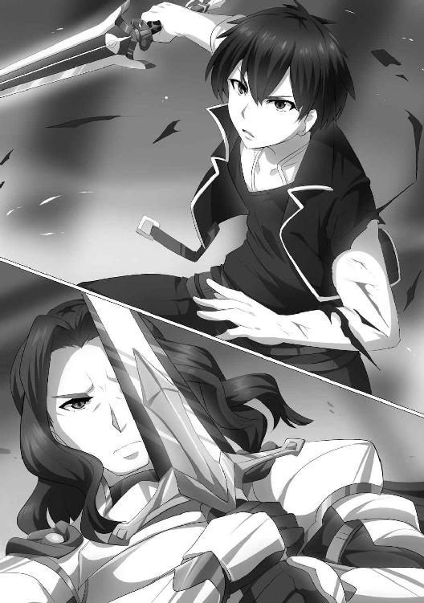

| ダンジョン暮らしの元勇者3 ダンジョン暮らしの元勇者シリーズ (ビギニングノベルズ) | |
| 峰崎龍之介 | |
| 株式会社キルタイムコミュニケーション (2016) | |
※本作品の全部あるいは一部を無断で複製・転載・配信・送信したり、ホームページ上に転載することを禁止します。本作品の内容を無断で改変、改ざん等行うことも禁止します。また、有償・無償にかかわらず本作品を第三者に譲渡することはできません。
※本作品は電子書籍配信用に再編集しております。

目次
一章 強襲作戦、始動
「勘違いされては困るのですが──私は怒っているわけではないのです」
蛇顔の男がどこからどう見ても激怒しながら言ってくるのを、ベアトリスは聞いた。
（話、長くなりそうねー）
テーブルを挟んだ向かいのソファでは、この屋敷の主であるケネスがこめかみをひくつかせている。馬をしばらく失敬していたことが、余程腹に据えかねているらしい。
それでも、声の抑揚だけはきちんと制御していた。このあたりは流石に、この温泉以外なにもないレムトールを売り出し、大陸随一の観光地に押し上げた商人のテクニックだった。
「よいですか、繰り返しますが私は怒っているのではありません。ただ悲しいのです。せっかく縁に恵まれ、あなたをお迎えできた。だというのに、殿下ときたら無茶ばかりを──」
くどくどと、ケネスは続けた。この薄っぺらい忠告は、彼がこの屋敷に汗だくで走りこんできてから、ずっと繰り返されている。お陰でいい加減飽きてきていた。
（本題に入るのが遅いのも、商人気質が強いせいかしらね）
思いながら、ベアトリスは静かにテーブルへと手を伸ばした。並べて置いてある紅茶と茶菓子の間で手を一往復させてから、茶菓子の方を手に取る。
甘い。甘くて美味しい。臓腑に染み渡るようだった。街の外にいる間には甘味に縁がなかったせいかもしれない。
しばらく堪能した。視界の端に、ちょっと羨ましそうなマリーが映っていた。ハーレン兄妹とキルスは同じ部屋にはいるが、流石に皇妃と領主との話し合いに口出しするほど、空気が読めないわけでもない。
「わかるでしょう。これは当たり前の話です。誰であろうと、人のものを無断で奪えばそれは盗人となる。たとえ偉大なる皇帝陛下の奥方であろうと、それは変わらない──」
「そうね」
いい加減鬱陶しくなり、短く返事をした。
「まったくもってその通りだわ。ええ、一時的にとはいえあなたの大事なお友達を拝借したのは、確かに盗人の所業ね」
「わかっていただけましたか」
と、ケネスは元より爬虫類めいた顔つきをさらにいやらしく歪め、またなにかを言おうとした。
だがベアトリスは彼がなにか言う前に、さっと足を組んだ。はしたなくスカートが捲れ、ケネスの注意を引く。その間に、言葉をねじ込んだ。
「でもケネス。──例えば、本来帝都に納めるべきだった税金をちょろまかすのも、立派に盗人よね？ そこんとこはどう思う？」
「......なんのことですかな」
歪みかけた表情が、冷徹に引き締められる。まずい話題に踏み込まれたことへの警戒がにじんでいた。やはりこういうことにはよく頭が回る手合いだ。
しかしこちらも、狭い肩身のまま十数年も皇妃をやっているのは伊達ではない。
「とぼけても駄目よ。あれだけの良馬を百体以上、個人で所有しているのはどう考えてもおかしいわ。実際に車を引かせてみて、あれがどれくらい値の張る代物かよくわかったもの。維持費だって馬鹿にならないし......一介の領主が普通に稼ぐだけじゃあ、到底お金が足りないわ」
ケネスの顔を見た。変化はなかった。感情を表に出してしまうのを怖れたか、無表情に近い。だが反応を抑えようとしている時点で、ベアトリスの指摘にそう間違いがないのはわかった。
「......ま、大方ヘクトルには話を通しているのでしょうけど。そして私はヘクトル──あなたの飼い主には疎まれてるわ。不正を指摘したところで半笑いでも返ってくるだけでしょう。──でも、いまの帝国を牛耳っているのはあくまで皇帝よ。そして私は、そこに対してはまだ影響力があるし......やろうと思えば、今回のように街を出るなんて無茶もする。......言ってる意味、わかる？」
なにもかもすっ飛ばして、一番上の権力者に密告してやろうか。これはそういう脅しだった。
実際には縁の始まりからして、皇帝とは冬の空より冷え切っているのだが──それは余人にはわからないことだろう。
「............」
ケネスは黙ったままだった。だがほんのわずかに、額に汗をかいている。蛙だと思って睨んだ相手が巨大な肉食獣だと、ようやく気づいたのか。
そうなってから、ベアトリスはふっと顔から力を抜いた。小さく微笑んでやる。すると......
「......くっ。母子揃って口の減らない......！ もう付き合いきれません。し、失礼しますよ！」
ケネスはわなわなと震えながら立ち上がり、逃げるように部屋の出口に向かった。
「こ、今夜はこちらに泊まります。なにかすればすぐにわかりますよ。......くれぐれも大人しくされていますよう！」
それだけ言い残して、蛇顔の男は退室した。どたどたという、怒りを隠しきれない足音だけが聞こえてくる。
「......やれやれ。蛇っぽいわりには体温高そうなことで」
ベアトリスは肩をすくめると、部屋の窓に顔を向けた。
外はもう陽が落ちかけている。じきに夜が来るだろう。そしてそうなったら。
「いよいよ、ね。腕が鳴るわ」
また暴れられそうだ──危険な思考を躊躇なく思い浮かべながら、彼女はにやりと笑った。
◇
──観光地の長というのは、思ったよりも儲かるらしい。
小高い丘のひっそりとした林に身を潜めつつ屋敷を見上げた時、ブラムはそんな下世話な感想を思い浮かべた。
といっても、彼にそう思わせたのは屋敷そのものではなく、それを囲っている壁だが。
屋敷を囲うようにそびえ立っている外壁は、門番に気づかれないよう少し距離を取っているにもかかわらず、威圧感を与えてくるほど大きかった。恐らく侵入者を阻むためのものなのだろうが、それにしても過剰な大きさだ。
（この暗さでもわかるってんだから、相当だよな）
既に夜は深まっていた。時計はないが、夜気の冷たさでなんとなく察せる。しかも夕刻頃から雲が増え始めたので、あたりはひどく暗かった。
「それで......どうするのですか？」
──と、同じように林に身を潜めているニーナが言ってきた。それにちらりと視線を動かすと、彼女はちょうど片眼鏡を鬱陶しげに弄っているところだった。
（伊達なんだよな、あれ。魔導師っぽく見せるための。......邪魔なら素直にポケットにでも仕舞えばいいのによ）
内心でだけ呟く。口に出せば言い争いになるのは目に見えていた。ミオンという目的のために様々な事情を飲み込むことにしたらしいニーナだが、基本的にブラムとは相性がよくないのだ。
「どうする──ってもな。見ての通り屋敷の周囲はがちがちに固めてある。やましいことがありますって白状するみたいにな。俺はよじ登れんこともないだろうが......お前は無理だろ」
「魔法を使えばなんとでも......いえ。あとが続かない、ですね......」
ニーナはなにか反論しようとして、結局やめた。飛行や大跳躍を可能にする魔法は存在するが、どちらもはっきりと大魔法の上、かなり独特な術式を用いる。本来は医療魔法が専門のニーナには荷が重いだろう。仮に可能だったとしても、屋敷の敷地内に入っただけで困憊していては話にならない。
（つーか、なんでもかんでも使えるアルが異常なんだよな。あいつが一番身近な魔導師だったから、そういうもんだと思ってたが）
呟きつつ、小柄な魔導師少女を見やった。心なしか残念そうにしている。足を引っ張っているとでも思ったか。
（真面目なのは美点だが、たまに欠点にもなるな）
肩をすくめた。静かに告げる。
「ま、できたとしてもやらんだろうから気にするな。......とりあえず、あっちを見な」
言いながら指差した。向かって斜め右方向に、頑丈そうな鉄格子で閉じられた屋敷の正門がある。その前に突っ立っている三人ほどの門番の姿も、頼りない月明かりに照らされてかすかに見えていた。
「あれをぶちのめして、強引に突破する。正門も派手にぶっ壊そう。怪盗よろしく優雅に潜入ってのは楽しそうだが、今回はそれじゃ意味がないからな」
「......？ なぜです？ 気づかれずに済む方法があるなら、それに越したことはないですよ」
ニーナは言いながらまた片眼鏡を弄り、やがてこっそりと嘆息していた。それからやはりこっそりと、片眼鏡を胸ポケットに仕舞う。どう足掻いても邪魔になると悟ったらしい。
「ま、そうだな。目的のブツを奪うだけならそれがベストだろう。だがいまはちょいと事情が違う。さっきも馬車の中で言ってたが、逃げるには足が必要なのさ。そしてそれは、別のところにいるベアトリスたちの担当だ。でもって、足がこっちに届くのは早すぎても遅すぎても具合が悪い。つまり、タイミングが重要なんだよ」
「......なるほど」
彼女はそこで、こちらの言いたいことを察したようだった。先を引き取ってくる。
「そのタイミングを計るために、こっちで花火をあげると。そういうことです？」
「正解だ。派手に暴れて狼煙を上げ、別働隊が動き出すきっかけをくれてやる。だからこそ強行突破である必要があるのさ。......他に質問は？」
ニーナはふるふると首を横に振った。それに微笑みかけ、立ち上がる。
「いい子だ。さて、狩りの時間だぜニーナ。気合は十分か？」
「......うるさいです。言われなくてもやってやるですよ」
彼女は即座にそう言ったが、声は震えていた。無理もない。これから挑むのはザヴァクの貴族、その本拠だ。彼女にとっては身内の軍でもある。しかも彼女は、そもそも軍人でも戦士でもない。葛藤はあって当然だった。
だが──
「いまお傍に参ります。ミオン様」
続く言葉には力があった。覚悟があった。不安と恐怖をねじ伏せようとする意志があった。
だからブラムは慰めることも鼓舞することもなく、にやりと笑ってこう告げた。
「......まずは手本を見せる。ついてきな」
返事はなかった。期待もしていなかった。ブラムはもう、スイッチが入っていた。
歩き出した。正門に向けて。そうしながら、すべきことの準備を着々と進める。
「──なんだ？ おい、貴様ら！ そこでなにを──」
門番のひとりがこちらに気づいた。続いて他のふたりもこちらを向いたようだ。
「──なに、ちょいと『囚われのお姫様』を奪いに来ただけさ」
ブラムは呟き、聖剣を抜いた。緩く握り、意志を伝える。
「久々に全開でいくぞ──」
呟きに応じ、刀身が燐光を纏った。それは見る間に高まり、ブラムが伝えた破壊の意志を体現しようとする。
「──光よ、穿て！」
直後。正門の鉄格子が、轟音ののちに跡形もなく消し飛んだ。聖剣が放った光の棘──全力の爆砕棘光の威力の前では、鋼鉄製の門も形無しだ。
次に門番が全員、悲鳴をあげる間もなく宙に浮いた。爆発の余波だけでもその威力があった。まるで木の葉のように打ち上がっていく。
それだけでは終わらなかった。ブラムは宣言通り、全開でことに及んでいた。
「穿て、穿て、穿て、穿て、穿て──」
光の棘がばら撒かれた。もはや道を阻むものなどないが──合図は派手な方がよく、景気づけにもなる。
土煙がもうもうと立ち昇り、光が暴れ狂った。熱風が夜気を払ってなお吹き荒れ、衝撃が轟音を生んで破滅的なリズムを奏でる。
──やがてどさりと音が鳴った。吹き飛ばされていた門番が地面に墜落したのだ。
「う、ごおおお......」
呻き声があがった。死んではいないが、もはやできるのは呻いていることだけだろう。というか、生きているだけ儲けものの地獄絵図だった。
「............え、えぐい......」
ニーナが背後で呟いたが、それは無視しておいた。
「──これで中の連中も気づいたろう。慌ててやがるのが目に見えるぜ」
耳を澄ませば、屋敷の中からどたどたという足音や、なにが起きているかと叫び合うのが聞こえてくる。『花火』の音を聞きつけて、屋敷の警備隊員が集まり始めているのだろう。
「いくぜ、ニーナ。もたもたしてっと待ち合わせに遅れちまう」
ブラムは言いながら、綺麗さっぱり吹き飛んだ門を悠々と潜り、そのまま屋敷に向けて歩き出した──
◇
「光よ、奔れ！」
ちかちかと光が明滅した。その光は衝撃を伴って空を駆け、やがて目的の場所──敵のどてっ腹に直撃する。
「ぎゃああああ!?」
「なんなんだよこいつはっ!?」
聖剣が放った光の矢に吹き飛ばされ、屋敷の警備兵たちが悲痛な声をあげる。それを見ながら、ニーナは改めてこう思った。
──やはり勇者は化け物だ、と。
屋敷の中に踏み込んで数分。いまなお続く騒ぎ──勇者の強引な行進を聞きつけて現れた者たちは、視界に入る端から吹き飛ばされ、その一撃でもって沈黙を強制されていた。
（というか......こっちの気合が十分かどうかなんて、関係ないじゃないですか......）
半ば呆れるような心地で呟く。
一応ニーナも、敵影を確認する度に攻撃的な魔法の術式を用意していた。空破拳という、短距離に衝撃波を撒き散らす魔法である。
ミオンが囚われているのが屋内であることは予想していた。なので予め練習し、錬度を高めてあったのだ。攻撃魔法で最も一般的なのは紅焔だが、延焼の可能性がある場所では使いづらい。
（どっちにしろ、この調子では出番はなさそうですが......あ、また吹っ飛んだです）
「ひいいいいいい!?」
「ぎゃあああああ!?」
「死ぬうううううう!?」
先を行く黒い背中の向こうでまた悲鳴があがり、人影が宙を舞った。それなりに広い廊下の端まですっ飛んでいく様は、どこかコミカルですらあった。
「不運を呪え。神を恨め。運命を憎んで這い悶えろ。経緯はどうあれ勇者を敵に回した以上、ここは地獄に成り果てる。さあ──死にてえ奴から前に出ろ。そうでないならクソして寝な！」
ブラムはそんなことを嬉々として叫び、輝く聖剣を振るって破壊の光を撒き散らし、ずかずかと屋敷の奥へ奥へと進んでいった。これではどちらが悪者だかわかったものではない。
（──あれ？）
──と、ニーナはふと首を傾げた。
「ちょっと待つです。さっきから迷いなく進んでますが、道は合っているのですか？」
「あん？」
ブラムがふと立ち止まり、首だけで振り返ってきた。彼はしばし沈黙してから、言ってくる。
「......。そーいや皇女ってどこにいるんだろーな。ノリで進んじまったが」
「アホですか！」
やっぱりなにも考えてなかったか──思いながら叫んだ。すると黒き勇者はがりがりと頭を掻き、言い訳するように呟く。
「しょうがねえだろ。ベアトリスですら皇女の正確な居場所は知らなかったんだ。それに......道がわからねえなら訊けばいいだろ。そこらの『親切な通りすがり』によ」
彼が言った、ちょうどその時。
だだだだっ、と足音が聞こえた。階段を下りるような音。そしてニーナの視界にもちょうど、階段と思しきものが映っていて──計ったようなタイミングで、数人の人影が現れた。
「賊め！ 覚悟しろ！」
「ええい、ケネス様がおられぬ時に限ってこのような......！」
彼らは口々に言うと、それぞれ武器を構えた。屋内用の装備なのか短剣や警棒ばかりだ。
実際、その取り回しの利く武器は便利そうに見えた。ブラムが握っている聖剣は一般的な長剣ほどの長さがあるので、超接近戦となると動きにくいだろう。
そして新たに現れた警備隊との距離は、これまでよりも格段に近いものだ。やりにくい距離での戦いになるのは必至といえた。
「ここであれだけいると、ちと窮屈だな」
案の定ブラムはそんなことを呟いた。そして、なにを思ったか聖剣を鞘に収める。それから、まったく間を置かずにまた呟いた。
「突っ込む。手があるなら援護してくれ」
言うが早いか、ブラムの姿が霞んだ。正確には、そう錯覚するほどの身のこなしで走り出したということだが。
（って、そんな打ち合わせもなしにいきなり──!?）
完全に置き去りにされてしまって、ニーナは慌てた。
「おら来いよ。相手はたかがひとりだぜ？」
警備兵たちのただ中に、無手となったブラムが躍り出た。挑発する余裕すら見せている。
当然、敵はそれを見逃さない。ブラムに罵声を浴びせながら、次々に襲い掛かった。だが彼は一切慌てた様子を見せず、それらを容易く避け、受け流し、挙句カウンターの拳を打ち込んでひとりを無力化した。しかもそれで動きを止めるでもなく、次から次へと標的を変えて襲い掛かっている。動きの素早さと暗さとが重なり、さながら死神が人の魂を刈り取る現場のようだった。
（ああもう、化け物基準で『援護しろ』とか気安く言うなですー！）
あれだけ動かれると、敵と味方との区別がつかない。ニーナの腕では敵だけを狙撃することはできないだろう。だがそれでも、なにもしないというのはない選択肢だった。自分は『おまけ』としてついてきたわけではない──そう念じながら、彼女は走り出した。
「や、やー！ とー！」
不慣れな雄叫びなどもあげてみる。するとブラムの猛攻にかかりきりだった警備兵たちのうちふたりほどが、こちらに気づいたようだった。
「もうひとりいたのか！ ちょうどいい、こっちのバケモンよりはマシだろ！」
「ちぃっ、ちっこくて見えなかったぜ！」
連中は失礼なことを口走りながら、武器を構えてこちらに走ってきた。
（こいつらに遠慮はいらないですね！ ぶっ飛ばすですよ！）
ニーナはイラっとしつつも、接敵に備えて『それ』を口ずさみ始めた。
「怒りの空より来るものよ。汝が拳、振るうはいま。汝が憤怒、解き放つはいま！」
詠唱。世界を『説得』する呪文の枕詞。それに、走り寄ってきていた男たちの顔が引きつる。
「こいつ、魔導師か！」
男たちが叫ぶ。危機を予感して足を止める。だがもう遅い。詠唱は終わった。あとは望む魔法を告げるのみ！
「──空破拳！」
呪文が世界に突き刺さる。瞬く間に、魔法が魔力によって現出した。
生み出された衝撃波は、見えざる巨人が放った拳打の如く、男たちを正面から殴り飛ばす。
「こっちも外れかよおおおおおお!?」
彼らは床と水平方向に、滑るように吹っ飛んでいった。ちょうど、たったいま他の連中を全て叩き伏せたと思しきブラムの横を通り抜け、廊下の端までだ。
「──やるじゃねえか、ニーナ」
「お前が言うなです。トリプルスコアを越えているじゃないですか」
ブラムの足元で呻き声をあげ、あるいは嘔吐しながら悶えている人を数えながら答える。八人。強いて言うならフォーススコアと言ったところか。よくもまあこの短時間で仕留めきったものだ。
「──いい具合に『親切な通りすがり』が集まったな。こんだけいりゃ、誰かひとりくらいは皇女の居場所を知ってるだろ」
ブラムはにやりと口元を歪めた。相変わらず元勇者とは思えない、邪悪な笑みである。
「さて諸君。お疲れのところ悪いが、これから道を訊ねさせてもらう。ああ安心しろ。答えなかったからって殺しはしねえ。ただちょいと、肝臓の上につま先がめり込むだけだ。しばらくは腹痛と血尿とが押しかけてきて勝手にマブダチになりやがるが──ま、大したことじゃねえよな？」
マフィアかギャングか、というその言い回しに、しばらく無音の時が訪れた。
だがややあって──
「それ......半殺し、だろ......」
（......ですね）
──その振り絞ったと思しき呻き声に、ニーナは深く頷いたのだった。
◇
三階まで階段を駆け上ると、またぞろ警備兵と出くわした。
「邪魔だ、いるな、退け！」
言いながら前を走るブラムが床を蹴り、相手がなにかする前に顔を蹴り飛ばす。その兵は恐らくなにが起きたかもわからないまま、鼻血を噴出して仰向けに倒れた。
「調子が出てきやがった。やっぱり勇者は守るより、突撃のが向いてる！」
活き活きした様子で叫ぶと、ブラムは二段飛ばしで階段を駆け上っていった。
「ちょ、ちょっと待つです！ 歩幅を考えるとかないですかお前はー！」
「ん？ ああ、悪い。ちと落ち着くべきか......」
ブラムは呟きながら足を止め、こちらが追いつくのを待つ態勢になった。それを見上げながら、ニーナは短いストロークでちょこまかと走る。
──皇女は屋敷の四階、つまりいまブラムが立っている階層にいると、一階でぶちのめした警備兵は言っていた。脅し文句で搾り取ったので怪しいところもあるが、いまはこれが最有力の情報だった。
（もうすぐです、ミオン様。いまお傍に参ります──って、え？）
──そんな風に考え事をしながら走っていたのが悪かったのか。ニーナは階段の最後の一段に蹴躓いて、盛大にすっ転んだ。
「わあああああああ......あ？」
固い床との熱い抱擁を予感して叫んだのが、途中で止まった。予感に反し、ニーナの体は床に激突する前に、ブラムに抱き留められていた。
「おいおい。怪我なんざしてくれるなよ」
「わ、わかってるですよ......って、どこ触ってるですかヘンタイ！」
受け止めてくれたのはありがたいが、彼の手は思いっきりニーナの左乳房を覆っていた。男に触れられるのは家族を除けば初めての部位だ。一気に顔が熱くなる。
だが、彼はさして気にした様子もなかった。
「安心しろ。俺がお前相手にヘンタイになるには、もうちょい成長が必要だ」
まるっきり子供扱いで床に降ろされる。失礼な話だった。これでも去年よりは胸が膨らんできたというのに──と、反論しかけて慌ててやめる。
（こいつにそれを教えてどうするというのです。アホらしい）
思いながら、そういえば受け止めてもらった礼を言っていないなと気づく。だがいまのやり取りのあとに頭を下げるのはどうにも癪で、彼女はふんすと鼻息を吹いて気まずさを誤魔化した。
それをどう受け取ったのかはわからないが──彼は小さく苦笑した。
「さて。連中の話じゃ一番奥の部屋だってことだったな。......つってもどこが奥だかわからんが。しゃあねえ、聖剣使うか」
言いながら、彼は聖剣を抜きかけた。だが途中で思い留まったように手を止める。
「そういや......ニーナ。鬼火は？」
「あ、使えるです。......とゆーか、最初から使うべきでしたね......」
そうすれば転ぶことも胸を揉まれることもなかったのに──と、やや脚色された愚痴が脳裏を過った。だがそれはひとまず脇に置いて、彼女は呟いた。
「鬼火」
光の珠が、掲げた掌の上に顕現する。魔法の無機質な光が暗い廊下を一気に照らした。
「行くですよ」
「ああ」
合図すると、ブラムは小さく頷いて歩き出した。行く先を照らすように魔法を制御しながら、その背中を追った。
「一階とは様子が違うですね」
ふと呟く。一階は複雑に道が分かれていたのに対し、この階は円を描くように廊下が続いていた。
「そりゃそうだろ。水周りは一階に集中せざるを得ないし、警備兵の詰め所もあるだろうしな。ここはまあ......客室と物置ってところなんだろうよ」
そんなことを言っている間に、目的の場所に着いた。階段の真裏にあたる部屋だ。円形に続いている廊下の構造上、ミオンがいるらしい一番奥の部屋というのは、階段の反対側──つまりここということになる。
（ここにミオン様が──）
焦がれていた瞬間を目の前にして、ニーナはぐっと拳を握った。
「......妙だな」
部屋の扉の前で立ち止まったブラムが、なにやら呟いた。腕組みし、訝しげに目を細めて扉を睨んでいる。
「なにがです？ ここまで来て止まるなです」
「......皇女なんてな、最重要の警護対象のはずだ。それがこんだけの騒ぎの中、ひとりも部屋の前で張ってないってことはねえだろ。連中に担がれたか？ いや、違うな。練度からしてそこまで根性のある連中とも思えん......」
ぶつぶつと呟くブラム。それに、ニーナは焦れた。ぐいと前に出る。
「ああ、もう！ そんなの開けてみればわかるです！」
「いやだから、その開け方が問題なんだ──っておい、軽率に開けるな馬鹿──！」
無視した。仮にこの部屋にミオンがいないなら、それはそれでさっさと確認して次の可能性に当たらねばならない。これは時間が勝負の分かれ目となる仕事だ。ぐずぐずしている暇はない。
思いながら扉を押し開けた。
そうして見えたのは──ミオンのものでは決してない、屈強な男が手を掲げている様だった。
「......え？」
思わず漏らした声。それを掻き消すように、力ある一声が紡がれた。
「風刃」
──それは起動呪だった。無色透明の、薄く鋭い衝撃波を飛ばす......攻撃魔法のだ。
（死、ぬ──）
反射的に思い浮かべた。それだけでも奇跡的なことだった。風刃は威力を捨てて速さを求めた術式だ。見て避けられるようなものではない。
死ぬ。間違いなく死ぬ。誰とも知れぬ者に魔法で殺される。連鎖的に思い浮かべた──その瞬間だった。
「馬鹿、ぼけっとすんな！」
声が聞こえ、黒い背中が視界を覆った。
同時に、かすかな風が頬を撫でてくる。ぽたぽたというなにかが滴る音もした。
「......あ、え？ あ......」
──滴っていたのは血だった。無論ニーナのものではない。
ニーナを庇った、ブラムの血だ。
それが意味するところは、ひとつしかなかった。
「あ、あ、あ......」
しくじった──助かった命で思う。自分の軽率さが招いた悲劇を。
いまにブラムは倒れるだろう。斬り裂かれた腹を押さえて血反吐を吐くだろう。そして──死ぬだろう。
魔導師としての確かな知識が、悪い予測を確信めいたものにしていた。
（わ、私のせいで──）
最悪だった。最低だった。気の早いことに泣きそうにすらなった。
......だが。
「──大丈夫だ。ちといてえが死にゃしねえよ」
「......へ？」
極めて平然とした声で言ってくるブラムに、ニーナは半泣きの顔で間抜けな呻きを漏らした。
◇
「ほ、本当に大丈夫なのです......？」
「ああ」
ニーナが背中にすがり付いて確認してくるのに、ブラムは振り返らないまま頷いた。受けるのに使った左腕は血塗れだが、見た目ほど傷が深いわけではない。もっとも別に痛くないわけでもないのだが、それを口にしたらニーナは泣くのではないかという気がしていた。
「......こちとら、これよりひでえのを何千回も食らってんだ。こんなもんでいちいち死んでられっかよ」
彼女にはわからないであろうことを付け加えながら肩をすくめる。半殺しと治療を繰り返して抗魔力を鍛えていたなどと、悠長に説明している暇はなかった。
なにせ目の前には、はっきりとした敵がいるのだから。
「さてと──随分な挨拶だったな。そりゃま、ノックもなしに訪ねたのは無礼かもしれんが......生憎、礼儀云々より先に殺しの技を覚えさせられた無作法者でな。そこは勘弁してくれよ」
軽口を叩くが、その男──魔法で攻撃してきた兵は無言で立っているだけで、なにも答えてこなかった。
「だんまりか。......にしても、相手も見ずに殺しにかかるってな、あんまりにも物騒じゃねえか？」
言って、眼前の男に目を凝らす。だが顔は見えない。ニーナが集中を切らして鬼火が消えたため、部屋はほぼ真っ暗だ。
「このタイミング」
──と、男が口を利いた。無骨な喋り方だった。岩が口を利いたような印象を受ける。
「......賊以外にありえない。そして......一階の警備を抜いてここまで来るような相手でもある。オレの力量で殿下をお守りするには、不意を突くしかない」
「ほう。そりゃ冷静なこった。んで、その殿下はいまどちらに？」
「言うと思うか？」
男が剣を抜いた。静かに構える。飛び抜けた威圧感はないが──地に足のついた、確かな研鑽のあとが見て取れた。
「魔法はもういいのか？」
「独学のまがいものだ。どうせ死ぬなら剣がいい」
「............ほう」
ブラムはすっと目を細めた。左腕を庇うのをやめ、聖剣を抜く。
「一応訊くが......なぜ死ぬと思う？ お前の奇襲は上手くいった。結果的にだがな。お陰で俺の左腕はしばらくお荷物だ。勝ち目があるとは思わないのか？」
「お前と戦えば死ぬ」
男は言葉を切った。それこそ、死の直前の会話ゆえに噛み締めているかのように。
「腕の負傷など関係ない。お前が望めば誰であろうと死ぬ。お前からはそういう匂いがする」
断言だった。初対面で名乗りもしていないのに、だ。
「......わかっているなら退くって選択肢もあるぜ」
「任務だ。可能不可能にかかわらず、オレは殿下をお守りする」
「......そうか」
なるほど──これは厄介だ。ブラムは苦笑混じりに呟いた。
忠義の騎士。命を最初から捨てている。こういう手合いは実力差があろうがなかろうが、関係なく手強い。

──殺すしかない。この男の気持ちいいほどの割り切りは嫌いではないが、残念ながら生かしておくことはできそうにない。
この男はきっと、腕がもげようが足が千切れようが追ってくるだろう。心臓が動く限り任務に忠実であるのだろう。
──そういう女を、ひとり知っていた。だからわかった。
この男からは彼女と──聖騎士ヴィオーラと同じ匂いがする。
「ブラムだ」
「なに？」
唐突な名乗りに、男が訝しい声を出す。ブラムはそれに笑いかけ、促した。
「名乗れよ。ガラじゃねえが、決闘ってなそういうもんだろ」
「............シャルティ」
返ってきたのはやはり無骨な声だった。だがほんの少しだけ誇らしいという色も混じっている。
彼はそのまま続けた。
「そうか。オレを殺すのはかの勇者か。勝てる気がしないわけだ」
彼──シャルティはそう言って、かすかに笑ったようだった。顔は見えないので、気配で察しただけだが。
だがそれも一瞬だった。彼はすぐに無骨な気配を取り戻すと、剣を握り直した。
「ニーナ、下がれ」
「......っ」
告げるというより命じた。彼女は息を呑んで数歩下がったが、部屋からは出なかった。見届けるということか。
なんにしろ──
シャルティが身を沈めた。打ちかかる直前の挙動。それに合わせ、ブラムも気組みを整えた。
無色透明の殺意が、静かに体を満たした。温度のない......純粋な殺意が。
（思えば久々だな。流れじゃなく......明確に意識して人を殺すのは......）
意識は既に、シャルティを殺していた。
無数のパターンを、あらゆる可能性を数秒で吟味し終えていた。膨大な戦闘経験がもたらす予知にも似た感覚があった。
シャルティの腕では──万が一にも間違いは起こらない。もう、わかっていた。
そのまま数秒待った。死を約束する瞬間を。
そして──
「──参る」
「──来な」
──その時が来た。
シャルティが床を蹴った。真っ直ぐに飛び出してくる。剣閃が一筋走った。声と同じく無骨な剣筋。
狙いは首。一撃必殺、死なばもろとも──そういう気概の突撃だった。
応じた。体が自動的に、予測していたパターンに沿って勝手に動いていた。
聖剣を振るった。全力の一振りを見舞う。吸い込まれるように、シャルティの剣を正面から捉えた。
「......っ!?」
シャルティ。目を見開いている。その一撃で剣が折れたからだった。
「......見事」
無骨な呟き。末期の言葉。その瞳には、全霊の攻撃を無傷で凌がれたことへの驚きと、それだけの力量を持った相手に屠られる喜びが過っている。
「あばよ」
告げて剣を振るった。一撃で首を刎ねるつもりだった。
そして聖剣が、シャルティの首に迫った──その刹那。
「──そこまでッ！」
──聞こえたその制止の声があまりにも鮮烈で、ブラムは思わず剣を止めた。
ありえないことだった。本気で誰かを殺すと決めたブラムが、たかが声で止まるなどというのは。
だが現実に、剣は止まった。シャルティの首を薄皮一枚を斬り、かすかな出血を強いるだけでぴたりと静止している。
「──まったく、どいつもこいつも」
異様に通る声だった。聞けば振り向かざるを得ない引力を持ち、部屋に満ちた冷徹な殺意を一撃で霧散させる力を持っていた。
自然、視線が声の方に集まった。殺し合っていた男たちも、それを見守っていた少女も同じ方向を見ていた。
集まった視線の先には、暗い中でもはっきりと認識できるほど鮮やかな女がいた。
そして──
「ミ──ミオン様!?」
「殿下......」
自分以外の者が同時にその名を呼んだことで、ブラムは彼女こそが第三皇女──ミオン・レクト・ザヴァクであると知った。
◇
（──お、始まったわね）
遠くから爆音が聞こえてきた時、ベアトリスはちょうど着替えを終えたところだった。
当然だが、ドレスではなかった。あれでまともに動いて戦えるのはマリーくらいだ。足の動きを隠せるという利点があるとはいえ、やはり戦う格好としては不適切だ。
また、ベスを名乗っていた時のような鎧姿でもなかった。いま纏っているのは、体をぴったりと覆う黒い革製の服だ。
保温性はそれほどでもないが、耐久性と動きやすさは折り紙つきの一品だった。元はザヴァクの特殊戦闘部隊が用いていた戦闘服で、あちこちに細かな武装を取り付ける金具がある。
もっとも彼女はそれらを使わず、剣帯を腰に巻いて細剣を提げていたが。
「行きましょう」
静かに告げる。着替えを手伝っていたマリーに向けてだ。彼女が頷くのを確認して、ベアトリスは早足に部屋を出た。
「──あら？ この声」
と、マリーが唐突に言って、不意に明後日の方を見た。すると計ったようなタイミングで、そちらの方からなにやら騒がしい声が届いてくる。
『だーっはっはっはっは！』
「お兄様の声ですわね」
「みたいね」
つまりこの声のする方が、厩の方向だということだろう。ブラムからの合図が聞こえたと同時、準備の少ない男ふたりで手早く行動に移ったに違いなかった。
「ロイったら相変わらずね。これは急がないと、ご馳走を食べ損ねちゃうわ」
足を速めた。ここまできっちり武装しておいて出番がないのでは、不完全燃焼だ──と、思い浮かべたその時だった。
「ええい、なんの騒ぎだ!? 誰か来い！ 私に説明しろッ！」
激した声が聞こえた。ケネスの声だ。『合図』の派手さと屋敷の異変で飛び起きてきたらしい。
「あちゃ。カチ合っちゃったか」
うへえと舌を出していると、廊下の向こうからケネスが姿を見せた。
「......殿下！ またあなたですか！ 大人しくしていろと言ったでしょう！ まだ舌の根も乾いていませんぞ！」
──彼はひと目で元凶を見抜いたらしく、ほとんどひっくり返った金切り声で怒鳴ってきた。
「......討ちますか？」
気づくと、マリーは剣に手をかけていた。変わったところのある娘だが、剣士として──軍人としての覚悟の据わり方は本物だ。了承すれば本当にケネスの首を刎ねるだろう。
「手っ取り早くて素晴らしい案ね。でもやめておきましょう。......私に任せて」
見た目とは裏腹な、苛烈な行動指針を持つマリーを、仕草で下がらせた。歩み寄ってくるケネスに向き直る。
「はぁい、ケネス。遅くに騒いで悪いわね」
気楽に告げて、こちらからも歩み寄った。
──蛇顔の男、ケネス・コートルトは憎たらしい男だ。人間よりも馬に気を許す変人であり、横領と着服の常習犯でもある。どちらかといえば悪人に分類されるような男。
だが、殺すほどの邪悪かと言えばそうでもない。少なくとも寂れた温泉街でしかなかったレムトールに『観光』という名の財産を見出し、磨き上げて商品にまで仕上げた手腕は本物だ。
そしてその手腕によって集められた人の流れや財は、間違いなくザヴァクを潤していた。国家に、民に対して確かな貢献をしていた。
小悪党として、民の税金を掠め取ったケネスは確かにいる。だが商人として辣腕を振るい、民に財産を持たせたケネスもまた、確かにいるのだ。
「......先のひどい音はなんです。私の屋敷の方から聞こえましたが。それに──あなたのその格好。よもや夜の散歩だなどとは言いませぬな」
「あら。言おうと思ってたのを先取りされちゃった。なによケネス、そういう口も利けるんじゃない」
ベアトリスはくすりと笑った。だがここしばらく立て続けに面倒事が降りかかって沸点の低くなっている小悪党は、いらいらと踵を床に叩きつけて叫んでくる。
「笑い事ではございません！ これはもう盗人などという騒ぎではない。暴動だ！ そして国家の象徴たる皇族が、国の中枢に近い皇妃が行うそれは、もはや明確な反逆ですらある！」
「そうね。......そうかも」
無茶をしている自覚はあったが、そういう言葉遣いは思い浮かんでなかった。だが言われてみれば、その表現はしっくりくるものだった。
ただ、より確かな表現にするのなら──
「そうね──これは反逆よ。ミオンを、愛しいあの子を殺そうとするヘクトルと、それを見ても止めようとすらしない皇帝に対する──ね！」
叫び、床を蹴った。唐突なその行動に、ケネスは反応すらできていなかった。もっとも、非戦闘員である彼だ。反応できたとしても対応は難しかったろうが。
「よっ、と......！」
大きく跳躍した。ケネスの顔に飛びつき、腿で首を挟んでから後ろ向きに体重をかける。
「ちょっと乱暴だけど、これでも慈悲をかけてる方よ。──優しく落としてあげるから、白目剥いて寝ちゃいなさい！」
我ながらひどいと思える文句で弾みをつけてから、ケネスを引きずり倒した。そのままの腕を腿の内側に入れ、ぎりぎりと締め上げる。
「ぐ、おおおおお......！ は、離しなさい殿下！ な、なんというはしたない格好の技を！」
ケネスは深刻なのかコミカルなのか判断に悩む罵声をあげると、じたばたと暴れた。だが──技は既に完全に極まっている。
──三角絞め。その名の通り、足で作った三角形の中で相手を絞め落とす技だ。肉弾戦に特化したロイから戯れに教わったものだったが、思わぬところで役に立った。
「......ぬ、ぬぅ......ぅぅぅ......」
ケネスの呻きはどんどん力をなくしていった。そして、ややあって。
「............」
完全に落ちたと見えて、彼はかくんと首を落とした。
「っし。これでうるさいのは黙らせたわね」
「お疲れ様です、ベアトリス様──あら？」
「？ どしたの？」
──と、駆け寄ってきたマリーがぱちくりと瞬きしたので問うてみる。すると彼女はなんともいえない表情で、すっとケネスを指差した。
ベアトリスは指を追って視線をずらし──すぐにマリーの言いたいことを理解した。
「あーらら。案外むっつりスケベだったのね。馬とお金にしか興味ないと思ってたけど」
ケネスの股間。こんもりと盛り上がっていた。柔らかい女の腿で顔を挟まれていたのだから、まあわからなくもない反応だった。
「......ま、精々いい夢見てることね。現実ではまっぴらごめんだけど、夢想の中でくらいなら犯されてあげるわ」
彼女はにぃっと危険な笑みを浮かべると、あとは振り返りもせずに屋敷を出て行った。
◇
厩は既に大混乱に陥っていた。その中心にいるのはキルスとロイだった。彼らは互いの背中を預け合うように位置取りながら、十を越える武装した警備兵と派手に打ち合っている。
人数で言えば警備兵側が大幅に有利だが、見たところ戦況は拮抗しているようだった。
「──よし。パーティーは始まってるけど、ご馳走はまだ残ってるわね」
ずかずかと騒ぎの中心に向かった。そして声が届くような距離になると、淀みない動きで細剣を抜き、言い放った。
「──聞けッ！ この身はザヴァク帝国が第二皇妃、ベアトリス・エルト・ザヴァクである！」
覇気に満ちた一喝に、混乱が一瞬鎮まる。全員が思わず、といった顔でベアトリスを仰ぎ見ていた。それを視線で斬り刻むように見回しつつ、彼女は続けた。
「我々はいま、わけあって馬車を欲している。貴殿らは退くがいい。これは一切の妥協を許さない要請である。従わぬならば──」
言葉の途中で、しゃらんと鞘鳴りの音がした。マリーが得物を抜いていた。理由は目の前にあった。
警備兵たちは、誰ひとり動かなかった。武器を握ったままじっとしている。退く気はない。それがよくわかった。
──だが見たところ、忠義によるものではなさそうだった。全員漏れなく、悲痛な表情をしている。
無理もない。いくら皇妃の要請だろうが、勝手にケネスの馬たちを引き渡しなどしたら、あとが地獄だ。彼らにとってはいきなり現れた皇族などよりも、普段直接君臨しているケネスこそが真の恐怖なのだろう。
哀れではあった。板ばさみの苦しみは理解できた。だが退く気はなかった。
こちらも切羽詰っている。かかっているのはミオンの──愛しい我が子の命なのだから。
「......しゃあないわね。マリー。まずは突っ込んでロイとキルス君に合流。それからなるたけ殺さないように、でも派手に暴れましょう」
「はいっ」
マリーは即座に頷いてきた。それに振り返らないまま頷き返し、ベアトリスは地を蹴った。
──ようやくここまで来た。ミオンをまた抱き締められるところまで。ならばもう、この足が止まることはない。愛しい我が子を抱き寄せるまでは、止まりはしない──
「ッ殺アアアアアアァァァァァッ！」
地を蹴るごとに溢れそうになる思考を、その咆哮で吹き散らしながら。
ベアトリスはひとりの剣士に──否、牙を剥く獣になっていった。
二章 闇の中の脱出劇
「腹の立つ話だわ」
凍りついたように誰もが動けない中、その声は変わらず凛と響いた。
「まったく──戦場みたいな音で起こされたと思ったら別室に放り込まれて、今度は殺し合い？ 次の出し物はなによ。ものによってはぶん殴るわよ」
どこか苛立ったように呟き、その声の主──ミオンはつかつかとこちらに歩み寄ってきた。それから、涼しげな目元をついとこちらに向けてくる。
「それ、退けてあげて」
「......ああ」
数秒前まで本気の殺意を纏っていた聖剣を引き、ブラムは呟いた。奇妙な感覚だった。この声に言われると、不思議と逆らう気分にならない。なんとなく従うべきだと思わされる、不可思議な引力がある。
（......これがベアトリスの言っていた、『時代に適しすぎた資質』なのかもな。なるほど。確かに強烈だ──）
思いながら一歩下がった。見上げてくるミオンの瞳が、そうしてくれと言った気がした。
彼女は意図を読んで動いたブラムに軽く目を見開いたが、結局こちらにはなにも言わずに数歩進む。
その行く先は、ついさっきまで死の縁にいた忠義者の騎士──シャルティの目の前だった。
「......殿下」
シャルティが呆けたように呟く。覚悟していた死が遠のき、どうしていいかわからなくなっているのか。
そして──身の置き場に困っている者はもうひとりいた。
「あの......」
小声が聞こえ、服の裾が引っ張られた。ニーナだ。焦がれていたミオンを目の前にして、しかし状況の異質さから動けずにいる。本当ならすぐにでも抱きつきたいところなのだろうが......。
「......気持ちはわかるが少し待て。ここで動くのは間抜けだぞ」
ブラムは聖剣を鞘に収めながら囁きかけ、ことの成り行きを見守った。
「さて」
ミオンは短く呟き──すぐに続けた。
「歯を食いしばりなさい」
言うが速いか、ミオンの手が閃いた。景気よく音を立てて、シャルティの頬が張られる。見事なビンタだった。
「なぜ殴られたかわかる？」
「......シーツで簀巻きにして別室に隔離したから、でしょうか」
シャルティの答えは明瞭だった。ブラムは部外者ながら、それで事情を察した。
どうやら一階で聞いた情報は間違いではなかったらしいが──シャルティが機転を利かせ、ミオンを隠していたというのが真実のようだ。
「ええ、そうね。それもあるわ。なにせ懐剣を隠し持ってなきゃ到底脱出できないくらいに、執拗に拘束されたものね。......でもそれだけじゃないわよ」
ミオンは頷くと、ぐいとシャルティの胸倉を掴んだ。
「──騎士道、大いに結構。あなたの命とあなたの誇りだもの。好きに使えばいいわ。でも、それは私も同じよ。私の命に私の誇り。自由にできるのは私だけ。......勝手に背負って死に急ぐなんて、そんなことは許さないわ。言ってる意味、わかる？」
「............はい」
シャルティは、なにか反論を口にしようとしたようだった。そういう間があった。だが結局、ミオンの声が持つ力に説き伏せられ、ただ肯定の意を示す。
「......ん、ならばよし」
彼女はそこで、ふっと纏う空気を一変させた。顔を見なくても微笑んでいるとわかる、柔らかい空気に。
「わかったならそれでいいわ。......ったく、ずっとだんまりかと思えば急に無茶して。わかんない男ね」
ミオンは優しい声音で言うと、胸倉を掴んでいた手でシャルティの頭をさっとひと撫でした。明らかに彼女の方が年下だろうが、妙に似合いの仕草だった。
それから、彼女はゆっくりと振り返った。
「──で、なんだけど。......あんた誰？」
「............」
ブラムはとりあえず口を噤み、数度瞬きした。内心呟く。
（......すげえ女だな。なんも状況理解してねえくせに、雰囲気だけで場を制圧しやがったのかよ）
思っていると、ミオンが目を細めた。焦れたように続ける。
「見た感じ、この馬鹿騒ぎの首謀者ってところなんだろうけれど。こんなところまで上がってきたってことは、狙いは私の首かしら？」
「......半分正解だ。あんたに用があるってのは確かだからな」
「へえ。賊が私にね。......で、なんの用だっていうの？」
語気はまったく怯んでいなかった。武装した賊──彼女にはそう映っている──を前にして、一歩も引く様子を見せないのは、気丈というのを通り越している気がする。
「あんたを迎えに来た」
「迎え？」
──そう言った時、ぴくんとミオンの片眉が跳ねたのを、ブラムは見逃さなかった。
「............そう」
彼女は目を瞑り、静かに頷いた。なにかを悟ったような声音だった。
「......自分で来ないってことは......相当無茶したのね、あいつ。ったく、私の周りにはそんなのばかり集まる......」
嘆息交じりの呟き。だがそれには、どこか嬉しそうな──歳相応の少女の感情がにじんでいた。
やがて彼女は目を開けた。そして言ってくる。
「あなた、アルの友達？」
「ああ。ここへは奴に頼まれて来た」
「ってことは、あなたはブラム・ディルモンドね」
名乗りもしないうちから言い当てられ、苦笑した。肩をすくめる。
「参考までに訊くが、なぜわかった？」
「簡単よ。あのヘソ曲がり、友達少ないもの。私の知る限りだと、噂の『勇者』くらいしか候補はいないのよ。しかもそれが、私が帝都に移送される前日に押しかけてきたとあれば......腹積もりもある程度読める」
打てば響く──そんな反応だった。なにを言ってもそこから情報を抽出し、理解を深めている。
「話が早くてなによりだ。一応身分証明になるよう、こいつを連れてきていたが......必要なかったかな」
言いながら腰にへばりついているニーナを引き剥がした。前に押し出す。
「あ、あの......」
いざ本人を前にしたら気後れしたのか、ニーナがもごもごと言う。対してミオンは、さっぱりしたものだった。
「あら、ニーナじゃない。久しぶりね」
言って、へっぴり腰のニーナの前で手を広げる。おいでと誘うようにだ。するとニーナはなにやら感極まったようで、
「ミ、ミオン様ー！ 会いたかったですー！」
半泣きで抱きついた。ミオンはそれをおーよしよしと受け止める。
「変わらないわね。歳は私の方が下のはずなんだけれど。......あれ？ そういえばなんでこの娘がレムトールに？」
「ああ、そいつはな......」
──と、ブラムが説明を口にしようとした時だった。
『だーっはっはっはっは！』
『おーっほっほっほっほ！』
外からそんな声が聞こえてきた。もう馴染みとすら言える笑い声。馬車が到着した合図だろう。
「ハーレン兄妹......ってことは、お母様が戻られたのね。なら、やっぱりアルのところに走ってた、か。──まったくあの人は。ニーナまで巻き込むことないでしょうに」
「......ま、そういうことだ。降りれば迎えの馬車と母上様がお待ちかねってわけさ」
「そう。なら急ぐべきね。もう一方の『お迎え』とカチ合って修羅場なんて、肝が冷えて仕方ないもの」
ミオンは言うと、ニーナを抱擁している手を解いた。
「──行きましょう。手荷物なんてありはしないわ。ここにあるものは全て置いていく。くそったれに無力な私と一緒にね。......まさか、この期に及んで止めないでしょうね？」
最後のはシャルティへ向けた言葉だった。彼は肯定も否定もしなかった。ただ呟く。
「......鳥籠は壊された。ならば中の鳥が羽ばたくのは自明。それを止める権利は......誰にもない」
「......聞いてたの、あれ。まったく、案外耳がいいのね」
彼らのやり取りの意味はわからなかった。だが口を挟むべきではないということだけはわかった。
シャルティは数瞬黙ってから、こう続けた。
「......あなたが思うよりは、私はあなたが好きでした。金言の全てがこの胸の中にあります。......どうか、似合いの空へ羽ばたかれますよう」
「......そう。......行きましょう。もうここに用はないわ」
「あ、ミオン様！ ひとりで行っちゃだめです！」
ミオンはもう振り返らず、歩き出した。さっぱりとした去り際。それをニーナが慌てて追った。
「......へっ。これじゃどっちが迎えに来たのかわかりゃしねえな」
全てを見届けて、ブラムは呟いた。それから自身も部屋を出にかかる。
だが、彼はミオンほどさっぱりはしていなかった。最後に振り返り、未練がましく言葉を残す。
「シャルティ。拾った命だ。上手く使えよ。責を問われて首をもがれるくらいならきっちり言い訳しろ。『勇者』ブラム・ディルモンドにやられましたってな」
「......考えておく」
相変わらずの無骨な声だった。だが、返事があっただけマシかもしれない。
「ああ、とっくり考えな。もっとも......皇女にああまで言われて、悩まない騎士もいないだろうがな」
ブラムは肩をすくめると、今度こそ部屋をあとにした──
◇
一階まで止まらず駆け下りると、まだ残っていたらしい警備兵と出くわした。寝癖のついたふたり組だ。非番で寝ていたのが、流石に無視できないと起き出してきたのかもしれない。
「殿下!? まずいですよ、部屋にお戻り──」
片方が状況を──皇女と賊が並んで全力疾走してくる様を理解して叫んだ。
だが──
「邪魔だ！」
「邪魔よ！」
──合図もなく、ブラムとミオンは同時に跳んだ。そして同時に、それぞれ拳と膝を兵たちの顔面にぶちこむ。挙句着地まで同時だった。
「──ベアトリスといいあんたといいひどいもんだな。最近の皇族は肉体言語が嗜みなのか？」
「──あなたこそ、勇者のくせに拳骨が決め技なの？ 腰の聖剣が泣いてるわよ？」
「わりとどっちもどっちです......」
鼻血を吹いてひっくり返る兵を尻目に囁き合うと、少し遅れてきたニーナが突っ込みを入れた。それに、ふたりはやはり同時に肩をすくめる。
「ごもっともだが、こいつよりはマシだろう」
「あら失礼ね。私の方が技が美しかったでしょう？」
くだらないことを言い合う──と、その時。
「──ミオン、ブラム君、ニーナちゃん！」
屋敷の玄関の方から、ベアトリスが駆け込んできた。彼女はそのまま続ける。
「ちょいとまずいわ！ 街の軍部が思ったより優秀だった！ 馬車の周りにぞろぞろと来てるわ！ 他の三人で踏ん張ってるけど、馬車を守りながらだとちょいきつよ！」
「なるほど。さっきの笑いは合図は合図でも、開戦の方だったか」
納得して呟く。自然にミオンと目が合った。
「まだ踊れるか？ いや、武器がないようだからお預けか？」
「武器ならあるわ。懐刀がね」
ミオンが本当に懐から短剣を取り出した。小さい刃。頼りなくも見えるが──
「問題ないわ。手入れしたばかりだし、手にも馴染んでる。それよりあなたこそお預けじゃない？ 左腕からだらだら血が出てるわよ」
言われて気づいた。シャルティにつけられた傷がまだ出血している。だが見た目ほどに深くないこともわかっていた。
「かすり傷だよ膝蹴り皇女。心配には及ばねえ」
「そ。ならいいわ拳骨勇者。精々足を引っ張らないことね」
──アルという男を支点に出会ったふたりだからか、やり取りが軽妙だった。波長が合うとでもいうべきか。なんにしろ、ふたりは同時にふっと笑った。
「ニーナ。どうせ向こうも鉄火場だ。ゆっくりついてこい」
「お母様。積もる話はありますが──まずは切り抜けましょう」
それぞれ別のことを口にして、ふたりは走り出した。ぜえぜえ言っているニーナと迎えに来たベアトリスを置き去りにして、玄関を飛び出す。
「ちょ、待つですよ馬鹿勇者！ お前まだ左腕が！ 私！ 私は医療魔導師です！ せめて借りを返させるですー！」
「あ、こら！ ......くっそー、人をのけ者にして仲良くしてからに。私も混ぜろ！」
置き去りのふたりもまたそれぞれに叫んで、外に向かって走り出した。
◇
ミオンを伴って屋敷を駆け出ると、馬車の周りはなるほど鉄火場だった。
「押せ押せ押せー！ 相手は少数だ、すり潰せぇぇぇぇ！」
「門の周りを固めろー！ そこさえ塞げば逃げ場はない！」
「ただでさえ軍部は予算が少ないんだ！ ここでしくじったらケネス様がなにをするかわからんぞー！」
ベアトリスの言葉通り、街の軍部から随分と出張ってきていた。三十はいるだろう。馬車はすっかり囲まれていた。辿り着くにはぶち抜くしかない。
「風穴を明ける。目を焼かれるなよ！」
ブラムは告げて、聖剣を抜いた。そして今日何発目かの聖剣技──光破飛燕を撃ち放つ。
「光よ、奔れ！」
命じて剣を振るうと同時、光の矢が放たれた。屋敷の中で撃ったものは屋内ゆえの加減があったが、これはそれすらない最大出力だった。
放たれた矢は暗い鉄火場を一瞬だけ明瞭に照らし出しながら、包囲の一画にぶち当たった。
『ぎゃああああ!?』
予想外の痛撃を受け、兵がまとめて数人吹っ飛ぶ。包囲に風穴が明いた。
「お先に失礼」
風穴を潜り、ミオンが包囲の中に入り込んでいく。ブラムもそれに続いた。
素早く目を走らせた。馬車の右側ではハーレン兄妹が背中を預け合って奮闘している。そして左側ではキルスがひとりで、槍を振るっていた。元はベアトリスと組んでいたのが抜けて、そういう形になったのかもしれない。
「左を立て直しましょう。押し潰されたら詰むわ」
「同感だ。──いくぜ」
手早く打ち合わせて、ふたりはキルスの下に走った。そのまま、いま現在キルスと切り結んでいる兵に打ちかかる。その兵は不意打ちに反応しきれず、肩を斬られて後ずさった。
「──ありがてえ、勇者の兄ちゃんか。......ってミオン殿下もいんの!? しかも、なんで剣持って......え、おい。嘘だろこのまま戦うつもりかよ!?」
キルスは援護したこちらの片割れが皇女だと知ると、面白いように反応した。だがブラムは意に介さず、にやりと笑う。
「濁さず言えよ。じゃじゃ馬皇女ってな。──いや、その暇もないか」
「──覚悟おおおお！ お、ぐおあ!?」
叫びながら斬りかかってくる兵の、膝の上を浅く斬った。そのまま蹴りを入れて押し返す。だがその時には、次の兵が入れ替わるように襲ってきていた。
──ただしそれは、横から飛び出したミオンが短剣でひと撫でして片付けたが。
「ぎゃあああああ!? 指がああああ！」
軽く振るったように見えたが、その兵の指は取れかけていた。余程切れ味のいい短剣なのか。
「悪いわね。でもこっちも余裕があるわけじゃないの。死にたくなければ退きなさい」
ミオンの声は冷え切っていた。脅しの意味もあるのだろうが、それにしても堂に入った演技だ。
（凌げる......が、ジリ貧だな。脱出できなきゃ意味がない）
思いながらちらりと正門を見やる。鉄格子は侵入する時吹き飛ばしたが、いまは代わりに人が群がって塞いでいた。
（あれを吹き飛ばさないと出られない、か。だがもたもたしてもいられねえ。街の軍がこんだけなわけもねえんだ。時間さえあれば、もっと洒落にならない数で押し寄せてくる。それに、馬車を出すにはもうちょい連中の数を減らさなきゃならん。......手はあるが、あれはちょいと『タメ』がいる。どうしたもんかね──）
──と、そんなことを考えていると。
「空破拳！」
呪文が聞こえ、背後で再び包囲を完成させようと動いていた兵たちが吹き飛んだ。また風穴が明く。そこから、ベアトリスとニーナが入り込んできた。
「──いいところに来た。ベアトリス、俺と代われ！ ニーナはロイとマリーをフォローしろ！」
「はいはい。皇妃使いの荒い子ねー」
「だからぁー！ 左腕ー！ なーおーさーせーてー！」
ベアトリスの頷きと、ニーナの半泣きの顔とを交互に見やる。それからブラムは、ミオンにも指示をしようとして──
「言わなくてもわかってるわよ。私はここで、槍の苦手な間合いをカバーしてるわ」
ミオンはキルスの肩を叩きながら言って、短剣を握り直した。苦労人の槍使いは『マジすか』という顔だったが。
それに苦笑しながら、ブラムは一度聖剣を鞘に収めた。
それから地を蹴った。御者台に飛び乗り、さらにそれを蹴って跳びあがる。そのまま屋根のヘリを掴み、引きつけて屋根に着地した。
「悪いが加減はしねえ。余裕がないんでな。当たり所が悪けりゃ死ぬが──恨むなよ」
再び乱戦に突入した地上を睥睨して、呟く。そのまま屋根の上で聖剣を抜き、意識を集中する。
（こいつは久々だ。らしくない繊細さも必要になる。......しくじるなよ、俺──）
思考から敵以外の姿が消えた。そうする必要があった。
刀身が燐光を纏った。時間をかけてじっくりと高まっていく。やがてブラムの体全てを覆うほどになった。
（出力は十分──あとは狙いだ）
破壊力そのものは聖剣が生み出してくれる。だが制御に必要な負荷は全てブラムの脳にかかっていた。
敵の数は多い。正門を塞いでいるのと周囲のとを合わせれば四十に届くだろう。必要なのはそれと味方とを区別する制御だった。当然、容易いことではない。
ぎりぎりと脳が軋んだ。それは錯覚だったろうが──そのくらいの集中力が必要だった。
だがやがて、ブラムの意識はかちりとピースがはまり込む感覚を得た。照準が合ったという確信があった。
「光よ──」
集約した力を解放するための呪文を口にする。そして彼は聖剣を振り上げ、技を完成させた。
「──降り注げ！」
瞬間──光の塔が夜空を突き上げた。圧倒的な力の奔流が力を増しながら吹き上がり続ける。そして光の尖頭は、ある一点に達したところで、ぱっと弾けた。
──聖剣技、光雨死降。名の通り、死すら予感させる光の矢を雨の如く降らせる技だ。光の矢はその全てがブラムの制御下にあり、なおかつひとつひとつが光破飛燕に等しい威力を持っている。
「ぎゃああああっ!?」
「うげ、がはっ......！」
絶え間なく降り注ぐ破滅的な雨に打ちのめされ、次々と兵たちが倒れていく。最終的には誰ひとりとして、立っていられなくなっていた。
「──オーケー、全滅させた！ ずらかんぞてめえらっ！ 馬車に乗り込め！」
叩き伏せた敵をざっと見回して、ブラムは叫んだ。邪魔な敵が消えた以上、こんなところに長居は無用だ。
「まるで山賊の頭ね」
「そしてお前は強奪されたお宝ってわけだ。......アホなこと言ってないでさっさと乗れ！」
軽く言い合ってから、ミオンが馬車に乗り込んだ。御者台に向かったロイを除けばこれで全員だ。
「勇者よ！ お主はどうするのだ!?」
と、その御者台に上ったロイから問いが飛んでくる。即座に叫び返した。
「構うな、出せ！ 途中で残りの連中とカチあったら目も当てられねえ！ 街から出るまで、ここで弓兵ごっこでもしてるさ！ ──それにこんな時間だ。正門は閉じてるだろ。悠長に開けてる暇はねえ。射程距離に入ったら大技でぶっ壊す！」
「──委細承知である！ だが飛ばすぞ、振り落とされてくれるなよ！」
豪快な声での返答と同時、馬に鞭が入った。これまでの大騒ぎでやや萎縮していた馬たちが、『今度はなんだよ!?』とばかりに嘶く。だが二度三度と鞭が振るわれると、諦めたように進み始めた。
「──さて。頼むから余計な茶々を入れに来るなよ。例によって加減はしてやれねえんだぜ──」
徐々に速度が増していく中、ブラムは聖剣を握り締めたまま、祈るように呟いた。
──結果として、それは取り越し苦労となった。
皇女強奪を果たした一行を乗せた馬車は、幸いにもそれ以上敵襲に遭うこともなく、順調に街の正門まで辿り着いた。
しかも──
（......なんだ？ 門が開いてやがる）
ご丁寧に、正門は開いていた。こんな時間だ。本来なら門が閉まっているところなのだろうが。
（──そうか。ミオンを迎えに来るはずの帝都の部隊。到着は朝方って話だったな。開いてるのはそれでか）
考えているうちに、馬車は門を潜って街の外へと飛び出した。門番が悲鳴をあげてひっくり返っていたが......まあそれは仕方ない犠牲だ。
「............」
ブラムはしばらく、聖剣を握ったままその場に留まっていた。ここまで来てなにか不備があっては泣くに泣けない。
だが──数分経っても、なにも変化はなかった。馬車は夜の暗闇の中をひたすら進んでいる。
「......とりあえず、剣はもうよさそうだな」
呟きながら納剣し、とりあえずその場に座り込む。
「一段落、か......」
いずれ皇女を奪い返しに本格的に派兵してくるだろうが──レムトールの領主は軍事を苦手とするとも聞いている。散々に掻き回しておいたこともあるし、兵をまとめるには少し時間がかかるだろう。
（不安があるとすれば、帝都の部隊が到着後すぐこっちを追ってくることだが......それでも、よっぽどの高速部隊でなけりゃ問題ないはずだ）
空を見上げた。いま気づいたが、雲がいくらか散って月がよく見えるようになっていた。
「晴れ、か」
頭を掻いて立ち上がった。と、その時。目の前が歪み、頭がふらついた。
「......左腕、止血サボったのはまずかったな。思いっきり貧血じゃねえか。ここまで来て転落死なんて笑えもしねえ」
ブラムは苦笑して、ふらつく頭を軽く小突いた。
三章 追手の影
──美貌というのは時として武器にもなる。
ケネス・コートルトは背中いっぱいに嫌な汗を浮かべながら、それを噛み締めていた。
窓から街を見渡すと、既に昇っている太陽と、いくつも立ち昇っている白い煙が見て取れた。
各家庭で炊事が始まった証だった。レムトールという街が起床し、一日を始めた合図ともいえる。
（......そう。一日が始まった。つまり朝だ......）
ケネスは視線を窓の外に向けたまま、陰鬱に呟いた。視界の端に爆砕された屋敷の正門と、戦場のように怪我人で溢れている庭が映ってさらに憂鬱になるが、それは無視した。
「──コートルト卿。そろそろ景色は見飽きたのではないか？」
──と、冷淡な声を浴びせられて、彼は思わず頬を引きつらせた。それでも視線は動かさなかったが。
「だんまりか。中々の歓迎振りで痛み入るな。──帝都からはるばる足を運んだというのに、肝心のミオン殿下がいない。しかもベアトリス殿下まで取り逃がした。挙句......卿はずっと寝ていて、ことの詳細はまったく把握していないときた」
淡々と、声は続けてきた。内容は昨晩起きた、ケネスの人生最大の災難を簡単にまとめたものだった。
いまケネスの執務室には、彼自身を除いて五人の人間がいる。ひとりは先ほどから冷たい声を投げつけてきている、見るからに軍人といういでたちの女で、この集団の頭というべき人物だ。
名をヴィオーラ。『聖騎士』ヴィオーラ・ルクス。帝国随一の戦士であり、魔王討伐一行に名を連ねた英雄でもある。
そして残りはといえば、これまた軍人の女たちだった。彼女らは今朝方到着した皇女を出迎えるための部隊の一員で、無論のこと全員が正当な帝国騎士である。
「......私とて、枕を高くして寝ていたわけではない。賊に......いいや。謀反を企てたと見えるベアトリス殿下自身の手にかかり、気を失っていたのだ」
一列に並んで侮蔑交じりの視線を向けてくる女騎士たちに気圧されつつも、そう口にした。舌鋒は彼の数少ない特技で、言い訳も熟練の域に達している。心はどうあれ舌は勝手に動いて、言うべきことを言ってくれていた。
だが──
「言い訳だな、それは」
ヴィオーラはきっぱりと断言してきた。氷柱のように冷たく尖った視線が、ざくざくと胸に刺さる。
──わかってはいた。どう言い繕おうが結果は出てしまっているのだと。
第一皇子ヘクトルから『くれぐれも頼む』と預かった第三皇女ミオン、並びに第二皇妃ベアトリスが、昨晩未明にこの街を去っているのは紛れもない事実だ。外部から侵入した賊の手によって、誘拐されたのだ。
しかもいまのところ行方の手がかりすらなく、また下手人の情報もない。屋敷を任せていた守衛どもはあらかた怪我人と化しており、聴取は思うように進んでいなかった。
「......ふう。まったく面倒な」
──と、不意にヴィオーラが軽く頭を振り、嘆息した。視線が一瞬外れ、青みのかかった美しい銀髪が細い肩をさらさらと撫でる。完璧な所作だった。嘆息すらも絵になる、筋金入りの美人だった。
だが──それ故に、ケネスは恐怖を覚えていた。
（......くそ、小娘のくせになんという圧だ......！）
──美貌とは時として武器になる。先ほど思い浮かべた感想が再び身に染みてくる。度を越えた美人の真顔とは、かくも恐ろしいものなのかと冷汗すら吹き出てきた。
後ろで控えている四名の女騎士たちも、随分綺麗どころを集めたものだという按配だ。だがヴィオーラの美しさはその比ではなかった。そのあまりに整いすぎた美貌は、ただそこにあるだけで見る者を恐怖させる。
彼女はしばらく、無言の圧力を周囲にばら撒いていた。だがやがて、なにやらもごもごと呟き始める。
「......胸騒ぎがすると思ったら、案の定これだ。死ね。誰だか知らんが悶え苦しんで死ね」
物騒な内容だった。だが顔は無表情のままで、それがかえって恐ろしい。
「いや。むしろ殺そう。わたしが自分で殺ろう。原形すら残さず砕こう。皇族の誘拐犯などどうせ引き回しの上に晒し首だ。いっそそれが情けだろう──」
彼女はなおもぶつぶつと、恐ろしいことを呟いていた。だが、しばらくするとぴたりとそれをやめた。
ライトブルーの瞳がこちらを捉え直す。イミテーションの宝石を思わせる、輝きだけは一人前で、味わいというものを持たない淡白な瞳......。
「まあいい。起きたことは起きたことだ。なにがあろうがわたしの任務は変わらん。殿下には帝都に来ていただく。迎えの距離が伸びたと思うことにする」
ヴィオーラが瞳の光と同じかそれ以上に淡白な調子で呟き、そのあまりの冷淡さにケネスが喉を鳴らした──その時だった。
「──失礼します。シャルティ・クレイス、お呼びと聞きましたが」
「──！ は、入れ！」
ケネスは扉の外から聞こえた声に、椅子を蹴り飛ばす勢いで立ち上がった。同時に扉がゆっくりと開いて、ひとりの男が現れる。無骨な面構えの若い兵だった。
「──シャルティ、貴様！ いままでどこで油を売っていた!?」
ケネスは怒鳴りながら、シャルティに詰め寄った。というよりは、ヴィオーラの傍から逃げるような心地だった。
もっとも、怒りがあったのも本当ではあった。シャルティはミオンの警護を直接やらせていた兵だ。ゆえにケネスは本邸に戻って惨状を確認したあと、真っ先に話を聞くべく行方を捜したが──結局見つからなかった。そしてイライラしているところにヴィオーラ率いる聖騎士隊が到着し、こうして針のむしろに座らされて、いまに至っていた。
「申し訳ありません。負傷者があまりにも多い中、自分は動けましたので。そちらの救護にかかりきりでした」
岩が口を利いたような、無骨な返答だった。ケネスはそれに舌打ちしつつ、シャルティの胸倉を掴みあげようとして──
「待て」
──横から出てきたヴィオーラに、あっさりと止められた。
「無駄なことをするな。冷静さを欠いた尋問などクソの役にも立つものか」
ヴィオーラは言うと、ついとシャルティを見やった。
「訊きたいことがある。全てに答えろ。嘘があれば殺す。いいな？」
「は。なんなりと」
脅しのような文句にも、シャルティはただ頷くだけだった。だがそれでも、彼の意識はヴィオーラだけに向き、ヴィオーラの興味も彼の持つ情報にのみ集約していく。ケネスの存在は視界にも入らなくなっているのが手に取るようにわかった。
（こ、こいつら......）
愛想というものが致命的に欠けた男女が、無機質な視線を絡め合うのを脇で見ながら──
（こ、ここは私の街だぞ......!?）
ケネスはそう、情けない心地で呻いた。
◇
──『聖騎士』ヴィオーラは目の前の男の顔を、しばらく眺めていた。シャルティと名乗った若い兵卒の、どうということのない真顔。
（嘘が上手いようには見えんな）
無骨な顔つきや言葉遣いから、そう判断する。だが直後に、こう呟きもした。
（ふん──だが、わたしは嘘を見抜くのが下手だからな。どっこいだ。悩むだけ無意味か）
冷たい美貌とは真逆の、男らしいとすら言える割り切りでそう断じて、彼女はこう切り出した。
「まずひとつ。そもそも殿下はご無事か？」
「は。恐らくこの屋敷の誰よりもお元気であられるかと」
シャルティの返答に迷いはなかった。少なくともこの男が知る限りにおいては、ミオンに危害が加えられてはいないのだろう。
「そうか。なによりだ。では次だ。下手人の顔は見たか？」
「は。屋敷に上がってきたのはふたり組でした。ひとりは若い男、もうひとりは子供のような女。他にも数名、馬車で庭に乗り込んできましたが......私は男の方に敗れていました。ゆえに、顔までは見ていません」
「ほう」
ヴィオーラはそこで、ふと引っかかった。じっとこちらの目を見ていたシャルティが、この問いの間だけ目を逸らしたのだ。あまりにもわかりやすい反応だった。
（この男。わたしと同じかそれ以上に嘘が下手か）
思いながら、問いを追加した。
「見たところ貴様もやるようだが。少なくとも、そこらの賊にやられるタマではないだろう。──相手は余程の手練だったか？」
「────」
──シャルティが言葉を止めた。目も露骨に泳いだ。犬より隠し事のできない男のようだ。
「どうした。答えろ。それほど難しい問いではないはずだ」
「............」
詰問した。端へと追い込むように鋭く。するとシャルティは口をへの字にし、顔中にびっしりと汗を掻き始めた。いよいよ顔に『隠し事があります』と浮き出ている。だがそれでも、彼はまだ黙っていた。迷うような間だった。
だが、しばらく待つと──
「......下手人は名を名乗りました」
──シャルティは観念したように告げた。ヴォオーラは無言で目を細め、先を促す。
「あなたも、いえ......あなただからこそよく知っている名です」
彼は頷き、そう前置きした。
そして──その名を呟いた。
「ブラム・ディルモンド。奴はそう名乗りました」
「────なに？」
思わず聞き返した。声が低くなる。疑いの声だった。
聞き覚えのない名だから──では無論ない。むしろ馴染みがありすぎたからこその疑念だ。
「き、貴様！ いまはくだらん冗談を言っている場合ではないのだぞ！」
ふとケネスが怒鳴った。それこそつまらない冗談だと思ったのだろう。
だが──
「......！ ......庭の、損傷......」
ヴィオーラはケネスの激情など無視して、つかつかと部屋の窓に歩み寄った。そのまま、破壊された庭を見下ろす。
跡形もなく吹き飛ばされた正門、穴ぼこだらけの地面、いまなお転がっている負傷者の群れ──順番に見やって、彼女は舌打ちした。
（──そういう目で見れば符合する。奴の力──聖剣技に。......これは爆砕棘光と光雨死降か）
思い浮かぶのは、皮肉げな顔つきと言語を絶する殺人技能、そしていま聞いたばかりの名前だった。
（──ブラム。貴様か。貴様がやったのか。......ああ、そうか。あの胸騒ぎはこのことか）
内心でだけ呟き、彼女はそのまま振り返った。そして、こちらをじっと見やっているシャルティに──ケネスに胸倉を掴まれているが、まったく気にした様子もない──告げる。
「シャルティとか言ったな。情報に感謝する。だが最後にもうひとつ訊きたい。......奴はどこへ行った？」
「......自分は見ていないので、正確な情報ではありませんが。ライルという門番が、南へ走り去る馬車を目撃したとは言っていました。轢かれかけたのを慌てて避けて怪我をしたらしいので、よく覚えているとも」
「──ああ、あの男か。額から血を流していたから何事かと思ったが」
名前は知らなかったが、ヴィオーラがレムトール入りした時に迎え入れてくれた門番がいたのは覚えている。『ちくしょうなんでオレばっか』と陰気に呟いていたのが印象的だった。
（南、か。......元魔王城の方向だな）
ブラムというキーワードのせいか、すぐに思い浮かんだのはそれだった。魔王殺害という同じ目的を持ち、かつてともに挑んだ魔境。
（まさかな。いまさら奴があんなところに......。いや、いまはそれはいいか）
深みに入りかけた思考を、頭を振って散らした。いまはとにかく、可能な限り素早く行動しなければならない時だ。
「コートルト卿」
「──っ。な、なんだ？」
呼びかけると、ケネスはどもりながら答えた。それに、端的な質問をぶつける。
「貴様は馬を持っていたな。それも希に見る良馬を数多く持つと聞く。それを寄越せ。ありったけだ」
「......は？」
ケネスはぽかんと口を開けると、シャルティの胸倉から手を離した。それから、泡を食った様子で怒鳴ってくる。
「な、なぜ私の馬を！ ただでさえあの皇妃に、選り抜きのを持ち去られたばかりだというのに......！」
「とりあえず、いまの不敬な発言には目を瞑ってやる。だが寝ぼけた頭はそろそろ叩き起こせ。保身に長けた貴様ならわかるはずだ。これだけの失態を犯して、首が繋がるとでも思うか？」
「そ、それは......！」
わなわなと手を震わせる、ケネス。立て続けのトラブルで麻痺していた思考が、少しは回り始めたか。だが彼の調子が戻るのを待ってやる義理もない。
「ヘクトル殿下は貴様の能力を──金を生み出す手腕を評価してはいる。だがそれでも、今回の失態をカバーできるほどのものではない」
ケネスの、そしてヴィオーラの上司である第一皇子ヘクトルは、比較的失敗に対して寛容だ。彼が重視するのは平均値であり、目先の利益ではない。長い目で見た場合、その人物が自分に利益をもたらすかどうかを見るのが、彼の人の使い方だった。
だからこそ、ケネスのような癖の強い──つまりは不正の多い──者でも重用された。差し引きすれば有用に傾くと思われていたから。
だが......
「最低限、ミオン殿下だけでも取り戻さなければ、失脚どころの話ではないぞ。そんなことはわたしにすらわかることだ。そして、わたしとてこの状況は好ましいものではない。お連れすべき方がここを発ったなら、わたしはそれを追わねばならない。それが任務だからだ。だが、わたしの隊の馬は帝都からの強行軍で疲弊している。走れぬほどではないが、とうに走り去った馬車に追いつくには馬力が足りん。だからこそ、貴様の馬が──」
そこで言葉を切った。ケネスがぎりぎりと奥歯を噛み締めるのが見えたからだ。
「......くそ。くそ、くそっ。ああ、わかった。わかったっ！ 好きなだけ連れて行くがいい！」
「いい返事だ。無事ミオン殿下を取り戻したら、貴様の判断をヘクトル殿下に伝えよう。多少は汚名が返上できるだろうさ」
なんの慰めにもならないことを告げて、彼女はケネスの肩をぽんと叩いた。それから、ちらりと部下に視線を投げる。
「カミラ、トルノ」
待機している女騎士──部下のうち、ふたりを選んで呼びかけた。すると髪色も肌の色もばらばらの連中の中から、静かにふたりが進み出てくる。
長い黒髪に褐色の肌を持つカミラ・レトナーグと、茶色いクセっ毛でこちらも褐色の肌を持つトルノ・ベルだ。
「なんでしょう」
訊いてきたのはカミラだった。
「逃げた馬車を追う。あとは任せる」
いまはとにかく、ミオンの所在を突き止めなければ話にならない。ゆえに最優先するのは機動力だ。次点で、馬車を見つけた時に足止めできる戦闘力が必要になる。その点で言えば、ヴィオーラ自身が単騎で動くのが最も効率がいい。そう判断しての命令だった。
だが──
「......お言葉ですが。ことは一刻を争います。どうせ追うなら全員で向かうべきです。それなら見つけ次第、殿下をお救いできます」
カミラが返してきたのは了承の言葉ではなかった。ややきつめの目元をきゅっとつり上げ、挑むようにこちらを見てくる。
「却下だ」
「......っ。理由を。納得するに足る理由をお聞かせ願えますか！」
カミラは食い下がってきた。正直かなり鬱陶しい。それこそ一刻を争う事態で、こんな時間は無駄でしかない。
「シャルティの情報通りなら、相手の中に勇者がいる。無駄な死人を出す気はない」
「理由になっていません。強敵ならばなおのこと、万全の戦力で追うべきです。......それとも、また手柄の独り占めをなされたいとでも？」
「............」
ヴィオーラは黙った。図星を指されたからではない。あまりにもアホらしくて言葉が出なくなったのだ。
確かにこの隊で動いたここ最近の仕事では、ほぼ全ての功績がヴィオーラの手の中にあった。だがそれは単に、彼女ひとりが前に出た時点で終わるような仕事ばかりであったというだけで、強いて手柄を欲したことなど一度もない。
そんなことをしなくとも、彼女の持つ『聖騎士』という称号そのものが、誰にも真似できない偉業の証だ。
ふと、他の者にも視線を向けてみる。誰かひとりくらいこの馬鹿者を止める者がいやしないかと。
だが結果は芳しくなかった。仮にも上官に意見したカミラに対して、嫌悪や叱責の気配を見せる者はひとりとしていなかった。それどころか、皆カミラの意見を支持しているようにすら見える。トルノなど、カミラの横でうんうんと頷いてすらいた。
（......元はそれぞれエリートだったらしいが......無駄な気位の高さだ。殺意が湧くな）
この隊は精鋭でありながら即席の急ごしらえでもあった。正確には、ヴィオーラが頭として君臨するようになったのが最近だということだが。
だが正直、知ったことではなかった。ヴィオーラが隊長に就任したのは第一皇子ヘクトルの意向だ。文句があるなら彼に言うのが筋だろう。
もっとも──それができない理由にも見当はついているが。
（機嫌取り......というよりも、余計なことを上奏して機嫌を損ねたくないというところか）
......この隊は元々、ヘクトル肝いりの隊だった。士官以上は全て女性という奇特な構造の、帝国でも珍しい部隊だ。無論、そんな珍奇な部隊が生まれたのには理由があった。
この部隊はつまるところ、ヘクトルの玩具箱だった。愛人に役割を与え、手放さないように仕舞っておくための玩具箱。
（いや......これも無駄な思考か。これ以上、くだらんことで時間を使うわけにもいかん）
どうせこの馬鹿どもは、なにを言っても聞きはしないだろう。ならばとりあえず連れて行き、土壇場で置いて行った方が話が早い。
「──いいだろう。そうまで言うなら全員着いて来い。ただし命の保障はしない。繰り返すが相手は勇者──殺戮と破壊の申し子だ。部下を全滅させる覚悟を固めておけよ」
「......脅しても無駄です。我らは皆、ヘクトル殿下のために尽くす覚悟がある。それは部下たちも同じこと」
カミラは──他の騎士も同様だが──相当に意固地になっているようだった。告げたのはただの事実で、脅しでも何でもないというのに。
「そうか。では好きにするがいい」
ヴィオーラは様々なしがらみを、ひとまず思考から消した。淡々と続ける。
「では改めて命じる。カミラとトルノは馬の準備だ。いま交渉したように、コートルト卿の私物の使用が認められた。別宅からありったけ連れてきて馬具をつけろ。急げよ」
「はっ」
カミラとトルノは同時に背筋を伸ばした。態度は反抗的だが、馬の扱いについては一流の技術があるふたりだ。準備に手間取ることはないだろう。
「ヤオ、エイナ。お前たちは兵に準備をさせろ」
「御意に」
隊の中で古株のふたりが頷く。どちらも落ち着きのある人柄で、兵からの支持も篤い。強行軍の直後に決まった出立ゆえ、兵からは不満も出るだろうが──彼女らなら上手くやるだろう。
「よし。では各員役割を果たせ。──解散」
告げると、四人の部下は敬礼ののち部屋を出て行った。もっとも、その背中にはヴィオーラへの反骨心が透けて見えていたが。
「......くだらん。任務が遂げられれば手柄など知ったことか」
ヴィオーラは吐き捨てつつ、また窓の外を見た。破壊の空気を色濃く残す、無残な庭を見やる。
（......ブラム、か。ふん。久々に命のかかった任務になりそうだ）
彼女はすっと目を細めながら、近く訪れるであろう死闘を想った。
◇
レムトールを脱出して、三日経った。
馬車がいまいるのは、行きにもちらりと見えたラムザ・ビレッジの傍──つまりダンジョンまでは長くとも四日、速ければあと三日で着くような距離のところだった。
いまのところ後方から猛追してくる部隊の影などはない。また野盗の類に出くわして足止めを食らうということもなかった。見上げている空は快晴で、車を引く馬の調子もいい。このまま行けば、特に問題なくダンジョンまで帰り着けるはずだった。
......だが。ブラムはそんな順調な行程に反して、どうにも晴れない気分を持て余していた。
（......なんだろうな。これがつまり運命とか、宿業って奴なのかね）
そのふたつの違いについて、なんとなしに考えてみて──結局彼はどうということのない結論に不時着した。
即ち......別にどっちであろうと、降りかかってきた災厄そのものには影響しない。原因について考えて出せる益とはつまり、予防策でしかないからだ。
（なら──既に厄介ごとが約束されている現状じゃ、綺麗さっぱり無駄な考え事か）
寝転がっている馬車の屋根から転げ落ちないようにバランスを取りながら、彼は苦笑した。
と、その時だった。
「......お、おーい。ブラム・ディルモンドー」
「......ニーナか」
聞こえてきた声に、むくりと身を起こした。だがその場から動くことはせず、そのまま問いを放つ。
「どうした？」
「その。そろそろ、左腕をまた治療しておきたいのですが」
ニーナが風の音に負けないように声を張った。ブラムはそれに、ああと呻いてから答える。
「それならもう、概ね完治したろ。まだカサブタはあるが......魔法を使うほどの傷じゃない」
軽く左腕を振る。動きに問題はなかった。出血も止まっている。ここ二日、ニーナが付きっ切りで医療魔法をかけてくれた結果だった。
「ただでさえ、俺に魔法を効かせるのは重労働なんだ。あんまり根をつめてお前がぶっ倒れたら本末転倒だろ」
「............しかし、ですね」
ニーナの返事は鈍かった。納得してないのだろう。
「別にお前の腕を信用してないってわけじゃねえんだ。事実、俺の体に魔法を届かせた技量には驚かされた。そうはいないんだぜ、かすり傷とはいえ俺の体を癒せる術者ってのはよ」
慰めるようなつもりはなかったが、結果として口調は丸いものになった。それに苦笑しながら、ブラムは続けた。
「それに......こっから先、ミオンあたりが怪我をしたらどうする。俺にかかりきりで消耗して、肝心の相手を癒してやれないんじゃどうしようもねえんだ。......借りを返したいって気持ちはわかるが、それはもう十分にもらったさ。聞き分けてくれ」
「......。わかりました」
声音には、まだまだ納得していないという気配もあったが──彼女はとりあえず引き下がった。それから、とぼとぼと車内に戻っていく。これは見えたわけではないが、足音がいかにも弱々しかったのですぐにわかった。
（......真面目なのが思いっきり悪い方に出てるな。ったく、かすり傷ひとつでそう気に病むなってのに）
「──悪い男ね」
「？ ......なんだ。今度は君か、ミオン」
まだ聞き慣れていない声に、一瞬判断が遅れた。だが思い出せないほど印象の薄い声でもない。
なんとなくつられて、声のした方に目をやる。するとミオンが、皇女とは思えない身軽さでひょいと屋根によじ登ってきていた。
「危ねえぞ」
「その危ないところで寝転がってたのは誰よ？」
「そうじゃねえ。スカート捲れんぞって言ってんだよ」
茶化しつつ、あまり寄ってくれるなと警告する。ブラムはいま、とある事情で少々気が立っていた。だから空を見上げて、気を静めるのに努めていたのだ。
「別にいいわよ。減るもんじゃないし」
だが、ミオンはまるで頓着しなかった。すたすたと無造作に距離を詰めてくる。一応スカートは押さえていたが。
「で、悪い男ってのは俺のことか？」
「ええ」
ミオンが頷くのが気配で知れた。彼女はすぐ背後から、からかうような調子で言ってくる。
「ニーナを追い返したでしょう。あんな可愛い娘に懐かれて、なにが不満なの？」
「不満ってわけじゃねえさ。強いて遠ざけたいわけでもない。ただ......な。この先のことを考えると、戦力は可能な限り残しておきたいんだ。なにせ相手はあの女だからな......」
なんとなく言葉を切った。言いにくいというほどのことではないが、いざ口にしようとすると詰まる。ブラムの胸中を曇らせているのは、そういう微妙な事柄だった。
ブラムは横たわった沈黙から目を逸らすように、空を見上げた。毒気のない青色が、どこまでも続いている。
（......特別好きな色じゃないが......嫌いな色でもない。それでも気分が晴れねえのは、まあ......そういうことなんだろうな）
順調なはずの行程を素直に喜んでいられないのには、心当たりがあった。この青空からもなんとなく想起させられてしまう、現状最大の心配事。
「......そんなにきつい相手なの？」
こちらと同じように空を見上げ、ミオンが言う。
「......聖騎士ヴィオーラ。帝国では名を知らぬ者のない戦士ね。あなたにとっては昔の仲間でもある。でもあなただって『勇者』でしょう。出会う前から殺気立たなくてもいいと思うけれど」
「......そりゃ、あいつをよく知らないから言えることだよ」
ミオンが告げた名とその評価に、ブラムは小さく苦笑した。
──昨日。ひとまずレムトールからの追撃の気配がなく、なんとなく全員の気が緩みかけたところで、ミオンが釘を刺すように言ってきたことがあった。それがつまり、聖騎士ヴィオーラの存在であり......ひいてはいずれ彼女がこの馬車を追ってやって来るだろうという、絶望的な未来図でもあった。
もっとも時間的に考えれば、いくらなんでもいますぐ修羅場になることはない。彼女は怪物だが空を飛べるわけではないし、超長距離の空間転移を行えるわけでもない。
だが──
「それでも、心のどっかがざわめいてんだよ。いまにもあいつが『天の衣』を纏って突撃してくるんじゃねえかってな」
「そう......」
ミオンは静かに呟いた。そして──唐突に別のことを口にしてくる。
「昔の仲間と戦うのは辛い？」
「............」
ブラムはそれに、ふと無表情になった。図星を指されて怒ったわけではなかった。ただ、浮かべるべき表情が自分でもわからなくなったのだ。
だがやがて、彼は相応しい表情を見つけた。苦笑を浮かべる。笑みというには苦味が強すぎる気もしたが。
「......ミオン。君が聡いのはわかったよ。だがあまり心を見透かさないでくれ。うっかり飛び降りたくなっちまう」
ベアトリスもそうだったが、このミオンという女も中々にやりにくい部分がある。アルに近いほど聡く、だが彼ほどドライに言葉を操るわけでもない彼女は、時々鋭すぎる言葉でこちらの心臓を抉ってくる。
「......戦えば、どっちかは死ぬだろうな。あいつはそういう女で、俺もそういう男だ。それに......敵はあいつだけじゃない。きっと後ろにぞろぞろ連れてきてる。それも相手にするとなると、死体が出すぎるんだよ。でもって、そういう結末がけったいだと思ってるのは......まあ事実さ」
「勝てない、とは言わないのね」
「これでも元は勇者だからな」
皮肉な気持ちで言いながら、聖剣の鞘を撫でた。するとミオンは、また小さく『そう』とだけ頷いた。
「......ふう。どうも邪魔になっただけみたいね」
「邪魔ってほどじゃないさ。その気遣いを受け取れないほど余裕がないわけでもない。......君の母親の仕掛けで、行きがけに解決したこともある。それでも残った凝りだから、こうして頭を抱えてるんだ。......だからこれは、どうしようもないことなんだよ」
運命──あるいは宿業。不治の病とも似たそれは、つまるところ死ぬまで解決しない。ずっと付き合っていくしかない話だ。
ミオンには──あるいは、彼女だからこそ理解できる話かもしれない。皇族の血という呪いを身に宿した彼女には、こうしたどうしようもないしがらみは身近なもののはずだ。
だからか。彼女はもうなにも言わなかった。こつこつと遠ざかる足音が聞こえてくる。
それに向けて、ブラムは振り向かないまま告げた。
「ミオン。なにがどうあろうと、君はアルのところに届ける。だから君は、アルに抱き締められる瞬間のことだけを考えてろ」
返事はなかった。代わりに、乱暴に御者台に着地した音だけが返ってくる。
「......難しい女だ」
ブラムはまたごろんと横になりながら、苦笑混じりにそう呟いた。
◇
車内に戻ってきたミオンは、どこか不機嫌な様子でどかりとニーナの横に腰を降ろしてきた。
「ど......どう、でした？」
むすっとした顔で腕組みなどしているミオンにやや気後れしつつ、ニーナは訊いた。すると彼女は、お手上げとばかりに万歳した。
「駄目ね。処置なしよ、あれは」
ついと天井を──ひいてはその向こうにいるブラムを見やりつつ、彼女は続けた。
「体調が悪いわけではなさそうで、精神的に追い詰められてるって感じでもなかったわ。機嫌が悪い......というのも違ったわね。狩りを前にして昂ってる獣、というのが近いかしら」
「そう、ですか......」
自分が声をかけた時はすげなく追い返されてしまったが、ミオンの言葉であればあるいは──そう思っていたのだが、どうもあてが外れたらしい。それに思いのほか強い落胆を覚えつつ、ニーナは頭を抱えた。
（うう......これではいつまで経っても借りが返せないです......）
呻くように呟く。ブラムはもう十分だと言っていたが、ニーナにしてみればまだまだ足りないとしか思えなかった。確かに傷自体は驚くほど軽傷だったので、あまり気に病むのも妙なのかもしれなかったが......。
（いえ......問題はそこではないです。着目すべきなのは、私の命が危なかったという事実。そしてそれを回避したのがあやつだということそのものなのです）
生来の生真面目さを盛大に発揮して、ニーナはきゅっと口元を引き結んだ。
「──まあ、ヴィオーラ・ルクスについて一番よく知ってるは彼だしね。ナイーブになるのもわからなくはないかな」
ちょうどニーナの正面に座っているベアトリスが、苦笑混じりに呟く。それから彼女は隣に座っているマリーにちらりと視線を向けた。
「こーなったら、もう一回ぐらい『アレ』やっとく？」
ベアトリスはにやにやしつつ、そんなことを言った。微妙に言葉がぼかされていて、ニーナにはなんのことだかよくわからなかった。
だが、マリーにはそれで通じたらしい。なにやらぽっと顔を赤らめつつ、
「ええ。私は一向に構いませんわ。むしろ望むところです」
またニーナにはわからないことを呟いた。
「......お母様。マリーとふたりだけでわかり合わないで。なんの話なの？」
ベアトリスはそれに、にやにや笑いを深めながら答えた。
「行きの道で彼を寝かしつけるのに、一計を案じてね。マリーと一緒に馬車の中に押し込んで......しっぽりヤってもらったの」
「......え？」
──と、これはニーナ自身の声だった。我ながら間抜けな調子だ。だがそれに値するだけの驚きがあったのは事実だ。
「え、あの......ベアトリス、様？ それ......本当です？」
マリーとブラムが交わったなどという話は初耳だった。というか、ずっと一緒にいたのにどうやってそんなことをしたというのか。
「......あれ？ 言ってなかったっけ。ほら、レムトールに着くちょっと前くらいに、ブラム君とマリーを重点的に休ませるぞーってのやったじゃない。あん時よ、ふたりでぬっちょぬちょになってもらったのは」
ベアトリスは言いながら、握り拳の人差し指と中指の間から親指を出すという、なんともアレな手つきをした。発言も相まって非常に下品である。
「お母様。たまには皇妃であるということを思い出してから行動して。私も大概な自覚はあるけれど、それはもう女としてどうかと思うわ」
「えー？ 別にいいじゃない。ねえ、キルス君。女がエロくて悪いことなんてないわよねー？」
「......？ あ、俺......ですか？」
──と、不意に話を振られたキルスは、窓の外の景色に奪われていた意識を慌てて車内に向けたようだった。取ってつけたような敬語を操り、彼は続けた。
「あーっと、まあ。話聞いてなかったんであれですが。......まあ、いいんじゃないですかね？」
「うわ、ザ・適当って感じの返事。なによ、私の話より景色のが面白いの？ ......どれどれ、なに見てたの？」
「あ、いや別に、大したものじゃ......ただ、ちょいとラムザ・ビレッジを──」
そんな具合に、話は見る間に逸れていった。まあ、雑談というのはこんなものかもしれないが。
「──？ ......どうしたのよ、ニーナ。ぼうっとしてるけど」
「へ？ あ、いえ。なんでもないです......」
思わず嘘を吐いた。ミオンに対して、初めて吐いた嘘だった。
正直心苦しかった。彼女にだけは正直でありたかった。
だが──
（い、言えない。言えないです。『それ』なら......体を使えば、魔力を使わずに借りを返せそうだ、なんて......）
雑談をよそに思いついてしまったのは、そんなどうしようもない案だった。とてもではないが、敬愛するミオンに言える内容ではない。
「......そう？ ま、いいけど」
ミオンはまだ不思議そうな顔だったが、とりあえず追求はしてこなかった。それにほっとしつつ、ニーナはふと天井を見上げた。
いまも屋根の上で殺気を放っているであろうブラム。聖騎士ヴィオーラを警戒するあまり、必要以上に張り詰めている。それをどうにかできるなら、それは立派に借りを返したと言えるのではないだろうか。
（......やってやるです。体を張られた借りは、体で返すですよ！）
十数年間こじらせ続けた生真面目さを中々アレな方向に爆発させている彼女は、具体的にそれをするのがどういうことなのかを深く考えられないまま──とりあえず決心だけを固めた。
◇
そんなこんなで、夜──
「大は小を兼ねる。そうは思わねえか、兄弟」
「またそれか」
夜番の折、焚き火越しにキルスが言ってくるのに、ブラムはとりあえずそれだけを口にした。だが素っ気無いその答えにも、キルスはまったく怯んだ様子はなかった。
「まあ待てよ。今度はおっぱいの話じゃない。また別の話さ」
「......？ じゃあなんの話だよ」
相変わらず寒い夜の空気に辟易しながら、ブラムは眉を寄せた。羽織った外套の襟を立てつつ、キルスの言葉を待つ。すると彼は、にやりと笑ってこう言った。
「今回の議題はずばり──そう、女のケツについてだ」
「結局下ネタじゃねえか」
即座に突っ込みを入れる。だが、キルスもまたすぐに言い返してきた。
「そうつんけんしなさんな。前にも言ったろ。男同士ならこいつは鉄板だとな。それに今回は俺たちだけじゃねえ。旦那もいる」
と、彼はブラムから見て右側に腰を降ろしているロイに目を向けた。その視線を受け、大柄な拳士がごつい手で顎を擦る。
「むう。女人の臀部の話であるか。あまり考えたことはないが──うむ。やはり大ぶりである方が好ましくはある。なにせ我輩の手自体が、余人よりも大きいのだからして」
「うむ、じゃねえよ。なんでノリ気なんだよてめえ。そういうキャラじゃなかっただろが」
言いながら半眼を向ける。するとロイは肩をすくめて──筋肉が多いので実に四角い肩だ──あっさりと言ってきた。
「いや、我輩もいい歳の男だからして。このような話はわりと好きであるぞ？」
「......そーかい」
ブラムはなんとなくぐったりしつつ、小さく呻いた。キルスはそんなブラムににやりと笑いかけてきながら、ぱっと腕を開く。
「ほーれみろ。堅物っぽい旦那ですらこんくらいは喋るんだよ。ほら、観念して性癖をばらせ」
「へいへい。......しかし、ケツねえ。あんま考えたことはねえな。だが......まあ。確かにでかい方がそそるかもしれねえな」
女の尻と言われて思い出したのは、いつかダンジョンで嬲った女冒険者──ヒルダ・ローレンスだった。やや筋肉質に寄ってはいたものの、彼女の大きな尻は確かに魅力的ではあった。
「お、意見が合ったな。──そうだよ、でかい方がこう、女！ って感じがしていいよな」
キルスはなにやら身振りを交えて、そんなことを言ってきた。理想の大きさを宙に描いているらしい。ロイは横でうむと頷いている。というか彼も宙に手を伸ばしていた。それによると、彼の望む尻はキルスよりさらに大きめのものらしい。
それをぼんやりと眺めながら、ブラムは嘆息した。
（こいつら余裕あんな。......まあ、俺が気にしすぎなのかもしれんが）
内心でだけ呟く。──と、その時だった。
（──なんだ？）
人の気配を感じ、ブラムは反射的に聖剣に手を伸ばした。ふと見やると、キルスとロイも腰を浮かせている。馬鹿な話をしていても警戒を解いていないあたりは流石だ。
だがその十全の警戒も、今回は取り越し苦労だった。
「......？ なんだ、ニーナ嬢ちゃんじゃねえか」
キルスが拍子抜けしたように呟いた。そしてちょうどそのあたりで、ブラムは後ろを振り返った。
停めてある馬車の方から、小さい人影が近づいてくるのが見えた。覚えのあるシルエットはキルスの言った通り、ニーナのものだった。
「どうした嬢ちゃん、こんな時間に」
「べ、別になんでもないです......」
訊かれて、ニーナはなぜか気まずそうに目を逸らした。そのまま小声で言ってくる。
「......ブラム・ディルモンド。ちょっと付き合うです」
「......俺？」
首を傾げて聞き返す。ニーナはこくんと頷いた。それから答えも聞かずに、逃げるように歩き去っていく。着いて来いということらしい。
（......なんだ？ またぞろ治療させろって話か？）
思いながらキルスとロイに視線をやった。ふたりはどうということのない様子でただ頷いた。
「あー、こっちは気にすんな。ふたりいるし、なにが起こるわけでもないだろうさ」
「うむ。行ってくるがよい」
「......そうか。じゃあ」
ブラムはわけがわからないまま、とりあえずニーナを追って歩き出した。
四章 ニーナ・デトルムの返礼
焚き火や馬車があるところから数分とない位置で、ニーナは立ち止まった。元はちょっとした茂みになっていたようなのだが、いまは時期が時期なので葉は枯れている。
「......んで、なんだよ。こんな暗がりに連れ込みやがって」
とりあえず連れ出したブラムが、軽い口調で言ってくる。恐らくだが、まだこちらの意図には気がついていない。
意図──つまりは昼間固めた決心を、早速実行に移そうという気でいたのだ。それはつまりこの男とナニをするということで、それには人目があっては困る。だからこうして、仲間のところから引き離したのだ。
ちなみに彼女はいま、寝巻きではなくいつもの魔導師服を着ていた。スカートの丈をいつもよりだいぶ短くして、精一杯『セクシー』を目指した結果である。
「......ブラム・ディルモンド。腕の調子はどうです？」
いきなり本題に入るのは憚られ、とりあえず当たり障りのない話題を振る。するとブラムは、訝しげに目を細めた。
「あん？ ......まあ、別にどうってほどのことはねえよ。厳密には完治じゃねえが、動きに支障はない。......これは昼間も言ったろ」
「ですか」
ニーナは短く相槌を打つと、すっと一歩、ブラムに近づいた。それから手を伸ばし、ブラムが纏っている外套の隙間に差し入れる。
（と、とりあえず手から......）
男を誘惑した経験などない彼女は、拙い知識を総動員して、少しずつ行動を起こすことにした。外套の中でブラムの手を探り、ようやく見つけてぎゅっと握る。
「......おいおい。こいつはなんの儀式だ？」
「ぎ、儀式じゃないです。これは、検査ですよ」
焦った末の、口から出任せだった。正直既にテンパっていた。だが言ってしまったものは仕方がない。このまま続けるしかなかった。
「......魔法は使うなと言いましたね。消耗するからと。それは私も理解したし、納得したです。でも......お前の怪我は腕だけに影響するものじゃなかったです。出血がひどくて貧血を起こしていたでしょう。だから、全体的な検査をですね......」
「......そりゃまあ、お前は専門家だし、必要だってんなら文句はねえが......。にしたってこんなクソ寒い中、外でやるこたねえだろ」
ブラムはひとまず誤魔化されてくれたようで、嘆息混じりにそう言ってきた。ちらりとこちらの目を見て、また嘆息する。
「わかった。お前の好きにしろ。だが立ったままじゃ疲れるな......」
彼は言うと、その場に腰を降ろした。胡坐を掻いてどかりと座る。
「お前も座れ」
手を引かれた。外套の前を開いて招き入れるように顎をしゃくってくる。少し躊躇したが、結局導かれるままブラムの足の上に座った。見た目以上にがっちりした足で、ニーナ程度の体重だとびくともしない。
「んで？ 検査ってな、なにをするもんなんだ？」
「ま、まずは脈を取るです......」
言いながら抱きついた。我ながら意味不明だった。体格差があるので、ニーナの頭がちょうどブラムの心臓のあたりに来ているが──普通、脈はこんな形で取らない。
「......なんか違わないか？ 普通は手の動脈で取るもんだろ」
「う、うるさいです。デトルム家ではこうするのですよ」
案の定突っ込まれ、反射的に言い返す。無論嘘だった。ごめんなさい父上適当言いましたと内心詫びつつ、さらに抱きつく力を強める。
そうして、ブラムの胸に耳を押し当てた。それからまた呟く。
「......ちょっと鼓動が早いですね......やっぱり、どこか調子が悪いのでは？」
「......いや、こんだけ密着されりゃ、多少はな......」
ブラムはどこか気まずげだった。だがニーナはその反応に、少しだけ手ごたえを感じた。
「い、いえ。やっぱりどこかおかしいです。というわけで、触診を......」
我ながら苦しい展開の仕方だったが、勢いで押しきった。そろそろと手を、ブラムの腹あたりに這わせる。これも別に触診の動きではなかった。本命は──もっと下の方にある。
（こ、このまま徐々に下にいけば......いよいよアレが）
ごくりと喉を鳴らしつつ、ニーナは手を降ろしていき──やがて『その場所』に触れた。思ったよりも熱い、ブラムの男根に。
「──おいこら。どさくさに紛れてなにしてんだ。いくらなんでもそこは触診の必要ねえだろ」
流石のブラムも、これには黙っていなかった。はっしとこちらの手首を掴み、制止してくる。
「そ......そんなことはないのです。これはれっきとした、デトルム家の触診法でですね......」
「いや嘘だろ。実家の流派を話の流れで汚してんじゃねえよ馬鹿が」
「う、うるさいです。診察中は静かに！」
正当な理屈ではもはや打開不能と見て、ニーナは開き直った。こうなったらもう、この勢いだけでいけるところまで走るしかない。
強引に、両手をブラムの股間に向かわせた。勃起させればこちらのものだと、半ばやけくそで手を動かす。すると、少しずつだがブラムのズボンが盛り上がってきた。
「......腫れてきた......ですね」
「腫れてきたって、お前な......」
呆れたように言ってくるブラムを見上げた。ここまで来れば、そろそろ意図が伝わったのではないのかと。
すると──
「............ったく。なんとなく察しはつくけどよ。一応訊くぞ。......いいんだな？」
──ブラムは静かに言った。
どうやら、意図は伝わったらしかった。この体で、女としての自分で借りを返す。命を救われた......あるいは負わせてしまった傷の返礼とする。それを、理解してくれたのだろう。
視線が絡んだ。すると、いまさらながらにどきどきしてくる。思いつきのままに突っ走ってしまったが──思えば、男とこういう空気になることなど初めてだ。どこか艶めいた空気は、ニーナの動悸を一気に激しくさせた。
だがそれでも。
「......はい、です」
ニーナははっきりと頷いた。
◇
小さな体が、腕の中でかすかに震えている。ふたつほど年下の......ただし見た目には五つは年下に見える女が。
（ニーナ、か。......正直、そういう目で見ることはなかったが......）
緊張した様子でこちらを見上げてきている彼女は、綺麗というよりは可愛いというべき顔つきだ。体だけでなく、顔そのものもこぢんまりとしている。言動の幼さも相まって、それこそ子供のように思えるほどだ。
それを静かに見下ろしながら、ブラムはふっと苦笑した。散々ガキだなんだと言っておいて、いざ迫られてみたら存外あっさりと欲情している自分がいる。しかも彼女は、別に自分に好意を持っているというわけではなく、ただ償いがしたいだけなのだ。
それでも腕の中に閉じ込めた小さな体は温かく、柔らかさは心地いい。手放す気はさほど起きなかった。
（我ながら節操がねえな。......いや、案外そうでもないのか？）
やや失礼なことを思い浮かべてから、それを打ち消した。彼女は確かに、グラマーとは言いがたい体型だが──脚に伝わっている尻の感触は、想像していたよりもずっと肉感的だった。
（女の尻はでかい方がいい、ね。......ま、そうかもな）
先ほど男同士で交わしたくだらない会話を思い出しつつ、ニーナの体を抱き直した。左腕で背中を支えながら、右手を顎に添える。くいと引いて、逃がさないように捕まえた。
「......リードする。しばらく任せろ」
「......」
ニーナは黙っていたが、返事は別のことで示された。彼女はそっと目を閉じていた。ついでに言えば、ほんの少し唇を尖らせてもいる。......震えながらだが。
（この様子だと、なにもかも初めてか。......ま、それならそれでやり方があるか......）
思いながら、体を前に倒した。体格差があるので、口づけるのも少々工夫がいる。
「ん......」
触れるだけの口づけをした。ニーナがかすかに息を漏らす。体も一気に強張った。やはり緊張しているのか。
「嫌だと思ったら言えよ。どうせなら、お互い愉しい夜の方がいい」
顔を離して囁きかけた。持ち得る中で最も丸い声を使う。するとニーナはゆっくりと目を開けて、小さく首を横に振った。
「......本当に嫌なら、いくら私でもこんなことしないです」
「そりゃなによりだ。......もう一回、いくぞ」
小さな頭が頷いた。また目を瞑り、雛鳥のように唇を突き出してくる。そこに口づけを落とした。
今度は少しだけ長くそうしていた。それから、また顔を離した。
「......男も、唇は柔らかいですね」
「知らんよ。生憎そっちの気はなくてな」
冗談めかして言い、頭を撫でた。続けて、右手をそっと背後に回していく。
まず背中を撫でた。円を描くように、ごくゆっくりと愛撫する。するとニーナの体から、強張りが少しずつ抜けていくのがわかった。
「......あの。すぐ、入れないです？」
──と、不意にニーナが言ってきた。一瞬なんのことだかわからなかったが──ああと納得して、ブラムは苦笑した。
「お前が慌ててどうすんだ。......準備がいるんだよ、こういうのは。お互いにな」
言いながら手を滑らせた。腰骨を通り過ぎ、双丘に向かう。スカート越しでも十分に、割れ目の感触が伝わってきた。
「ん......くすぐったいです」
「ああ。最初はそういうもんだ。でもって......それが気持ちよくなるくらい昂ったら、ようやっと挿入だ。......初めてなんだろ？」
こくんとニーナが頷く。だろうなと笑いかけた。
「なら......愉しい夜にするには、なおさら準備が必要だ。いいな？」
あやすように言って、そのままニーナの尻を撫でた。まだスカート越しの愛撫に留める。それでも愛撫に性的な気配が加わりはした。
「......なんか、ぴりぴりってするです。ヘンな感じ......」
時折ぴくんと震えつつ、ニーナはその愛撫を受け入れていた。そして、それが数十秒すぎた頃──
「ひゃうっ」
──スカートの中に手を潜り込ませると、ニーナは軽く仰け反って声を上擦らせた。直に触れられて驚いたらしい。
「......な？ 尻を撫でられただけでこれだ。慣れないと無理なのはわかるだろ」
「......ですね」
自分で自分の反応に驚いたのか、ニーナははにかんだ。それから、ついと顔を上げてくる。
「ん」
また唇が尖った。口づけろということらしい。
「気分が出てきたか？」
「......わかんないです。でも......ちゅーはキライじゃないです」
どうも『好き』と同意の『キライじゃない』のようだったが、それには触れなかった。彼女もこの夜を愉しむ努力をしているのだろう。無碍にするのは無粋というものだ。
求めに応じて、口づけをした。息継ぎをしながら何度も。そうしながらニーナの双丘を撫でる。やはり思いのほか肉付きがよく、触り心地は極めて甘美だった。
「ん、ふあ......んん......」
ニーナの息が、徐々に甘い気配を帯びていく。それに応じるように、ブラムもまた昂りを増していった。
（......しっかり女なんだな、こいつも。なら......）
ちろりとニーナの唇を舐めた。彼女はぴくんと反応する。驚いたような仕草。
だがすぐに、きゅっと強く抱きついてきた。そのまま今度は、こちらの下唇を舐めてくる。
何度かそれを繰り返した。そしてその何度目かで、ふたりのタイミングが噛み合った。舌同士が触れる。ぬるりとした感触と、生の他人の体温が伝わってくる。
そこで一度顔が離れた。ニーナの顔を見やる。どこかとろんとした表情だった。艶事の毒が回り始めたのかもしれない。
「いまの、もう一回......」
「ああ」
目で合図してから、今度は最初から舌と舌を触れさせた。ぴちゃぴちゃと、どこか淫猥な音が鳴る。
「気持ちいいか？」
「ん......」
はっきりとした答えはなかった。だがぽっと顔を赤らめながら小さく口を開いているので、訊くまでもないことだったかもしれない。
尻を撫でていた手を引いた。また背中に回す。逃がさないように抱き直した。そのまま強く口づける。
ニーナの口内は、容易くブラムの舌を受け入れた。整った歯列をなぞっても、舌を絡めても抵抗はなかった。
「ふあ......んむ、んん......ふぅっ」
彼女は見る間に、艶っぽさを増していった。体がくったりと脱力し、体温がどんどん上がっている。
「......気に入ったみたいだな」
「......はい」
至近距離で囁くと、ニーナはまたはにかんだ。その愛らしい笑みには、少女のような青い魅力があった。
「......そろそろ、他にも触れてみようか」
「......任せるです」
短いやり取りをして、ブラムはニーナの体を抱いている腕を解いた。ニーナの座る向きを変えさせる。向き合っていたのを、後ろから抱きすくめるような格好にした。
魔導師服の裾を掴んで軽く捲り上げた。脱がしはせずに胸の上あたりに固定する。それでちょうど、ニーナの乳房が完全に晒される。といっても外套の中の出来事なので、外からはうかがい知れないことだが。
なんにしろブラムは、ニーナのささやかなふたつの実りに手を伸ばした。すっぽりと掌で覆うように触れる。
「......その。そこはあんまり楽しくないと思うですよ」
──と、ニーナが自信なさげな声で呟いた。サイズを気にしているらしい。確かに揉むというより被せる形になる大きさではある。
「そうでもないさ。抱いてる女の体は、どこも魅力的に見えるもんだ」
言いながら、ごくゆっくりと愛撫を始めた。乳房の周りに指を這わせ、じっくりと撫でていく。ニーナはくすぐったいのか身を捩った。
「逃げるなよ。そら、こういうのはどうだ？」
反応が素直なのが気に入って、別の刺激を加えてみた。指を立ててくすぐってやる。ただし激しくはせず、ゆっくりと。
「ひぅっ......しょ、しょれやめるですぅ......あふ、ひううっ」
ニーナは笑い声混じりの悲鳴をあげると、刺激から逃げるようにぐっと後ろに身を倒した。だがそこにはブラムの体があるので、大した意味はない。
「駄目だ。しばらくこうしててやるよ」
悶えるニーナを、しつこく指先で弄んだ。乳首には触れないまま、ずっと乳房をいじめてやる。すると段々、ニーナが汗ばんできた。逃げようとする動きも激しくなってくる。
「そ、そんなにした、らっ......ヘンに、なるですよぉ......」
彼女は困ったように言って、もぞもぞと腰を蠢かせた。
「おっと。そんなに尻を押し付けるなよ。......それとも、当たってるソレがもう欲しくなったか？」
なんとなく嗜虐心を掻き立てられて、意地悪く告げる。先ほどからブラムの男根は、ニーナの尻の後ろにあった。その上でニーナが悩ましく腰を動かすので、ぐりぐりと刺激されて完全に勃起していたのだ。
「お、お前......急に意地悪ですね」
少しだけ怒ったように、ニーナは言った。だがブラムが手を動かし、わずかに硬くなり始めた乳首をそっとひと撫ですると──
「ん、んん......こ、こら。話の途中で......ひゃんっ」
怒りの声は悩ましい喘ぎに化けて、さらにブラムを愉しませた。
「まだまだあるぞ。......こういうのはどうだ？」
ブラムは薄く笑い、ニーナの首筋に口づけを落とした。そうしながら、また乳首に触れる。今度は軽く摘むようにして、くりくりといじめた。それができるくらいには、もう彼女の乳首は勃起していた。
「あ......ん。ふぅっ......ひゃうっ」
ニーナの声。そろそろ、嬌声と呼べるくらいの甘さが宿っていた。体もそうだが、心が官能に向けて開き始めている。前向きに性感を受け入れる準備が整いつつあるようだ。
「......ニーナ。触るぞ？」
乳首を嬲る手を止め、あえて合図した。それが必要な部位に触れるつもりだった。ニーナは数瞬ほど迷ったようだったが──やがてこくんと頷いた。
手を静かに降ろした。乳房からみぞおちの窪み、ヘソ、下腹と順番に撫でた。それからさっと、スカートの中に指先を潜り込ませる。
下着越しに、ぷっくりとした土手を優しく撫でた。そこから少し指をずらすと、わずかに湿っている部分に行き当たる。すると、腕の中のニーナがびくんと震えた。恥ずかしいからか、あるいは別の理由か。
「直にいくぞ」
返事は聞かなかった。下着の隙間から手を差し入れる。一瞬だけざらりと恥毛の感触がしたあと、熱い淫肉が指先に感じられた。
「......いい具合だぜ、ニーナ」
指先で感じたのは温度だけではなかった。少しだがぬめり気もある。湿ったという表現では追いつかない、確かな欲情の証。
「............お前、やっぱり意地悪です......。いいじゃないですか、言わなくても......」
ブラムは苦笑した。いじけたような態度に、言いようのない愛らしさを感じていた。
「悪かった。詫びといっちゃなんだが......」
右手の指を蠢かせた。愛液を潤滑液にして、割れ目をそっとなぞる。同時に左手も動かした。こちらは場所を決めず、ニーナの体の前面を気紛れに弄り、またはくすぐって愛撫した。
「ひうっ。あ、あ、あ......あっ」
ニーナが耐えられない、というように体を捩った。ひくひくと卑猥に腰を揺らし、先の尖った愛らしい乳房をかすかに揺らして悶える。声も言い訳のしようがないくらい甘くなっていて、鼻にかかっていた。
そうしてニーナを翻弄しながら、ブラムもまた昂りを自覚した。先ほどから、勃起がどんどん強まっている。ニーナの幼さと女らしさが混じった特殊な媚態が、それを促していた。
だが──まだそれを、彼女にぶつける気はなかった。
彼女が指から逃げようと腰を動かす度に男根が尻に捏ねられても、愛らしくも悩ましい声に獣性を刺激されても、じっと耐えていた。
（悪い癖、なんだろうな。最後の最後まで、女を乱してやりたくなるのは──）
自嘲したが、自重はしなかった。
指の動きを激しくした。膣内に指を入れ、陰核を擦っていく。
「お、お前......そ、そんなにしたら、私ぃ......」
「ああ。イキそうなんだろ？ いいぜ、イっちまえ」
「そ、それじゃあ意味が......お前を、気持ちよくしないといけないですのに......！」
ニーナは息を荒らげ、汗を掻き、股からとろとろの愛液をにじませながらそんなことを言ってきた。『借りを返す』というのが頭のどこかに残っているのだろう。
だが──
「いいんだよ。女が善がるのは男のためでもある。......まずは見せろよ、お前が『女』だってところを」
言葉を止め、ブラムは指の動きを変えた。激しくしていたものを急激に緩やかにする。だがその数秒後には、ニーナの陰核を根元から摘んでくりくりと扱いていた。
それは止めを刺すための動きであり、追い詰めるための緩急だった。
「あ、あ、あ、あ......！ い、いくです......先に、イっちゃうですぅっ──んんむっ」
ぴくんと腰を浮かせて、ニーナは叫んだ。だが途中でブラムが強引に唇を奪ったので、声もまた途中でくぐもっていった。すると彼女は、さらに激しく体を震わせた。お気に入りの愛撫──口づけで追い打たれて、絶頂が一段深いものになっていた。
「ん、ふうっ。うう、くふぅっ！ ん、ん、んんぅ......」
ニーナの震えは、徐々に収まっていった。だがそれに反比例して、目の力がなくなっていく。とろんと蕩けて戻らなくなる。
そしてしばらくして、ブラムが顔を離した時には──
「ふあ......気持ち、いいですぅ......」
すっかり女の顔になったニーナが、くったり脱力して身を預けてきた。
◇
──体が熱い。燃えるようだ。
ニーナは月明かりの下、自らの体に起こり続ける変化を持て余していた。
「ふ、あ......あうっ」
声が漏れた。はしたない声が。肌がとてつもなく敏感になっていて、どうしても抑えられないのだ。
「なんで、こんなに......あっ」
くちゅりと秘所で水音がして、ニーナは仰け反った。ブラムの指はごつごつとしていて、いかにも男の指、という感じだったが......触れ方は妙に繊細で、決してニーナの淫情を冷ますようなことはしてこない。ゆっくりと、あるいはじっくりと触れて、じわじわと真綿で締め上げるように追い詰めてくる。
不思議な感覚だった。あのダンジョンで辱めを受けた折にも、この体は燃えるように熱くなったものだが──それといまとでは、明らかに違った。
（なんで......？ お、男にされてるからでしょうか......？）
際限なく高まる淫情に、ニーナは困惑していた。
「ブ、ブラム・ディルモンド......」
隙あらば漏れ出る嬌声を押し退け、どうにか口にした。すると肌をさいなむ官能の疼きがピタリと止まり、代わりに低い声が耳朶を叩いてきた。
「なんだ？」
至近距離からのその囁きは、それはそれでニーナの背筋をぞくぞくさせたが──なんとか耐えた。
「さ、さっきからずっと......私ばっかり、その......気持ちよく、なってるです。そろそろ、お前も......」
彼女はぷるぷると震えながら、どうにかそれだけを言った。すると背後で、苦笑の気配が弾けた。
「俺は別に、このままでも構わんが？」
言葉と同時、愛撫が再開された。秘所から手が引かれ、両方の乳房が弄ばれる。乳首はもうとっくに勃起していて、敏感な果実に成り果てていた。それを弾くようにされると、ぴりぴりと痺れるような感覚が襲ってきた。かと思えば乳輪からじっくりと撫でられたりもして、それはそれで脱力を伴うような官能が弾ける。
そして最後には首筋に口づけが降ってきた。その柔らかな愛撫がもたらす刺激は甘美であり鮮烈で、ニーナはまた身悶えさせられてしまう。
「うにゃっ、きゅうぅぅ......や、やめるですっ」
「そうは言ってもな。......お前も感じてるだろ？ お前が乱れれば、それだけ俺も昂ってくると」
言いながら、ブラムは軽く腰を押し付けてきた。ちょうどニーナの尻の割れ目あたりに当たっている男根の感触が、ぐっと鮮明になる。ズボン越しのはずなのに、硬く熱い肉槍がそこにあるのだとはっきりわかる。
そして──それを意識すると、ニーナの体にまた変化が起きた。動悸がさらに激しくなり、肌の感覚がそこに......男根に触れている部分に集中していく。気づけば彼女は無意識に、腰を揺すっていた。
体格に比べて実りのいい尻肉が、とうに準備万端であろうブラムの肉槍を擦る。それはひどく卑猥な動きだったが、時間をかけて追い詰められたニーナは、もう気にするだけの余裕を失っていた。
◇
（そろそろ、かね）
むっちりした尻肉に男根を刺激されながら、ブラムは顔には出さずににやりとした。経験が浅いというニーナを貫くに当たり、執拗なまでに体を解していたのだが──それももう十分らしい。
それになにより、ブラム自身も限界が近かった。間近で触れ続けたニーナの媚態は毒となり、ブラムの体を侵している。
「ニーナ」
耳元で囁いた。これまでよりも低く、そして強い声音。お前を犯す──そう言外に込めた囁きだった。
「......やっと、その気になったですか......」
ニーナは一度だけびくんと震えたが、答えは確かなものだった。ただし声に含まれる甘さはこれまでの比ではなく、おびただしい『女の艶』を帯びたものでもあった。
無言で、ニーナを抱いていた腕を解いた。彼女は心得たように一度腰を浮かせると、邪魔になる下着を取り払った。その間にブラムもまた、ズボンの前についているボタンを外し、下着をずらして男根を露出させる。
そしてニーナが再び腰を降ろしてきて、体を預けてきた時には、男根が直にニーナの尻肉に触れていた。
「ふあ......これが、お前の......」
その熱さと生々しい感触に、ニーナは熱く吐息した。ブラムもまた、ニーナの柔尻の感触を直に感じ取り、抱きすくめる力を強くする。
しばらくの間そうしていた。助走をつけるような心地だった。
だがやがて、その時が来た。呼吸を合わせて、高く跳ぶ時がやってきた。
「入れるぞ......」
「ど、どんとこいです」
ニーナが軽く腰を浮かせた。ブラムはそれに合わせ、男根を掴んで狙いを定める。見えていない中での挿入。手間取る可能性はあったが──
「──あっ」
──ぬぷ、と亀頭が温かな穴にはまり込む感覚を早くも得て、それが取り越し苦労だと悟った。
「力を抜いて体を預けろ。......たぶん痛いが......」
「だいじょうぶ、です。覚悟はしてるですよ」
短いやり取りのあと、ニーナは自ら腰を降ろしにかかってきた。亀頭がしっかりと、狭い膣内に飲み込まれる。さらに進むと、少し引っかかった。処女膜。これまで異物の侵入を阻んできた最後の砦。
「い、いくですよ」
ニーナが呟き、腰を浮かせていた足の力を完全に抜いた。当然、処女膜に全体重を支える強度などあるはずもなく。
「──あ、いぃっ......!?」
短い悲鳴があがった。いくら体を解したとはいっても、膜が引き裂かれれば痛みは出る。こればかりはやむを得ないことだった。
「......少し休むぞ。ほら、ちゃんと呼吸するんだ」
小さな体を貫いたまま、告げる。だがニーナは、ぎこちない動きで首を横に振った。
「こ、こにょくらいヘーキです。う、動くですよー」
彼女はどう聞いても平気ではない鼻声で言うと、拙い動きで二度ほど腰を上下させた。痛みのせいか体中が強張っている。足など哀れなほど震えていた。
（体が小さいだけあってきついな。膣内も硬い）
流石に根元までは入らなかった男根は、経験のない女特有の挿入感──包み込むというよりはひたすらに締め付ける蠢きを感じ取っていた。痛みによって力んでいるのもあるだろう。
白状すれば、既に射精欲が鎌首をもたげていた。破瓜の直後だというのに自ら動こうと足掻いているニーナの健気さが、たまらなく愛おしかったからだ。
体と感情とは繋がっている。直接ではないにしろ、確実に影響し合っている。だからこそ好ましい者と肌を合わせる時、その官能は大きく強いものになる。
「止まれ。無理をする必要はない。......さっきと同じだ。ゆっくり準備すればいいんだよ」
呟きながら、ニーナの体を抱き寄せ、乳房に手をやった。大きくはないが敏感な膨らみを、改めて愛撫する。
強くはしなかった。いまのニーナは痛みに対して敏感だ。これで性交に対して妙なトラウマを持たれるのは本意ではない。抱くからには、やはり互いにとって愉しい夜であることが望ましかった。
「はっ......ふうっ......は、ああ......」
少しずつ、ニーナの体から強張りが抜けていった。
だが、まだ足りないとブラムは判断した。
そして、ちょうどその時。
（──。なんだ？）
ブラムの中の第六感が、なにかを感じ取った。こんな状況でも鋭敏に周囲を警戒していたそれが訴えてくるのは、人の気配が近くにあるということだった。
（敵襲......じゃないな。とすりゃ......）
意識して気配を探る。すると別の情報も脳裏に届いてきた。足音。几帳面で軽い音だ。これは恐らく──
「......ど、どうしたです......？」
愛撫の手が止まったからか、ニーナが訊いてきた。それに苦笑しつつ、ブラムは首を横に振った。
「いや、なんでもないさ。人の気配があったが......気のせいだった」
ふたりで作った艶めいた空気を散らすのは惜しい気がして、出歯亀の存在を誤魔化した。正体については予想がついているし、害のあるものでもないだろう。
「そうですか？」
幸い、ニーナはなにも気づかなかったようで、ただ小首を傾げただけだった。
「そうさ。......さて、そんなことよりも、だ。少しは馴染んできたか？」
ニーナの腹をちょいちょいと突きながら、訊いた。膣内に深々と刺さった怒張は、いまも強い締め付けに晒されている。先ほどまで処女だったのだから当たり前だが、リラックスして受け入れることはできていない。
「......ちょっとだけ。まだ泣きそうなくらい痛いですが、少しだけなら動いてもいいです、よ......？」
「つまり、まだ全然駄目なんだな」
曖昧な報告に、ブラムは笑った。それから、焦ることはないと頭を撫でた。
「少しずつ、だ」
抽挿に耐え得るほどではないのならばと、そっと手を伸ばして陰核に触れた。これも強くはしない。軽く撫でる程度にしておく。
「う......そこ、は......」
ひくりと、ニーナの腰が動いた。むき出しの快楽神経に触れられて、痛みとはまた別の刺激を感じているのだろう。
「きゅうっ......そ、そこばっかりいじるなぁ......」
口ではそうして、責めるように言ってくる。だが敏感なところ同士で繋がっているブラムには、彼女が言葉ほどに嫌がっていないことはわかっていた。
細く綺麗な首──うなじに唇を寄せ、そっと口づける。これも、嫌がるような素振りはない。
「だ、だめ......ぞくぞくが......。ま、まだ痛いのに......気持ちいいのも、きてるです......！」
力なく漏れ出る声は、官能の疼きを確かに含んでいた。痛みはあるだろう。慣れない膣内の圧迫は苦しいだろう。だがそれとは別に、交わりの愉しみもまた、彼女にしっかりと届いていた。
「う、ふうんっ、あふ、はぁああうっ」
嬌声があがった。同時に膣内が、男根を咀嚼するかのように激しく蠢く。
（このまま射精しちまいたいが......流石にな）
邪な欲望が脳裏を過ったが、苦労して飲み下した。
そしてそのまま、十数秒が経過した。その頃にはニーナの体は、ブラムの指の動きに合わせてぴくんぴくんと不規則に震えるようになっていた。
「うくっ。そんなに、お、お豆ばっかりぃ......され、たらぁ......！ ──っ、あ!?」
ニーナが不意に、びくっと大きく震えた。
「......うっ。こ、これは......」
気のせいか、やけに焦った様子の呻き声だ。というか、怯えているようにすら見える。
「......どうした？」
よくわからず、訊ねた。だが答えはなかった。ニーナはただ身をすくませ、何かに怯えるように震えているばかりだ。
──と、その時だった。存外早い、種明かしの時がやってきたのは。
「あ、あ、あ、あ、あああああ......」
ぷしっ......ちょろろ......。
聞こえたのは、悲痛な声と、独特な水音だった。そしてそれだけ聞こえれば十分でもある。
「............あー、そーいうことか」
慣れない圧迫感で膀胱が刺激され、漏らしてしまったらしい。まあこんな寒空の下で下半身を丸出しにしていたのだから、無理もないことではあるが。
「......う、うううう......」
ニーナはくったりともたれかかってきて、恥ずかしさを堪えるように呻いた。
ブラムはしばし、どう声をかけてやったものかと悩んだ。だが──ブラムがなにか言う前に、弱々しい声が聞こえてくる。
「あ、アホ......。な、なんてことさせるですか......」
「悪かったよ。だが、ちゃんと言わないお前も悪いんだぞ？」
言いながら頭を撫でた。別段、なにか意図があったわけではない。ただなんとなくしたことだった。不思議なことに、ニーナの頭にはそうしてやりたくなる引力があった。
「......うー。うー......」
ニーナはなにか言いたげだったが。結局言葉にはなっていなかった。しかも頭を撫でている間にしおしおと大人しくなってきている。小型の犬のようだった。
しばらくそうしていた。ブラムとしては、後戯のつもりだった。
だが──
「つ、次は負けないですよ......」
──ニーナはそんなことを言いながら、急にふんすと鼻息を吹いた。それから、ぐっと体を起こしにかかる。
「おいおい。無茶するなよ」
「でも......お前がまだ、その......」
射精していない。彼女が言いたいのはそれだろう。察しがついて、ブラムは苦笑した。
「もう十分愉しんださ。たかが腕のかすり傷の分としちゃ、過剰なくらいにな。......とんだサービスシーンもついてきたことだしな？」
余計なことかもなと思いつつ、付け加えた。とはいえ本心でもあった。確かにブラムはまだ精を放っていないが、『ニーナを抱いた』という実感は既に得ている。それに......つい先ほどまで処女だったニーナだ。これ以上を求めるのは酷だろう。
「うー......でも、やっぱりだめですっ」
彼女は存外しぶとく食い下がってきた。そのまますっと腰を浮かせ、くるりと向きを変えてくる。最初にしていたような、向き合う姿勢だ。
ニーナはそのままの体勢で腰を降ろしてきた。対面座位での仕切り直し。
「うぅ......やっぱりちょっとひりひりするです......」
言いながらも、彼女は腰を止めなかった。ややあって、男根が再び温かな淫壁に包まれる。
「さ、最後があんなことで終わるのは、嫌です。せめてちゃんと、するですよ......」
やがて呟いた彼女は、俯いていた。耳まで赤いので、どうも照れているようだった。
そして彼女は、さらにこうも言った。
「あ、あと......ちゅー、しながら、だったら。あんまり痛くないかも......です」
「............」
それに、ブラムはしばし無言でいた。だがやがて、小さな体を抱き締めながら小声で囁く。
「......自覚はないかもしれんが──お前、死ぬほど可愛いこと言ってるからな？」
どうにも止まらなくなり、じっと見上げてくるニーナに口づけを落とした。ニーナもそれに応じてきて、すぐに舌が絡む卑猥な口づけとなる。同時に、ぐりぐりと彼女の腰が蠢いた。一丁前に、腰使いでブラムを追い込むつもりらしい。
まだ破瓜の痛みは残っているだろうに、必死にこちらを昂らせようともがいている姿。健気という他なかった。男根への刺激も心地よかったが──なによりその健気さが、射精欲を煽ってくる。
（──もう射精るな、これは......！）
ニーナの口を吸いながら、内心で叫ぶ。それから彼は、ニーナの腰をぐっと強く抱き、引き上げた。
「ふうっ!? う、むぅぅぅっ！」
カリの返しに膣内を掻き毟られ、ニーナが仰け反った。同時にきゅっと脚が締められ、それがちょうど膣内から抜けたばかりの肉槍を挟み込む。偶然ではあるが、素股のような格好になった。
そして──計ったようなタイミングで、射精が始まった。ニーナの秘所とすべらかな内腿とに挟まれての射精。凄まじい勢いで、白濁が飛び散っていく。
だが──それだけ強烈な射精をしても、男根はまだまだ硬かった。
単にまだ一度しか射精していないためか、あるいはニーナという『女』がそれだけの魅力を秘めていたためか──それはわからなかったが。
なんにしろ、男根は萎えないまま強く脈打ち、ニーナの秘所をいつまでも擦りあげる。
「あうっ、んちゅ......ふぅんっ！」
そして──ニーナの口からは、口づけに潰された嬌声が漏れ出ていた。脈打つ男根が陰核を刺激しているからだろう。ふと気づけば、彼女は腰を前後に揺すっていた。この期に及んで──あるいはいまだからこそ、素直に自分の快楽を貪ろうとしている。
それが、どうにも愛らしかった。ブラムは半ば無意識にぐっと身を反らせていた。すると射精直後の、しかしまだ硬さを残している男根が、ニーナの股間に強く押し付けられる。
こりこりとした感触が、男根の上部に走った。陰核の感触。しっかりと擦れ合っている。
「ふうううう！ ふう、ふむぅ、うううううっ！」
ニーナがイった。粘性を増した愛液をブラムの男根に浴びせながら、ひくひくと腰を蠢かせる。それに呼応するように、ブラムは二度目の──というか、先ほどと地続きの射精をした。こちらも言わばイったばかりの敏感な男根だ。それをここまで擦られれば、無理もないことだった。
そして射精による男根の脈打ちは、三度ニーナの股間を直撃して......と、快楽はループしていく。
「......ぷはっ」
しばらくふたりの間で官能が行き来したあと。耐えがたい疼きを堪えるようにしていたニーナが、口づけを解いて大きく息を吸った。だが彼女は、どうもそこで力尽きてしまったらしい。ぽすんと前のめりに体を倒してきた。
無論、受け止めた。やや汗ばんだ額を拭いつつ、小さく熱い体を抱き締める。
「......え、えへへ」
ニーナは笑った。それがどういう意味を持つのか気になった。だが──
「か......借りは、返せたですか？」
──訊ねるより先にそう言われ、ブラムは小さく苦笑した。こんなに乱れてもしっかりと最初の目的を覚えていたのが、妙におかしかった。
「ああ。いい気分になれたよ」
「......ですか」
呟きはどこか満足げだった。それになんとなく思うところがあり、ブラムは言葉を続けることにした。
「......悪かったな。正直見くびってたよ。......お前はいい女だ」
汗の浮いた額に、一瞬だけ口づけをした。するとニーナは、触れられた部分をゆっくりと掌で撫でて、
「えへ」
また満足げに笑った。
そして、そこが本当に限界だったのか。彼女はブラムの胸に顔を埋めたまま、浅く呼吸し始めた。眠気に負けかけているような......穏やかな呼吸だ。
「ふあ......全部、終わったから......？ 眠いです......」
正直な呟きもついてきた。ブラムはそれに、凪いだ気持ちで微笑した。
「......いいさ。寝ちまえ。あとは任せろ」
「......はい、です」
ニーナはそう返事して──数十秒後には、本当に眠り始めてしまった。
（......こんな小さい体でずっと気張ってたんだ。そりゃ、疲れるよな......）
腕の中の穏やかな寝息を愛おしく思いながら、ブラムは内心でそっと呟いた。
◇
ニーナが眠ってしまってから、少しあと──
衣服を軽く整え、簡単な後片付けをしたブラムは、ニーナの体を抱いて立ち上がった。
それから彼は、背後に──ニーナとの行為を始めたあたりからずっと感じている気配に向けて、鋭く告げた。
「出歯亀の時間は終わりだぜ、ミオン」
「......なんだ。ばれてたの」
振り返ると、悪びれない声が暗闇の中から返ってきた。同時に、こんな暗い中でも強い存在感を放つ人影が、悠々と歩み寄ってくる。
「君は隠形には向いてないな。そこにいるだけでも存在感が溢れ出てる。それじゃあ隠れようもない」
告げる。ミオンはそうかもねと呟きながら肩をすくめ、目の前までやってきた。
「一応言い訳するわよ。昼間の時点でこの娘の様子がおかしかったから、こそこそ夜中に抜け出そうとしてるのが気になって見に来たの。......ま、そのままずっと見てたんだから、出歯亀は否定できないか」
彼女はまた肩をすくめた。それから、ブラムの腕の中を覗き込み、ふっと微笑む。
「寝ちゃってるのね。......まったく、この短時間で随分懐いたものね。こんなにぐだぐだに緩んじゃって」
ブラムの服の襟あたりをぎゅっと掴んだまま寝入っているニーナを眺め、彼女は笑みを深くした。それから、ついとこちらを見やってくる。
「......経緯がなんともアレだけど、一応礼を言っておくべきかしらね」
「......俺は女を抱いただけだぜ？ 礼を言われることじゃねえ気がするがな」
言って、肩をすくめようとする。だがニーナを抱いたままではできようはずもない動きだったので、諦めて嘆息しておいた。
ミオンはそれを静かに見つめてから、やはり静かに言ってきた。
「そうね。そこだけ聞くと馬鹿馬鹿しい話かもしれないわ。......でも、ね。私を助けるために、この娘はずっと張り詰めていた。それは事実。そして形はどうあれ、あなたがそれを解したというのも事実よ。......まあ、他にもニーナとあなただけの間に、なにかあったようだけど──それでも、よ」
ミオンは言葉を切り、ニーナの寝顔に慈しむような目を向けた。
「ありがとう。私の友達に優しくしてくれて」
「......よしてくれ。実際の行動と評価が噛み合わなくて、体が痒くなってきた」
たまらず苦笑した。女を抱いて礼を言われるなど──しかも皇女などという高貴な相手に頭を下げられるなど、とても現実のこととは思えない。
ミオンはあらそう？ と艶っぽく笑った。このあたりはベアトリスの娘だなとはっきりわかるポイントだ。
「......ま、確かに変な状況ではあるわね。でもあなただって覚えがあるでしょう？ ......不安な時に触れる人肌の熱さは、それだけで救いになったりするのよ」
ミオンは実感の籠もった調子で、そんなことを言ってきた。ブラムはそれに、朗らかな笑顔の友人を、ふと思い浮かべた。
「......君がアルから得たように、か？」
「ええ」
訊くとミオンは、また艶っぽく笑った。照れもせず、事実をとっくに受け入れている笑み。とてもではないが、自分より遥かに年下の少女とは思えない肝の据わり方だった。
「......さて。長いこと外にいたから体が冷えたわ。私はもう馬車に戻ることにする。......ニーナは──」
ミオンは言いながら、またこちらの腕の中を覗き込んだ。そして、苦笑する。
「──だめそうね。乳離れしてない子みたいにあなたの服を握ったまんま。ま、仕方ないわね。責任持って朝まで抱いてなさい」
さっぱりとした声音で、彼女は言った。それからやはりさっぱりとした去り際で、馬車の方へと向かっていく。
「ああ、そうだ」
──彼女はふと、一度だけ立ち止まった。そして振り返らないまま言い添えてくる。
「お礼なんて言ったけど、その娘を泣かしたら関係なくなるわよ。具体的に言うとぶち殺すからそのつもりでいるように」
言葉は冗談めいていたが、口調は本気だった。それに今日何度目かの苦笑を漏らしながら、ブラムは頷いた。
「おっかねえ女だな。......ま、肝に銘じるさ」
「ならばよし。......それじゃ、おやすみ」
ミオンは最後にそれだけ言うと、今度こそ馬車の方へと消えていった。
その背中を見送って、ブラムは歩き出した。ニーナを起こさないようにゆっくりと。そしてそう経たないうちに、元いた焚き火のあたりに辿り着く。
「──お、帰ってきたか。えらく遅かったな。......お？ そこで寝てるのは嬢ちゃんか」
「うむ、ニーナであるな」
キルスとロイが、送り出した時と変わらずどうということのない様子で迎えてくる。彼らは寝入っているニーナをちらりと見はしたが、特に言及はしてこなかった。ただ、気のいい笑みを浮かべてこう言ってはきたが。
「......よく寝てら。ま、嬢ちゃんは根を詰めがちだし......」
「うむ。穏やかな寝顔である。ならば問題はあるまい」
「......ざっくりしてんな、お前ら」
なにか聞かれるかと身構えていたところにこれは、少々意外ではあった。だが、すぐに思い直す。
あるいは──彼らもニーナが張り詰めていたことには気づいていたのかもしれない。そしてそれが解決されたと見えたら、他はどうでもいいと思ったのだろう。
だとすれば──ああ、ここ最近こればかり脳裏に浮かんでいるが。
こいつらは、やはり『いい奴』なのだろう。
（......泣かすな、か）
ふと、抱えた小さな体を意識する。さほど質量はないはずだが──どうにもずしりと重くなったような気がした。それはつまり、背負うものが増えたのではないかということであり、どうあっても安全圏に帰り着かなければならない理由が増えたということでもあった。
（いや......これはいまさらか。もうとっくに、こいつはただの仕事じゃなくなってる。アルとの約束だけじゃなくなってやがるんだ）
ベアトリスの、ミオンに対する慈愛を知った。マリーとニーナを女として抱いた。ロイやキルスはそうは見かけないほどいい奴らだ。そして......なにより。
......ミオンはいい女だ。この状況で一番張り詰めているのは彼女自身のはずなのに、それはおくびにも出さなかった。そう思うと、どうあってもアルのところに連れて行ってやりたくなる。
そして、そのためには。必要なことがある。
（......ヴィオーラ。あいつは絶対に来る。必ずどこかで追いついてくる。逃げ切るには半日......いや、一日は足りない。......だとすれば）
ブラムは静かに目を閉じた。だがすぐに開けた。
「キルス、ロイ」
ニーナがしっかりと寝入っていることを確認して、男ふたりの名を呼んだ。
「話が......いや。頼みがある。陳腐な言い回しだがよ。『男と見込んで』ってやつだ」
その言葉に、彼らは同時にこちらを見た。ブラムの顔を──腹を括った男の顔を見た。
「......マジな話みたいだな」
「......聞こう。その価値があると見た」
彼らは同時に、力強く頷いた。
五章 『勇者』という名の呪い
渓谷に続いている道が見えた。
どうということのない──そう広くない道だった。
だがいまのキルスにとっては、それは特別な意味を持つ道でもあった。だから彼は、どこか陰鬱な気持ちになっていた。
「......来ちまったか」
馬車の屋根の上にどかりと座ったまま呟く。それからついと空を見上げ、高々と昇っている太陽を睨んでまた呟いた。
「......ああ、くそ。呑気に青々としやがって。かえって気が滅入るぜ」
彼はがりがりと頭を掻くと、そのまま立ち上がった。そして肩を落として振り返ると、のろのろと御者台に飛び降りる。
「......いよいよであるな」
着地と同時、手綱を握って黙々と前を見つめていたロイが言ってくる。キルスはそれにああ、と呻くような返事だけをして、車内に続いている扉に手をかけた。
......かけたのだが。
「......」
キルスはぴたりと動きを止めた。中に入ったあとに起きるであろうことを思うと、やはり気が重い。
（いまさらだけどよ。......なんであんな約束しちまうかなぁ）
約束──それは昨晩ブラムに持ちかけられた、頼まれごとのことだった。正直無茶というか、途方もない話だった。
だが、ブラムは本気で言っていた。それは確かなことだ。だからキルスは断れなかったし、ロイもまた頷くしかなかった。
（だからって......納得したかと言われりゃ、そうでもねえんだよなぁ......）
陰鬱に呟く。と、その時。
「キルス。もたもたしていると渓谷を越える。......腹を括るのである」
ロイが振り返りもしないまま、重々しい声で言ってきた。顔は見えていないが、きっと渋面を浮かべているだろうと容易く想像できる声だった。
「......わーってるよ。どうあれ頷いちまったんだ。こうなったらやるしかねえのは確かだよ」
言って、彼は目を瞑った。深呼吸をひとつする。それから、ぱっと目を開いた。
その勢いで扉を開けた。車内に踏み込む。
すると──
「それで？ どうやってこの娘をコマしたのよこのスケベ！」
「あうあう」
「ええ、ええ。私も凄く気になりますわ。......ニーナさんの純潔、どのように散りましたの!?」
「あうあうあうあう」
──車内ではどうも、昨晩の出来事を肴に猥談をしていたらしかった。しかもかなり盛り上がっているようだ。
いや、盛り上がっているのは主にベアトリスとマリーで、ニーナは死にそうなくらい赤面して右往左往しているし、ミオンは薄く笑って状況を静観しているのだが。
「......なあベアトリス。俺はたまに思うんだ。あんた本当に皇妃なのか？ それとマリー。君はもう少しだけ言葉を上手く扱えるようになろう。朝っぱらからそれは、いくら俺でも胃がもたれる」
質問責めに遭っている当の本人──ブラムが、軽く頭を抱えて言った。するとそれに、すぐさま反論が飛んだ。
「皇妃がエロくてなにが悪いってのよ！」
「言葉なんて伝わればいいのです！」
（楽しそーだな、おい）
一通りやり取りを眺め、とりあえず内心呟く。それから軽く頭を振って気持ちを切り替え、声を絞り出した。
「あー、おい。勇者の兄ちゃんよ。......もうすぐ例の道だぜ」
「──そうか」
ブラムはキルスの言葉に小さく頷いた。そしてそのまま、すっと立ち上がる。
「......？ どうしたのよ、急に」
ベアトリスが訊いたが、ブラムはそれを一度無視した。ゆっくりとこちらに歩いてくる。
その泰然とした態度からは、これから行われることへの気負いはまるで感じられない。
（......なんで俺のがぐったり来てんだよ、くそが）
思ったが、無論口にはしなかった。代わりにブラムに視線を向ける。
──好きなタイミングでやりな。目で訴えた。すぐに目礼が返ってくる。
そしてその直後、ブラムはぱっと振り返った。車内の女性陣から視線の集中砲火を浴びるが気にせず、彼はこう切り出した。
「──さて。それじゃあひとまず、決定事項を伝えようか」
その言葉に、車内の空気が困惑で満ちた。全員漏れなく首を傾げている。
意味がわからなかったのだろう。まあ、無理もない。いまのままではあまりに説明不足だ。
だが。
次にブラムが告げたことは誤解を許さないほど明確で、そして残酷だった。
「俺はここで降りる。だからお前らとは、今日でお別れだ」
◇
時が凍ったかと思うほどの沈黙は、長く続いた。
（......そうなるわな）
どうにも居心地の悪い空気に、内心で呻く。
車内の誰もが言葉を失っていた。唐突すぎる宣言についていけず、ただブラムを見つめることしかできないでいる。
（きっちい空気だ。ああくそ、恨むぜ兄ちゃんよ）
誰もなにも言わず、身じろぎすらしない時間というのは本当に嫌なものだ。じっとりと掌に汗を掻きながら、キルスは乾いてきた唇を舐めた。
──その時だった。
「......ふざけてるの？」
ベアトリスがまず口火を切った。流石に肝が据わっているというか、切り替えが早い。
彼女はゆっくりと歩き出し、ブラムに詰め寄ろうとした。だが、途中で止まった。
ブラムが手を掲げて制止していた。動作としてはそれだけだったが──纏う雰囲気が、強い拒絶を示している。
「......ふざけちゃいないさ。大真面目だよ。俺は馬車を降りる。だからここで、お別れだ」
目の前で、ブラムが静かに繰り返した。するとベアトリスの瞳に宿る感情が、ぐっと怒りに傾くのがわかった。
「......いまなら冗談ってことにしてあげるわ。撤回しなさい」
告げてくるベアトリスの声は、路面を凍らせるほどに冷え込んでいる空気よりもさらに冷たかった。ともすれば殺気と勘違いしそうなほどの、寒々しい口調だ。
実際キルスは、それが自分に向けられたものではないと知っていながらも、心胆から冷えるような心地を味わっていた。
だが──
「......撤回はしない。それに、何度でも言うぞ。俺は馬車を降りる。もう決めたことだ」
ベアトリスの怒気を当事者として受け止めているはずのブラムは、微塵の揺るぎもない声でただ繰り返すのみだった。
「......そう。言ってもわからないってわけ」
彼女はぎりと奥歯を噛み締めると、わずかに重心を前に動かした。飛び掛かる気なのか。
（──勘弁してくれ。そうなったら、止めるのは俺の役割になってるんだ）
泣き言に近い呟きを漏らした。だが、その心配はひとまず取り越し苦労となった。
マリーがはっと我に返った様子で立ち上がり、ベアトリスに飛び掛かったのだ。
「え、ちょ......ベアトリス様、落ち着いてくださいまし！」
「私は落ち着いているわ。その上で悪い子を躾けるの。くだらないことを言えない体にしてやらないとね」
「なお悪いですわっ！ あー、もう！ いいから一度お座りください！」
やや乱暴に、マリーがベアトリスを羽交い絞めにして後ずさった。そしてそのまま、叫ぶようにして言ってくる。
「ブラムさんも、一度座って！ いきなりそれだけ言われたってわかりませんわよ！」
「そ、そうですー！ お前、急になにを言い出すですか！」
追随したのはニーナだった。彼女はこちらに詰め寄るつもりだったのか腰を浮かしかけたが、途中で止まった。ブラムが話し始めたからだ。
「悪いが長々全部を解説する気はない。だが、そうだな。簡単なおさらいくらいはしていこうか」
彼は少し間を取り、続けた。
「──まず結論から言おう。この馬車の速度では、追撃してくる連中を絶対に振り切れない。必ずどこかで追いつかれる。......馬鹿話で無理に盛り上がってるのは、それがわかっているからだろう？」
「......それはっ」
──と、そこでようやくベアトリスが大人しくなった。だが言葉を止めることはせず、苦々しい顔で反論する。
「......確かに、その懸念はずっとあった。向こうは恐らく騎兵。こっちは馬車。速度で言えば完敗よ。振り切るには時間が足りない。それは事実でしょう。......でも、それは向こうがこちらを捕捉していればの話よ。最初に半日以上引き離したんだから、追手はこっちの正確な位置までは掴んでない。方向くらいはばれているでしょうけど......きょろきょろあたりをうかがいながら追ってくる相手なら、振り切れる可能性はある」
「そうだな。まったくその通りだ。花丸をやろう。だが残念ながら試験そのものは落第だ、ベアトリス」
ブラムは苦笑した。しかし──
「追ってくるのはヴィオーラだ」
──その言葉を放つ時には、声は凶器のような剣呑さを内包していた。
「真面目というよりは偏執的で、強者というよりは化け物で、自信家というよりは傲慢。そんな女だ。だが頭は決して悪くない。俺の痕跡はケネスの屋敷に残ってる。奴は必ず嗅ぎつけるだろう。そしてそこまでわかれば、ダンジョンのことを連想するのは時間の問題だ。......ああ、方向はばれてるんだったな。なら確定だ。あいつは絶対に、俺たちを逃げ切らせてはくれない」
「......っ」
「......そして、だ。奴を止められる人間は、大陸を浚って探したところでそうはいない。現時点では、俺以外には無理な話だ。だから俺は馬車を降りる。足止めのためにな」
「......無茶よ」
──言ってきたのはベアトリスではなかった。これまでずっと黙っていたミオンだ。
彼女はすっと立ち上がると、ごく静かにこちらに歩み寄ってきた。
「......」
ミオンはブラムに制止されるまでもなく、ある地点で足を止めた。
ベアトリスよりは一歩前、ブラムとの距離では四歩分ほどの距離。
「足止めと言ったわね。それはひとりで？」
「ああ」
「......それは足止めなんてものじゃないわ。ただの自殺よ。わかってるの？」
「そうでもないさ。まだ見せてない奥の手がある。魔王をぶち殺した時にも使ったものだ」
「だったら、皆で敵を待ちましょう。あなたが格好良く追撃隊をなぎ払うところを見ていてあげる。頬にキスくらいはしてあげるわよ」
軽口混じりに切り返すミオン。余裕の態度に見える。だが恐らく本心は違うだろうと、傍で見ているキルスにもわかった。
「──言ったわよね。ニーナを泣かせたら殺すって。......私には、どうもいまがその時に思えるのだけれど？」
──彼女は唐突に話題を変えた。キルスはそれで確信した。彼女は間違いなく、現状を理解している。理屈ではわかっている。このままでは安全地帯に帰り着けないと。
だが、感情まではままならないのだろう。足止め──捨石という非道な戦術は、高潔な彼女には許しがたいはずだ。
だから難癖のような言い分で止めにかかっている。......無駄だと知りながら。
その気持ちは、キルスにもよくわかった。なぜなら彼自身、昨晩先んじて今日のことを聞かされたとき、似たようなことを口にしたからだ。
──マリーはどうする？ いま兄ちゃんの腕の中で寝ているニーナは？ いくらかの怒りすら込めて言った。
だが──
「泣くとか泣かないとか、そういうものより厄介なのが迫ってる。他に手はない。......わかってるはずだ。なにが優先されるべきか」
──ブラムは昨晩と同じような文言で、ミオンの問いを斬り捨てた。
「............」
ミオンは無言だった。言葉に詰まった時の難しげな表情は、やはり母子だけあってベアトリスに似ている。そんなことを思っているうちに、ブラムは淡々と続けた。
「決まってる。優先されるのは命だ。お前たちが無事にアルのところに辿り着くことだ。俺はそのために来た。魔王の猟犬としてな」
彼は冗談めかしたが、誰も笑わなかった。当然と言えば当然だが。
だがブラムはもう止まる気はないようだった。嘔吐のようにとめどなく、言葉を吐き出していく。
「白状しよう。普段なら死んでも言わんようなことだが。俺はな、お前らが好きなんだよ」
誰も口を挟めなかった。これも昨日と同じだった。
「マリー」
流れについていくのがやっとだったのか、呼ばれたマリーの反応はひどく鈍かった。
それを痛ましいとは思ったが、キルスは黙ってことの成り行きを見守った。
「君の笑い声は嫌いじゃなかった。もう聞けないのは少々残念だよ」
「そんな......それではまるで......！」
マリーがなにかを言いかけて、やめた。怯えたような顔だった。それで、なにを言おうとしたのか想像がついた。
（ああ......そうだよ、マリー。それで合ってる。こいつがいま喋ってるのは......遺言、なんだよ）
叫びたくなるのを堪えて、胸中でだけ呟く。
──死地に向かうと、ひとりの男が強い意志で決めた。しかもそれが、状況を打破する唯一の方法だった。
だから誰にも止められない。ただ聞き入れるしかない。
「ニーナ」
次に呼ばれたニーナ──昨日ブラムと肌を重ね、その温度を知ったばかりの彼女は、青ざめた顔でびくんと身をすくませた。彼女にとって現状は、甘い夜から一転しての青天の霹靂だ。無理もない反応ではあった。
「悪いな、早速ろくでもない展開で。だが、せっかくミオンに会えたんだ。しっかり甘えておけよ」
「......！」
ニーナは無言だった。なにかを言おうとはしていたが、声にはなっていなかった。
「ベアトリス」
「聞きたくないわ」
「そう言うな。......これもあまり言いたくなかったが、俺はあんたに母性を見た。実際の母親を知らないせいかもしれんが......まあ、最後に知れてよかったよ」
ベアトリスはブラムの言葉の間、ずっと顔をしかめていた。また、膝をわずかに緩めてもいる。いざとなったら力ずく──そういう気配があった。
だがブラムは、まったく頓着しなかった。仮に本当に飛び掛かってきても、キルスがそれを止めると信用しているからだ。
いまさらだが、とんでもない約束をさせられたものだと苦く思う。
「それから、ミオン」
「............」
最後に順番が回ってきたミオンは、驚くほど静かにブラムを見つめていた。目には様々な感情が渦巻いているが──態度には一切出していない。
「アルのところに行け。それだけを考えてくれ。身内に命を狙われるなんてくそったれな目に遭ってたんだ。全部投げ捨てて幸せになる権利が、君にはある。それに......」
言葉が切られた。だがすぐに続けられた。静かな、だが力強い言葉が。
「......それに。君ならアルを幸せにできる。奴は有能だが、それ故に人生を破綻させちまうような男だ。歩いていくには支えがいる。恐らく、君にしかできない」
彼は言いたいことを言い切ると、昇降口の扉に歩み寄った。そのまま、躊躇いなく扉を開ける。
「っ！ そうはさせないわよ──！」
その瞬間、ベアトリスが床を蹴った。真っ直ぐにブラムへと突撃する。
獣じみた瞬発力だった。だがそれも、最初から読まれていては無意味だった。キルスは『約束』通りにブラムの前に飛び出し、ベアトリスの突撃を受け止めた。
「キルス君!?」
「悪いんですが、俺はもう懐柔されてます」
それだけを呟く。同時に、ブラムが背後からなにか言ってきた。
「すまん。あとは頼む」
「頼まれた」
短いやり取りの直後、ブラムは跳んだ。開け放たれた扉から身を躍らせ、すぐに姿が見えなくなる。
「くっ──！ キルス君、そこを退きなさい！」
焦った形相で、ベアトリスが叫ぶ。しかしそれは聞けない命令だった。
「残念ですが、ここは誰も通しません。それが奴さんとの約束だ」
「......そんなこと言ってる場合!? ああもう、だったら......！」
ベアトリスはぱっと身を翻すと、御者台へ続く扉を乱暴に開こうとした。しかし......
「──開かない!? そんな、鍵なんてついてないはずなのに！」
扉はほんの数センチ開いただけで、ぴたりと止まっていた。ベアトリスはそれに、はっとなにかに気づいたように振り返ってきた。
「まさか......！」
「......ええ。お察しの通りですよ。旦那も兄ちゃんに懐柔されてる。扉は外から、俺の槍をつっかえ棒にして塞いでます。でもってこっちは、俺自身が血反吐を吐いてでも塞ぎ続ける」
「な、なんでそんなことを!?」
これを叫んだのはニーナだったが、車内の全員が同じ気持ちのようだった。視線が殺到してくる。
キルスはそれに、苦い笑みを浮かべ──
「......『頼む。俺にお前らを助けさせてくれ』。昨日、奴さんに言われた言葉だ」
──最後まで苦い表情のまま答えた。
それに対する反応は、これも全員同じだった。無言。誰もなにも言えなくなる。
笑い出したくなった。こんなところまで、昨日のキルスやロイと同じ反応だなと。だが結局笑うに笑えず、キルスは呻くように言った。
「ひでえ言い草だよな。俺もそう思った。だってよ、断れるわけねえじゃねえか。あんな真剣に、切実に、搾り出すように言われたらよ」
拳を握った。爪が掌に食い込む。血が出るのも時間の問題だ。だが構わない。痛みくらいないとやっていられない気分だった。
「野郎はこうも言った。『生まれて初めて、誰かのために剣を執る気になった』と、死ぬほど澄んだ目で言ってきやがった。......嬉しそうですらあったよ」
──魔王を討ち、既に世界を救っている男がなぜそんなことで喜ぶのか。それはわからなかった。わからなかったが。
「......だから。だから俺はここを退かない。どうしても奴さんを追いたいなら......俺を殺してからだ」
キルスは静まり返った車内に、そう言葉を投げつけた。
誰もなにも言わなかった。
◇
「──悪いな、勝手で」
走り去る馬車から誰も降りてこないことを確認して、ブラムはひとり呟いた。
目の前に伸びている──つまりいま馬車が通った道はそう広くない。あの馬車一台が通るには十分ではあるが、例えば百近い規模の軍団などだと、通りきるにはそれなりの時間を食いそうだ。
そしてだからこそ、ブラムはここで降りた。
──ダンジョンに最短距離で辿り着くには通らざるを得ない、この道を封鎖するためにだ。
（この渓谷を避けて通れば、思いっきり遠回りだ。ほぼ間違いなく逃げ切れるだろう。だから奴は......ヴィオーラはどうしたってここを通らなきゃならない。つまりここさえ抑えていれば、ヴィオーラが馬車に追いつくことはないわけだ。......ま、しぶとく粘って半日は稼ぎたいところだな）
極端な話、明日の朝までブラムがここで生き残っているようなら、目的は達せられたということだ。馬車は問題なくダンジョンに到着するだろう。
そうなれば、あとのことはもう考える必要もない。殺せるだけ殺し、前のめりに死ねばいい。
（......いや。少し違うか）
ふと眉を寄せ、内心呟く。
気がかりがないでもなかった。ダンジョンに残してきたふたりの女の顔が、同時に思い浮かぶ。
イレーネ。そしてフレデリカ。どちらにも、言葉すら遺していない。それだけが気にかかった。
（......はは。いよいよ駄目だなこりゃ。死地で女の顔を思い浮かべるようじゃ、殺してくださいって言ってるようなもんだ）
自嘲気味に苦笑し、頭を振った。気持ちを切り替え、ヴィオーラ率いる部隊がやって来るであろう方向を見やり、目を細める。
──彼女が土煙を上げて迫ってくるのはいつ頃になるだろうか。そんなことを、ぼんやり思考した。
（日が沈む前に来るか、あとか。いずれにしろ夜通しの戦いになる。......そして闇は俺の味方だ。勝算がないわけじゃない）
言い聞かせるように呟いた。気休めにもならなかったが。
まあなんにしろ──
（......賽は投げられた。俺自身の手でな。......なら、手前の責任は俺持ちだ）
ブラムは呟き、来る殺戮の時をじっと待ち続けた......。
六章 血染めのブラム
「あの女、落馬して死なないかな」
「んー？ 無理じゃない？ 一応英雄らしいし」
「でも、後ろから射られたらわからないわよ？」
ヤオ・フェイリンは隣から聞こえてきたそんな会話を耳にして、ふと顔を向けた
そこにはそれぞれ馬を駆って併走している同僚──ヤオと同じ階級の三人が、意地の悪い表情を浮かべている。ヤオから近い順に、エイナ、カミラ、トルノだ。全員馬の扱いには慣れたもので、上司の陰口を言いながらも馬の足並みは乱れていない。
彼女らが話しているのは、どうやら十馬身ほど前を走っている蒼銀の髪を持つ女のことらしい。
ヤオはその陰口大会に参加したい気持ちになりつつも、頭を振った。確かにあの女──ヴィオーラ・ルクスは気に入らないが、陰口という文化も同じくらいに気に入らない。
だから彼女は、別のことを考えることにした。例えば──早足で進むこの部隊が、傍目にはどう映るものなのかと。行軍中に考えるには些か呑気なことだが、いまのところ接敵はまだ先の話で、いまは余裕がある。
（......殿下の玩具箱。そういう噂もあるな）
思い浮かんだ呼称に、ヤオは顔をしかめた。いかにも女軍人といった生真面目な顔つきが、屈辱で歪む。
だがまったくの事実無根かといえば、別にそういうわけでもなかった。
この隊の士官以上の者──具体的にはヤオ、エイナ、カミラ、トルノの四人と、それぞれに直接ついている騎士位を持った部下、加えてヴィオーラについている副官たちは全員が女性であり......そしてヘクトルの愛人だ。
ちなみに騎士位持ちの部下はひとりにつき五、六人ほどいる。ヴィオーラの副官も同じようなもので、それにヤオたち四人を加えると二十九名となる。
隊全体の人数は百と少しというところなので、実に三分の一程度がヘクトルの愛人という、どうにも変わった構成をしていた。
それにしても二十九人の愛人というのは、いくら皇族といっても、少々張り切りすぎな数字ではあった。これが遍歴というならまだわかるが、ヘクトルはこの二十九名を同時に寝室に呼んだこともある。
元より好色で、かつ貴婦人の類は抱き飽きたと放言して憚らない人柄がそうさせていた。実際、最近では『やんごとない女性』との関係はぱったりと途絶えていて、鍛え抜かれた肉体を持つ軍人──とりわけ騎士を気に入って召し上がっている。しかもそれでいて、関係を持った女騎士の全てを虜にしているのだから、大した性豪ぶりではあった。
そしてその結果こそが、この部隊だった。そう考えると、玩具箱と呼ばれるのも不思議はない話ではある。
（せめて公言するのをやめていただければな。少しはつまらん隙間風もなくなるだろうに......）
ヤオが力なく呟いた、その時だった。
「ヤオ。どうしたのよ」
ふと声をかけられて、はっと我に返った。それから、取り繕うように告げる。
「......いや、なんでもないよ」
「そう？ 難しい顔してるように見えたけど」
隣で手綱を握っている同僚──エイナ・シュレンクールがからかうように言ってきた。やや長め金髪を縛って右肩の前に垂らしている彼女は、そのままの調子で続ける。
「......イライラするならこっちに混ざったら？ 愉しいわよ、隊長さんの陰口」
さっぱりとした口調で、腹の黒いことを言われる。その向こうではカミラとトルノがうんうんと頷いていた。
「お前らな......」
ヤオは流石にげんなりして、眉を寄せた。
「......エイナ。それにカミラとトルノも。好みの問題はさておいて、自分の品性は自分で保て。陰口は言うほどに魂から腐っていく。爛れた魂を殿下に抱かせる気か？」
「でも、果実は腐る前くらいが甘くて美味しいわよ？ ヤオみたいに硬くて青いと、かえって口が酸っぱくなるわ」
「私が青臭いと言いたいのか？ ......まあいい。もう好きにしてろ......」
口ではエイナに勝てない。それはこれまでの付き合いでわかっている。諦めが肝心だった。
エイナはあらそう？ などと呟いて、またカミラとトルノを相手に陰口大会に興じ始めた。それに一度だけ嘆息して、ヤオはぐったりと目を前に向けた。
先を走る蒼銀の頭との差は、先ほどよりも二馬身ほどは広がっているようだった。馬の質にはそう差がなかったので、これは馬術の差だということだろう。
（......実力は確かだ。当たり前だがな......）
隣の陰口大会とは別に、ヤオはヴィオーラのことを考えた。第一皇子の玩具箱のトップに、突如君臨した『聖騎士』。その意味をじっと考える。
（......この隊に女が増えるというのは、これまでの経験で言えば『そういうこと』だったが。あの女はどうも違う気がする）
つまるところそれは、ヴィオーラがヘクトルの愛人ではないということだ。
そしてそれが、実のところヴィオーラを孤立させている原因でもあった。
ヘクトルの愛人である二十九名の女騎士には、奇妙な連帯感があった。女としてひとりの男を取り合う展開にはならず、団結して彼に尽くそうという雰囲気があった。
この隊はひとつの生命体で、だから隣にいる女に嫉妬するのは馬鹿馬鹿しい。それもまたヘクトルに傅くという一点において意志を共有した、言わば自分自身の半身なのだから──と、これは以前エイナが言っていたことだ。
実に的確にこの隊のことを言い表しているなと、ヤオはいまでも思っていた。
そして......それ故に、隊ではない外の女であるヴィオーラに対して、ヤオたちは強い忌諱の念を覚えるのだ。だからヴィオーラがこの隊に馴染む時が来るとすれば、それは彼女が部下たちに混じってヘクトルに抱かれたあとに他ならない。
（......あるいは。殿下は記念すべき三十人目の愛人を、彼女にしようとしているのかもな......）
──と、そこまで考えたところで。
「──全軍停止しろ！」
「......っ!?」
鋭い声に耳朶を叩かれ、ヤオは慌てて手綱を操った。
◇
あとを着いてくる隊の足を止めさせてから、ヴィオーラはすっと目を細めた。
（──あれは）
遥か遠くに、小さな人影が見えた。渓谷に続いている細い道の真ん中で、ぽつんとひとりきりで立っている人影。まるでなにかを待ち構えているかのようにだ。
「奴め......足止めに来たか」
小さく舌打ちし、心当たりを口にする。人影はまだ小さく、個人を判別できるほど鮮明には見えない。だがこの状況でこの隊の行く道を塞ぐように立っているところを見れば、可能性などひとつしかなかった。
「......突破するしかないな」
あの渓谷を迂回すれば取り返しようのないタイムロスになる。人影を──ブラムを殺して通るしかなかった。
「──全員ここで待機しろ。邪魔者を片付けてくる。道が開いたら追って来い」
ヴィオーラは判断し、振り返らないまま告げた。すると、すぐに背後から声があがる。
「っ......ここまで来て待機とはなんですか！」
言ってきたのは声からしてカミラのようだった。彼女はなにやら、激した様子で続けてくる。
「出発前にも言ったでしょう──相手が手強いなら全員でかかるべきだと。というか......たかがひとりでしょう。私とトルノの隊にお任せいただければ、馬を下りることもなくすり潰せます！」
カミラの声には自信がにじんでいた。カミラとトルノの部隊は連携を取ることが多い。そして実際、気心の知れたふたりで息を合わせて行う指揮は、悪くないものだったが......
「わたしも出発前に言ったはずだ。相手はブラムで、無駄な死体を出す気はないと」
ヴィオーラの答えは冷え冷えとしていた。反論を許さない温度だった。カミラはそれに数秒黙った。気圧されたのかもしれない。
しかし、しばらくするとまた怒鳴り声をあげてきた。
「......あなたという人はっ！ そんなに手柄が欲しいのですか!?」
またそれか。ヴィオーラはイラつきを覚えて嘆息した。
続いて手柄が欲しいのはお前だろう、そんなにヘクトルの機嫌をうかがいたいのかと内心でだけ呟く。
声に出さなかったのは、水掛け論になるのがわかっていたからだった。彼女は辟易しながら手綱を引き、馬に方向を変えさせた。振り向いて隊全体を見やる。
総勢百余名の精鋭たちが、整然と並んでそこにいた。先頭にいるのは例の四人だ。そして、特に険しい顔でこちらを睨んでいるのもその四人だった。
妥協しなければ暴走する。そういう気配があった。それは極めて馬鹿馬鹿しいことだが、いまのヴィオーラにはどうしようもないことでもあった。
（こういう時だ。組織に属していると思うのは。そして......それが向いていないと思い知るのもな）
元より隊長職など得手ではない。指揮を取る判断力はともかくとして、ヴィオーラにはコミュニケーション能力というものがどうしようもなく欠落していた。そして人の上に立つ者にとってそれは、言うまでもなく致命的だ。
「......ていうか」
──と、今度はトルノが口を開いてきた。カミラよりは砕けたというか、雑な言葉遣いだ。
「......相手、『勇者』なんでしょう？ じゃあ、隊長の昔の仲間じゃん。......だから手ぇ抜きたいんじゃないの？」
「────」
ヴィオーラはその指摘に、ふと閉口した。
言うべきことは決まっていた。『馬鹿か貴様』だ。
それだけ言えばよかった。だが言えなかった。なぜだかは自分でもわからなかった。
なんにしろ、黙ったのはまずかった。元より懐疑的な顔だった部下たちは、いよいよ疑心をむき出しにしてきている。トルノの指摘を即答で否定しなかったことで、それが真実になりかけていた。
くだらない話だった。たが集団に属しているとはこういうことだ。少しのきっかけで理不尽に面倒を背負うことになる。
「............」
ヴィオーラは億劫なのを堪えて、改めて隊の連中をざっと眺めた。
カミラの部隊。弓を得意とする者三十名で構成されている。騎射もこなせる射撃班だ。
トルノの部隊。最も人数が多く、四十三名がここに属する。馬上でも十全に武器を振るえる連中で、突撃時の最前衛役だ。また、馬を下りて歩兵になっても十分に戦える。
エイナの部隊。人数が少ない。たったの十五名だ。だが全員が魔導師の資質を持ち、砲撃に特化して訓練を受けている。破壊力では隊随一だろう。
ヤオの部隊。こちらも魔導師の隊で、十五名いる。ただし扱う魔法は医療魔法や障壁魔法の類であり、つまり全体の戦闘行動を補佐する立場にある。攻撃魔法も使えないことはないだろうが、火力としては期待薄だ。
それらの情報を、改めて吟味した。
犠牲が──一番死体が少なくて済む手はなにか。あるいは、最もブラムに対して有効な手はなにか。じっと黙考した。
ある程度考えがまとまると、彼女は淡々と告げた。
「いいだろう。そこまで言うならひと当てさせてやる。カミラ、トルノ。貴様らで行け」
「はっ。ではそのように。──行くぞ、トルノ」
「よし来たっ」
名を呼ばれたふたりはハイタッチなどして、同時に振り返った。そのまま背後の兵たちに命令を下す。
ほどなく、彼女らの隊だけが前に進み始めた。トルノ隊が前で、カミラ隊が後ろ。いつもの陣形だ。
その姿が、十分に遠ざかって──ふと、また声をかけられた。
「隊長さん？ なぜウチの隊が留守番なのか、理由をお聞かせ願えます？」
「......私も疑問です。これならそれこそ全員でかかるべきでは」
エイナとヤオだった。エイナは肩に引っかけるようにしている金髪の毛先を弄びながら、ヤオは凛々しい目元をつり上げて、それぞれ訝しげな視線を寄越してくる。
どいつもこいつも──思ったが口にはしなかった。ただし、こんな面倒な立場を押し付けてきたヘクトルには女遊びをこじらせて死ねと呪いをかけておく。
「ブラムに魔法はほとんど効かん。そういう体質だ。エイナの隊では奴を殺せん。そしてヤオ。貴様の隊はどうせこのあと大忙しだ。覚悟しておけ」
「......このあと？」
ヤオの疑問。そのくらい察しろとは思った。だがここまで言ったら同じかと諦めた。
ヴィオーラはすっと、カミラとトルノが向かった先を指差した。
「じきにあそこは、おびただしい死人と怪我人で溢れる。あの程度の戦力であの男が殺せるなら苦労はない。手傷ひとつを与えれば御の字だ。......よく戦況を見ておけ。全滅の気配がしたら貴様らにも動いてもらう。撤退支援部隊としてな」
ヤオはまさか、という顔をした。だがヴィオーラはもうそれ以上なにも言わず、空を見上げた。
太陽はとっくに空の頂点を通り過ぎていた。じきに夕刻になる。日が沈むまで一時間というところだろう。
（......日が沈むまでには、あの馬鹿どもも身の程を知るだろう。そうなったら──わたしがブラムを殺す。この手で、確実に。──む？）
──そこで彼女はふと気づいた。先ほどのトルノの問いに即答できなかったのは、あるいはこのせいかと。
ヴィオーラは高い空を見ながら、最後にこう呟いた。
（......そうか。わたしは......わたし以外に奴を殺されるのが、嫌なのだな）
◇
そう広くない渓谷の間隙にできた道に立ち、ブラムは迫る土煙を睨んだ。
土煙の正体は騎兵だ。冬季の乾いた大地を蹴り、一直線にこちらに向かっている。
（──隊を分けたのか）
気づいて呟く。先ほど遠目に見えた時は、確実に百はいるだろうという規模だった。だがいまこちらへと駆けてきている部隊はざっと見て五十ほど。もしかしたら七十くらいはいるかもしれないが、それでも百には満たないだろう。
（戦力の逐次投入は下策──それがわからない女でもないはずなんだがな）
自分の知るヴィオーラらしくない、半端な決断に思えた。だがすぐに、関係ないかと苦笑する。
相手の思惑がどうあれ、すべきことはひとつであり──同時に、できることもまたひとつしかない。
（......奴らは恐らく、帝国の最精鋭。それが五十以上。......『死体は少ない方がいい』とは言ってられねえな）
「──そこのお前！」
と、考え事をしている頭に怒声が叩きつけられた。前を見やると、長物を携えた部隊と弓を背負った部隊とが、轡を並べて停止している。
「──こちらは栄えある帝国騎士団所属、カミラ・レトナーグである！」
「同じく、トルノ・ベル！」
それぞれの隊の長と思しき女がふたり、騎兵たちの真ん中から声をあげた。どちらも褐色の肌を持つので中々に目立つ。だがそれだけにぱっと見ではどちらがどちらだかわからない。見分けるには髪を見るしかなかった。黒いロングストレートの髪がカミラで、茶色いクセっ毛がトルノだ。
「──我らは神聖なる任務を帯びた特務隊である！ その行く手を阻む者は、偉大なる皇帝陛下に盾突くも同然の悪逆と心得よ！」
「──いますぐ道を開け、平伏するがいい！ さすれば一度だけ目を瞑ろう！」
カミラとトルノが順に言ってくる。ブラムはそれに苦笑した。このイカれた状況で、尋常に警告してくるのがどこかおかしかったのだ。
そして同時に、彼女らの問いそのものにもおかしさを感じる。
ああまったく、どうするもなにもないだろう。
──ここから先に起こることは全て、狂気の沙汰に他ならないのだから。
（軍人なんだ。死ぬのも仕事だろう？）
かちりという、慣れた音がした。体が勇者に、暴力の化身へと変じていく。
変化が終わって、彼は呟いた。
「皆殺しだ」
そして彼は笑みを消し、ゆっくりと聖剣を引き抜いた。
◇
──ブラム・ディルモンドが聖剣を抜いたのを見て、カミラはそれを返答だと受け取った。
（馬鹿が。この人数の差でなにができる）
彼女は侮蔑混じりに呟くと、ちらりとトルノを見た。目が合い、意志が通じ合う。一斉射撃のあと突撃。それで一気に押し潰そうと打ち合わせた。
カミラはトルノとタイミングを合わせ、すっと手を上げた。攻撃準備の合図だ。
カミラ隊の兵が十数騎、ざっと前に出た。カミラの前に並び、弓を構えて矢筒から一の矢を取り出す。同時にトルノ隊の兵もまた十数騎、手にした槍を構えて馬の胴を締め上げる準備をする。
だが、棒立ちになっている男──ブラムに動きはなかった。最後の最後で怯えすくんだか。
そんなことを考えながら、カミラは仕上げの口上に取り掛かった。
「──そうか。それが答えか。ならばその判断、死して悔いるが──」
──いい、と。彼女が最後まで言い切り、挙げたままの手を振り下ろそうとした、その直前だった。
ブラムの手が動いた。聖剣の切っ先がこちらを向く。そして次の瞬間。
「光よ、穿て」
ブラムが呟き、掲げた聖剣が凄まじい光を放った。棘のような光の塊が飛び出てくる。それは回避を考える時間も与えず、カミラの目の前に並んでいる弓兵のひとりに直撃して爆発し、上半身を完全に吹き飛ばした。
どさ......と。腰から下だけになった『人間だったモノ』が、一拍遅れてどさりと馬上から落ちる。
「──え？」
「──は？」
飛び散った血と臓物の一部がびちゃびちゃと降り注ぐ中、カミラとトルノは呆然と呟いた。
──いまのは、なんだ？ なにが起きた？ あまりのことに、脳が理解を拒んでいた。
だが──
「光よ、穿て」
──もう一度告死の言葉が聞こえて弓兵の上半身が吹き飛ぶと、状況が一気に動き始めた。
「うわああああ!?」
同僚が無残な死に方をしたと──そして次は自分かもしれないと理解した兵のひとりが絶叫した。それが呼び水となり、凄まじい勢いで恐慌が広がっていく。悲鳴と怒号が次々に上がり、隊列が崩れた。
事態の変化はそれだけではなかった。ふたりの兵を爆殺したブラムが、地を蹴って走り出したのだ。次はお前らだと言わんばかりの突撃に、兵がさらに動揺する。
「あ、悪魔だ......悪魔が来るぞっ！」
誰かが叫び、恐慌が決定的なものになる。降り注いだ血の色も相まって、さながら地獄のようだ。
（──いかん！ まとめなければ総崩れになる！）
それでようやく、カミラは状況を──やるべきことを理解した。
「う、撃て！ 怖ければ撃て！ 奴を近づけさせるなあああ！」
半ばひっくり返った声で命じた。それでも兵は浮き足立っていた。しかし迫る脅威を遠ざけなければという指示の正しさを理解すると、彼らは徐々に仕事を思い出し始めた。
やがてカミラ隊が一射目を放った。狙いは怪しいが、三十近い矢が一斉にブラムを狙う。
だが──
「──馬鹿な！ ひと矢も当たらんだと......!?」
ブラムはごく小さな動きで身をかわしながら、平然と走り続けていた。矢の雨は全てその後ろの地面に突き刺さり、無意味な木の棒に成り果てる。
カミラはそれにぞっとした。まるで射線が全て見えていたかのように思えたのだ。
（そんなわけがあるか......！ 偶然に決まってる！）
頭を振って妄想を振り払った。目で見て矢をかわすような化け物を相手にしているとは思いたくない──そんな無意識の思考も手伝っていた。
彼女は切り替えた思考で、隣の同僚に──まだ呆けているトルノに向かって叫んだ。
「トルノ！ ぼうっとするな！」
「──っ！ わ、わかった！ こっちも攻撃──え!?」
トルノははっと我に返ると、叫ぼうとした。だがそれは途中で驚愕の声に塗りつぶされ、掻き消えていく。
ブラムはもう、致命的な距離にまで迫っていた。騎兵の機動力、弓の射程距離が全て無駄になる距離にまで......。
「光よ、滾れ！」
ブラムがなにか呪文のようなものを叫ぶと、聖剣が輝きを放った。そのまま、手近な騎兵のひとりに斬りかかる。
騎兵は手にした槍を突き出して抵抗したが、その槍がまず、冗談のように容易く斬り落とされた。そしてそのあとすぐ、騎兵の腕もまた斬り飛ばされる。
それで終わりではなかった。次の瞬間には別の騎兵の胴に聖剣がめり込んでいた。じゅうっ、と肉が焼ける音がして、悲痛などという言葉では足りないような悲鳴が響き渡る。
──馬上にいては駄目だ。カミラは直感し、喉が裂けんばかりに声を張った。
「下馬だッ！ 降りて武器を取れ！」
直接の上司の指示ではなかったが、トルノ隊の騎兵たちは弾かれたように馬から飛び降りた。それを見届けてから、カミラは次の指示を叫ぶ。
「──我らも下馬だッ！ 剣を抜け！ 白兵戦の訓練も受けただろう！ 我々はそこらの雑兵ではない！ 弓でなくとも十分に働ける──違うか!?」
叫びながら自ら馬を降りて、騎士の魂たる剣を抜く。部下たちは一瞬息を詰まらせたが、そのあと『応！』と叫んで馬を降り、カミラと同じく剣を抜いた。
最初のひと当ては完敗だが、これでひとまず最低限の体裁は整った。それに安堵しつつ、呟く。
（これ以上はやらせん......！ 七十もの精鋭の刃、受けきれると思うなよ！）
血生臭く切って落とされた開戦の幕を苦々しく思いながら、彼女は奥歯を噛んで駆け出した。
◇
「死ね」
灼光刃を発動した聖剣を振るい、ブラムは淡々と目の前の敵を殺し続けていた。
「死ね。死ね。死ね。死ね。死ね──」
告死の言葉が立て続けに放たれる。そしてその度に、必ず誰かが死んだ。
首が飛ぶ。胴が断たれる。心臓が貫かれ、頭が破砕して死んでいく。
荒れ狂う死の嵐となりながら、しかしブラムは静かな心地だった。思い浮かぶものはなにもない。ただ透明で、純化した殺意だけが体を突き動かしている。
何人斬ったかも、もう覚えていない。十までは数えていたが、面倒になってやめていた。
「化け、物が......！」
呻き声が聞こえた。背後からだ。そう思った時には体が動いていた。迷いなく振り返り、聖剣を突き出す。その一撃は突き出されていた槍と真っ向からぶつかり、数瞬ののち破壊した。それでも勢いは止まらず、聖剣は槍を持っていた兵の腹を貫いた。
剣を抜くと、名前も知らないそいつは派手に血飛沫を上げて地面に倒れた。
返り血が顔にかかった。不快感はないが目に入ると視界が奪われる。乱暴に拭った。そして拭った手をそのまま真横に滑らせた。
拳を作らず突き出したその手は、剣を手に忍び寄ろうとしていた兵の顔面に突き刺さった。だが無論、指で頬骨をぶち破ったわけではない。刺さったのは元々開いていた穴──眼窩にだった。
「ひぎゃあああああああ!?」
視界を奪われた恐怖と絶望的なまでの痛みに、裏返った悲鳴があがる。哀れだがやむをえなかった。せめて楽にしてやるべく、改めて首を刎ねた。
「──？」
ふと違和感を覚えて首を傾げた。足首を掴まれた感触があった。つられて見やると、先ほど腹をぶち抜いた兵がまだ生きていて、最後の力でこちらの動きを邪魔しようとしていた。
無意識に止めを刺した。動くもの、生きているものは全て敵だった。全てが静止した世界を作り出すまで止まる気はない。
（俺は......弱くなってる）
駆け出し、手近な兵を斬殺しながら呟く。あの距離で殺し損ねるなど、以前のブラムならありえない失態だった。
（必要な時に足りない......そんな力になんの意味がある？）
呟きと同時、前後と右から白刃が迫った。
慌てず、まず前のひとりの腕を斬り飛ばした。剣ごとぼとりと落ちる。続けてその落ちた腕を拾って真後ろに投げ、失った腕の行く先を呆然と見ていた男の喉を斬り裂く。
右側で殺意が萎むのを感じた。仲間の死に気を取られたのだろう。構わず聖剣で右側を薙ぎ、その勢いのまま振り返る。
「う、ああああああああああッ！」
仲間の腕が顔にでも当たったか、最後のひとりは既に錯乱していた。わけもなく斬り殺した。
だが......ここでも違和感があった。見ずに斬り捨てた右側の敵が生きていた。虫の息だが、まだ剣は握っている。
歩み寄って殺した。
（......弱くなってる）
繰り返す。仕留め損ないが多すぎる。三人殺す程度に時間をかけすぎてもいた。呆れるほどの醜態だった。
──その程度か？
ふと、声が聞こえた。それは錯覚だったが、ブラム当人には確実に聞こえた声だった。
覚えのある声。何年もの間、嫌になるほど聞いた声だ。
──それでなにを殺せる？ 誰を殺せるんだ？
声は続けてきた。腹の立つ言い草だった。それはそれとして、奇声をあげて打ちかかってきた槍兵をとりあえず斬り殺した。
──自分でできないのなら、呪文を教えよう。お前が無敵になるために必要な呪文を......。
覚えのある台詞と同時、脳裏にひとつのシルエットが浮かび上がった。それは徐々に確たる像を結び、鮮やかな色彩を得てブラムの目の前に現れる。
炎髪。揺るぎない意志を湛えた瞳。重く......そして強い声。
記憶の底から語りかけてくるのは、冷たい炎を思わせるあの男......ヴァンクリーフ・パームだった。
怨敵であり師でもある彼の記憶は、少しも色褪せていなかった。相変わらず鋭く深く、ブラムの深い部分を切り刻んでくる。
（俺を笑いに来たのか。いまさら......いまさら出てきやがって。──お前はまだ、俺を苛むのか）
腹が立った。そして同時に未熟を恥じた。奴に笑われるのも無理はない。こんな程度で心を乱すようでは話にならない。
周囲の敵。無謀に斬りかかってくることがなくなっていた。必ずふたり以上で組んでいる。初動で乱した統率が復活している証拠だった。
精強な軍人たち。落ち着けば改めて脅威になるだろう。
そしてなにより、このあとにはあの女──ヴィオーラがいる。
なのにこんな調子では、きっと為す術なく死ぬだろう。ミオンたちを逃がす時間を稼ぐ前に、ただ無意味に殺されるだろう。
それだけは我慢ならなかった。
だから彼は、気に入らないながらも声の続きを待った。打ちかかる隙をうかがっている無数の敵を睨みながら、ただ待ち続けた。
──久々に、力を求めていた。目の前の敵を──無数の刃を残らず砕く力を。
......やがて、ブラムの中から音が消えた。次に目が見えなくなった。呼吸がなくなって、鼓動すら消える。手足の感覚など無論ない。
それが数瞬だけ続いた。
──そして、その時が来た。
──黒の隷剣。
「──黒の隷剣」
脳内のヴァンクリーフ・パームの声と同時に口ずさんだ。音が聞こえるようになる。
呪文を聞くためだったのかもしれない。
続いて目が見えるようになった。血塗られた惨劇の大地が視界を埋める。
彼は血の匂いに満ちた空気で呼吸し、闘争の熱で鼓動を弾ませ──最後に聖剣の柄を確かに握った。
そしてその時には。彼から、ブラム・ディルモンドという存在が剥がれ落ち始めていた。
呪文の効果だった。といっても本物の魔法というわけではなく、言わばまじないのようなものだったが。
（いまだけでもいい。数分で構わない。あの頃の俺に......戻れ）
彼は急速に過去の自分を取り戻しつつあった。脳が、心が、そして魂までもが、殺人のためだけの人形に作り替えられっていく。
アル、イレーネ、フレデリカ──彼を癒し、人間に引き戻していた全てが消えていく。心の底に押し込められていく。......支えがなくなり、自分の足で立つしかなくなっていく。
結果バランスが崩れた。だがそれが必要な要素だった。余分な全てが剥がれ落ちてこそ、白刃は鋭さの極致へと辿り着く。
数秒の間に全てが終わり──彼は、光を失った瞳で敵を捉えた。
「化け物め！ 死ねええええ！」
敵は既に眼前だ。後ろにもいる。迸る絶叫には並々ならぬ気迫があった。
──迂闊な技では押しきられる。そう判断した時には、体は動き始めていた。
眼前の敵に、体ごと向かった。正面から聖剣をぶち込み、胸骨を砕いて心臓を穿った。深々と串刺しにされ、ひとり目が絶息する。
すぐにその後ろから、剣の切っ先が飛んできた。だがそれは呟きだけで始末した。
「光よ、奔れ」
ひとり目の体を貫いたままの聖剣が輝き、切っ先から光の矢が飛んだ。剣を振りかぶっていた男はそれを眉間に受け、ありえてはいけない角度にまで首を反らせて即死する。
（次！）
ブラムは振り返って走り出した。聖剣はひとり目の胸に突き立てたままだ。無手となり、後ろから迫っていた槍兵の懐に潜る。
鎧の隙間から指を打ち込み、肋骨を折った。怯んだ槍兵から槍を奪う。蹴り飛ばして距離を取り、突き殺した。
また武器を手放した。次の敵はまた剣を握っている。斬りかかってきたのをいなしながら首を取り、投げた。投げた時点で首の骨が折れていた。構わず地面に叩きつける。やや大きな動作の攻撃。隙ができた。また次の敵が来る。
そこで呟いた。
「戻れ」
ひとりめの胸に突き立てた聖剣が、ひとりでに動いてブラムの下に飛来した。そしてその途中、ブラムの背後を取ろうとしていた男の背中に深々と突き刺さる。
男が走りながら体勢を崩し、ちょうどいい位置にどさりと倒れた。無言で聖剣を抜き、次の敵を探した。
──いまのブラムに隙はなかった。隙が隙でなくなる読みがあり、反応速度があった。
全てが殺人のための動きだった。あらゆる行動が殺戮の伏線となった。
これがブラムだった。これこそが『勇者』の本来の姿であり、ただ殺すためだけに用意された剣の本懐だった。
（──黒の、隷剣）
もう一度、魔法の言葉を呟きつつ。彼は視界に映る敵を殺し続けた。
◇
──おかしい。なぜ、こんなことになっている？
カミラは目の前の光景を信じられず、歯を食いしばりながら呻いた。
戦闘開始からわずか三十分。七十人はいた帝国の精鋭たちが、二十人を下回るほどに討ち取られていた。
もはや残っているのは指揮のために下がっていたカミラとトルノ、それぞれの直属の部下が五人ずつ、そして末端の兵が十人弱いるだけだ。
「──無理だよ、カミラ！ 一度退こう!?」
と、次々に死んでいく部下の姿を見やり、トルノが震える声で絶叫した。
それにカミラは、手が白くなるほど剣を握り締めて叫び返した。
「ふ、ふざけるな！ ここまでやられて退くなどと......！」
「そんなこと言ったって無理なものは無理だよ！ だってもう、私たちしか......！」
トルノが再び絶叫する。カミラは奥歯を噛み締めた。
本当はわかっていた。もはや退くしか道がないほど、自分たちが追い詰められていることなど、とうにわかっていた。
だが、目の前の光景があまりにも非現実的で、彼女は正しい判断ができなくなっていた。
（異常だ......こんなこと、ありえるものか......！）
いまも吹き荒れる死の嵐となっているブラム・ディルモンドは、あまりにも強すぎた。一個人が持ち得る力とは到底思えないほど、隔絶した実力があった。
そして現実に、戦える兵はもうほとんどいなくなっている。こうして話している間にも、ひとり、またひとりと死んでいっている。
しかし──
「......ここまで、やられて！ 退けるかァ！ こうなったら私自身が......！」
打って出る──カミラは半ば自棄になってそう決断し、一歩目を踏み出した。......ちょうどその時だった。
──前線で戦っていた兵がついに、ひとり残らず地に伏した。
そしてそうなれば──
「............」
ごくゆっくりと、ブラムがこちらを向いた。無言で、人形のように色のない瞳で、返り血塗れでどす黒くなった顔で、じっとカミラを見つめてくる。
「ひっ......」
まだ距離があるというのに、喉元に刃物を突きつけられたような気分だった。せっかく踏み出した足が退き、それどころかそのまま数歩以上後ずさってしまう。
（怖い......こんな、距離ですら......！）
気づけば膝が震え、股間がじんわりと温かくなっていた。続いて足がどんどん濡れていく。
恐怖のあまり失禁していた。隣では同じように、トルノもまた失禁している。
だが恥だとは思わなかった。そんな余裕すらなかった。自棄に近い決意が掻き消え、恐怖だけが内心に満ちていく。
（い、嫌だ......あれとなんて、戦えるわけがない......！）
──そう思った、まさにその瞬間。
「紅焔！」
呪文が聞こえ、炎の矢が数本ブラムに殺到した。彼は不意打ちで放たれたその攻撃に、ぱっと身を翻して回避行動を取る。ただし全ては避けず、いくつかは虫でも払うように手で弾いていたが。
「──ふたりとも、まだ首はついてる!?」
声のした方に顔を向けると、エイナが馬を駆ってこちらに向かって来ていた。
紅焔を放ったのは、どうやら彼女のようだった。部下も背後に続いている。救援に来てくれたらしい。
「──にしても、無茶苦茶ね。まさか本当に魔法が効かないなんて......！」
エイナはブラムの方をちらりと見やり、悔しげに呻いた。だがすぐに、その顔がひくりと引きつる。
ブラムはエイナの部下が放ち続けている紅焔を、まったく苦にした様子もなくやり過ごしていた。それどころか既に歩き出し、こちらを抹殺すべく動き始めている。
「......ダンスの相手には不向きね。──カミラ、トルノ！ 退くわよ！」
馬上から、エイナが怒鳴ってくる。それに、カミラははっと我に返った。
「──！ トルノ、行こう......！」
「う、うん！」
彼女らは頷き合い、手近な馬に飛び乗った。少しだけ遅れて、直属の部下たちも同様に乗馬する。
よく見ると全員股から脚がずぶ濡れだった。ひとり残らず失禁していた。
嗚咽している者もいる。ブラムを怖れたのは誰もが同じだったようだ。なんの慰めにもならないが。
なんにしろ──彼女らはなんの成果も挙げられないまま、ただただおびただしい犠牲を出して逃げ出すこととなった。
◇
そして──
「............」
──惨劇の真ん中で、ブラムは逃げ去る敵兵を静かに見つめていた。無意識だった。もう殺せる範囲にはいないとわかっているが、自然に目で追っていた。
神経が尖りすぎている。呆気ない幕切れ──皆殺しにできなかった事実に納得できないでいる。異常に攻撃的な思考が体を支配していた。
落ち着くのに数分かかった。
（......まずひとつ切り抜けた）
深呼吸して呟く。敵がいないいま、過度の集中は体力の無駄遣いにしかならない。
なにより、本番はこのあとだ。いよいよ奴が来る。その時に力が足りないのでは笑い話にもならない。しつこく自身に言い聞かせた。
（来い、ヴィオーラ。俺を殺しに来い......）
ブラムは聖剣の柄を強く握り、暗くなり始めた空を睨んだ。
七章 その、呼び声
（冷えてきたな）
呟き、ロイはこきりと首を鳴らした。一度も休まず手綱を握り続けていたからか、随分動きが悪い。
馬車は渓谷を抜け、平地に入っていた。前方には遮蔽物のない平坦な大地が、ずっと続いているはずだ。
はずだというのはつまり、完全に日が落ちてしまって景色などほとんど見えていないということだが。
（即ち......それだけの時間が経ったということでもある。およそ半日。......そろそろ、勇者と聖騎士がぶつかる頃であろうな）
置き去りにしてきた男のことを脳裏に思い浮かべ、苦い気分で呟く。
ちょうどその時、背後で扉が開く音がした。
「......疲れた」
「ご苦労であったな、キルス。まあ、座れ」
仕草で促すと、キルスは特になにも言わずにロイの隣に腰を降ろしてきた。
「......む。どうしたのだ、キルス。......その顔は」
キルスの横顔──頬のあたりが赤く腫れ上がっているのを見て、ロイは訊いた。するとキルスは、あー、と呻いてから、ぼそりと答えた。
「『ごめん。君が悪いわけじゃないのはわかってるけど、ごめん。もう無理』だそうだ」
「......そうか」
直接的な表現ではなかったが、言いたいことはすぐに理解できた。ベアトリスが癇癪を起こしたのだろう。ああ見えて理性の強い女性のはずだったが......今回のは余程堪えたらしい。
「すまぬな」
「いいさ。あんなきつそうな殿下の顔、初めて見た。泣くんじゃねえかと思ったくらいだ。......どうせなんもやることなんざねえし、一発分サンドバッグになるくらいは構わねえよ」
ひらひらと手を振り、キルス。ロイはそれに、そうかと頷いた。かけてやりたい言葉はあったが、キルスの男気に水を差す気にはならなかった。
その代わり、というわけでもなかったが。ロイはまったく別のことを口にした。
「実はな。ひとつ後悔していることがある」
「......？ なんだよ、らしくねえな」
キルスは腫れ上がった頬を撫でながら言ってきた。目には怪訝そうな気配が過っている。
「......ブラム・ディルモンドのことだ。我輩は結局一度も、奴を名で呼ばなかった。『勇者』と、称号でしか呼ばなんだ」
「............」
キルスは無言だった。ロイはろくに見えもしない街道の先に目をやりながら、続けた。
「考えてみれば寂しいことだ。返しきれぬ借りを作ったというのに、そんな呼び方しかしなかったというのはな」
「......かもな」
隣で頷く気配があった。がりがりと頭を掻く音も聞こえてくる。
「......そういうことなら、俺も同じさ。いや、俺のがひどいかもな。言おう言おうと思ってたこと、結局なーんも言ってねえ」
「......ラムザのことか？」
心当たりを口にすると、キルスはああと頷いた。
昨日近くを通り過ぎた小さな村、ラムザ・ビレッジはキルスの故郷だった。確か、子供の時分に飛び出したっきり帰っていないという話だったが......。
「......お袋がよ。ケチだったんだ。薪をろくに使おうとしないくらい、節約倹約ってうるさかった。だからよ、俺の家から上がる煙は、笑っちまうくらい細いんだ」
彼は言葉を切って、それから続けた。
「昨日......つーか、行き道でもそうだったんだけどよ。見えたんだ。笑えるくらい細い、頼りねえ白い煙がさ。......お袋、いまもケチなまんまみたいだ」
「......」
「......んでよ。旦那って声でけえから。行き道で兄ちゃんに......ブラムにラムザの話してんの、丸聞こえだったよ。したらよ、思うわけだ。『俺の故郷、あの兄ちゃんに助けられたんだよな』って。......礼くらいは言いたかったし、言おうとしてた。だがよ、どーにもあの兄ちゃんはそういうの、嫌がりそうだったんだよな」
キルスがまた言葉を切った。嘆息が挟まる。
「......言っときゃよかったよなあ......」
彼は呟くと、あーあと呻いて天を仰いだ。それから不貞寝でもするように、後ろ向きに倒れる。
それきり、ふたりはしばらく黙っていた。なにもすることがないというのは、どうにも居心地が悪い──そんなことを思いながら。
なにしろ、いま彼らにできることがあるとすれば、それは──
（......あやつの......ブラムの望む通り、全員で安全地帯に帰り着くこと。わかってはおるのだがな......）
ロイは厳つい顔をさらに渋面で彩りながら、珍しく嘆息など漏らした。
◇
男たちが黙りこくっているすぐ後ろ。車内もまた、沈黙が場を支配していた。
ただし無音というわけでもなかった。かつかつかつと、絶えず足音が響いている。
ベアトリスだった。彼女はまるで檻に閉じ込められた虎かなにかのように、狭い範囲をずっとぐるぐると回っている。
また時折立ち止まっては馬車の進行方向とは逆に視線をやって眉間に皺を寄せ、次に掌を──先ほどキルスを引っ叩いてしまった掌を眺めて落ち込んだような顔になる......そんなことを、彼女は延々と繰り返していた。
それを気まずい心地でちらちらと見ながら、マリーはもぞもぞと座り直した。
（いまこそ笑い飛ばすべき時なのですが......）
彼女は『家訓』を脳裏に思い浮かべて内心呟き、だが結局そうはしなかった。幸か不幸か、彼女は人の気が知れないほど阿呆ではないし、鈍感でもない。
（まあ......ベアトリス様はお強い方ですし、苛立つだけの元気があるなら大丈夫だとも取れますわね）
マリーは呟きながら、ベアトリスの奇行から視線を逸らした。そしてその先でより厄介な状況を見つけてしまい、うっと内心呻く。
見えたのは、並んで座っているニーナとミオンだった。
ニーナは呆けたように天井など見つめていて、見ているこちらが落ち込みそうなほど呆然としている。
白状すれば、気持ちはわからないでもなかった。
ニーナとマリーの共通点はといえば、彼に──足止めを買って出たブラムに抱かれたという点なのだが、それがこの状況をより息苦しいものにしている。
なぜなら──知ってしまっているからだ。彼の温度を、腕の力強さを、そして不器用ながら向けられた優しさを。
（......いいえ、やめましょう。私まで沼に嵌ってしまいそうですわ......）
気落ちが伝染するのを防ぐため、思考を強引に打ち切った。そのまま視線を滑らせ、ミオンの方に向ける。
ミオンはニーナとは逆に床の一点を見つめていた。加えて言えば、彼女はなにか考え事をしているらしかった。眉間には深い縦皺が刻まれていて、怜悧な美貌が険しい表情で埋め尽くされている。
（殿下の性格からすると......耐えがたいでしょうね、この状況は......）
元よりミオンは、皇族としては異例なほど他人の手を借りたがらない人物であり、『無力感』を誰よりも嫌っている。また彼女は多才の身であったので、本気で取り掛かればやってできないことはほとんどなかったはずだ。
そして......彼女はその多才さを疎まれて、帝都を追放された。どこへでも行けるはずの翼を持ちながら、狭い鳥籠に押し込められていた。
その鳥籠を砕いたのが、ブラムだった。彼女は翼を羽ばたかせる自由を得て、いまここにいる......はずだった。
だが、現実は違った。いまはなにもできない。やってはいけない。ただ誰かが......この場合はブラムが命を賭して時間を稼ぐのを、是として待っているほかない。
......大嫌いな『無力感』に首を絞めらながら、歯を食いしばっているしかない。それが彼女の表情を歪ませているものの正体だった。
（ああ......こちらも、駄目ですわね。どこを見ても気が沈むばかりですわ......）
──と。
マリーが挫けそうになりながらそう呟いた、その時だった。
「──お母様」
ふと、ミオンが口を開いた。
「なによ」
「うるさいからちょっと止まって」
鋭く放たれたその言葉に、マリーはひくりと頬を引きつらせた。
ただでさえ苛立ちではち切れそうになっているベアトリスに、そんなことを言ってしまったら──
「......ミオン。ねえミオン。私、あんまり子供を叩く母親じゃなかったけど......いまはちょっと無理よ？」
びきびきとこめかみに青筋を立てながら、ベアトリスは言った。マリーはそれに、いよいよ泣きそうになる。
この状況でこのふたりが喧嘩など始めたら、もうどうしようもない。止められる者などいはしないのだ。皇妃と皇女が相手という畏れ多さもあるが、なによりこのふたりは単純に強いのだから。
だが──実のところ、この心配は取り越し苦労だった。ミオンは次に、こう言ったのだ。
「......喧嘩を吹っ掛けているわけではないわ、お母様。必要だからそうしてと言ったの」
静かな声だった。それに、彼女の視線は床の一点からまるで動いていない。ベアトリスの方など一瞥もしなかった。
「............？」
ベアトリスは愛娘の冷静極まりない口調に、怪訝な顔をで首を傾げた。『なに言ってんのこの子』という顔だった。
だが少なくとも、いますぐ飛び掛かって母子喧嘩が始まるという雰囲気だけは霧散していた。
「あの、ミオン殿下。必要だから、とは？」
「あなたも黙って。いえ、もう少し正確に言いましょうか。全員、十秒間息もしないで黙って」
ミオンのその言葉に、マリーは顔を上げてベアトリスを見た。それからニーナとも視線を合わせる。どちらも困惑でいっぱいの顔だった。
だが──あまりにもきっぱりと言われたので、断ることもできなかった。仕方なく三人は微妙な面持ちで息を止め、車内を完全な無音にした。
そして、それがきっかり十秒続いた頃──
「──っ」
ミオンが息を飲み、目を見開いて立ち上がった。そしてそのまま、車内のちょうどど真ん中に仁王立ちする。
「この下、確か荷物置き場になってたわよね」
質問されたということは呼吸してもいいのだろうと判断して、マリーは頷きながら大きく息を吐いた。
「ぷはっ......え、ええ......。最低限の飲み水とか、普段は必要のない保存食とか......そういうものが置いてありますけれど......」
「そう」
ミオンは簡単に頷いて、その場にしゃがみ込んだ。そのまま床を探り、収納スペースである床下に続いている隠し戸を開けると、中を覗き込んだ。
「ちっ。暗くてよくわからないわね。......太陽の蕾よ。いまひと時その加護を我に与えよ──」
その場の全員を完全に置き去りにしたまま、彼女は次々に行動を起こした。いま呟いているのは魔法の──鬼火の詠唱のようだ。
彼女の持つ多くの素養のひとつに、魔法も含まれていた。特別腕が立つわけではないはずだが、
「鬼火」
流石に初心者が真っ先に覚えるような魔法で失敗することはなかった。問題なく鬼火が発動し、荷物置き場の暗闇が焼き払われる。
「......あれね、たぶん」
──彼女はそう呟くと、狭い床下にもぞもぞと入り込んだ。そして十数秒もすると、埃塗れになりながらも車内に戻ってくる。
「......あ、あの......殿下？ いったいなにをされているのですか......？」
誰もが思いながら、しかしミオンの剣幕に気圧されて言えなかったことを口にする。するとミオンは、小難しい顔をしながら言ってきた。
「これよ。これを取りに行ってたの」
掲げられた手にはなにやら、首飾りのようなものが握られていた。見覚えのない簡素なデザインのものだ。
「さっきから気になっていたのよ。かすかな声が床下から聞こえてたのがね。それに──ニーナ。あなたならわかるでしょう。これが放っている、ごく微小な......でも特殊な魔力が」
「......魔力、ですか......？」
言われて、ニーナがおっかなびっくり立ち上がった。そしてミオンの手にある首飾りを見つめ、こくんと頷いた。
「......確かに。へんちくりんな魔力を感じるです。でも......それがどうしたのです......？」
──と、ニーナがごくまっとうな質問をぶつけた、その瞬間だった。
『あー、......。──える？ こち──ン──ゼ。聞こ──じを』
首飾りから、なにやら途切れ途切れの音──いや、声が聞こえた。
「......なにそれ。それが喋ってるの？ ......んん？ なんか、聞き覚えのある声のような......？」
ベアトリスが寄ってきて、首飾りを覗き込みながら呟く。
正直マリーには覚えのない声だったし、また首飾りが喋るという意味不明な現象そのものに意識を持っていかれていたため、声の主のことまでは気が回らなかった。
だが──
「──っ。ねえミオン。これ、もしかしてそういうこと......？」
「ええ。理屈はわからないし、白状すれば私だって意味不明よ。でも、確かなことがひとつある」
──皇女と皇妃は、ふたりだけでなにかを理解したようだった。そして......次の瞬間。
『──なら。声を──。──っと、──えるから』
「......出ましょう」
「......そうね」
ふたりはこくんと頷き合い、同時に歩き出した。向かう先は御者台──つまりは外だった。
「......えーと......？」
「わけわからんです......」
完全に状況から置いていかれて。マリーはニーナと顔を合わせ、なんだか泣きそうな心地で呻いた。
◇
ばたんっ！ と派手な音を立てて扉が開き、それが横になっていたキルスの頭に直撃した。
「どおおおおおおあああああああ!?」
脳天を押さえてキルスが悲鳴をあげた。無理もなかった。だが彼の──ロイの視線はのた打ち回るキルスではなく、開いた扉の向こうにいる人物に向けられていた。
そこにいたのはミオンだった。なにやら首飾りのような物を握り締め、据わった目をしている。ひどく興奮してもいるようだ。纏う雰囲気も異様で、それがロイの目を引いていた。
「殿下？ いったい何事で──」
「──ごめん、説明はあとよ！」
彼女は言うと、振り返って跳んだ。屋根のへりに指をかけ、強引によじ登る。
「いってええええ......くそ、なんだよなんの騒ぎだよ!?」
ミオンの唐突な奇行に呆気に取られていると、涙目のキルスが喚いた。と、そこに。
「......あーっと......」
遅れてベアトリスがやってきた。彼女はミオンに比べるとやや冷静なようだった。
「......ごめんね、キルス君。さっきのもそうだけど......」
彼女はバツが悪そうに言って、頭を押さえているキルスに歩み寄った。そのまま手を退けさせて代わりに撫で始める。
「......あの、殿下。恥ずかしいんでそれは。どっちかっつーと説明を。この意味不明な状況の説明をプリーズ」
キルスが呻いた。ロイも同感ではあった。正直まったく状況が掴めない。
だがベアトリスは、困ったような顔をした。それから、もごもごと言ってくる。
「......あのね。悪いんだけれど、正直私もまだ混乱してるの。だから上手くは説明できない。......ただ、確かなことがひとつある」
「それは？」
これを訊いたのはロイだった。ベアトリスはらしくない気弱な声で答えてきた。
「......このどうしようもないクソッタレな状況が、変わるかもしれないってことよ」
彼女はそれだけ言って、ついと屋根の方を見た。ミオンがよじ登り、仁王立ちしている屋根をだ。
ロイはそれに、ただ眉根を寄せた。ベアトリスがそう言うのでは、こちらから言えることはないし、できることもない。
わかったのはミオンがなにかをやらかそうとしていることと、それによって引き起こされるなにかを待つしかないということだ。
「......むう。流石の我輩も、いい加減参ってきたな......」
ロイはぐったりと呻いて、とりあえず屋根の上のミオンを見上げた──
◇
かすかな月明かりの下。ミオンは馬車の屋根の上に立ち、手にした首飾りを強く握った。
外へ出たのには意味があった。理由があった。もっともそれは推論に基づいたもので、決して確実なものではない。
だが。
『聞こえているなら。声を聞かせて。きっと、捉まえるから』
──首飾りから聞こえた声は、どうもこういうことを言っているように聞こえた。
だから。だから彼女はそれをやる。はっきり言って無茶な話だし、本当に予測が合っているかはまるで自信がない。
それでも信じる価値はあった。試す意味はあった。
ゆえに彼女は大きく息を吸い──
「──アル！ 私はここよ！ ここにいる！」
──そう、思い切り叫んだ。
八章 勇者対聖騎士
「生き残ったのは──二十弱か」
手ひどく返り討ちに遭った部下たちの姿を馬上から眺め、ヴィオーラはざっと数えてそう言った。
「............」
「............」
既に下馬し、俯いて肩を震わせているカミラとトルノは無言だった。唇を噛み締め、涙目になってもいる。
まあ自信満々で出撃して、ほぼ全滅の憂き目に遭ったのだから無理もないが。
ヴィオーラは嘆息し、改めて部下ふたりを見やった。そして、そこでふと気づく。
カミラとトルノは内股になり、手で股間を隠そうとしていた。それを見咎めて、ヴィオーラは目を細める。
「......手をどけて足を開いていろ」
「......っ」
その呻きがどちらのものかはわからなかったが、なんにしろふたりは屈辱と怒りで顔を赤くしながら、ヴィオーラの命令通りに足を開いた。
それで晒されたのは、大きなシミだった。
──騎兵である彼女らは乗馬するのが大前提なので、ややタイトなズボンを履いているのだが、シミができているのはちょうど股間のあたりだった。
恐らく失禁の跡だろう。濡れたことで股にぴったりとくっついていて、隠しようのない恥の証となっている。
「......ブラムに負けたことそのものは責めん。だが貴様ら自身がそれを恥と思うなら、そのシミは隠すな」
カミラとトルノは顔を上げなかった。だが股間を隠しもしなかった。部下を死なせた責任くらいは感じているのだろう。
（もっとも......責任云々で言えば、やはりわたしが最大の咎人だろうがな）
──元より犠牲は覚悟していた。全滅の可能性すら考慮していた。
指揮官として、隊長としてそう判断した。これが一番、最終的には死体が少なくて済むと。人の命を数字で考えた。
だからこれは手痛い被害ではあっても想定外ではない。非道な物言いをするなら、これでも『まだマシ』だった。
（四人ともに暴走されたら、間違いなく全滅だったろうからな）
思いながらちらりと視線を転じた。逃げるのに夢中で落馬した者や、乱戦で負傷した者がヤオの隊に介抱されていて、それをヤオとエイナが難しい顔で見つめているのが見えた。
「......これで全員、理解しただろう。奴がどの程度人間から外れた存在であるか。嫌というほど思い知っただろう。その前提でもう一度命じる。『待機』だ」
告げると、その場の全員が一斉に頷いた。
これでひとまず、最悪の結末だけは回避された。犠牲が小さいとはとても言えないが──やはり『まだマシ』ではある。
（......わたしの仕事は子守ではない。......とはいえ、あまり気分はよくないがな。まったく、だから隊長職など向いていないというのに）
また内心で呟いてから、彼女は頭を振った。気持ちを切り替える。
「ではわたしは行く。......念を押しておくが援護しようなどと思うなよ。貴様らを庇いながら戦える相手ではないのだからな」
ヴィオーラはそれだけ告げて、馬の胴を腿で締め上げた。行け、という指示だった。
黒い毛並みのその馬はすぐにその意図を汲み、早足で進み始めた。その背に揺られながら、彼女はすっと空を見上げた。
（......暗い空だな）
睨みやる先──冬の夜空の端っこには、半分だけの月が頼りなく浮かんでいた。
◇
──ここのところ空ばかり見ている。そのことを自覚して、ブラムは苦笑した。
「別に、特段好きってわけじゃねえんだが......まあ、これが最後かもしれねえしな」
彼は抜き身の聖剣を右腕にぶら下げたまま、道の真ん中に陣取ってじっと立ち尽くし──ふと呟いた。ただしそれは独り言ではなく、明確に聞き手を意識したものだったが。
「無論、最後だ。......わたしが来たからにはな」
前方から声がした。女性的でありながらどこまでも冷たく、そして鋭い声。
ブラムは空を眺めるのをやめて、ついと視線を下ろした。闇の中から姿を見せた女を見つめる。
「......大した自信だな、と言いたいところだが。相手がお前じゃ否定のしようもねえな」
彼は肩をすくめると、なんの予備動作もなしに聖剣を掲げた。そのまま呟く。
「光よ、穿て」
聖剣が暴力的なまでに発光した。その光は切っ先に凝るように集まり、次の瞬間には鋭い棘となって撃ち放たれた。
聖剣技、爆砕棘光。つい先ほどもふたりばかり爆殺している強力な技だ。
光の棘は闇を焼き払いながら女に──聖騎士ヴィオーラに向かっていった。馬上にいる彼女には、どうやっても避けられないタイミングだ。
だが──
「『天の衣』よ」
爆発が彼女を肉片にする前に、呟きが放たれた。同時にぽうと燐光が現れ、彼女を包む。
光の棘はその燐光に阻まれ、ぴたりと動きを止めた。そしてそのまま力を奪われたように萎んでいき、やがて完全に消える。
──これが『天の衣』の力だった。聖剣が世界で最も強力な武器だとすれば、天の衣は世界で最も優れた鎧だ。あるいはキエトの至宝が聖剣で、ザヴァクの至宝が天の衣だとも言えるか。
ただし聖剣と天の衣には大きな違いもあった。聖剣は名前のまま剣の形をしているが、天の衣は物理的には存在していない。圧倒的な『力』そのものが、宿主の体に直接寄生してこの世界と繋がっている。
なんにしろ両者の力はほぼ同等だった。試すのは今回が初めてだが。
「挨拶にしては乱暴だな。貴様らしいといえばそれまでだが」
「お前こそ、出会い頭の聖剣技を真顔で止めるなよ。素直に受けるくらいの茶目っ気はねえのか？」
軽口を差し向けた。だがそれには返事がなかった。代わりにすたっと地面に着地する音が聞こえる。
ヴィオーラが馬から降りていた。彼女は燐光──天の衣を纏ったままこちらに歩み寄ってきて、やがて止まった。
聖剣と同じ色の燐光に包まれた彼女は、率直に言って美しかった。ぞっとするほど整った顔立ち、蒼銀の長い髪、ライトブルーの瞳、自然体でありながら一分の隙もない立ち姿──どれを取っても完璧な美だった。
だがそうでありながら──彼女が見る者に与える印象は極めて冷たかった。それはブラムとて例外ではない。
心臓の傍に氷柱を射し込まれたような心地。それでいて、その冷たさになら心臓を貫かれてもいいかと思わせる、不可思議な引力がある。これもある意味では、魔性の女と言えるかもしれない。
（この世で一番綺麗な死神──そう言っていたのは、確かアルだったか）
言い得て妙だがひどい評価だ。思い出しついでに苦笑する。
そしてその時には、ブラムは横に跳んでいた。その瞬間ヴィオーラの手が霞み、一瞬あとにブラムの真横をなにか小さな物体が通り抜ける。暗いのでよくわからなかったが、投げナイフの類だろう。
「喉からナイフを生やすくらいの遊び心はあってもいいと思うが？」
──それが先ほどの軽口の返事だと気づくのに、少しだけ時間がかかった。てっきり完全に無視したものと思っていた。
（半年と少し、か......）
彼女と会わなくなってからの期間を思い浮かべる。それが長いのか短いのかはわからなかったが、別のことには気づいた。
（こいつは──ヴィオーラだ。だが、前と同じじゃない）
以前は軽口になど応じなかった。融通の利かない頑固者で、それこそ茶目っ気など皆無の......鋼鉄製の女だったはずだ。
「少し変わったな。部下を持ったからか？」
「無理にでも喋る必要性ができた、という意味ではそうだ。白状すれば邪魔でしかないが」
言葉と同時にまた彼女の手が霞む。今度は避けずに聖剣で弾いた。カン、とつまらない金属音が目の前で弾ける。
「部下を殺されて怒ったか？」
ブラムは告げて、ヴィオーラの背後──少し前に五十人ほどの血を吸った大地を視線で示した。それこそ怒らせるためにだ。
返事は言葉ではなかった。立て続けにナイフが飛んでくる。二本まで避け、一本を聖剣で打ち落とした。
そこでナイフの飛来が止まった。手持ちを投げきったのかもしれない。
「わたしが命じて死なせた兵だ。わたし以外に誰が怒る。誰が怒ってやれる」
声は冷静だった。いや......冷静に聞こえるように放たれていた。
任務が最優先。それは確かだが、心が痛まないというわけでもない。しかしそれが表情に出ることもない──そういうことだろう。
（だからこいつは『聖騎士』なんだろうな。......天の衣の輝きだけが、その証じゃない）
呟き、聖剣を構えた。そろそろ本格的に戦闘が始まると予想してのことだった。
だが──
「運命」
──ヴィオーラは不意に、脈絡のない言葉を呟いた。意味がわからず、ブラムは眉を寄せた。
それが見えたわけではないだろうが、彼女は言葉を付け足してきた。
「運命などというものがあるとすれば、そのうちのひとつがこの戦いだ」
「......どうかな。どちらかが早死にしてりゃ、こんなことにはなっていないだろう。特に俺はその可能性があった。さっきもそうだったし、もっと言えば半年くらい前からずっとな」
「聖剣か。それでキエトを追われたと？」
ヴィオーラはこちらを静かに見据えて訊いてきた。しかし、答えは待たずにすぐ続けた。
「それも運命だ。決められていた。聖剣に......そして天の衣にな」
ヴィオーラが一歩だけ進んだ。目を細めて警戒する。だが彼女は攻撃の素振りは見せず、また言葉を続けた。
「歴史の学者に訊いたところによれば、聖剣と天の衣は元々とある大英雄の持ち物だったそうだ。正確には、ひとりの人間に宿るモノだということだが」
「......」
黙って話を聞いていると、彼女はらしくない饒舌さで続けた。
「地上の秩序が乱れる時──即ち、本来そこにいないはずの者たちによって蹂躙されようとしている時。ふたつの力は眠りから覚めて宿主を探す。それは言わば世界のバランスを崩すモノを除く『秩序』そのものの顕現だ。あるいは天秤の傾きを許さない、世界の潔癖さの表れとも言えるか」
思いがけず知るところとなった話に、ブラムは興味を惹かれていた。
「............続けろよ」
警戒は解かないまま促すと、ヴィオーラは小さく頷いた。
「実際、危機は訪れた。国家どころか世界そのものの危機がな。そして伝承通りに聖剣と天の衣が目覚めた。......だが、そこで異変が起こった。本来ひとりの英雄に託されるはずの力が、ふたつに分かれてしまった。ザヴァクとキエトというまったく別々の国に、至宝として伝わっていたからだ。これらは強力な力を持つが、自我や意志があるわけではない。単なる機構にすぎない。だから不測の事態に対応できず、とりあえず機能に従って宿主を探した」
「......そして俺とお前が、それに選ばれた......」
話の流れに沿い、先を引き取った。ヴィオーラはかすかに、蒼銀の髪を揺らした。
「そして......わたしたちは魔王を殺した。秩序を乱す者を討った。本来であれば、これでお役御免だ。聖剣と天の衣はまた眠りにつく......はずだった。だが現実はどうだ？ 聖剣はいまだ貴様の手にあり、天の衣は私の中にある。......理屈に合わないと思わないか。秩序を乱す元凶が除かれたのに、こんな力が野に放たれたままというのは筋が通らないと思わないか？」
「......ああ。思ったさ。何千何万回とな」
言って、彼はぺっと唾を吐き捨てた。
そもそも彼がキエトを追放された原因がそれなのだ。考えたことがないわけがないし、ついでに言えば思い出すだけで口の中が苦くなる。
「ところが、だ。これは筋が通らない話ではなかったんだ。むしろ必然だった。なぜなら、秩序を乱す力──この世のものではない異質は、まだここにあるからだ」
彼女は言いながら、自身の周りに展開された燐光と、ブラムの聖剣とを指差した。そしてそこで、ブラムははっと気づく。
「──そうか。本来ひとつのものだったのが、ふたつに分かれて......その状態で秩序の敵を討った。それでこいつら、自分が単一の機構だと思い込みやがったのか」
それは融通の利かない機構だったからこそ起きた、偶発的な不具合だった。
一度単体で宿主を得たことで、それぞれが独立したモノとして機能するようになってしまった。
そして、認識した。秩序の敵を除いたあとにも残った......自分以外のこの世ならざる力を。
「理解したようだな。......わたしたちの手にあるこの力は本来『聖なる剣』ではないし、『天より来る衣』でもない。地上を侵しに来たのがたまたま『魔』の王だったから、それを討てる力として善性を見出されていただけだ。一枚皮を剥げばただの力でしかない以上、互いを認識すれば敵対するのは必然だった」
「だから、運命か」
区切りをつけるように、ブラムは言った。それから皮肉な心地になり、呟く。
「......あの頃でも、こんなにお前と長く話したことはなかったな。それが......こういう状況で初めてまともに話し合った。ろくでもねえこった」
「そうだな」
素直に、頷いて──
ヴィオーラは剣を抜いた。天の衣の燐光が反射して、白刃がきらきらと輝きを放つ。その切っ先がこちらを向いた。
「そして......これが最後でもある」
断固とした口調で、彼女は言い切った。ブラムはそれに頷き、改めて聖剣を構える。
「ああ。少なくともどちらかは死ぬ。言葉を交わすのは今日が最後だ」
彼が言うと同時、ヴィオーラが動いた。かつて見たものと比べても遜色のない、圧倒的な加速で真っ直ぐ突っ込んでくる。
あっという間に距離が詰まり、彼女の右腕が振るわれた。技巧的というよりは、天の衣を纏うことで得た人外の身体能力を押し付けるような、ただひたすらに速い打ち込みだった。
目で追える剣速ではない。それは知っていた。だからブラムは彼女の足だけを──距離だけを見ていた。
半歩前に出た。同時に聖剣を振るう。こちらの首を狙っていたヴィオーラの剣とまともにぶつかった。
それで剣が折れた。無論彼女の方がだ。ぱきんと弾けるような金属の断末魔が響き、破片がいくらか体に当たる。
だがヴィオーラはまるで頓着しなかった。元より彼女は剣士ではなく戦士だ。武器に拘りなどあるまい。
柄が飛んできた。手首のスナップだけで投げたのだろう。聖剣で弾くことも一瞬脳裏を過ったが、直前でやめた。
柄はブラムの左肩を掠めて後方へと飛んで行った。元々狙いが雑だったせいだろう。だが直後に飛んできた拳は、正確にこちらの眉間を狙っている。
「させねえよ──」
刃を立てた聖剣で、拳打を受け止めた。普通に考えれば彼女の拳が傷つくだけのはずだったが──ヴィオーラは短い息吹を吐いて、そのまま数発の拳打と手刀を放ってきた。牽制の匂いがその強い連撃を、ブラムは体捌きでほとんどかわしきり、最後の一発だけをまた聖剣で受け止めた。
だがそれが思いのほか重い一撃で、彼は体が泳ぐのを堪えながら後ろへと下がった。
ヴィオーラは追ってこなかった。距離が離れる。
（......何発目だ？）
左の脇腹に手をやりながら呻いた。鈍い痛みが細く長い線を描いていることを考えると、三発目の手刀あたりが怪しかった。
（避けたつもりだったが──掠めてたか）
ブラムは鈍い痛みをどうにか無視しながら、泰然と構えている聖騎士を見つめた。
「......相変わらずだな」
「ああ。この肉体がわたしの全てだ」
答えは短いが、確かな自信に満ちていた。
天の衣は纏うだけで最硬の防具となる。いかに聖剣といえど、素の状態ではその守りを抜くことはできない。
だが天の衣は──ヴィオーラは違う。燐光に守られた拳は決して砕けず、人間程度の強度であればわけなく殺せる武器となる。
「......時間稼ぎの戦い方では......ま、無理だな」
苦笑した。相性で言えば不利な相手だ。だがそれは最初からわかっていたことでもある。言い訳にはできない。
そう思った瞬間、ヴィオーラがまた動いた。蒼銀の髪がなびき、そのあとを燐光が追った。尾のようになった眩い輝きを背に、彼女は殺意に満ちた指をばっとこちらに伸ばしてきた。
感覚をさらに尖らせ、迫る殺意を迎え撃った。目を抉ろうとした一撃を首の動きだけで凌ぎ、その流れに沿って聖剣を振るう。
攻撃直後の隙──がら空きのヴィオーラの背中に刃が迫る。
だがその刃が彼女の体に触れることはなかった。燐光が──天の衣が即座にその一点に集中し、聖剣を受け止めていた。
「仕切り直しだ」
ヴィオーラが強く地面を蹴った。逃げの手だ。
ブラムはそれを追おうとしたが──その瞬間に右目がまったく見えなくなり、足を止めた。
（......やられたか）
いやに冷静な判断が失策を悟っていた。
彼女は反撃されるところまで織り込み済みだった。その上で流れを仕組んでいた。
ブラムの右目の視界を奪ったのは、ヴィオーラの長い髪だった。天の衣によって強度を増し、また自在に動かせるようになっていた髪の毛。それが最後の瞬間に、右の瞼を強かに打った。
（眼球に傷はない。ぎりぎり瞼を閉じることはできたか。だが視界はしばらく駄目だな）
自己診断の結果、そういう結論に落ち着いた。つまるところ、いまの時点では完全に読み負けている。
左目の、半分だけの視界でヴィオーラを見た。だが思っていた位置には、もう彼女はいなかった。
左に跳んだ。感覚というよりは道理で察した。右の視界を奪ったのだから、そこを突くはずだろうと。
一瞬前までいた場所を、ヴィオーラの足が通り過ぎた。鋭い風斬り音が耳朶を叩く。普段なら見とれていたであろう長い足だが、いまは死神の鎌と大差ない凶器だった。
「光よ──」
距離が欲しい──それだけ念じて言葉を紡いだ。このまま粘着されたら、じわじわと死に近づくだけだ。
「──穿て！」
選択したのは爆砕棘光だった。ただし狙いは彼女ではなく、まったく関係ない地面だ。
光が溢れ、続いて轟音が響き、やがて地面が抉れて土煙が上がった。それを隠れ蓑にして、ブラムは大きく後方に跳んだ。
「無駄だ──」
煙の向こうから鋭い声が届いた。そして次の瞬間──
「──喝ぁッ！」
裂帛の気合が放たれ、同時にもうもうと立ち込めていた土煙が一気に晴れた。
その中心に泰然と立ち、ヴィオーラは続けてくる。
「悪いが急ぎの用がある身だ。時間稼ぎなどさせんぞ」
「......そこは身につけた茶目っ気の出番だろ」
あまりの容赦のなさに、苦笑が零れた。だがそれも、ほどなく消えていく。
「悪かったよ」
ブラムは聖剣の柄を握り直し、呟いた。そのまま続ける。
「油断はしてねえし、気も抜いてねえ。だがまだ甘かった。どこかでお前を殺したくないと思っていた。時間を稼ぐのが最優先で、なにも拘ってまで殺ることはないなんて、クソの役にも立たねえことが心のどこかに残ってた」
特別な関係などではなかった。交わした言葉すらそう多くはなかった。だが三年という時をともに過ごし、命を預け合った記憶はまだ薄れていない。
ブラムの青春は、全てあの薄暗いダンジョンの中にあった。だからこれがどれほど愚かなことかわかっていながら、拘りを捨てきれずにいた。
だが──
「もうやめだ。やっぱりどうしようもねえ。......お前風に言うなら運命なのかもな」
彼はまだ回復していない右の瞼を苦労して開けた。霞む視界で敵を捉え、静かに告げる。
「お前は殺す。なにもかも注ぎ込んで地獄に送る」
言い切り、ブラムは聖剣を掲げた。それから口ずさむ。
「光よ──」
言葉と同時、かつてないほどの出力で光が──『力』が放出される。何本もの光の剣が中空に浮かんだ。
だがそれはヴィオーラには向かわなかった。なぜならこれは攻撃のための技ではない。
──求めたのは終の聖剣技だった。相手が、あるいは自分が死ぬまで戦い続けるための、最終最後の秘儀。
「──我が身を喰らえ」
力ある一言だった。そしてそれと同時に、光の剣が次々にブラムを串刺しにし、そのままぽうと淡い光に化けて、体の中に吸い込まれていった。
「......完全励起」
その名を口にしたのはヴィオーラだった。彼女は細めた目で、自身と同じように燐光に包まれたブラムを睨む。
「見るのは魔王とやり合った時以来だな」
「ああ。白状すれば、使うのもそれ以来初めてだ」
最後の奥義であり自爆技でもある強制自己強化を終え、ブラムは呟いた。それから、改めてヴィオーラに視線を向ける。
「これで後戻りはできない。お前も......俺もな」
完全励起。一度使えばしばらく使えない。持ち主の力量で聖剣が振るわれるのではなく、聖剣の出力に持ち主を合わせるのがこの技だ。
「限界を超えた強化はヒトの身にはあまる。効果が終われば指一本動かせなくなる。......その前にお前を殺す。そう決めたよ」
「死ぬのは貴様だけだ。だが自爆などでは死なせん。......この手できっちり殺してやる」
にべもなく言って、彼女は腰を落とした。
「光よ......この身を捧げる」
と、これはヴィオーラの呟きだった。静かな口調だが、それで起きた変化は劇的だった。
彼女を包む燐光が爆発的に増えた。その圧倒的なまでの輝きが、あたりを昼間のように明るくした。
天の衣の完全励起。彼女もまた本気だった。
天の衣の特性上、ブラムほど捨て身ではないだろうが──それでもリスクはある。
「............」
「............」
互いに機をうかがうような時間が訪れた。風のない無音の大地の上、ふたりはじっとにらみ合い続ける。
やがて──なにが合図だったかもわからないほど、お互いの集中力が高まった頃。
『──死ね』
同じ言葉を同時に吐いて、彼らは真っ直ぐに目の前の敵へと走った。
そして──これはブラムだけだったが。
「──黒の隷剣」
激突の直前、呪文を呟いた。己を殺す、自己暗示の呪文。
夕刻の戦いのようなタイムラグはなく、即座に意識が切り替わった。元より極限に近い集中があり、緊張感があった。難しいことではない。
（もうなにもいらない。あとはただ──殺すだけだ）
消えていくブラム・ディルモンドとしての呟きを、最後に残して。
彼は全てを殺意に委ねた。
◇
「──ふっ！」
短い息吹とともに繰り出されるのは、なんの工夫もない拳打だった。ただしそれはその拳打が効果的でないという意味ではなく、むしろ逆だった。
ただ単に放っただけでも十分効果的であるからこそ、ヴィオーラはむき出しの暴力をそのまま叩きつけてきている。
「──っ」
ブラムは眼前に迫った致死の攻撃を紙一重でかわした。それから一瞬だけ迷う。攻撃後の隙を突くかどうか。判断はすぐに、脳から降りてきた。
バックステップで距離を取った。完全励起によって引き上げられた身体能力が、たった一度の跳躍で大きく間合いを引き離してくれる。一瞬浮遊感を覚えるほどの大跳躍となった。
それが隙を生むのはわかっていた。だからブラムは、空中にいる間に聖剣の切っ先をヴィオーラへと向けた。
「光よ、奔れ！」
元より強い光を纏っていた刀身がさらに光を強め、直後に矢のように放たれる。ただの人間相手なら殺害すら容易い威力を持った光の矢は、恐ろしい速度で宙を裂いて飛び、ヴィオーラに回避の時間すら与えず間近まで接近した。
しかし──
「無駄だ」
呟きとともに腕が掲げられ、掌に『天の衣』の燐光が集中する。それは光の矢を受け止めると、あっさりと軌道を捻じ曲げて横に逸らした。
別に構いはしなかった。その間に着地は成っている。分単位で続いていたゼロ距離の格闘戦からどうにか逃れることはできたのだから、それでよしとするべきだろう。
（......不利な時間が多すぎるな）
聖剣を構え直す。それから、泰然とこちらを見つめているヴィオーラを見返した。
完全励起を行ってから三度ほどぶつかったが、その全てで剣の間合いの内側に潜り込まれ、防戦を強いられていた。幸いまだ有効打はもらっていないものの、細かな打撃はブラムの体のあちこちに着弾している。
もっとも、こちらもただ殴られていたわけではない。
ヴィオーラの体の数箇所に、わずかにだが出血している部分が見られた。防戦の合間に天の衣を裂き、刃を届かせていた成果だ。
（......だが、浅すぎる）
呟く。ちょうどそのタイミングで、状況に変化が起きた。ヴィオーラの体を包んでいる燐光の一部が、いくつかある浅い傷に集中し始めたのだ。
そして数秒のうちにヴィオーラの体から傷が消えた。見覚えのある光景だった。
「......わたしにこの程度の傷を与えたところで、大した意味はない」
「......ああ。よく知ってるさ」
──天の衣が持つ力のひとつ。所有者を死ぬまでこき使うための治癒能力。敵に回すと改めて厄介だった。
（長引けば不利なだけだ。仕掛けるしかない）
地を蹴るために膝を緩めた。完全励起による自己強化は強力だが、制限時間もある。あまり長時間続けると、肉体の崩壊と衰弱が始まってしまうからだ。
そしてこちらには、彼女と違って回復の手段などない。いまあるこの体が全てだ。決めにかかるなら早い方がいい。
（天の衣を裂くのは最低条件だ。本体を叩けないと意味がない。だが直線の動きじゃ捉えきれないだろう。なら──）
駆け出した。真っ直ぐ突っ込むと見せかけて、左右に揺さぶりつつだ。ヴィオーラは顔を動かさず、視線だけでこちらの動きを捉えようとしている。
そうさせるのが狙いだった。ブラムは急速にヴィオーラに接近すると、直前で跳んだ。彼女の頭の上を跳び越える。
「!? ちぃ──」
ヴィオーラが舌打ちする。一瞬こちらを見失ったのだろう。人間の目は左右の動きには強いが、上下の動きには弱い。目で追うことに拘っていればなおさらだ。
ブラムはまだ空中にいながら、聖剣を振るった。一瞬天の衣に阻まれる感触があったが、結局は問題なく刃が通る。
ただし狙いからは逸れた。首を落とすつもりだったのが、肩を斬り裂くに留まる。ぎりぎりのところで反応されたか。
「......っ！」
ブラムが体を捻って着地すると、聖騎士がよろけていた。明らかに体勢が悪い。
（決めるならここだ......！）
畳み掛けた。即座に駆け出して剣を突き出す。
「させ、るか......！」
彼女は手を掲げて燐光を集中させ、寸前で切っ先を食い止めた。だがブラムは慌てず、鋭く叫ぶ。
「光よ、阻め！」
光刃不惑を発動した。本来は防御用の技だが、相手が天の衣であれば話は別だ。
「──押しきるつもりか......っ」
今日初めて、彼女が焦りを見せた。聖剣が纏った『力』が、防御に回した燐光と対消滅を起こし始めたのだ。
やがて切っ先が燐光を押し退け、天の衣の内部に至った。しかしそこからの手ごたえが重い。完全に突き通すのは難しい感触だ。
（ならこいつはどうだ──）
静かに決断する。押し通せないなら別の手を使うまでだと。
「光よ、舞え！」
聖剣の切っ先から、光の帯が伸びた。しかし真っ直ぐにではない。鞭──あるいは蛇のようにしなりながら、ヴィオーラの体に巻きついていく。
聖剣技、舞踏光蛇。光の鞭で敵を捕らえる技だった。扱いづらいので滅多に使わないのだが、いまだけは頼もしく思える。
「──くっ!?」
体を縛り上げた光の蛇を見下ろし、ヴィオーラが呻く。舞踏光蛇は攻撃性が低い代わりに、高い拘束力を持つ。負傷した体には堪えるはずだ。
このまま引き寄せて喉を穿つ。そう決めて光の鞭を操った。だがそのタイミングで、聖騎士もまた動いた。
「──っ!?」
思わず目を見開く。彼女は天の衣の展開を解いていた。聖剣を阻んでいた圧力が消える。ヴィオーラは光の鞭に引き寄せられるままに、こちらへと突っ込んできた。突き出した聖剣の切っ先に、無防備な白い喉が触れる──
「──破ァァァァッ！」
──直前に、気合の声が轟いた。同時にブラムの体に、押し退けられるような衝撃が走る。踏ん張ったが耐えきれそうにない。ふわりと体が浮き上がりかけたところで、彼は舌打ちしながら後ろに跳んだ。
着地し、すぐに剣を構えた。だが追撃はしない。その機は既に失っている。
（......っ、天の衣の再展開。ぎりぎりまで引きつけることで、攻撃と防御を両立した）
タイミングがわずかに遅いだけで即死する、博打じみた手だった。己の読みを心の底から信じていなければ、到底実現不可能な神業だ。
「............やはり危険だな、貴様は」
「............」
聖騎士の呻き。ブラムは返事をしなかった。ただ構えを維持した。同じ手が通じる相手ではないから、次の攻め方を用意せなばならない。
膨大な戦闘経験の中から、奇手も含めた攻めの流れを引き出し、どれが通じるのか吟味し続ける。
しかし相手は聖騎士だ。この世にふたりといない、神器持ちの怪物だ。類似した戦闘経験などないに等しい。戦術の構築にはかなり手間取った。
──そしてその時間が、ヴィオーラを立ち直らせてしまった。
「......やり方を変える。貴様は殴り殺すのではなく──撃ち殺すことにしよう」
蒼銀の聖騎士が呟き、いつの間にかほぼ完治した右腕を掲げた。そして次の瞬間、指が瞬くように動き──
「......っ！」
左肩に衝撃を感じ、ブラムは顔をしかめた。ヴィオーラが指で、なにかを弾いて弾丸のように撃ち出してきていた。
（......拾った小石かなにかだな）
左肩に熱さと痛みを感じ始めて、ブラムは呻いた。下手をすれば折れたかもしれない。
小石などというつまらないものでも、ヴィオーラにとっては十分な武器となる。いや、むしろ使い捨ての方が強力かもしれない。
極端な話、名剣を手にしたところでいまの彼女の膂力にはついてこれない。一撃で使い終わる方が気兼ねなく振るえる分、彼女にとっては扱いやすいだろう。
（厄介だ。聖剣技より遥かに早い。この距離では戦いにすら──）
──ならない。そう思い浮かべる前に、狩人の無情な宣告が聞こえてきた。
「逃がすか」
ヴィオーラの指が瞬いた。何度も何度も。その度に強烈な威力を持った小石が飛来する。ブラムはどうにか軌道を読み、小刻みに進路を変えてかわし続けた。
足元の地面が抉れ、あるいは背後で岩壁にひびが入っては壮絶な破砕音が木霊する。正しく『撃ち殺す』攻撃の音だ。
絶えずどこかで衝撃が弾けた。そしてそれが十に届こうかというあたりで、再びブラムの体に衝撃が走る。しかも着弾したのは、距離を詰めようと地を蹴ったその足だ。
「っ......！」
衝撃に足を取られ、体勢が崩れる。ヴィオーラは無論、その隙を逃しはしなかった。
なにかが爆発するような音がした。美しき死神が手にした鎌を振り下ろすべく、こちらへ駆け出した音──
（まずい──）
思ったときには体が動いていた。聖剣を真後ろの地面に向け、叫ぶ。
「光よ、穿て！」
直後、背後の地面が爆発した。熱量と衝撃とがばら撒かれ、凄まじい爆風が体を強かに打ちのめしてくる。だがそれによってブラムの体は、ヴィオーラが予測していた位置から大きく外れて吹き飛んだ。
つまりは、真っ直ぐこちらに向かってくるヴィオーラに対し、真正面から突っ込んでいったのだ。
「──っ」
この手は流石に予想の外だったか、彼女は目を見開いていた。隙ができる。ブラムは思考というより反射的な行動でそれを突いた。
ばらばらになりそうな体を空中でもがくように動かし、聖剣を前に押し出す。狙いは──ヴィオーラの心臓。
「──ちっ」
舌打ちと同時、完全励起状態にある聖剣が、天の衣を貫いてヴィオーラを串刺しにしていた。
だが──
（駄目だ。これも浅い......！）
切っ先が彼女を貫く一瞬前、ヴィオーラの体が傾いだ。咄嗟に回避され、狙いがずれていたのだ。だから聖剣は心臓ではなく、彼女の左肩を貫いていた。
そして──それを確認した時には、ブラムの体は宙に浮いていた。視界の端に、不自然な体勢からこちらを蹴り飛ばしたであろうヴィオーラの足が見えている。
勢いよく岩壁に叩きつけられた。その時左腕を強引に割り込ませてクッションにしたため、数箇所で骨折する音がした。
「がっ......！」
と、これは折れた腕の痛みではなく、地面に背中から落ちて息ができなくなった呻きだった。
肺の中から空気という空気が押し出され、視界が白黒に明滅する。意識が一瞬遠のくが、これは全身を襲う痛みで無理矢理に引き戻された。
そうして瞬間瞬間の判断の連続から解放されてみれば、残っているのは苦痛だけだった。闘争の熱が体を焼いていてなお思考を掻き回す、息苦しさと激痛の連鎖。
それでも体は動き始めていた。吐き気を飲み下し、岩壁の取っ掛かりを掴んでふらつきながら立ち上がる。視線でヴィオーラを探した。
「......」
彼女はブラムを蹴り飛ばした位置から動いていなかった。その左肩には聖剣が突き刺さっている。それがおびただしい出血を強いていた。
「流石にやるな。わたしが二度も傷を負うなど......久しぶりだ」
どう見ても重症。そういう状態でも、声に揺らぎはなかった。痛みがないわけではないだろうが、少なくともそれを感じさせはしなかった。
そして──
「だが......無意味だ。即死させない限り、わたしを殺すことはできん」
そう口にした時には、燐光がヴィオーラの左肩に集中し、癒し始めていた。先ほど右肩を癒したのと同じ速度でだ。同時に聖剣が彼女の肩から抜け、からんと音を立てて地面に落ちる。
それを見ながら──
「戻れ」
短く命じた。聖剣は命令に従い、即座にブラムの手の中へと舞い戻ってくる。ヴィオーラは眉ひとつ動かさず、ただそれを見ていた。
（即死しない限り、か。......タフなんてものじゃないな）
手元に戻ってきた聖剣を握り直し、呟く。
ふらつきながら一歩前に出た。待ち構えているヴィオーラを睨みやる。
そうしながら体の状態を探った。体中痛まないところがないほどだが、足はまだ動く。左腕の状態は気にかかったが、これはもうどうしようもないものにも思えた。折れているというより砕けているので、しばらくは使い物にならないだろう。
だが、利き手である右腕は残っている。完全励起の制限時間も十分余裕がある。ヴィオーラを殺す手札はまだ尽きていない。
（......悪いな、ニーナ。せっかく直してもらった腕、またこんな調子だ──）
──と、思わずそう呟いた瞬間、彼はぞっとした。凄まじい悪寒が背筋を駆け上ってくる。
二度と動かないかもしれない左腕を怖れたのではなかった。どうせ最後には死ぬつもりの体だ。腕の一本程度、どうでもいいといえばどうでもいい。
だから彼が怖れたのは、もっと別のことだった。
（なんでだ......！ なぜいま、ニーナのことが思い浮かんだ!?）
奥歯を噛み、内心で絶叫する。いまのブラムは、自己暗示で殺人人形と化しているはずだった。勝つために全てを削ぎ落とすのが、この自己暗示の強みだ。なのに──と、そんなことを考えていたのがまずかった。
再び前方で、爆発にも似た音が鳴り響いた。ヴィオーラが距離を詰めてくる。反応はしたが、生じた迷いが対応を遅らせる。
「ぐ、が......っ!?」
蹴り飛ばされ、無様に地面の上を転がる。起き上がろうとしたが、その前にまた蹴りが飛んできた。
再び吹き飛ばされる。そして今度は、ヴィオーラは追ってこなかった。
「もう限界のはずだ、ブラム。......集中力が切れている」
声は実に淡々としていた。問題の答えを知っていて、それをただ発表しているような調子だった。
「──五十人。貴様はそれだけの人数を、短時間で殺した。消耗がなかったわけがないだろう」
「......そんなわけねえだろ。あの程度で俺が......」
聖剣を杖代わりにして、どうにか立ち上がる。ヴィオーラは、ごく平然と続けてきた。
「ああ、そうだな。確かに、実力的には役不足であった。だがな、ブラム。わたしが言っているのはそういうことではない」
そこで彼女は、ふと悲しそうな目をした。それは一瞬のことで、あるいは錯覚でしかなかったかもしれないが。
どの道、それを追求する暇はなかった。
──なぜなら。
「......貴様はそもそも、殺しに向いていない。人間相手に限らず、全ての命に対して......な」
ヴィオーラが告げたのは、ブラムの根幹を崩す言葉だったからだ。
「............」
言い返せなかったのは、全身を襲う痛みのせいでもなければ、動揺しっ放しの横隔膜がもたらす息苦しさのせいでもなかった。その精神への攻撃に、不意を打たれて二の句が告げなくなっていたのだ。
「あの頃からそうだった。わたしは元より軍人で、アルは魔道の理を全ての中心に置く生粋の魔導師。ノアは宗教に──神に全てを捧げた聖女。全員が、殺しに対して理由を持っていた。だが......貴様だけが違った。自分のものではない理由のために殺していた。......『勇者』という名の呪いのためにだ」
聖騎士は容赦なく、ブラムの心を殺しにかかってきた。あるいは肉体の痛みよりも余程、痛痒が大きいかもしれない。
「............黙れ」
「断る。言いたいことは言わせてもらう主義だ。──ブラム。貴様は殺しに向いていない。自分を消し去る自己暗示を多用しているのがその証拠だ。そうでなければろくに敵を斬ることもできないからそうしているんだ。あるいは貴様を鍛えた者は、それを見越して授けたのかもな」
ふざけるな──
声が聞こえた。自分の声だった。どうしようもない怒りで震えている。
「『殺す』とことあるごとに口にしているのは、そうでなければ......言い聞かせなければ殺せないからだ。いまもそうだ。貴様はわたしを......避けようのない敵と定めた女を斬るためにすら、自らを封殺する暗示を用いている。......何度でも言うぞ。根本的なところで、貴様は殺しに向いていない」
これ以上言わせるな──脳裏で誰かが叫んだ。ブラムはそれに従い、怒りの声を迸らせた。
「ふざけるな！」
血の混じった唾を吐き出し、ヴィオーラを睨んだ。聖剣を握る手が震えるのを感じながら、続けて絶叫する。
「ふざけるなよ──勝手に人を値踏みしてんじゃねえ！ 俺は『勇者』だ！ 誰よりも殺しに長けた殺戮者だ！」
そうでなければ──これまでのことはなんだったというのか。全てを殺せと世界の全てから願われ、請われ。その通りに魔物を、人を、魔王を殺してきたこの身はなんだというのだ。
「ただの人だ」
「────」
ブラムはそのなんでもない一言に──だが最も言われたくなかった一言に、赤熱する思考を凍てつかされ、言葉を止めた。そしてその思考の間隙に、氷柱のように冷たい声が突き刺さる──
「もうやめておけ、ブラム。貴様にわたしは殺せない。少なくとも、素面に戻ってしまったいまはな」
「黙れッ！」
ブラムは咆哮し、走り出した。痛みも苦しみもどこかへと消えていた。一刻も早くこの女を──自分を言葉で殺そうとしている敵を消し去らなければと、ただ地を蹴って駆けた。
そして──黒いヘドロのような感情を叩きつけるように、聖剣を振るった。
......だが。
「無駄だ。怒りで振るった剣など通りはせん」
ヴィオーラはそっと左手を伸ばし、その首を刎ねるべく振るわれたブラムの腕を掴んでいた。
振り切ろうとしたが、天の衣に包まれたヴィオーラの腕力を超えることはできなかった。
蒼銀の死神が、右手を閃かせる。聖剣を握っていたブラムの腕が、半ばほどでへし折られた。一瞬で握力が失われ、聖剣が地面に落ちる。
「くそ、が......！」
呻くと同時に突き飛ばされ、ブラムは仰向けに倒れた──が、彼はそのままもがくようにしてうつ伏せになり、呟いた。
「......戻......れ」
体は限界だったが、聖剣はその求めに応じた。即座に目の前にまで飛来する。その柄を口で咥え、ブラムは虫が這いずるように蠢いて、切っ先をヴィオーラに向けた。
「ひか、りよ......うが、て」
途切れ途切れの命令。すぐさま実行される。爆砕棘光が発動し、光の棘が至近距離にいるヴィオーラを襲った。同時に反動が頭を襲い、地面に強く激突する。
だがそれだけやっても──万全の天の衣の前では無力だった。最初に防がれたのと同じく、光の棘は燐光の中に溶けるようにして消えていく。
ヴィオーラはそれを、ひどく痛ましいものを見る目で見つめていた。
そして......やがて彼女は、意を決したように言葉を紡ぐ。
「わたしに降れ、ブラム。どんな理由があるかは知らんが、貴様がそこまですることはなかろう。もう殺したくないならそうできる環境をくれてやる。これでも正当な騎士だ。貴様ひとりを養う稼ぎくらいはある」
長々とした台詞──しかしブラムは、もはや聞いてもいなかった。どうせろくなことを言っていないだろうという予感があった。なので彼は全てを無視して、また虫が這うような動きで無理矢理に上体を起こした。
（動け......せめて、立ち上がれ......！）
残った力の全てをかき集める。倒れたまま死ぬのは我慢ならない。それだけを念じて立ち上がった。
「......そうか。言うだけ無駄だったかな」
ヴィオーラは心なしか残念そうな顔で嘆息した。そして、すっと拳を掲げる。
「最後の情けだ。最大の力で、一思いに楽にしてやる」
天の衣が、ヴィオーラの右腕に集束した。あれで殴られれば......まず間違いなく即死するだろう。
死ぬ。容赦なく確実に──この血塗られた命が終わる。
その事実が、ごく静かにブラムの中に染み入ってきた。
（......朝まで時間を稼ぐってわけにはいかなかったな。だが......まあ。ぎりぎりどうにかなるだろ）
疲れきった体と心は、目の前に迫った死を受け入れていた。死に場所を探していたつもりはなかったが、心のどこかには、そんな気持ちもあったのかもしれない。
「もう休め。貴様にはその資格があろう」
ヴィオーラが拳を振りかぶった。死を約束する一撃。それが、死神が振るう鎌のようにも見えて。
ああ──終わりなのだと、彼はいよいよ全てを諦めた。
（──先に逝ってるぜ。なるべくこっちには来るなよ）
思い浮かぶのは、その程度のことだった。家族でもいれば顔が思い浮かんだろうが──生憎と両親の顔すら知らない身だ。
「あばよ、アル」
それでも思い浮んだ名を、最後に呟くと──
「さらばだ」
──応じるように告げて、ヴィオーラが拳を突き出した。
............そして。
その拳がブラムの体を粉々にしようとした、まさにその瞬間だった。
──奇妙なことが起きた。拳を突き出しているヴィオーラの顔に、人の腕が生えたのだ。そう太くはない腕。むしろ細いとすら言える。
奇妙なことは続いた。ヴィオーラの美しい顔から生えていた腕が、千切れて離れ離れになった。同時にヴィオーラの姿が遠ざかる。地面と水平に......滑るようにだ。
そこまで、意味がわからないまま見ていて──ようやくブラムは理解した。
腕が顔から生えていたわけではなかった。逆だ。腕がヴィオーラの顔に衝突したのだ。
つまり──彼女は誰かに殴られて、推定数メートルは吹き飛んでいったのだ。
では、それをやったのは誰だ──？ 疑問が脳裏を掠めたその時。
背後から声が聞こえた。どこか困ったような......だが強い声。
「困るよ、勝手に別れの挨拶なんてされちゃ」
聞き覚えのある声だった。思わず安堵するほどに。
だが疲労とダメージで振り返ることすら覚束ず、声の主を確認できなかった。それどころか、ぐらりと後ろ向きに倒れてしまう。
しかし、地面にまで倒れこむことはなかった。背中を支えられる。そしてそれと同時に。
「貴様......なぜ貴様がここにいる」
殴り飛ばされたヴィオーラが、ブラムの背後を睨んで呻いた。すると──
「なぜ？ はは、そんなの決まってるじゃない」
背後の人物は朗らかな声でそう言うと、ぐっと身を乗り出してきて、こう続けた。
「相棒を助けに来た。それ以外にあるとでも思う？ ──ねえ、ブラム？」
その言葉と同時、微笑を浮かべた相棒の横顔がかすかに見えて。
なんでお前が。
どこから出てきやがった。
色々言いたいことはあったが、どれも言葉にはならず。
結局ブラムは残り少ない力で、弱々しく苦笑して──
「......遅刻だぜ、馬鹿野郎」
──ぼそりと、そんな憎まれ口を叩いた。
九章 死闘、決着
なぜ彼がここにいるのか。それはわからなかった。
わからなかったが、どうでもよかった。そのくらいブラムは、いま背後にいる男のことを『信用』していた。
「貴様......どこから湧いて出た」
ヴィオーラが切れた唇を天の衣で癒しながら、そんなことを言った。だが背後の男──アルは、それを予想していたのか、落ち着いた様子で答えた。
「どこから、ってもね。強いて言うなら上からだけど、君が聞きたいのはそんなことじゃないだろうし」
彼はこちらをちらりと見て、軽く眉を寄せた。どうも余程ひどい顔色だったらしいと、同時に襲ってきた寒気で悟った。
理由はすぐにわかった。無残に折れた両腕のせいだ。それがショック症状を引き起こしている。
「治療が優先だね」
アルは呟いてから、続けてこうも言った。
「でもその前に──」
アルがぱっと手を掲げた。いまにもこちらに飛び掛ってきそうな雰囲気のヴィオーラにだ。それから魔法の呪文を、一息にみっつ告げる。
「紅焔、雷撃槍、無熱爆破」
すぐさま魔法が顕現した。焔の帯が空を裂いて飛び、雷撃の槍が頭上から降り注ぎ、熱量を伴わない無色の爆発が起こる。狙いは無論ヴィオーラだ。
しかし──
「──馬鹿が。わたしにこの程度の呪文が通じるか！」
苛立った声と同時、放った魔法が霧散した。天の衣が全てを阻んだ結果だ。炎は散らされて夜気に溶けていき、雷撃は受け流されて地面に流れ、爆発はただやかましいだけに終わる。
「ま、だろうね。じゃあこれはどうかな。──土葬花」
攻撃が無意味だった事実にはまったく頓着せず、アルがまた呪文を囁く。するとヴィオーラの足元の地面が急速に盛り上がる。
「──っ。これは......！」
盛り上がった土はいくつもの層となって彼女の周囲の空間を覆い、呻く彼女を完全に閉じ込めた。
土葬花。その名の通り花弁の開いた花のように見えるそれは、対象を土くれの中に閉じ込めて窒息死を狙う魔法だ。
「いくら君でも、天の衣が触れてないものまでは防ぎようがないだろう？ ......といってもじきに殴り抜いて出て来るだろうけれど」
アルが肩をすくめた。そして、ちょうどそのあたりが限界だった。ブラムは脚に力が入らなくなるのを自覚し、ふらりとその場に膝を着いた。
そうなってわかったが──いつの間にか顔が冷汗塗れになっていた。これだけ打ちのめされれば無理もないが。
「流石の君も、ここまでやられりゃそうなるか」
「ああ。気が抜けたら全身の痛みがタンゴを踊ってるのが、よーくわかるようになってきやがった」
「だろうね。......さて、世界一おっかない女が出てくるまでに対処したいけど」
土葬花の方からは既に、内壁をぶん殴っている音が絶えず響いていた。もたもたしていると『世界一おっかない女』が出てきてしまうだろう。
「......なにか手があるのか？」
「まあね。......すぐに用意する。ちょっと待ってね」
アルは自信ありげに頷いて懐に手を入れると、なにやらごそごそと探った。ほどなく目当てのモノが見つかったか、すっと手を出す。
その手には小指ほどの大きさの、黒い液体で満ちた小瓶があった。彼はそれを握り込むと、それとは反対の手をブラムにかざした。
「時計の針よ。我はここに請う。いまひと時、その流れをさかしまに──生体治癒」
研ぎ澄まされた無駄のない術式は、一切の余分を省いて顕現した。音も光もなく、ただ速やかにその効果を発揮していく。
無論、ブラムの抗魔力にその効果を減弱させられてはいた。だが──
「──おいおい。マジか。こいつは──」
──治っている。それは魔法を受けているブラムにもわかった。いっそ気味が悪いほど急速に、両腕の痛みが引き始めていた。見るに耐えないほど腫れ上がっていたのが、時が巻き戻るかのように正常な姿に戻っていく。
やがて魔法の効果が終わると、腕が動かせるようになった。
「......オーケー。これでひとまず問題ないはずだよ。しかし相変わらず重い抗魔力だ。ひと瓶丸ごと空になるとはね」
大陸随一の魔導師が、握り込んでいた小瓶を見た。つられて見やると、中に満ちていた黒い液体が、見事に空っぽになっている。
「......それ、なんだったんだ？」
「ダンジョンコアの魔力さ。君がいない間、僕も寝ていたわけじゃないからね。色々やって持ち運べるようにしてきた」
なにをどうすればそんなことが可能なのか、いまいちわからなかったが。なんにしろ謎は解けた。
アルは比較的不得手な医療魔法の術式構成を、魔力量を通常の何倍も用意することで強引に補填していたのだ。
「さてブラム。動けそうかい？」
「......ああ。どうにかな」
無茶苦茶しやがるなこいつ──というのは飲み込んだ。無茶を強いたのはこちらの不手際だ。口にするのは筋が違う。
ゆっくりと身を起こし、立ち上がった。ややふらつく。ひどい吐き気に襲われた。内臓のどこかがやられているのかもしれない。だが、少しなら動けそうだった。
「流石タフだね」
「完全励起の残りカスでどうにかな。つまりもって数分だ。......いまの魔法のお陰で、後々来る反動もいくらか軽減されるだろうが......それでも立って歩く程度が関の山だろうな」
強がっても仕方ないので、正直なところを口にする。と、その時だった。
ずどんっと鈍く重い音が鳴り、土葬花の花弁の一部が砕けて吹き飛んだ。そしてその部分から、のそりと人影が出てくる。
「......もう出てきたのか。ホントに人類なのかな彼女。元仲間だけど自信ないや」
「ああ。治った腕が疼きやがるぜ」
ブラムは汗だくの顔を乱暴に拭い、近くに落ちていた聖剣を拾い上げた。
「......逃げる手はある。空間転移だ。さっきの小瓶はまだあって、それを使えば悪鬼もびっくりな彼女からおさらばできる。ここへ来るのにもそうした。五個くらい小瓶空にしたけど」
「そりゃ僥倖だ。......だがいまケツを捲くるのはよくない。ミオンたちを確実に逃がすには、もう少しマージンが欲しいところだ」
「話が早くて助かるよ。お疲れのところ悪いけれど、もう一曲ぶんくらいは踊って行こう」
囁き合ってから、ふたりは同時にヴィオーラを見た。
彼女はちょうど、土葬華から完全に抜け出てきたところだった。彼我の距離はそう遠くない。
「──はは。どの道ただで逃がしてくれそうにはないね。ブラムを抱えての転移だと長い詠唱が必要になる。その時間はなさそうだ」
「だな。......呑気に詠唱してたら、その間に首がもがれちまう」
「──戯言はそこまでだ」
と、不意にヴィオーラが会話に割り込んできた。彼女は既に腰を落とし、襲い掛かるのに十分な力を溜めている。
「二対一だけど、卑怯だなんて言わないよね？ 生憎僕の辞書からは削除済みで、言われたところで『へー』としか言えないけれど」
「構わん。死体がひとつ増えるだけだ」
聖騎士は揺るがなかった。自身の勝利を微塵も疑っていないのがうかがえる声だ。
「おっかないな」
うそぶいて、アルは構えを取った。魔導師としてではなく、拳士としての構え。
それに倣って、ブラムも聖剣を構える。ふたり並んでの戦闘態勢。
そして──
「アル」
「なんだい？」
聞き返してくる明るい声に、一瞬躊躇する。だが、あえて続きを口にした。
「お前がいないと無敵になれない。......俺を、助けてくれ」
「............はは」
告げると、相棒たる男は苦笑したようだった。見たわけではないが、気配だけでもそれはわかった。
「オーケー任せて。僕らが悪くない相棒だってこと、久々に証明しよう」
視線はヴィオーラを捉えたまま、ふたりは軽く拳を打ち合わせた。ここから先は一蓮托生、死ぬも生きるも一緒だ。
「──遺言はそれだけか。では死ね。ふたりとも同じ地獄に送ってやろう」
蒼き聖騎士の、相変わらず鋭利で物騒な言葉とともに。
いよいよ、最終決戦が始まった。
◇
ブラムが前でアルが後ろ。それはあの頃から──ダンジョンを攻略する側にいる頃から、なんら変わらない陣形だった。
（──落ち着いてやれよ、俺。さっきみたいな自棄じゃ無理なのは、もうわかってんだからよ......！）
言い聞かせるように呟いて、彼は腹の底から咆哮をあげた。
「っらあああああッ！」
先ほどまで半死半生だったとは思えない気迫とともに、ブラムは全力で聖剣を振るった。残り少ない力を振り絞るような、加減も躊躇もない一振り。
限界まで力を放出している聖剣は、バチバチと大気の中の細かい粉塵などを焼き払いながら、堂々と待ち受けるヴィオーラに向かった。
だが──
「無駄だと──言っているッ！」
ヴィオーラもまた気迫の声をあげ、天の衣を極限まで励起して、さらにそれを一点に集中させることで斬撃を受け止めた。
「んにゃろっ」
彼は呻いたが、即座に剣を引いた。軽く横へとステップを踏み、反撃しようとしていたヴィオーラから距離を取る。
先ほどは深追いして大火傷をした。彼女の操る言葉に翻弄され、意味のない突撃を繰り返した。
その結果があのザマだ。同じ轍を踏む気はない。また、いまはその必要もなかった。
「邪魔するよ」
明るい声とともに、ブラムと入れ替わる形で小柄な人影が飛び出してきた。黒いローブに身を包んだアルだ。
「潰れろ」
ヴィオーラが拳を振るった。燐光を纏った致死の一撃が、小柄な魔導師を狙って放たれる。
しかし彼は動じず、落ち着いて手を差し出した。そして力ある一言を口にする。
「障壁！」
差し出された手の先に、無色透明の防御障壁が展開される。ヴィオーラの拳はそれにぶつかり、アルを打ちのめすことはできずに引っ込められる。
「ちぃっ。邪魔くさい......！」
苛立ったように呟いて、彼女は続けざまに拳や蹴りを放った。天の衣はまだまだ健在で、その威力は死を予見させるに十分なものだ。
しかしそれでも、アルの障壁は破れなかった。元よりこの障壁魔法は、対砲撃魔法用のものだ。天の衣ほど規格外ではないにしても、殴った程度でどうにかなるものではない。
「硬いのは君だけの特技じゃないよ」
アルは挑発するように呟きながら、放たれた攻撃を残らず受けきった。そして障壁が時間経過で自然消滅すると、囁くように次の呪文を唱える。
「空破拳」
瞬間──破城槌が城門を打ち破ったような音がして、ヴィオーラの体が宙に浮いた。そしてやけに滑らかな軌道で、後方へと吹き飛んでいく。
「──くっ」
ヴィオーラの呻き声が、置き土産のようにブラムの耳朶を叩く。いまのを食らって声が出るということは、どうも本体には効いていないようだった。
そしてそのことは、アルも承知していたらしい。頬を掻きつつ言ってくる。
「駄目だね。一応攻撃後の隙を突いてみたんだけど──反応されちゃった。中にお邪魔して本人を叩く他ないね」
彼はこちらの手元を......聖剣をちらりと見やった。恐らく世界で唯一、真っ向から天の衣を破れる武器を。
「ブラム。彼女を止める手には心当たりがある。天の衣を裂いてくれ。一秒あればどうにかしてみせるから」
端的な要請。ブラムはそれに、小さく肩をすくめた。
「──詳しく聞いておきたいが、その暇はなさそうだな。オーケー、わかった。なんとかしよう」
囁くと同時、前方で地面が爆発した。空破拳で吹き飛ばされたヴィオーラが再度距離を詰めるべく、強く踏み出したのだ。
「──来い、ヴィオーラ！」
叫び、前に出た。先ほどはまるで歯が立たなかったが──
（──気負うな。後ろにはアルがいる。やれることをやれ！）
緩く息吹を吐き出し、人間離れした速度で迫ってくるヴィオーラを間合いの中に迎え入れる。
無言のまま突き出された拳をかわし、彼女の側面に回った。速いが、あれだけ打ちのめされれば拳筋も見えてくる。
「お、らよっ！」
すれ違いざま、聖剣を振るったが──それは天の衣に容易く受け止められた。
しかし、即座に反撃がくることはなかった。彼女はちらりと余所見をして──つまりきっちりとアルのことも警戒して、さっと一度退いたのだ。
そこでふと口元を歪めた。冷静な判断で戦いを進めてくる聖騎士を見据えて、呟く。
（......そうだ。奴はずっと冷静だった......）
落ち着いて観察してみれば、答えはそう遠くない位置にあった。
ヴィオーラは致命傷のみを警戒していた。どれだけ傷ついても構わないという気概で、確実にこちらを追い詰める戦術を採り続けていた。
口元を歪めたのは、そんなことにすら気がつかずに暴走していた自分を嘲笑ったからだった。
彼女を──昔の仲間を殺すことに抵抗があった。だから意固地なまでに殺さなければと己に言い聞かせ、結果短絡的な攻め方をして返り討ちにされた。
（こいつは混じり気なく、俺を追い詰めて確実に殺せるように考え抜いていた。らしくない言葉の揺さぶりまで交えてきた。それに対して俺はなんだ。なにをしようとしていた）
ヴィオーラは変わった。昔よりも口数が増えている。それに、視野もかなり広くなったようだ。
部下を持ったからだろう。隊長という職分が、彼女を相応に成長させたのだ。
（──だってのに、俺は昔に戻れば......殺人人形になればどうにかなるだろうなんて、舐め腐ったことを考えてた。そりゃ勝てねえさ！）
内心で絶叫し、ブラムはばっと聖剣を掲げた。ヴィオーラが目を細め、天の衣を操作する。それを睨みながら、ブラムは一声吼えた。
「光よ、穿て！」
選択したのは爆砕棘光だった。再三放ち、その度にあしらわれてきた聖剣技。
「──馬鹿が、いまさらそんなものが──。っ!?」
ヴィオーラがなにかを言いかけ、やめた。意味に気づいたからだろう。
だがもう遅い。放った光の棘は、もう狙い通りのところに着弾している。
爆発が起こった。ヴィオーラ自身ではなく、その足元でだ。
「ちぃ──！」
足場となる地面が大きく抉れ、ヴィオーラが体勢を崩しながら呻いた。
強力であるがゆえに、有効範囲はそう広くない。自分以外を守るのは難しい──恐らくは、天の衣の唯一の弱点。
（一撃で決めるなんて、舐めた発想はもう要らん。しがみついてでも崩して追い詰める......！）
聖剣を握り直し、ブラムは大地を強く蹴った。自己強化の弊害で足の筋がぶちぶちと千切れるのを感じたが、別に構いはしなかった。
（いましねえで──どこで無茶を通すってんだ！）
内心で、激しく叫びながら。
ブラムは細胞のひとつひとつ、魂魄の根底から力を絞り上げて、ひたすらに駆けた。
──求めるのは威力の極大ではない。殺意の極致でもない。
──決めた役割を果たす、ただそれだけのための、制御された一振り。
いま必要なのは、それだ。
そう思い描いた時には、ヴィオーラはもう眼前だった。まだ体勢は崩れたままだ。
「──おおおおおおおおおッ！」
吼えた。腹の底から咆哮し、聖剣を真一文字に振るう。
今度も狙いはヴィオーラ本人ではなかった。天の衣そのものだ。
彼女は体勢が崩れたことで、咄嗟に自身を守るように燐光を操作していた。狙ったのは、それで防御の厚みが薄くなった箇所だ。
聖剣を振り抜くと、ぱっと視界が開けた。燐光がまるで布切れのように引き裂かれ、ぱっくりと口を開く。
「はは──流石！ 愛してるよブラム！」
馬鹿げた軽口が聞こえた。同時に小柄な人影が、ぱっと飛び出してくる。
アルだった。彼は身軽な動きで燐光の裂け目に飛び込むと、そのままヴィオーラに肉薄した。
そして。そこから彼がやったことは、ブラムにとってかなり意外なことだった。
『手がある』と豪語した彼は──なんと、そのままヴィオーラの腹を拳で打ち抜いたのだ。
「が、あ......っ！」
ヴィオーラが呻く。肺の中の空気を押し出されたようにだ。そしてそのまま体をくの字に折り曲げ、がくんと地面に膝を着く。
（効いてる──だが、奴は多少の傷は回復する。それで大丈夫なのか、アル......！）
彼が自信を持って言ったのだから、なにか仕掛けがあるのだろうが──それでもブラムは息を飲み、じっと成り行きを見守った。
◇
（──やった、かな？）
これで駄目なら結構まずいな──アルはヴィオーラの腹を打ち抜いた体勢で固まったまま、そう呟いた。
ヴィオーラは跪いたまま動かない。完全に『入った』拳打だったので、そう簡単に動けそうにはないが──
「──が、ああああああああああッ！」
と、ヴィオーラがくの字に折れ曲がった体勢から、拳打でも手刀でも蹴りでもなく、単純に『腕を振り回す』というのを放ってきた。あまりにも強引な、しかし強烈な攻撃。
「っ、障壁！」
アルは咄嗟に防御魔法を発動した。ずがんと背筋が震えるような重い音が鳴る。
受け止めたか──そう思っていられたのは一瞬だけだった。すぐに地に足が着かなくなる、ふわりした感覚に襲われる。
「──んな無茶なっ!?」
喚くが、こうなってはどうにもならなかった。ダメージこそ通らなかったものの、アルの軽い体は木の葉のように舞い上がり、数秒ののち離れた位置に墜落していく。しかも予想される着地点には、成り行きを見守っていたブラムが呆然と突っ立っていた。
「──って、おい！ ちょっと待てこっちも完全励起の反動が──ごふっ!?」
彼は喚いたが、もう遅かった。すっ飛んでくるアルを受け止めるどころか避けることすら叶わず、ふたりは思い切り衝突し──折り重なるようにして地面に倒れこんだ。
「いってて......あの体勢から反撃するかな、普通。......おや？」
──ふと下を見ると、死にそうな顔のブラムと目が合った。アルはなんとなく気まずくなり、軽口を叩く。
「重いかな？」
「ダイエットしろ」
幸い、ブラムも比較的軽傷なようだった。すぐに呻き声が返ってくる。彼はそのまま、苦しげに続けた。
「......ヴィオーラはどうした？」
「っと、そうだ」
言いながら、アルはブラムの上から降りた。ブラムは既に完全励起の反動による衰弱が始まっているようで、体を起こすのにも苦労している有様だった。
しかしそれに構っていてヴィオーラの追撃を受けてはたまったものではない。警戒しながら視線を前に向けた。
そして──どうやらそこまで焦ることはなさそうだと、ほんの少しだけ力を抜いた。
ヴィオーラは打たれた腹を押さえ、跪いた体勢で固まっていた。空気を求めるように喘ぎ、額にびっしりと汗を掻いている。
いまの反撃は、相当に無茶をして断行したものだったらしい。
「くっ......なぜ、だ......なぜ回復が、始まらない......！」
呻くような彼女の言葉。それと同時に、ブラムが背後でもそもそと起き上がる。彼もまた、なぜヴィオーラが回復して襲ってこないのか気になっているような顔をしていた。それにちらりと視線をやってから、ヴィオーラに向き直った。
「なんで治らないのか気になってるみたいだね。......簡単さ。だって君、別にどこにも傷なんて負ってないんだから」
「なに......？」
苦しげに、ヴィオーラがまた呻いた。訝しそうな顔。それに、アルはこっそりと唾を飲んだ。
（......王手は既にかけた。あとはそれをどう隠すかだ）
内心で呟く。アルはただヴィオーラを殴りつけたわけではなかった。そんなもので解決するほど甘いものだとは毛の先ほども思っていない。だが既に打ち出している策が効果を発揮するには、もう少し相手の注意を引いている必要がある。
だから彼は、なるべくもっともらしく聞こえるように、余裕のある口調で言葉を紡いだ。
「僕が打ったのは横隔膜だよ。呼吸を助ける筋肉の一種だね。それを、均等に衝撃が透るようにして打ち抜いた。そうなると動揺がひどくて、しばらくはまともに呼吸ができない。しかも傷がないから、天の衣でも癒しようがない。......勉強になったかな？」
嘘ではなかったが、内心はひやひやしていた。なぜなら──
「......ならば呼吸が戻り次第、貴様らをくびり殺してやる......！ 天の衣は健在だ、まだわたしは終わっていないぞ......！」
──まあ、そういうことだった。天の衣による治癒が働かないといっても、肉体そのものの自己治癒は健在だ。今回のように怪我をさせずに呼吸を阻害したケースだと、稼げる時間はそう多くないはずなのだ。
実際、ヴィオーラ自身は苦しげではあっても、周囲の燐光はまだ消えていない。呼吸が戻って仕切り直しにでもなれば、中々まずいことになる。
......だが。
「ま、だろうね。なんせ君が終わるのは、これからだもの」
アルの反応は、極めて落ち着いたものだった。
なぜならいまの会話に費やされたほんの数秒。それこそが欲しかった──稼ぎたかった時間だったからだ。
彼はにやりとしながら、すっとある一点を指差して告げた。
「──王手詰みだ、ヴィオーラ」
示したのは──ヴィオーラのすぐ前の地面だった。彼女はまだ気づいていないが、そこになにかが落ちている。いや、正確にはアルがそこに落としてきたものだ。
小瓶だった。ほのかに発光する液体──『純粋な魔力』をいっぱいに詰めてある小瓶。
そして──ヴィオーラが指につられて、その小瓶を見下ろした瞬間。
小瓶にぴしりとヒビが入り、内側からなにかが湧き出てきて──
「なっ。これは──!?」
ヴィオーラはあっという間に、瓶から湧き出てきたその物体に飲み込まれ、まったく姿が見えなくなった。
◇
「............」
ぽかんと。
大きく口を開けて、ブラムはその光景を見ていた。
『それ』は言うなれば、極めて気色悪い光沢を持った植物だった。誰もが生理的に受け付けないようなぬるぬるとした液体を帯びていて、しかもそれが無数に湧き出ている。
太さや長さはまちまちで、女性の胴ほどもあるが極端に短いもの、逆に極めて細いがやけに長いものなど様々だった。
さらに形状も多くの種類があり、筆のような先端を持つものから吸盤を持つもの、おぞましいイボイボを表面に浮かべているものなどがある。
まあ......総じて『非常に気色悪いナニカ』である。
その植物らしきなにかはヴィオーラの体を完全に覆い隠していた。髪の毛一本すら見えないような状態であり、かつうぞうぞという触手そのものの蠕動音のせいで、声すらもはや聞こえてこない。
しかも、である。触手はそこまで成長してもなお止まらず伸び続けていて、最終的には長いものだと十数メートルはあるような、『巨大』とすら言える触手群へと成長した。
「......おいおい」
と、ブラムはどうにか声を絞り出した。あんまりにもあんまりな光景に、いまいち喉が動いてくれない。
すると、アルがくるりと振り返ってきた。その顔には、なにやら満面の笑みが張り付いている。
「いやー。見事に上手く嵌ったね。これなら彼女も、しばらくは動けないよ」
「......あ、ああ。そうかもな。ただ、アル」
「なんだい？」
いっそ屈託ないほどの笑みを浮かべているアルは、小首など傾げて聞き返してきた。それにぐったりとした疲労感を覚えつつ、ブラムはとりあえずこう告げた。
「あのな......あれ、なんなんだ？」
若き外道はその問いに、笑みの質を変化させた。どこか意地の悪い、にやりとした笑みである。
「ああ、あれね。あれはダンジョンのトラップに組み込もうと思って研究してた、食人植物だよ」
「食人植物......？」
聞き慣れない言葉に、ブラムは首を傾げた。
「そう、食人植物。といっても、別に肉をむしゃむしゃってわけじゃないけどね。その意味じゃ、十三階層にいるアレと似てるかな」
「ああ、フレデリカん時の......」
言われてふと思い出し、ブラムはひとつ頷いた。ダンジョンの十三階層には、液体を啜る触手生物がトラップとして仕掛けられている。言われてみれば、目の前のこれも似たようなものに見えなくもない。
「似てるだけで本質は別物だけどね。十三階層のアレは液体が主食だったけど、こっちのは物理的な栄養はほとんど求めないから」
「ってことは、魔力を吸うとかそういう系のか？」
「うん。そういう系のだね」
アルはあっさりと頷いた。
「研究過程でわかったんだけど、あの触手......ちょっと特殊でね。一定以上の魔力を一気に吸うと、極端な成長をして一気にでかくなるんだ。面白い性質だし、いい感じにエロトラップ向けのこともしてくれるんだけど......流石にあんだけでっかくなられると、トラップとしては......ねえ？」
同意を求めるように目線を送られたが、ブラムは『知らんがな』という顔でそれを迎え撃った。アルは心なしかしょんぼりして、説明を続ける。
「......んで、まあ。せっかく研究したんだし、足止めには使いやすいかと思って持ってきたんだよ。いまの場合は種を高濃度の魔力に浸して、意図的に急成長させたわけ。ほら、さっき言ってたろ？ コアの魔力を持ってきたって。あれ、実は『純粋な魔力』も持ち出して来てたんだよ。こんな感じでね」
アルは言いながら、ローブの前を開いて内ポケットを見せてきた。
そこには確かに、ほのかに発光する液体で満ちた小瓶が、まだ三本ほど並んで詰まっている。
「でもって彼女をぶん殴る時に、種を入れた小瓶を握り込んでおいたのさ。あとはそのまま手を開けば、もし反撃されても『いい位置』に──天の衣の内側に触手を置いていけるって寸法さ。......あれどうしたの？ 『こいつ馬鹿だ』みたいな目をしてるけど」
「おめでとうアル。一字一句違わず正解だ。ついでにおまけをくれてやる。『この馬鹿が』だ」
言いながら彼は目を閉じた。それからぶつぶつと続ける。
「......いやな。せっかく気張って色々やってくれたんだから、文句言うのは筋違いなんだけどよ。それでも......よ。もうちょっとこう......なんかあったろ？」
──と、ちょうどその時だった。
「──これで、こんなもので勝ったつもりか！」
触手の群の中にいるヴィオーラが、地獄から聞こえてきたかのような声で叫んだ。そしてその直後──
「わたしを舐めるなよ──喝あああああッ！」
これまでで最も激しい怒声を迸らせた。まだ本来の呼吸を取り戻してはいないはずだが、凄まじい声量だった。
同時に触手の群がみちみちと音を立て、外へ外へと膨らんできた。中から大きな力で押されているようにだ。
いや、恐らく実際にそうなっているのだろう。彼女が天の衣で、纏わりついているであろう触手を弾いているのだ。
「あー、これやばいかな。展開した天の衣の内側に核を置いたから大丈夫だと思ったけど......この様子だと、一度引っ込めてから最小範囲に展開し直したっぽい。んで、そこから一気に押し広げていくと──」
アルが予想だか予知だかを口にする。すると言っている傍から、いよいよ触手が派手に千切れて吹き飛び、肉片となりながらあたりに飛び散った。そしてその惨劇の中央には、怒り狂った表情のヴィオーラが仁王立ちしている。
「うわー......あの拘束から無事に出てきちゃったよ......」
「黙れクズが。くだらんことをしおって......！」
触手から解放されたヴィオーラは、なんというかひどい有様だった。まず単純に、衣服が半分ほどない。
具体的には右の乳房から右肩にかけてがごっそり千切られていて、また下半身においてはズボンの左足部分が根元までなくなっている。
つまりいま彼女は、形のいい乳房を片方だけ晒し、片脚が丸出しの上、鼠径部がぎりぎり覗いているような状態だった。
しかも触手の粘液がべったりと付着しているので、全身ぬるぬるだった。元より極めて美しい彼女がそういう状態だと、恐ろしく卑猥である。
「貴様は殺すぞ。個人的な怒りも込めてだ......！」
あまり『女』を見せない彼女だが、これは流石に逆鱗に触れたらしい。視線で人が死ぬとしたら街のひとつくらいは壊滅しそうな眼光だった。
しかし──アルはそんなヴィオーラの剣幕にも、へらへらと笑って見せるだけだった。
「──怖いね。でもまあ、意味はないかな。......王手詰みと言ったのは冗談でもなんでもない。君に逃げ場はないよ、ヴィオーラ。......これがなんだかわかる？」
彼はさっと懐に手を入れ、植物の種のようなものを取り出した。そのままこれ見よがしに掲げる。
「これはね、いま君が吹き飛ばしたモノの種だ。そしてもうひとつ、見せておきたいモノがある」
アルは言葉を切り、今度は先ほどブラムにも見せた光る物体──『純粋な魔力』が詰まった小瓶を取り出し、言葉を続けた。
「んで、これが言わば超即効性の苗床。ぽちゃんと種を放り込めばあら不思議、女の天敵触手君が爆誕するってわけ。......と、いうわけで早速おひとついかがかな？」
アルはふざけた言い方をして、しかし手元ではいやに精密な動作で作業を行った。蓋を開けて種を放り込み、即座に蓋を閉め直してヴィオーラに向けて投げつける。
すると当然、先ほどと同じことが起こった。小瓶が砕け、中から触手が急成長しながら飛び出してくる。
「馬鹿が、こんなもの何度でも......。な、に......!?」
ヴィオーラはこれも先ほどと同じく、天の衣で吹き飛ばそうとしたようだったが──途中で驚いたように目を見開き、動きを止めてしまった。
「──なぜだ！ 力が、弱い──!?」
彼女が止まった理由は明白だった。天の衣の効力が、目に見えて弱っていたからだ。
燐光は顕現したものの範囲が極端に狭く、これまでの圧倒的な武威は見る影もない。
お陰で彼女は再びおぞましい触手に絡みつかれ、体中をぬるぬるの粘液塗れにされていくのを座して待つだけとなった。
「無駄だよ、ヴィオーラ。いくら便利で強力な代物だろうと、その出力が無限ってことはない。しかも完全励起は、言わば最終戦闘形態だ。燃費の悪さは折り紙つきさ。加えて言えば、相手は同等の力を持つ聖剣だったんだ。防ぎきるには、混じりっ気なしの全力でなければならなかったはずだよ」
アルは言いながら、にこりとした笑みをこちらに──あんまりな展開に頭を抱え始めていたブラムに向けた。それから、肩などすくめつつ続ける。
「その上でいましがた、本来防御特化の天の衣を、攻撃に転用した。残り少ないエネルギーを瞬間的に吐き出してしまった。そりゃあ天の衣だって限界だよ。......まあつまりさ。万策尽きたんだよ、君は」
「そ、んな、ことが......」
「あるんだよ。残念ながらね。まあ天の衣が内蔵している力を吐き出しきるなんて、魔王を相手にした時くらいしかなかっただろうから、加減を掴んでないのは仕方ないけどね」
いや、だとすればそれを把握しているお前はなにもんだよ──と、横で見ているブラムは思ったが。
それを口にすることは叶わなかった。それより先に、状況に変化があった。
「──くあっ!?」
──というように、ヴィオーラが素っ頓狂な声をあげたのだ。
驚いて見やると、触手が彼女の体の中心に......つまりは股間のあたりに魔の手を伸ばしていた。しかも見た感じの角度だと、どうも前の穴ではなく後ろの穴にちょっかいをかけられたようだ。
「き、き、き......貴様......！ 殺す......絶対殺す......！」
普段は滅多に声を荒らげないヴィオーラも、これには怒り以外の感情を禁じえなかったようだ。羞恥で顔が異様に赤くなり、回らない呂律で恨み言を吐き出してくる。
無理もない。仮にも元仲間であり、しかも異性の前で尻穴を穿たれたのだ。常人であれば発狂していたかもしれない。
しかしである。若き外道たるアルは、肩をすくめるだけでヴィオーラの怒りを受け流した。
そして......不意に思い出したように、ぽんと手を打ち合わせた。
「──ところでさ、ヴィオーラ。僕、さっき言ったよね。『上から来た』って。あれ、別に誤魔化しとかじゃなくてさ。実際僕は空間転移で上空からふたりの放つ光を見つけてここへ降りてきたんだ。......それで、さ。その時ひとつ、面白いものを見かけたんだよね」
アルは言うと、すっとヴィオーラの後方を指差した。そのまま続ける。
「ずっと向こうの方に。鬼火の光がいくつも見えてたよ。あれ、たぶんだけど君の部下だよね？ ブラム相手じゃ邪魔になるから置いてきたんだろう？」
そこで言葉を切った。それから続きを口にする前に、さっと懐に手を差し入れる。
そうして取り出したのは、ふたつの輝く小瓶と種だった。つまりは、いまヴィオーラを襲っている触手を生み出すセットがまだふたつある、ということだ。
それを見たヴィオーラの反応は、劇的だった。
「......おい。貴様、まさか──！」
自力で答えに辿り着いたらしいヴィオーラが、あからさまに動揺した声音で叫んだ。自身の体を襲っている陵辱のことを忘れるほど、怒り狂っていた。
そして、それと同時に。
アルは邪悪極まりない笑みを浮かべて......手にした小瓶の蓋を開けて『種』を放り込み、続けてこう囁いた。
「空間転移」
彼が口にした呪文は、即座に効果を発揮した。だが転移したのは彼ではなかった。
その場から姿が消えたのは、手の中にあった小瓶だけだ。
......そして。
この文脈から考えれば、その行き先はひとつしかない。
『──ぁぁぁぁぁぁ──！!?？』
悲鳴が聞こえてきた。女の──いや、女たちの悲鳴だ。
ひどく聞き取りづらい、遠い声だった。だが、確かに聞こえた。
「──アル、貴様ァッ！」
激昂したヴィオーラが、ダメージの抜けていない体で、いままさにおぞましい陵辱に晒され始めている身の上で、他人を慮って絶叫していた。これほど怒り狂っている彼女は初めて見るかもしれない。
しかしそれにも、アルはまったく揺るがなかった。
「理解してもらえたようだね。まあ、お察しの通りさ。それと同じ巨大触手を二体ほど、君の部下にプレゼントさせてもらった。闇夜の中唐突に襲われたんだ。まず間違いなく搦め捕られてるだろうねぇ。......んでさ。君はもうわかってるだろう。ソレが結構ヤバい代物だと、文字通り肌で理解しているだろう？」
朗々と、アルは語った。それはもはや説明というより演説だ。勝利が動かないものと確信して行う、挑発的な演説。
「天の衣を持つ君ですら、最大出力で抗うしか方法がなかった。それがただの軍人たちを襲えばどうなるか。ああ、一応言葉にしておこうか。ソレ、最終的にはさ──」
アルは言葉を切ると、ことさらに大きな動作で腕を開いてヴィオーラを煽った。それから、端的に告げる。
「犯すよ？」
「────ッ」
ヴィオーラは息を飲み、歯を食いしばってこちらを睨んだ。アルはそれを冷然と見返し、同じくらい冷たい声音で告げる。
「これは温情だ、ヴィオーラ。仮にも元仲間だからね。ひとまず殺しはしない。だが僕は報復を忘れる性格でもない。ミオンやベアトリス様に手を出そうとした、そして相棒を殺されかけた怒りは清算させてもらう。君のことだから、自分がろくでもない目に遭うのは耐えられるだろうけれど──部下を巻き込んだと思えばそうもいかなくなるだろう」
彼は言いながら、こちらに歩み寄ってきた。それから──
「──どうせそのうち、レムトールの軍がおっとり刀でやってくる。全身嬲られたどろどろの姿を晒すことにはなるけれど、死にはしないさ。......ま、そこまで耐えることだね」
──それだけ言って、詠唱を始めた。ブラムを連れての長距離転移のための、長々とした呪文だ。
「待て──貴様、貴様は......！」
ヴィオーラが触手の群の中に引きずり込まれながら、怨嗟の声をあげる。しかしアルはその全てを無視して、ブラムの目の前に拳を突き出してきた。
「............」
その拳を、ブラムはしばし見つめた。意味がわからないわけではなかった。体のどこかに触れていないと一緒に転移できないから、というだけのことだ。
だから。ブラムが呆然とその拳を見つめていたのは、別の理由だった。
「お前......お前な。ここはダンジョンじゃねえんだぞ。なんでもかんでもエロで解決すんなよ......」
効果が絶大で、間違いなく強力な手口なのは理解できるのだが......脱力感に襲われるのは避けようがなかった。しかし詠唱を中断するわけにはいかないからか、アルはただ肩をすくめるばかりだ。
そんなことをやっているうちに。いよいよアルは、呪文の末尾を告げようとしていた。
ブラムはのろのろと手を掲げて、差し出された拳と自分の拳とを合わせた。
それからなんともいえない微妙な表情で、触手の群を見やる。中ではきっと今頃、ヴィオーラが触手に尻穴を穿たれ、体中を弄られているのだろう。
「あーっと。......その、なんだ。頑張れ......よ？」
どうにも間抜けな言葉だと思いつつ告げた。そしてその瞬間。
「空間転移」
計ったようなタイミングで起動呪が呟かれて、ブラムの視界がまったく別のものに切り替わった。
その場に残ったのは触手が蠢く音と、ほんのわずかに漏れ出ている聖騎士の呻き声のみとなった。
◇
「っ。ここは......」
そこは静かな場所だった。空が見えているので屋外であることは、先ほどと変わりないが。
ただし違うところもあった。なにやら、足場が動いている感覚がある。
それで気づいた。ここは......
「馬車の、屋根の上か......」
「だね。目印に向かって跳躍んだけれど、上下の軸が少しずれたみたいだ」
一緒に転移してきたアルが呟いた。彼は合わせていた拳を引いて、さっと肩をすくめる。
「そうか。......戻ってきたのか......」
ブラムはぐったりと呟くと、その場に座り込んだ──というより尻餅をついた。
完全励起の反動だった。気が抜けたのも手伝って、体に力が入らない。
「──その声、戻ったのであるか!?」
下から──というか背後から声が聞こえた。振り向くと、そこには屋根によじ登ろうとしているロイの姿があった。
「ちょっ──旦那!? いきなり手綱離すなって！ つーか登れないからって踏むな！ だああああ!? 潰れる、潰れる！」
なにやらキルスの声も聞こえた。なんというか、いつも通りの苦労性な声が。
「......はは」
マジで生きて戻ったんだな──思いながら苦笑した。
「よくぞ戻った！」
──と、ロイがキルスを踏み台にして屋根に登ってきた。それから彼は、座り込んでいるブラムを見てむう!? と呻き声をあげる。
「その様子だと、もはや立てぬのだな。──やはり聖騎士との戦いは死闘であったか！」
「あ、ああ......」
わかってるならもうちょい耳に優しい声のボリュームをだな──と、ブラムがまた苦笑していると。
「そういうことなら任せるのである！」
ロイがどんっと胸を叩き、なにやら歩み寄ってきた。
そして次の瞬間──ブラムはロイのぶっとい腕に、抱き上げられていた。
いわゆる『お姫様だっこ』である。
「は？ いやおい、ちょっと待て！ なんでよりによってこれなんだよ!?」
たまらずツッコミを入れるが、ロイはまったく聞き入れた様子もなかった。
「だーっはっはっは！ 遠慮するな！ 下で皆が首を長くして待っておる！ 無事な姿を疾く見せてやらねばな！」
──ロイは言いながら、のっしのっしと屋根の上を歩き出した。このまま車内に向かう気らしい。
「待て待て待て！ マジでこのまま行く気かよ！ お前頭腐ってんのか!? ただでさえ出戻るのきっついのに、このアルティメットイカレポンチな格好でとか勘弁しろ！」
「だっーはっはっは！」
「話を聞けええええぇ！」
抵抗できない体に歯噛みしながら、とりあえず声だけは張る。しかしロイはやはり、聞いてもいなかった。
「ぶはっ。あはははは！」
と、アルが背後で吹き出した。彼はロイのあとをついて歩きながら、見なくてもにやにや笑っているとわかる声で言ってくる。
「ま、観念しなよ。......しばらくは鉄板ネタになるだろうけど」
「アァァァァァルゥゥゥ......！ てめえ他人事だと思って適当言いやがって......！」
ブラムは地獄の底から聞こえてくるかのような声で呻いたが。
やっぱり、誰も聞いてはくれなかった。
十章 聖騎士の屈辱
「ぬ、くぅ、ぅ......」
菊門に突き刺さった触手がゆっくりと抜けていくのに、ヴィオーラはかすかな息を鼻から漏らした。
苦痛に身を捩ったわけではなかった。いま彼女を襲っているのは、苦痛と呼ぶには穏やかすぎる感覚だった。
ぬるぬるの粘液を帯びた、それほど太くもない一本の触手。それが決して激しくはなく、しかし存在感だけは確かに主張するような動きで、菊門を出入りしている。
（ちぃ......あの馬鹿者め。厄介なものを......！）
周囲を埋め尽くしている触手の群を睨みやり、ヴィオーラは内心で呻く。声にしなかったのは、迂闊に口を開いていると妙な声が漏れそうになるからだ。
いっそ苦痛を伴うほどの責め苦であれば、頑なに耐えていればいいが......こうも微妙な力加減で触れられていると脱力を誘われ、歯を食いしばるのはかえって苦労があった。
（天の衣はほぼ無力。腕は動かんし、足も閉じているのが精一杯。自由になるのは五感と口だけか）
忌々しい心地で呟き、彼女は自身の状態を確認した。
いま彼女は、大の男の腕ほどはある触手に両腕を縛り上げられ、また足にも絡みつかれて封殺されていた。
この触手群には大小どころか形状すらばらばらの触手が大量にあるのだが、これはどうも獲物を押さえつけることに特化しているらしく、嫌に力強い。天の衣の加護がないいまのヴィオーラの腕力では、到底振り払えそうになかった。
（挙句......このザマだ）
忌々しい心地で呻く。彼女は既に半裸に剥かれていた。上半身は右の肩から胸にかけて半端に引き裂かれていて、片方の乳房が無防備に放り出されていた。神が自らノミを振るったかと思うほど均整の取れた、しかもちょうど男の手から少し零れる程度という絶妙な大きさの乳房が、ぷるんと揺れて外気に晒されている。動くのに邪魔なので小さめの下着で押さえつけていたのだが、こうなってはどうしようもない。
また肌にぴったりとくっつく素材のズボンは、完全に引き裂かれて地面に落ちている。下着の方はかろうじて彼女の腰にぶら下がってはいるが、逆さにした三角形の頂点部分で千切られているので、股間を隠すという第一の目標はまったく果たされていない。ただ腰に巻きついているだけだ。
（雑に千切りおって。......しかし、少しこれのことがわかりはしたか）
『脱がす』という行為ができないところを見るに、どうもこの触手は大した知性を持ち合わせていないようだった。
それに先ほど奴が口にしていた情報も合わせると、状況はある程度見えてくる。
（もっとも......わかったところで、いまはどうにもならんか。──っ。くそ、また来たか。ええい、今度はえらく深くまで......！）
一度抜け出た触手が再び菊門に侵入してくる感覚に、彼女は眉を寄せた。触手の責めはいまのところ菊門に集中しており、逆に言えばそれしかされていない。
お陰で彼女の菊門はだいぶこなれた状態にされていて、気合を入れて絞めたところで触手の侵入を阻むほどの力は入らない状況だった。
もっともそれは、ヴィオーラ自身の意図と合致してはいたが。
なぜなら彼女は、残り少ないであろう天の衣の出力を極小範囲にのみ展開し、体の一部分だけを固守していたからだ。
その部分というのが、彼女の秘所──つまりは膣口だった。触手はどのようにしてかヴィオーラの女の部分を嗅ぎつけているし、侵入も幾度となく試みられている。
だが限定的になるとはいえ、天の衣の防御性能はまだ健在だ。結果彼女は純潔を触手に散らされるという結末だけは、避けることに成功していた。
その代わり、菊門については為されるがままに弄られ続けているわけだが......。
（......いかん。考えるな。情けなさで死にたくなってくる）
ヴィオーラは現状を嘆きそうになるのを堪え、改めて状況の把握に集中した。
（......奴の言葉から推察するに、これは食人植物の一種......つまり魔法生物の類だろう。となれば目当ては魔力のはずだが......）
ブルンム大陸には、様々な生物が生息している。中には常人の発想では思いも寄らない生態を持つものも、少なからず存在していた。
食人植物は、そんな珍奇な生態を持つ生命体のひとつだ。成長に魔力を必要とする魔法生物であり、植物でありながら動物のように獲物を捕らえて滋養とする特殊な種族。
そしてその捕らえられる生物の筆頭が人間だった。
魔力を持つ生物は他にもいるが、どれも生存圏が強固に決まっている──それぞれが独自に霊脈の恩恵をあずかれる位置を縄張りとする──ため、出会うことが滅多にない。
だが人間は大陸のどこにでもいるため、相対的に食人植物の獲物とされることが多くなる。名前はこれに依拠してつけられたものだ。
──と、そうして脳内の知識を検索して気を紛らわせていると。ふと触手の動きが止まった。
（？ なんだ──。っ!?）
呟くと同時、動きを止めた触手が一気に抜け出た。これまでで最も激しい動きだ。
「っ、く......！」
流石の彼女も、声を抑えられずに呻く。そしてさらにそのあとには──
「くそ、今度はなんだ......！」
──先ほどまでとはまた違う感触を持つ触手が菊門に入り込んできて、彼女は身を仰け反らせながら悪態を吐いた。
変化はそれだけではなかった。これまでは中に入り込んでしまえばあとは抜け出てくるだけだったのが、いまはなぜか中に入ったままになっている。
（なんのつもりだ......？）
疑問に眉を寄せるが、触手の気持ちなどわかるはずもない。
だがその意味は、すぐに彼女の知るところとなった。
どくん──と。
ヴィオーラの菊門を穿っている触手が、ひとつ脈打った。そしてそれと同時に、彼女の腸内になにかが注ぎ込まれてくる。
（──っ。浣腸、か。悪趣味な......！）
察して奥歯を噛んだ。しかしいまの彼女には、その蛮行を止める力はない。そうしている間にも、触手は謎の液体をどんどんヴィオーラの腹に注ぎ込んでくる。
（くそ、人間の中でも変態がするような真似を──。っ......いや、待てよ）
と、そこで彼女は触手の目的に──というか、注がれた液体の正体に気づいた。
（......そうだ。これは、触媒液......！）
思い出したのは、食人植物が他者から魔力を奪うために使う特殊な液体──『触媒液』のことだった。
触媒液とは、大雑把にまとめれば『魔力との融合率の高い液体』のことだ。
これが体内にあると、人間の持つ魔力は片っ端から吸収されていくことになる。これは言わば水が高いところから低いところに流れるようなもので、そもそもの仕組みとしてそういう風にできているのだ。
そして魔力をたっぷり吸収した触媒液は、改めて触手に啜られることとなるわけだが──食事というには、少々工程が面倒ではあった。
とはいえこれには理由がある。
──本来、生物の体に染み込んでいる魔力を奪うのは容易ではない。魔力とは言わば生命力が変化した姿であり、基本的には無形の不安定なものである。ゆえに、何かしらの物質にくっついて存在しているのが基本的な姿だ。
例えば大気にも、微量ながら魔力が含まれている。そして生物とは呼吸をするものである以上、その大気に含まれる微量の魔力を常に吸い続けている。そうすると、体内には少しずつだが魔力が蓄積していく。
つまり、魔導師のように自分で魔力を作り出す資質を持っていない者であっても、魔力と完全に無縁なわけではない。必ず一定量以上は、体に溜め込んでいる。
食人植物が狙っているのは、その蓄積された魔力だった。触媒液を注いで獲物の魔力を移し替え、それを取り込むことで魔力を得るのである。
──ちなみに帝国内では、この触媒液は医療に転用されることがままある。
時々いるのだ。魔力に対して極端に弱く、呼吸で蓄積した程度の魔力で倒れてしまう──いわゆる『魔力酔い』の症状を持つ者というのが。
そういう人間には、この触媒液がなにかしらの形で投与される。例えばいまヴィオーラがされている浣腸というのも、その手段のひとつだ。
なにしろそもそもが排泄器官である。入れれば出て来るのは間違いないのだ。
触手が真っ先に菊門を解しにかかったのは、恐らくこれを狙っていたからだろう。
──まあ、だからどうということもないが。いまヴィオーラが味わっているのは決して医療行為などではなく、どこからどう見ても陵辱にすぎないのだから。
──と、そこまでつらつらと考えたあたりで。
ずるりと菊門から触手が抜けた。だがすぐに、また入り込んでくる感覚に襲われる。しかも今度の触手は先ほどよりも少し太かった。あるいは触媒液が零れないように、栓でもするつもりなのか。
「くっ......馬鹿が、少しは加減しろ......！」
強まった圧迫感に、低く呻く。しかし長々と嬲られていた彼女の菊門は、かなりこなれている。さほど苦労することもなく、ずっぷりと奥まで穿たれてしまった。
（......もう、これほどに馴染まされたか......！）
自らの体の変化に、彼女は奥歯を噛み締めた。しかし彼女の恥ずかしい穴を貫いた太い触手は、こちらの都合など考えはしない。中に注がれている触媒液を馴染ませるかの如く、うぞうぞと蠢き始めた。
状況の変化はまだあった。しゅるりと、一本の触手がヴィオーラの顔に近づいてきたのだ。そしてなにを思ったか、ヴィオーラの口にその先端を押し付けてきた。
（次から次へと......！）
呻きながら、頑なに口を閉じた。だがその瞬間、狙ったとしか思えないタイミングで菊門から触手が抜け出た。先ほどまでよりも太い触手が抜けるその感覚は、ヴィオーラを仰け反らせるには十分なものだった。
「うああっ──むぐ、ふぐぅっ」
思わず声が漏れ、その拍子に口元にいた触手が口腔に入り込んでくる。ぬるぬるとした感触は極めて気色悪いが、動物的な生臭さなどはなかった。むしろ青臭いので、やはりこいつは植物なのだなと妙な納得をさせられた。
──そして、である。この奇怪な触手の行動には、当然ながら意味があった。
びゅっ......。強いて表現するならそんな音がした。同時にヴィオーラの口の中に、なにやら甘い香りのする液体が注がれる。
（──っ。なんだ、この甘味は......）
触手そのものの気色悪さに反して、口の中に広がる甘さはひどく心地いいものだった。あるいは花の蜜などは、このように優しい甘さを持っているかもしれない。そんなことがふと思い浮かび──
「ふぐうっ!? くぅ、うぐ......！」
体に起こった急激かつ異様な変化を感じ取り、ヴィオーラは顔を真っ赤にした。不可解な疼きが体中を襲っていて、一気に血流が促進されていた。
（これは......なんだ!? 体が、燃える......！）
たまらず内腿をすり合わせる。まるで粗相を堪えるかのような動き。羞恥はあったが、どうにもじっとしていられないのだ。
そこでようやく気づいた。先ほど口の中に注がれた液体。あれの正体は、恐らく......
（媚薬、だと......!? 馬鹿な、そんな話は聞いたこともないぞ......！）
全身の毛穴が開くような感覚があった。どっと汗が湧き出る。膝が震え、外気に晒されている乳房の先端があっという間に卑猥な形に盛り上がった。
秘所など意識するのも嫌になるほど濡れてきていて、早くもとろりとした女の証が内腿に流れ出し始めていた。
そして、いままさに陵辱されている菊門はといえば......
「ぐ、くぅぅぅ......うあっ」
焼けるような......それでいて蕩けるような痺れが彼女の菊門を襲っていた。それがあまりに急激に高まってきたものだから、ヴィオーラはついにはっきりと甘い響きを帯びた声をあげてしまった。
体もぐっと仰け反り、触手の与えてくる刺激から逃れようと勝手に動き始めてしまっている。ひどく悩ましく、淫乱な姿だ。
──彼女を襲った痺れ。それは間違いなく、官能だった。
異様だった。奇怪だった。だがそれでも──言葉にするならこう言うしかない。
『気持ちいい』と。
（............くそ。アルめ......この性質を知っていて、わざわざ選んだな......！）
状況を正しく理解し、ヴィオーラは呻いた。
あの性悪のことだ。一般には知られていないこの『媚薬』のことも、きっと知っていたに違いない。知っていて、あえてこれをぶつけてきたのだ。
半ば八つ当たりの思考だったが、間違ってもいなかった。いまの彼女には確認のしようもないことだが、確かにアルはこの性質──食人植物が獲物を大人しくさせるために一種の薬物を使うことを熟知していた。
そしてその薬物というのが、いわゆる『媚薬』の効果を持っていた。獲物を殺すほどの毒を使えば魔力を得られないから、当然の選択ではある。
（駄目だ。これは......もはや耐える耐えないの次元にある効果ではない。遠からずイカされる......！）
呻いている間にも、ぬちゅぬちゅという中を攪拌される──あるいは菊門を出入りされる音が響く。聞きたくもない音だが、耳を塞ぐ自由すらいまの彼女にはなかった。
できるのは来る絶頂、しかも尻穴によるはしたない絶頂を覚悟することだけだ。
（いや......それだけ、ではないな......）
必死で声を堪えながら、思考を回す。少しでも、望まぬ官能から遠ざかるために。
──もっとも。それで考えることというのも、ろくでもないことでしかないが。
（......問題は媚薬だけではない。腹に入れられた触媒液の方も、そろそろだろう......）
弱ってきている自分を自覚しながら呟く。
腸が吸収できないほどの液体を入れられた以上は、いくら耐えようが最終的には出すしかない。体はそういう風にできている。
だが、だがそれは──
（......いっそ前にぶち込まれた方がマシだったかもしれんな......）
──目の前が暗くなるほどの恥辱を予感して、彼女は呻いた。
化け物に嬲られてイカされることがほぼ確定している上、後ろの穴から液体を噴き出すことになりかねないのだ。無理もないことだった。
──と、彼女のそんな思考を読んだ、というわけでもないのだろうが、触手に動きがあった。
菊門を深くまで穿っていた太い触手が、ずるずると抜けていく感覚があった。それだけでも目の前に、ちかちかと官能の火花が散った。このまま果てるか──そう思わされるほどの快感であり、汚辱感だった。
だが、それはまだ陵辱の入り口部分でしかなかった。触手は様々な種類があり、恐らく役割もそれぞれで違っている。与えてくる感触も無論まったく違うものだろう。
（......来たか）
思っている傍から、菊門の表面にこれまでと趣を異にする感触が走った。極めて細い......それこそ髪の毛のような細さの触手が数百本、あるいは数千本と集まった筆のような感触。
それが、時間をかけて解されたとろとろの尻穴の表面を、じっくりと撫で上げている。皺の間までケアしようとしているかのような、極めて丁寧な動きでだ。
ヴィオーラはその緩やかな、しかし決して手温いわけではない責めに眉根を寄せた。
（入れたものを出せ、というわけか......くそ。重ね重ね悪趣味な......）
比較的冷静な胸中に反して、彼女の体はびくびくと大きく震えていた。顔もまだ冷然とした美貌──聖騎士としてのものを保ってはいるが、頬には鮮やかな朱が差している。
菊門は筆の触手に撫でられる度にひくつき、同時に腿がぎゅと内に寄る。そうすると、腕を上げられて拘束されている彼女は、まるで粗相を我慢する乙女のような格好になってしまう。
強靭な意志は屈辱を跳ね返している。だが、それで体の反応を止められるわけでもない。こればかりは、生きている人間であるうちはどうしようもないことだった。
嬲るような責めはいつまでも続いた。ペースもまったくぶれることがない。元より疲労を覚えるかも怪しい奇怪な生物だから、そういうものなのかもしれないが──と、そんなことを考えたあたりで。
（限界、だ......）
己の体が生理的欲求に膝を折る瞬間を、彼女は至極冷静に捉えた。そしてその直後、すっと筆の感触がなくなり、代わりにまた別の感触が彼女の菊門を襲った。
ちゅう、と。音まで立てて吸い付かれる、いまの彼女には悪夢とも言える感触だった。
──口だ。瞬間的にそう悟った。つまりは腹に注がれた触媒液──そろそろヴィオーラの体内に蓄積した魔力を取り込みきったであろうそれを、回収する役割を持っている。
体が震えた。ほんのわずかあとに訪れる屈辱を思い、小刻みに。
（出、る......！）
諦観にも似た感情を、内心で吐露した。そしてその瞬間には、もう崩壊は始まっていた。
注がれた触媒液が、勢いよく噴き出した。『口』の触手が全て受け止めているので、周りに飛び散ることはなかったが──そんなことはなんの慰めにもならなかった。
いかにヴィオーラといえど恥は恥で、赤面するのは避けられない。たとえ見ている者などいないとしても、触手ごときにこんな無様を強制されては、身悶えするのは当然のことだった。
液を菊門から吸い出される度に、形のいい乳房が揺れた。蒼銀の美しい髪が汗だくの顔に張り付き、膝から力が抜けてどんどん姿勢が低くなっていく。
やがて彼女は犬のように這いつくばり、尻を高く上げたひどく屈辱的な体勢になった。
腹の中の触媒液を出し切ると、拷問にも等しい恥辱の時間も終わりを告げた。腹部の圧迫感が遠のき、ヴィオーラは一瞬だけ安堵の息をついた。
だが──
（駄目だ。気を、抜くな......。こんなもので、終わるはずがない......）
彼女はすぐに気を引き締めた。『食事』そのものは触媒液を回収した時点で終わっているはずだが、それでも気を抜くことはできない。
なにしろこれはアルが......あの腐れ外道が用意したモノだ。きっとヴィオーラの知識にないだけで、ろくでもない機能を有していることだろう。
「......っ、く、あ......っ」
と、警戒していた通りのことが起こり、彼女は呻いた。散々弄ばれ、出すものを無理矢理排出させられてひくついている菊門に、ぴたりとなにかがくっついたのだ。そしてそのまま、容赦なくヴィオーラの中に入ってくる。
（──くっ。これは......！）
伝わってくる感触からして、挿入されたのは丸い突起──イボイボを持つ触手のようだった。
押し入ってくるごとに、あるいは引き抜かれるごとに、ランダムな刺激が括約筋にちょっかいをかけてくる。だが決して無理な抽挿ではなく、痛みなどは微塵も感じない。
ただ気持ちいい。媚薬によって......そして執拗なまでの愛撫によって蕩かされたヴィオーラの菊門は、既に性器に近いほどの快楽を生む器官に成り果てていた。
無論これは錯覚というか、時間制限のあることだ。媚薬の効果が終われば元には戻るだろう。
しかし、いまは。いまだけは違う。擦られればじんじんと疼き、イボに引っかかれれば鋭い性感が背筋を震わせてくる。そんなはしたない穴に変えられてしまっていた。
白状すればもうイキそうだった。堪えていることなどできそうにない。
（イったら......どうなる？）
少しだけ──ほんの少しだけ、ヴィオーラは恐怖していた。菊門でイクなど初めてのことだ。
性的な経験に乏しいこの体で、果たして耐えられるだろうか──
「う、ふうっ。うぐ、ううううううっ」
──呻くような声があがった。不安を思い浮かべた傍から、彼女は菊門での絶頂を味わわされて仰け反っていた。
（焼ける......！ いかん、これは......耐えるとか、そういうものですらない......っ！）
目の前が真っ白になった。目を見開いているのになにも見えなくなる。口が塞がれているので鼻息が荒くなり、腰がかくかくと情けない震えに見舞われる。
長い絶頂になった。いつまでも終わらないのではないかと錯覚するほどに。
だがそれは、流石に取り越し苦労だった。触手はヴィオーラの反応が鈍くなってくると、抽挿をやめて菊門からも出て行った。まるで女を犯しているのだと理解しているような行動だ。
（──そう、か。こいつにとって、獲物は一度だけの食事で済む、ものではないのか......。生きている限り、いずれ魔力を溜め込んで......改めて餌と、なるゆえに......手懐けて、飼い殺しにする気か......）
──彼女の推測は、概ね正しかった。この食人植物は大地に根を張る植物であるため、移動しての狩りという肉食動物のような真似はできない。ゆえに捕らえた獲物は一度で使い捨てるのではなく、しばらく生かしておいて再び魔力を溜めさせるのだ。
そのための媚薬であり、陵辱だった。快楽を叩き込んで従属させ、魔力を捧げる奴隷にするための手順だった。
（......くく。見事なまでに性根が腐っているな、アル。これではレムトールの軍が来るまでに、わたしの方が壊れるぞ──）
「──くふ、ぅん、んんっ！ うぐ、うぅっ！」
思考は途中で千切れた。またも菊門が、おぞましくも甘露な快感を訴えてきたのだ。しかも、今度も触手の種類が変わっている。イボイボがあるのは同様だが、先ほどのものに比べると随分固く、そして大きい突起だ。
──少しずつ。少しずつだが触手の責めは強くなっている。そして情けないことに、その度にヴィオーラの体は昂りを増していく。
「うぐ、......くぅっ。う、うううっ。んんっ」
つぷつぷと音を立て、固めの突起を帯びた触手が菊門を出入りした。抽挿の速度自体は先ほどと変わりないが......刺激は確実に強くなっている。
媚薬によって強制的な発情に見舞われているヴィオーラの体は、それを容易く受け入れていた。ほどなく、菊門による二度目の絶頂を味わわされて悶絶する。
ひどい有様だった。なにひとつとして抵抗できない。有効な反撃ができない。ただ嬲られ、くぐもった嬌声を漏らして身悶えするしかない。
──だが。そんな状態ですら、ヴィオーラはまだ脳裏のどこかに冷静な部分を残していた。
（......もはや、任務の達成は後回しにせざるを得ん）
まだイっていて、体は震えている中での思考。常人にはありえないことだが、彼女は確かに脳を正常に働かせ、思案していた。
（......優先順位が変わった。ここをいかに凌ぐか......いかに後遺症を残さず切り抜けるか。それを考えねばならない）
後遺症──つまりは、この陵辱で心が折れ、ミオンを追う意気が挫けてしまうということだ。
それだけは許されない。この身はまだ任務を帯びたままだ。為すべきことを為すその時まで、この身は聖騎士であらねばならない。
（となれば、純潔をとりあえず守ったのは正解だったか）
いまもかすかに光り、彼女の秘所を守護している天の衣を意識する。
彼女は菊門を穿たれ、擬似的な排泄を強いられる汚辱を味わい、さらに絶頂までさせられても──前の穴に侵入されることだけは固守していた。
この期に及んで、こんなことを真面目に考慮しなければならないというのは馬鹿馬鹿しいが──残念ながら無視することもできないと判断した結果だ。
白状すれば、別に破瓜への怖れはない。純潔への拘りもだ。なくなればなくなっただけのものだと、その程度に考えている。
......ただしこれには、『聖騎士ヴィオーラ』は、という注釈がつく。それが問題だった。
ヴィオーラは『女』だ。普段は彼女自身ですら排している要素だが、心の奥底には歳相応の女性としての人格も確かにある。
そして彼女はいま、徐々にだが『女』としての自分を自覚し始めていた。
それは媚薬で女の快感を引き出されているせいでもあったし、もっと言えばもう少し前から予兆はあった。
（......馬鹿が。それを考えてどうする。いま必要なのはそれではない）
脳裏に浮かびかけた男の顔を慌てて掻き消す。
なんにしろ......彼女は自分の中に確かに存在する『女』の部分を守るために、純潔だけは散らさない選択をした。
そうすれば、心は折れない。彼女を覆う『聖騎士ヴィオーラは英雄である』という概念はもはや呪いに近いレベルのもので、彼女自身にさえ解くことはできない。
ヴィオーラは天の衣があるから強いのではなかった。その、見ようによってはおぞましさすら感じる意志の強さ。それこそが彼女の真の鎧であり、武器だ。
それがある限り、彼女が折れることはない。どれほどの恥辱に塗れようと、最後に一本の芯が残る。そして芯さえあれば、彼女は何度でも英雄という名の鎧を纏い直し、任務をまっとうするために動き続けることができる。
（体が昂るのはもう止められん。イクのもな。その屈辱は飲もう。だがわたしは折れん。死ぬまでな......！）
挑むような心地で呟き、彼女はいまだ口の中にいる触手を意識した。そして、覚悟を決めてがぶりと噛み付く。
声を封じるためだった。自らが漏らす官能に酔いしれた声など毒にしかならない。堪えるためには必要なことだった。
──と、その触手がびくりと反応した。反撃されるとは思っていなかったのか。気のせいか慌てたような動きをする。それから投与した薬物──媚薬がまだ足りないとでも判断したか、また先端から甘い液体を迸らせてくる。
ヴィオーラはそれを、あえて全て飲み干した。一切の抵抗をせずに受け入れた。当然、体を襲う異常な昂りは増していった。
菊門がなにもされていないのにひくついた。体が性感を渇望していて、そこへの刺激を欲して淫乱に蠢いているのだ。
それだけではなかった。乳首も見るに耐えないほど卑猥に勃起している。こちらも刺激を求めるかのように、存在を主張していた。
秘所から漏れる愛液の量など、失禁したのではないかと疑うほどになっていた。実際足元の地面はずぶ濡れで、いまに水溜りでもできそうな有様である。
だが──もはや構うこともないと、その全てを無視した。体と心が分離しているかのようだった。
（優先順位さえ間違わなければ、聖騎士に負けはない。そうして生きてきた。今度もそうなる。尻でイこうが排泄紛いのことをさせられようが知ったことか。......首を洗って待っていろよ、ブラム。そして......アル。貴様にはおぞましき死をくれてやる......！）
ヴィオーラは発情の最中にある体をわずかに震わせながら、凄絶な殺意を込めてそう呟いた。
十一章 帝国騎士たちの末路
「嫌あああああ！」
「もうやめてえっ！」
周囲から殺到してくる部下たちの悲痛な声に、エイナは下唇を噛んだ。
目の前に広がっているのは、二十を超える女騎士たちが気色の悪い触手の群に陵辱の限りを尽くされているという、この世の終わりとも思えるような光景だ。既に地面は触手が出す粘液と、犯されている女騎士たちの愛液や汗、あるいは涙でずぶ濡れになっている。
「く......！ やめろ、離せ！」
──と、さながら地獄の様相を呈している眼前の光景に、切羽詰まった声があがった。カミラのものだった。彼女は剣を抜いて迫り来る触手を切り払っていたのだが、どうも不覚を取ったらしかった。剣を持っている腕が太い触手に絡みつかれて封じられ、ずるずると引きずられている。
「このぉ......！ カミラを離せよ！ って、ヤバ......！」
と、同じ場所で触手の侵攻を阻んでいたトルノがカミラを助けようと動いて、しかし別方向から伸びてきた触手に足を取られて転倒した。手本のような二次災害だ。
エイナはそれにちらりと視線をやって、その場で手を掲げて叫んだ。
「──っ、風刃！」
声と同時、無色透明の刃が空を裂いて飛び、カミラの腕に絡みついていた触手を切断した。咄嗟のことだったので起動呪のみでの発動だったが、どうにか威力が足りてくれたようだ。
「すまない、助かった！」
カミラは自由を取り戻すと、近くで転んでいたトルノの足に絡んでいる触手を斬り飛ばし、手を引いて立ち上がらせた。それを見届けてから、エイナは力いっぱいに声を張り上げる。
「カミラ、トルノ！ 一度退きなさい！ 援護するにも限界があるわ！」
「──わかった！」
猪突猛進の気があるカミラも、流石に前に出すぎたと悟ったか、指示に逆らわずにさっと後退してきた。トルノもそれに倣う。
「ヤオ！ 障壁を張って！ 立て直すわよ！」
「了解──障壁！」
カミラとトルノが駆け寄ってくるのと同時、ヤオが障壁魔法を完成させた。褐色娘ふたりを追って忍び寄っていた触手を、無色透明の障壁が食い止める。
「──くそっ！ 急になんなんだ、こいつら！ どこから湧いてきた!?」
逃げ戻ってきたカミラが、不機嫌に吐き捨てた。触手に絡みつかれて粘液塗れになった腕を身震いしながら拭っている。これはトルノも同じような状態だ。粘液でぬるぬるになった自身の足を、泣きそうな目で見下ろしている。
それはそれとして。エイナは障壁に阻まれつつもこちらに向かって突撃を繰り返している触手を睨みやり、ぽつりと呟いた。
「食人植物......」
眼前で蠢いている巨大な触手群。見覚えがあった。何度か討伐命令を受けたことがある。もっとも、目の前のこれとかつて見たものとでは、形状はともかく大きさはまったく違っていた。
「──食人植物だと!? そんなわけあるか！ あれは森の奥深くの、霊脈の上にしか生えない種類だろう！ こんなところに──しかもこんな巨大なものが、急に生えるわけがない！」
「そ、そうだよ！」
カミラが叫ぶとトルノも便乗してきた。彼女らは部下があられもない姿になっているのが堪えているのか、誰の目にも明らかなほど動揺していた。
......白状すれば、エイナも気分的には彼女らと大差なかった。目の前の触手は、食人植物として捉えるにはあまりに巨大すぎる。
だがそれは、どうでもいいことでもあった。これの正体がなんであれ、また原因がなんであれ、起きていることが全てだというのは変わらない。
「なんでもいいわよ、この際。とにかくいまは、これをどうやって切り抜けるか。それだけを考えないと......」
呟きながら頭上を見上げ──ふと目を細めた。見覚えのある顔を視界の端に捉える。エイナ自身に直接ついている女騎士のひとりだった。
彼女は既に全裸だった。ヘクトル第一皇子の寵愛を受けるに値する、美しい裸体だ。だがそれもいまは、触手が浴びせかけた粘液でぬるぬるにされている。控えめに言っても、卑猥極まりない状態だった。
彼女は既にかなり嬲られたあとらしく、朦朧とした表情だった。もう抵抗らしい抵抗はできていない。エイナの部下だけあって、実力のある魔導師であるはずなのだが──既に魔法で対処するという選択肢が浮かばないほど、理性を削られているようだ。
「あ──たい、ちょう......！」
だがそんな彼女も、直接の上司と目が合ったことでいくらか正気を取り戻したらしかった。かっと目を見開き、こちらに向かって絶叫してくる。
「た、隊長っ！ 助けて、助けてぇ！ やだ、こんなの、いや──あああああああっ!? いく、いぐぅぅぅぅ！」
上司の姿を見つけて助けを請うた瞬間、彼女は触手に秘所を深くまで穿たれて果て、悲鳴と大差ない嬌声を張り上げた。その悲痛さと言ったら、この寒々とした冬の空気などよりエイナの心胆を寒くしてくるもので、彼女は知らずぶるりと震えた。
──こんなことが、ここ一時間で何度も起きていた。この巨大な触手群は誰も気づかないうちに現れ、たった数分で隊を壊滅状態に追い込んだ。
そこからは、ずっとこうだ。エイナたちはたまたま障壁魔法に秀でたヤオの近くにいたため、反撃の機会に恵まれたが......無防備だった部下たちは、そういうわけにもいかなかったのだ。
「エイナ。残念だが......他を助ける余裕はないぞ」
ヤオが言う。悔しそうな声音だった。
「この障壁も、そう長くは発動していられない。私の技量では、どれだけ甘く見てもあと数分だ。それに......次に発動するには、詠唱の補助が必要になる。魔力の出力で誤魔化すには、少々消耗しすぎたからな......」
ヤオの顔は、その消耗具合を物語るかのように汗だくだった。最初に触手が現れた時にも、彼女は咄嗟に障壁を展開してエイナたち三人を守ってくれた。これ以上を求めるのは酷だろう。
「わかったわ。......そろそろ、覚悟を決める必要がありそうね」
言いながら他の三人の顔を見た。ヤオからカミラに、カミラからトルノにと、順番に見回していく。
「いい？ 周囲はご覧の有様よ。もうどうにもならない。部下を助ける余裕はないし、私たちだってどうなるかわからない。......でも、ただここに突っ立ってるわけにはいかないわ。博打を打ちましょう」
「突破だな。......どちらに走る？」
カミラが目を細めた。流石にそろそろ付き合いが長いだけあって、こちらのやり方は知っているということか。......あるいは単に、現状ではそんなことくらいしかできないと了解しているからかもしれないが。
なんにしろエイナは頷き、すっとある方向を指差した。その指先は、ほんの少しだが触手の数が少ない部分を指している。
「どうせ奴らは嗅ぎつけるでしょうけど、いまは他の獲物に食らいついているから、判断は遅れるはずよ。......ヤオ。合図したら障壁を解いて。一発強いのを撃って道を開くから。あとは各自死ぬ気で走りましょう。正直運次第よ。誰が逃げおおせても恨みっこなしね」
それに、その場の全員が頷いた。このままここにいれば全滅するだけだと誰もが了解していた。
「よし。じゃあ行くわよ──」
エイナは『強いの』を撃つために、詠唱を始めた。
......そして。ちょうどその時だった。
（──？ あれ？ 障壁にへばりついてた触手、減ってる!?）
エイナはその異変に気づいたが、既に手遅れだった。
もこもこ......じゅぶぶっ。
そんな音が足元から聞こえ、障壁の死角──真下の地面から触手が数本飛び出してきた。それらは即座に手近な獲物──いままさに魔力を放出しているヤオと、攻撃魔法を発動しかかっていたエイナに絡みついてくる。
「うわっ!?」
不意打ちに、ヤオが動転して集中を乱した。安全を担保していた障壁魔法が霧散する。
そして──エイナの方も、どうやら魔法を撃たせてはもらえないようだった。求めていたのは破壊力の大きい魔法で、至近距離の触手を振り払うには向いておらず、さりとて近距離用の術式を準備するには時間が足りない。
打とうとしていた博打は、舞台が整うまでもなく霧散した。あとはもう、個人が最後まで足掻くしかないが──
「う、くそっ。離せ、気色悪い！」
「カミラ！ うう、こっちも来たよぉ！」
「いかん、魔力を使いすぎて初動が......！」
──どうも、足掻く暇すら与えられていないようだった。あっという間に、全員が触手に絡みつかれる。
より状況が悪いのは、ヤオとエイナだった。食人植物は魔力が大好物だから、自身で魔力を精製できる魔導師など格好の餌だ。
「この......！ ろくな知性もないくせに！」
エイナは喚きながら体を捩った。触手は一本一本はそれほど大きい力を持たないようで、いくらかはそれで振り払えた。だが、意味があるかといえばそうでもない。なにせ数が数だ。
結局エイナは十数秒の格闘ののち、他より一回り太い触手に腕を取られて地面に引きずり倒された。そしてその時には、近くからカミラとトルノの姿が消えていた。触手に引きずられ、どこかへ連れ去られたらしい。
（魔導師と非魔導師で分けたのね。......さて、どっちがマシなのかしら......！）
どうせどちらもろくでもないだろうが──そう思った矢先、服が破られた。まず上衣が真ん中から引き裂かれ、ほどなくズボンも千切られる。ちょうど、股間のあたりだけが綺麗に裂けた形だ。
さらに数秒もすると、晒された股間の部分に触手が殺到し、最後に残った下着までもが引き千切られる。
となれば当然、髪と同じ金色の恥毛が夜気の中に晒されてしまう。
「っ......！」
股間を通り抜ける冷たい空気が、ここが野外なのだとことさらに訴えかけてきた。エイナはそれに耐えがたい羞恥を覚え、悲鳴をあげかけたが──寸前でそれを飲み込んだ。
恐怖や羞恥は声にしてしまうとその威力を増す。自分で自分を追い込むほど馬鹿らしいこともない。
と、そんなことを考えたあたりで──
「やめろ、そんなもの──ふぐっ。ふうう、ううううっ！」
悲鳴と、それを無理矢理中断されたようなくぐもった声とが聞こえ、エイナは自身の恥ずかしい格好をひとまず捨て置き、顔を前に向けた。
そこには、エイナよりもさらにひどい有様になっているヤオがいた。
ヤオは既に全裸だった。体を捩って抵抗したエイナは半裸で済んだが、ヤオはそれすらできなかったらしい。
きりりとした顔には、薄暗い中でもよく見えるほどはっきりとした朱が差し込んでいる。慎ましいサイズの乳房が仰向けにされた体勢でありながら、つんと上を向いている。そこから引き締まった腹が続いていて、さらに下には黒々とした恥毛が外気に晒されていた。
しかもヤオは、触手になにかの液体を吐きかけられていて、全身ぬるぬるにされていた。いかにも軍人らしい締まった体つきの彼女がそういう状態だと、どうにも妖しい雰囲気がある。
ギャップのせいだろう。元が生真面目な性質の彼女の『女』の部分は、普段外に出ることが少ない。それがこうして晒されると、一気に艶めかしさに転じるのだろう。
「んう、うううっ!?」
ヤオがくぐもった呻き声を漏らす。数ある触手のうちの一本が、彼女の小さな口に先端をねじ込んだのだ。それはまるで、男のモノを無理矢理に咥えさせられているようにも見える。
「ヤオ！ しっかりしなさい！ ヤオ！」
エイナは力の限り叫んだのだが、返答はなかった。無理もない。彼女はまだ触手に口を塞がれたままだし、もっと言えばなにかを飲まされているようでもある。それは彼女の白い喉が動いているのを見ればわかった。
（なにを飲まされているの......？ って、しまった！ こっちも来た！）
淫猥かつ危機的な状況にあるヤオに目を惹かれているうちに、エイナの方にも──つまり口元にも触手が寄ってきていた。エイナは咄嗟に口を閉じたが、執拗に先端を押し込まれて根負けし、やがてその侵入を許してしまう。
そして次の瞬間には、口の中に甘ったるい味が広がっていた。恐らく、ヤオが飲まされたのと同じ液体だろう。
（なにこれ......っ。頭が痛くなるくらい、甘い......！）
エイナはその異様な甘味に、本能的な怖れを抱いた。これは体内に入れては駄目だと、脳のあちこちで警報が鳴る。
しかしいくら嫌がろうと、それが物理的な力に変わるわけではない。次々に送り込まれてくる甘い液体に気道を塞がれないためには、飲み込むしかなかった。
こくこくと喉が鳴る。それがなぜか、破滅へのカウントダウンのように思えて、エイナは身を固くし──
「あああああああああっ！ 熱いっ！ 体がぁ、焼けるぅっ！」
──前方から聞こえたヤオの絶叫の悲痛さに、びくんと肩を震わせた。
「おかしいっ！ こんな、こんなことぉ......！ 狂う、狂う！」
黒髪の女騎士が正気とは思えない声で喚き散らし、その場に崩れ落ちた。腕を振り回して触手の拘束を強引に払い、そのまま自由になった腕で頭を抱える。
その姿は、それなりに付き合いの長いエイナですら見たことのないものだった。ヘクトルの愛人になっても変わらなかった生真面目な表情が、いっそ別人に思えるほど蕩けきっている。
と、狂乱の最中にあるヤオに、無数の触手が改めて襲い掛かった。その数実に十五本。しかもそのうち八本は、拘束に特化していると思われる太い触手だ。
それがヤオを再び縛り、その上股を大きく広げさせた。続いてとろとろに蕩けている秘所に、一本の触手が襲い掛かる。触手はそのまま、一気に膣内へと侵入していった。
「ひぎいいいいいっ！ いく、いぐ！ い、一回突かれて、それだけ、なのに！ い、イってるぅぅぅぅ！」
ヤオが仰け反り、貫かれたばかりの股間をぐっと持ち上げながら痙攣し始めた。同時にびゅっと、彼女の股間から液体が迸る。
潮だ。イカされて潮を吹いたのだ。そんな具体的な予想が、なぜだかすぐに思い浮かんだ。
「あああああ、あ、あうあああ！ やめてぇ！ ヘンなもの、膣内に出さないで！ い、イかせながら......っ、子宮叩かないでぇ！」
ヤオはまだ絶叫していた。尋常ではない震えをきたしながら、しかしそれでも秘所をずんずんと突かれて。しかも口ぶりからすると、どうも膣内にもなにかを出されてしまったらしい。
そして......ちょうどその時だった。どくんと、エイナの心臓が大きく跳ねたのは。
──私も、ああなるんだ。
予知めいた思考が過った。鼓動の高鳴りは、その絶望的な未来予想図を怖れたせいか。
ぶるりと足が震えた。力が入らなくなる。たまらず膝を地面についた。
そしてそこで気づいた。足に力が入らないのは、恐怖のせいなどではない。
（あそこが......濡れてる？ ──あ、え？）
呟きと同時、またとくんと心臓が高鳴る。肩が小刻みに震え始める。
体を抱き締めたくなった。だがそれはできない。ヤオが暴れたことで学習したのか、触手は既にエイナの拘束を厳重なものに変えている。
耳鳴りがした。キィンと耳障りな幻聴が聞こえる。それと同時に、じんわりと腹の底が熱くなってきた。
「──あ」
ずんと、子宮が握られた。体の内側からトロ火で炙られているような錯覚があり、体中で信号が走り回る。
──毛穴が開く。それが明確にわかった。汗が吹き出て止まらなくなり、乳首が触ってもいないのに尖り、じんじんと疼き始める。また秘所からもとろりとした液が流れ出て、ぽたぽたと地面に降り注いでいた。
「う、あ......？ あ、が──あう、ああああああああっ！」
やがて一気に弾けた体の熱に、彼女は絶叫した。
あまりにも急激な変化だった。全身火達磨にされたようだった。だがそうではないとも知っていた。これに相応しい言葉は別にある。
（私......発情、してる......！）
そう呼ぶしかない昂りだった。ヤオが叫んだのも、普段の生真面目さを無茶苦茶に壊されたのも頷ける、地獄のような淫情だった。
そして──ああ、そして。これがヤオが味わった発情と、同じものであるというのなら。
その次に訪れるものもまた、同じものなのだろう。
エイナは怯え、震えた。扉の前に恐ろしい絶頂がいて、それがノックしてきているともわかっているのに──それを拒む権利がない現状に、ただ震えていた。
すくんで動けなくなり、へなへなと前向きに倒れこんだ。犬のような、尻を突き出した情けない格好になる。
誰もが同情するような怯えようだった。人間であれば、あるいは哀れんで責めをやめるかもしれない。そう思わせるほどの醜態だった。
だが食人植物には、そんなものは関係ない。彼はただ、何代にも渡って積み重ねてきた進化の証、手にした生態をただ振るうのみである。
「ひっ」
ぴたりと、秘所になにかが当たった。先端に穴が空いている、触媒液を注ぐ機能を持った触手だ。
それが、ぐぐっとエイナの秘所に入り込んできた。加減も容赦もない、最奥まで一気に押し入る動き。
「くああああっ！ きゃひっ、ひいいいいいっ!? なによぉ、これぇ！ ば、馬鹿じゃないのぉ！ い、イクに、決まってるじゃないぃ、こんなのぉ......！」
ただ真っ直ぐ突き込まれただけで、エイナはあっさりと性感の極みに放り込まれた。それが可能な体にされていた。飲まされたのはきっと媚薬だ。それに、こんなにも淫乱にされてしまった。
エイナはがくがくと震えながら、耐えきれずに失禁していた。それが恥ずかしいことだと思う理性はかろうじて残っているものの、止める余裕はなかった。
最悪の心地だった。化け物にイカされ、耐えるということを考える暇もなく失禁させられるなど、あってはいけないことだ。しかもその恥辱の中ですら体はまだイっているとくれば、もはや死を願いたくすらある。
「──ひぃっ!? こ、今度はなに!? あ、嘘、膣内になにか入ってくる......！」
触手が脈打ち、どぷどぷと粘性を帯びた液体が膣内に迸ってくる。まるで男性に膣内射精されたかのようだ。それは凄まじい勢いで子宮口を叩き、ほとんど強制的に彼女を絶頂させた。
「きゃああああああっ、きゃひ、嫌、いやああああああ！ イキたくないぃ、こんなのでイクのいやああああああ！」
声は悲痛だったが、体がイっているのは間違いなかった。
ぎゅうう、と菊門が締まった。あまりにおぞましく、しかし強烈な絶頂ゆえに、体がどうしようもなく強張っていた。
触手による液体の放出は、長々と続いた。エイナはべそを掻き、怖いほどの絶頂の余韻に身悶えする。
（......な、に......？ ちからが、どんどん抜けて......）
脱力と恐怖、羞恥に官能が入り混じった時間の中、彼女はふと異変に気づいた。
かろうじて残っている思考力が、自身の体から失われていく──注がれた触媒液に奪われていく魔力のことを捉えた。
──その瞬間、触手が抜けた。用は済んだと言わんばかりにだ。
すると栓が抜けた形になり、エイナの秘所からどろどろの液体が大量に出てきた。本来は無色透明だが度重なる抽挿によって半ば泡立ち、白く濁っている。
（......み、見ては駄目......こんなの、ひどすぎるわ......）
──と、彼女が情けない心地で呟いた時、その零れ落ちた液体に、触手の中から数本が飛び出してきて殺到した。それを見て、エイナは思い出した。
（──あっ。そう、か......！ こいつ、魔力が主食だった......！）
そんなことを考えている間にも、事態はまた悪い方向に転がっていく。
触手が、エイナの膣内に残っている触媒液に気づいたのだ。彼らにとってはせっかくのご馳走である。見逃してもらえるはずもなく、再びエイナの秘所に向かってきた。
「──あっ!? や、嫌っ！ これ以上、どうしようって......ひぃんっ。く、クリトリスまで、吸わないで......！ あ、あああっ。また、イクっ」
触手がエイナの秘所にぴったりと覆い被さり、そのまま猛烈な吸引力で秘所を吸いたててきた。陰核が強烈に刺激される。彼女はまたもや失禁しながら、突き上げた尻を振った。もはやなにをされてもイってしまう状態で、恥もなにもあったものではなかった。
「ひっ......ひぅっ......ひっく......」
エイナは情けなさからしゃくりあげ、だらだらと涎を零しながら手を前に伸ばした。同じ目に遭っているはずの、ヤオの方にだ。無茶な願いと知りつつも、本能的に仲間の助けを求めていた。
もっとも──
「おごっ。んあ、おおおおおっ。捲れ、る......！ おじり、めくれでいぐぅっ。お〇んこも、ごりごりほじられてイキ死ぬぅぅ......！ あお、ううううっ！ イク、イク、イグ......イクイクイクイク──」
助けを求めて伸ばした手の先にいるのは、エイナよりもさらに乱れ狂っている......女の花弁だけでなく尻穴まで穿たれて雌にされたヤオという、絶望があるだけだったが。
──ところで。
エイナはこれまで、基本的にヤオと同じことをされてきている。
媚薬で抵抗する意志を削がれ、イカされまくって体力を奪われ。為されるがままに辱められて泣かされすらした。
そして......そのヤオが。常に少しだけ先の責めを受けていたヤオが、膣内と尻穴を同時に犯されているということは、だ。
──ぬちゅ。
そんな音が、エイナの背後から──というか、秘所と菊門から聞こえた。同時に、ぬるりとした感触も伝わってくる。
「そ......そんなの、違う！ お尻なんて、入るわけが──ん、ぎっ......！」
抗弁したが、無論のこと無視された。無遠慮に、しかし菊門を傷つけるほどではない強さで、粘液塗れの触手が中へ中へと押し入ってくる。
「んぎぃぃぃぃっ。駄目、駄目ぇ！ こんなの、嘘よぉっ。お尻、お尻が......こんなことで、気持ちいいなんて、そんなことぉ！」
媚薬は、とっくに彼女の体を開発しきっていた。効果が切れるまでの仮初のものではあるが、少なくともこの瞬間だけは、エイナは尻穴で感じる変態に成り果てていたのだ。
責めはそれだけでもない。とてつもない絶頂を味わわされたばかりの前の穴も、しっかりと犯され始めている。
「ひう、うう、んああっ。そんな、前も一緒になんて無理ぃ......！」
入れられただけで、ふたつの穴がちりちりと疼いていた。このままイってしまいそうなほどだ。
「やめて......やめてよぉっ！」
喚いたが、情けなき食人植物に通じるはずもなかった。ゆっくりと触手が蠢き、ふたつの穴を攪拌してくる。
触媒液の放出も始まっていた。魔導師から力を奪う特殊な液体が、これでもかとエイナの中に注がれていく。
そしてその上で、延々と中を攪拌してくるのだ。既にできあがっているエイナには、到底耐えられない刺激だった。
「んお、おおおおおっ。だ、めぇ......ら、めぇ......溶けるぅ......お尻、おま、〇こ......とろとろになるぅぅぅ......」
雌に堕ちた声が漏れる。あまりにも情けなく卑猥な声。
恥ずかしかった。泣きたくなった。だが襲い来る官能は、それを一息に塗りつぶすほど鮮烈だった。
「イク──いく、いく、イクイクイクイクイク──！」
いつしか彼女は、それしか言えなくなっていた。
もう嫌、やめて、助けて──それらの否定的な言葉は圧倒的な官能の渦の前には無力で、声になることもなく口の中で消えていく。
「゛あー、゛あぁー。いぐ......いっでるのぉ......いく、いって......。あお、お、んおおおお......！」
イった。何度もイった。イキまくった。
それでも触手は止まらなかった。エイナが多くの魔力を持っているのだと、一度目の『食事』で確信したのだろう。
「はひっ、ひぐ......っ。んあああ、えぅ......」
絶頂が引かなくなって、段々と呼吸すら怪しくなってきていた。いまの彼女は、言わば全力疾走以外の選択肢を奪われたような状態だ。苦しいに決まっているし、辛いに決まっていた。
だが......それでもなお、気持ちよかった。オチてしまいそうなぎりぎりのところにいるのが、なぜだかたまらなく快い。
──と、流石にそこまでいくと命が危ないと判断したか。
触手が動きを止め、すっと彼女の中から引いた。
すると──
びゅっ。びゅるるるっ。
──およそ女性の体から出るべきとは思えない淫猥な音とともに、白く泡立った触媒液が勢いよく噴き出した。
尻を上に突き出している関係上、その軌道はまるで噴水のようだった。それを『口の触手』が進み出て、残らず吸収していく。
「あえ......う......」
消えてしまいたいほどの羞恥に焼かれて、エイナはぽろぽろと涙を零した。空気を求めて喘ぎ、反応の鈍い体に鞭打って体勢を変える。
仰向けになり、深呼吸した。触手はその間、特になにもしてこなかった。
（だいぶ......魔力、なくなったから......？）
酸素を得て、わずかに回復した思考で、彼女は呟いた。
──だが。ああ、まったくもって悲劇的なことだが。
そんなことはなかった。そんなはずはなかった。むしろ──ここからこそが、本当の地獄なのだから。
確かに、食人植物の『食事』は、通常ならばこれで終わりだ。魔力を元来持たない、呼吸で少し体に蓄積させていた者であれば、ここで浣腸地獄とはおさらばだ。
だが、エイナは違う。選ばれた者──魔の理に魅入られた魔導師だ。その身には常人にはない魔力の生成器官がある。しかもエイナは、エリートと呼ばれるに相応しい、素晴らしい魔力精製能力を持っていた。
つまり──まだまだ、搾れば魔力は出る。そしてそれは、餌に敏感な食人植物にはすっかりばれているのだ。
「......うそ。ねえ、もう無理よ」
もぞもぞと、触手が覆い被さってくる。骨の髄までしゃぶり尽くすために、もうろくに動けないエイナの秘所と菊門に、その先端をあてがってくる。
「やだ......もうイキ、たくない......！」
拒んだが──当然触手は聞き入れてなどくれず。
ずぶりと、再び彼女のふたつの穴を犯し始めた。
「んおおおおおおっ！ あお、おおおっ！ くあ、ひぐぅ、ぎ、いいいいいいっ！」
突かれればイク。引き抜かれればイク。捻られればイク。液を出されただけでもイキ果てる。
「いく、イクイク......イくぅ......！」
再びエイナは、それしか言えなくされていった。
◇
──同じ頃。
褐色の肌を持つふたりの女騎士もまた、食人植物の魔の手にかかっていた。
──カミラとトルノ。先だって仲間と引き離された彼女らは、全裸に剥かれている状態だった。それどころか媚薬も既に経口にて投与済みであり、エイナやヤオが受けた『触媒液を注がれて吸い出される』という一連の責め苦を、既に一通り受けてすらいた。
ただし、エイナやヤオとでは違う部分もあった。
「くそっ。もうやめろ......！ 下賎な植物、風情がぁ......っ！」
カミラは触手への嫌悪感をむき出しにして絶叫し、引き締まった体を揺すって抵抗した。汗の滴が大きく飛び散るさまは、彼女がいかにこの辱めを嫌がっているかをうかがわせ、見る者が見れば同情を禁じえない光景となっている。
「ああああああっ。だ、駄目ぇ！ そんなとこ、擦らないでっ！」
──と、正面から悲鳴があがった。カミラと同じく触手に拘束され、体を撫で回されているトルノのものだ。汚辱感で泣きそうになっている彼女の顔は汗だくで、茶色いクセっ毛が額や頬に張り付いていた。
その彼女はいま、ブラシのような先端を持つ触手に体のあちこちを弄られていた。といっても本当にブラシのように固いわけではなく、感触そのものはひどく柔らかくて優しいのだが、それでも嫌悪感は最大値を振り切ったままだ。
なにせ、触れられている場所が場所だった。ブラシ状の触手はどういう意図なのか、トルノの腋の窪みやへそ、尻の割れ目などをごくゆっくりと愛撫しているのである。
「ああっ......もういやっ。くすぐったいよぉっ」
顔をくしゃくしゃにしながら、トルノは強い拒絶を口にする。言葉の通り余程くすぐったいらしく、体は常にくねくねと動き、少しでも刺激から逃れようともがいている。
「トルノ......！ 気をしっかり持てっ。こんなことで、弱気になっていては──っ、ひああっ」
いまにも泣き出しそうな同僚を元気付けようとした矢先、素っ頓狂な声が漏れた。カミラ自身もまた腋などをごしごしと擦り上げられ、壮絶なくすぐったさを味わうことになったからだ。
媚薬で無理矢理敏感にされた体には、その刺激はひどく堪えた。ともすれば、甘い声で喘いでしまいそうになる。
そもそも、既に秘所を存分に突かれて絶頂を味わい、触媒液を注入された挙句吸い出されるという恥辱を叩き込まれているふたりである。体はとっくにできあがっていて、ちょっとしたことでも即座に感じてしまうような状況だった。
（くそ......いったいなんだっていうんだ！ 強引に犯されたかと思えば、今度はこんな......嬲るような真似を......！）
カミラは腋の窪みから這い上がってくるぞくぞくとした感覚に──くすぐったさと官能が半々ほどのものだ──身悶えしながら、内心で呻いた。
彼女は知らないことだが、実はこれこそがエイナたちと彼女らの違うところだった。食人植物は魔力を食らう特性を持ち、獲物が全ての魔力を吐き出すまで触媒液の注入、強制排出を繰り返す。しかし非魔導師の体内にはそれほど魔力がないため、一度作業を行えば事足りてしまう。
しかし特性には続きがある。一度魔力を吸い切った獲物でも、時間を置けばまた魔力が溜まってくる。ゆえに彼らは獲物を手元に置いておくための工夫をする。......媚薬で動きを封じ、また快楽に漬け込むことで自身から離れられないように調教するのだ。
──つまるところ。これからカミラとトルノを襲うのは、混じり気なしの性的な責めである、ということだった。
......ただし。この食人植物は自然発生したものではないゆえに、これまで獲物を捕らえた経験というものがない。カミラやトルノが腋やへそなどを愛撫されているのはそのせいだ。彼らはまだ、どこをどう責めれば獲物が弱るのか知らない。ゆえに体中をくまなく弄り、弱点を探っているのである。
「あ、くぅ......っ。ひぅ、うあっ」
粘液のぬめりとブラシのざらつき。それらが混じった感触が、張り詰めた褐色の肌の上で蠢く。特に腋は念入りに嬲られた。
「やめろぉ......ひぅっ、腋ばっかり、そんなにするな......っ！」
悔しさで呻くが、その声すら鼻にかかって甘いものになっている。媚薬の回りきった体にとって、そのもどかしくも鮮烈な感覚は、甘い毒でしかなかった。
乳首が痛いほど尖ってきて、むき出しの秘所が恥ずかしい液体を垂れ流す。
「カミラぁ......助けてっ。こんなの、耐えられないよぉ！」
目の前のトルノが、びくびくと震えながら懇願してくる。彼女は既に、いっぱいいっぱいまで張り詰めていた。
だがそれは、カミラとて同じこと。悔しいが体の昂りは本物で、他人を助ける余裕などありはしなかった。
「耐えろ、トルノ！ いまはとにかく、なにも考えないようにするんだ！」
精々、こんな気休めを叫ぶことくらいしかできない。腹立たしいが、これが現実だった。
──と、そこで触手の動きに変化があった。少しずつだが、嬲る場所が変わってきていた。
具体的には──ビンビンになっている乳首に向かって、じわじわと移動を開始していたのだ。
「ば、バカモノっ！ いまそんなところを触られたら......！」
言ったが、無論それで止まるわけもなかった。ブラシ状の触手はまるで汚れを落とそうとするかのような絶妙な力加減で、カミラの乳房をじっくりと擦り上げてくる。
「くぅぅぅっ......は、ぁんっ。やめろ......やめてくれ......」
張りのある褐色の乳房が、無数の『先端』によって撫で回される。まだくすぐったい感覚は残っているものの、腋などに比べれば官能に近い感触だった。
それが徐々に......本当に徐々に、中心に向かってくる。まるで焦らすかのようにだ。
一番触れられたくない、ただし触れられればこの上なく気持ちいいであろうふたつの果実──乳首には、いつまでも触れようとしない。
（く、くそ......これでは生殺しだ......。あとほんの少しで、ちゃんと気持ちよく──はっ!? 私はいま、なにを......？）
思わず思い浮かべた『期待』に、カミラはぞっとして頭を振った。これではまるで、乳首に触れられるのを心待ちにしているようではないか。
「──うあああああっ。駄目駄目駄目ぇ！ 先っぽ駄目ぇ！ そんなにごしごししないでぇぇぇ！」
トルノが絶叫した。どうやら一足先に乳首を擦られ始めたようだ。
彼女は細身で、胸もそう大きくはないのだが......それだけに勃起した乳首の存在感はかなりのものだった。また元より肌が褐色で乳首は淡い桃色をしているという色彩の差もあり、非常に艶めかしい。
そして彼女はいま、そのよくも悪くも目立つ乳首をこれでもかと責め立てられていた。胸が小さいのも悪い方に作用しているようで──つまりは触手が擦りやすいくらい、なだらかなのだ──その勢いは加速していく一方だった。
なお悪いことに、擦る方向は上下のみだった。短い距離をひたすらに往復することで、トルノから耐える余裕を引き剥がしているのだろう。
「ひぎぃぃぃぃっ。はう、ひいぃっ！ 嫌っ、嫌ぁ！ やめてぇぇぇ！ こんなのヘンよ！ こんなぁ......おっぱいで、イキそうなんてぇぇぇ......！」
目に涙をいっぱいに溜め、トルノは悶絶していた。子供のように首を横に振り、引き締まった体を限界まで強張らせている。しかし触手はそれでも動きを止めず、延々とトルノの乳首を磨き上げていった。
やがてトルノの絶叫は、舌足らずな嬌声へと化け始めた。溜まっていた涙もぽろぽろ零れ、口の端からは涎すら垂れてきている。
体もただ仰け反り強張るのではなく、耐えがたいものをどうにか発散しようとしているかのように、くねくねと卑猥なダンスを始めていた。
そして、ややあって──
「きゃぅああああっ。だめ、いくっ......いく、ぅっ！」
びくんと大きく、トルノの体が跳ねた。同時に股間からなにかの液体が迸る。暗くてよく見えないが、恐らく尿だろう。
つまりトルノは失禁したのだ。目の前に同僚がいると知った上で、それでも我慢できなくなってしまったのだ。
「いやあああああっ！ カミラ......見ないで......！ いや、いやよっ。見られながら漏らして、なのにイってて......！ おかしくなるぅぅぅ！」
トルノはほとんど号泣しながら喚き、延々と乳首を嬲られてイクまくっていた。
それが数十秒は続いた頃だろうか。唐突に、トルノがかくんと首を落とした。
（き、気絶した......？ イキすぎて、気を失ったというのか......？）
その予想に、カミラは震えた。なぜなら次にあの恥ずかしい姿にされ、気絶するほど異形の快楽を叩き込まれるのは自分なのだと、彼女は知っていたからだ。
（駄目だ......怖い......！）
乳首での絶頂という、媚薬をたらふく飲まされていなければありえない現象。官能への期待よりも、未知への恐怖が勝っていた。また先んじてそれを味わったトルノの乱れ方があまりに激しかったことは、あんな恥ずかしい姿にはなりたくないという感情を掻き立てている。
「──あっ」
と、触手がカミラの乳首に到達した。千を超える細い『先端』を持つブラシ状のソレが、褐色の膨らみの上で震えている果実をなぞる。
ぞり......ぞりり......。
「っ、あ、はぁあああん......」
たった一往復されただけで、声は一気に甘い艶を帯びた。ぴりぴりと痺れるような疼きが乳首を襲う。しかもそれは一回で終わる刺激ではなく、なぞられている間はずっと彼女を苛み続けた。
（あああああ......駄目だ......こんなの、我慢できるものじゃない......怖いのに......こんなに、気持ちいい......っ！）
呟きながら、カミラは切ない顔をした。きつめの目元の目尻をすっと下がらせ、下唇を噛み締める。額には珠の汗があり、頬に朱が差し、瞳は淫情でぬらぬらとした光沢を持っている。
あまりにも卑猥な顔だった。まるで次の刺激を心待ちにしているかのような顔だ。
──その表情を読み取ったから、というわけではないのだろうが。なんにしろ触手は、いいタイミングで動き始めた。
ぞりぞりと、そしてぬるぬると。カミラの乳首が終わらない愛撫に晒される。ただしトルノと違って、上下に延々と擦られるというものではなかった。
カミラはトルノに比べると、女らしい体つきに恵まれている。胸もそれなりに大きいから、真っ直ぐには擦りにくい。
だからか、触手は責め方を変えてきた。......というか、単純に数を増やしてきた。
その数、実に三本。しかもこれは片方の乳房につき、ということなので、合計すれば六本がカミラの胸に殺到しているということになる。
まず大の男の掌ほどある円形のブラシ触手が、カミラの乳房を上下から挟んだ。柔らかな淫肉は容易くひしゃげ、卑猥な形に変化する。そしてそうなると、勃起した乳首はつんと前へと突き出されることになる。そこに、最初からあったブラシ触手が正面から近づいてきた。
「あ、ああ......だめだ、そんな、ああ......」
力なく首を横に振る。こんなに無防備に突き出された乳首を、延々と嬲られたら。このまま挟み込むようにして、乳房ごとこねくり回されたら。
──きっと自分は正気ではなくなってしまう。そう思った。
だが。当然ながら、食人植物に慈悲はなかった。あっさりと触手たちが動き出し、乳房への調教が始まる。
「んおおおおおおっ。や、やめろぉっ！ や、あ──！」
あまりにも多くの──『強い』ではなく『多くの』だ──感覚が、一斉にカミラを襲った。敏感になっていた両乳房がわしゃわしゃと擦られ、どうしようもない官能の果実と化した乳首がぞりぞりと弄られる。
「はあうっ、くひっ、ひぃぃいぃぃぃんっ。あが、ほおんっ、んはああああっ！」
容赦なく叩き込まれる鋭い官能に、カミラは絶叫した。早くも体が強張り、じっとしていられなくなる。
「やめろぉっ！ お願いだ、やめてくれっ！ こんなのっ。こんなのはぁぁ......！」
内腿をすり合わせ、くねくねと落ち着きなく腰を震わせながら懇願する。長い髪を振り乱し、股からだらだらと愛液を垂れ流しながら悶え喘ぐ。
──イキそうだった。トルノがそうだったように、カミラもまた胸でイクという異常な感覚を叩き込まれようとしていた。
体の震えが止まらなくなる。目の奥がちかちかし、歯が噛み合わなくなり、おびただしい汗が全身から吹き出て──そして。
「あああああっ！ イク......！ いくぅぅぅっ！」
カミラはついに絶頂し、弓なりに体を反らせた。同時に内股になった足に温かい液体が伝い落ちていく。耐えるということを考えるよりも早く、彼女は失禁していた。
（ああ......出る......イキながら......っ。漏らしてる......っ。嫌だ......恥ずかしいのに......イクの、止まらないぃ......！）
──絶頂を追いかけるようにして、羞恥心が込み上げてきた。だが出始めたものはもうどうにもならないし、体の昂りも手のつけようがない。
元より絶頂を制御する、などということはできないが──膣内で普通に絶頂を極める場合は、もっと意識が混濁してふわふわと浮き上がるようになるものだ。少なくともカミラのイキ方はそうだった。
「もうやめてくれっ！ イってるんだ！ っ──ひゃうあっ！ こ、擦るなっ、擦るなぁっ。お願いやめて、お願いっ......きひぃ、あああんっ！」
──だがこれは違った。そんな生易しいものではなかった。
経験したことのない胸での絶頂は、カミラの意識をはっきりとさせたままにしていた。イっているのに思考がはっきりしていて、自分がいかにはしたない状態なのかが明確にわかってしまうのだ。
だからこそイキながら、失禁する自分の情けなさを明瞭に見つめてしまう。そしてその羞恥がまた、彼女を追い込んでくる。悪夢のような循環構造だった。
結果彼女は真っ赤な顔でべそを掻きながら震え、じょろじょろと放尿し、ただただ心と体を蹂躙されていた。
「いやあああっ。もういや、いやっ！ イキたくない、いきたくないぃっ。いやあああああっ！ 助けて、もう許してっ！」
カミラは子供のように泣き叫び、助けを請うたが。
触手は無論、そんなことでは止まりはしなかった──。
◇
──カミラが半狂乱で泣き喚いている目前。その声に頬を叩かれ、トルノ・ベルは急激に意識を浮上させた。
（っ。いま、どうなってるの......？）
どうにかしっかり覚醒し、呟く。できれば悪夢の時間が、寝ている間に通り過ぎていてくれと願いながらだ。
だが──
「いぐっ......また乳首で......っ、ごしごしされてイキまくるぅ！」
「──カミラ......！」
目の前でとてつもない痴態を演じているカミラを見つけ、トルノは抱いた期待がとんだ夢想であったとすぐさま思い知らされた。
それに、さらに冷静になってみれば状況が好転してなどいないことは明らかだった。まだあたりは暗いままだし、先んじて陵辱されていた部下たちの卑猥な悲鳴と女の淫らな匂いもそのままだ。
そしてなにより──
「ひっ......！ うそ、もう気づかれたの......？」
食人植物がトルノの覚醒に気づいたらしく、触手が数本近寄ってきていた。先ほどと同じ、ブラシのような形状を持ったものである。
（ま、またあれを......？ 嫌っ。あれはもう嫌っ）
先ほど漏らして意識を失うほど乳首を責められたのは、当然記憶に新しい。というか、トルノにとっては最新のトラウマですらある。
──だが、触手の行き先はトルノの胸ではなかった。彼女はそれに一瞬だけほっとしたが、すぐにその意図に気づいて目を見開いた。
「あ、え、嘘......！ そ、そっちはもっと駄目ぇ！」
──触手の行き先。それは最初に犯されてとろとろ解れ、乳首でイカされまくったことでさらに愛液を増している、トルノの秘所だった。
しかも、である。この触手の形状は、乳首を嬲ったのと同じ形──ブラシ状だ。膣内にはどう考えても入りはしない。
となればこの触手はなにをするつもりなのか。それは、混乱の坩堝にあるトルノにもすぐにわかることだった。
「駄目......そ、それでお豆なんてされたら死んじゃう......！」
──そう。触手の目的は膣内を穿つことではない。そうして触媒液を注いで魔力を食らう作業は、とうに終わっている。
獲物を徹底的に堕とすため。衰弱して死する時まで傍を離れず、魔力を捧げる奴隷とするための行動。
徹底的な、快楽の果実への調教。触手の目的は、それだった。
「お願いっ！ そこだけは本当に駄目だよ！ し、死んじゃうから......！ イキ死んじゃうからっ！」
トルノは早くも涙を浮かべて絶叫したが、触手は無慈悲にブラシ部分を彼女の秘所に当ててきた。
「きゃああああ！ いや、いやぁっ！」
トルノは必死に腰を引き、それだけはやめてと懇願し続けた。内股で腰を振るその姿は卑猥を通り越して情けないものだったが、そんなものはどうでもよくなっていた。
媚薬の効果がまだまだ残っていること、そして事前に散々絶頂を叩き込まれたことで、彼女の陰核は既に勃起していた。このまま秘所を擦られれば、皮に守られることもなくいじめられてしまうだろう。
がちがちと奥歯が音を立てた。もはやこれは純粋な恐怖だ。官能への期待などこれっぽっちもない。
乳首でもあんなになったのだ。その何倍も敏感な陰核などいじめられたら、それこそ死んでしまう──
......と。そうして震えているトルノの目に、ふと映るものがあった。
「と、とるのぉ......」
ふやけた声も聞こえてくる。カミラだった。
彼女は涙と汗と涎でふやけた顔を恐怖でさらに歪めて、こちらを見ていた。よく見ると、その体からはほかほかと湯気が立っている。
思わず見入った。するとギンギンに勃起した、卑猥な乳首が見えた。つまり彼女の胸からも触手はもう引いているのだと、トルノはここで理解した。
そしてそれさえわかれば、カミラが置かれている状況は把握できた。
彼女もまた、秘所に──陰核にブラシを当てられて、それがもたらす結果に怯えているのだ。
......そして。それを理解した、その瞬間だった。
くちゅ......ぞりりっ。
卑猥な音が官能地獄の始まりを告げた。触手が動き出す。蕩けた熱い花弁を撫で、勃起した陰核を無数の『先端』にて引っ掻きまくってくる。
「ひぎいいいいいいいいっ」
「ひうああああああああっ」
ふたりは同時に絶叫し、身を仰け反らせた。一往復どころか片道だけでイカされて、勢いよく潮まで吹いた。
だが触手は止まらない。ぐしゅぐしゅと音を立てながら延々と、そして淡々と秘所を大きく擦り上げてくる。
「あっ、あふ、ひぃぃぃっ。いく、いくっ。いぐぅぅぅぅっ。頭、頭われるよぉぉっぉっ！」
「あへぁ、ふぎっ、ひゃう、はああああああうっ！ いっでる、いってるがらぁぁっ！ もうやべてぇぇ！」
もはや立っていることもできず、ふたりは同時に前へと倒れこんだ。だが地面にまで倒れることはなかった。太い触手が数本伸びてきて、彼女らを受け止めたのだ。しっかりと胴に巻きついて体重を支え、また足にも絡み直してぐっと持ち上げてくる。
結果彼女らは、空中で触手にがちがちに拘束されて、まるで蛙のような屈辱的な格好にさせられた。
「い、いやあああっ。やめてくれっ。こんな、こんなのはあんまりだ......！」
拳一個ほどしか離れていないところに、泣きじゃくるカミラの顔があった。あまりに屈辱的な格好に、羞恥心がいよいよ耐えられなくなったか。
それがわかったのは、トルノも同感だったからだった。この無様な格好はあまりに恥ずかしくて、一瞬とはいえ快楽責めを脇に追いやるほど嫌だった。
──そしてそれが、彼女らを決定的に追い詰めることになった。
思考を逸らすべきではなかった。なにしろ、こんなにも足が開いて股を擦りやすくなっているのだ。股間をさいなむ責めがより凶悪になって襲ってくることこそを予想し、せめて身構えるべきだった。
だが彼女らはそれができなかった。この期に及んで羞恥心を燃え上がらせてしまった。
「──゛あ。゛あああああああっ!? またイったぁ！ ゛イったよぉ！ イって、イッて、るのにぃ！ なんで擦る゛のぉ!?」
「──んっひいいいい!? じぬぅ、死ぬぅぅぅぅ！ こんなの死ぬぅ！ お豆壊れるよぉ！ ゛ああああああ゛あっ！ またまた゛イったぁっ！」
至近距離での嬌声の交換。狂おしい絶叫の応酬。音色は違うが、籠もっている淫情は等量だった。
また、逃げ場のない快楽から少しでも遠ざかりたい本能で振られる尻のリズムまで同じだった。
まさしく鏡合わせ。もはや抵抗などできず、ただ快楽に悶え狂うだけの褐色がふたつ並んでいる。
「きゃああああっ！ ひきゅぅっ！ きゅうああああああっ！ いっくぅぅぅ！」
「ふぎいいいいいっ！ ひぎっ、いく、いいいいああああっ。下ろじてぇぇ！ イったままはいやああああ！」
絶頂は引かず、嬌声は止まなかった。少なくとも触手が蠢いて秘所を撫で擦り続けている間は、ずっとそのままだった。
そしてやがて──
「゛あー。゛あう、んおおおおっ。おほおぉぉぉっ！ イクイクイクイクイクッ！」
「あはっイクっ。イクイクっ。いっくぅぅぅぅ！ じゅっといってるぅ！」
ふたりは苦しげに──あるいは恐ろしげに歪めていた表情を唐突に緩め、へらへらと笑いながら喘ぐようになった。
涎は垂れ流しで、それに構う様子もなくなり。
足を開いて尻をより高く上げ、かくかくと腰を震わせて。
時折失禁して、それでまたへらりと笑う。
──それは言わば、心が折れた証左だった。
これ以上耐えてはいけない。耐えて擦り切れてしまったら、この場を生き延びても意味がなくなる。
心は折れてもいい。だが殺してしまってはいけない。ふたりは本能的にそう判断して、迫り来る官能を受け入れ始めていた。
......助けが来るまで、恐らくはあと一日と少し。
それまで彼女らが理性を残していられるかは、もはや神のみぞ知るところであった。
十二章 彼らの帰還
馬車は大陸の東西を結ぶ街道を、一定のペースで進んでいた。このまま進み続ければザヴァク領内を抜け、キエト領内──ひいては王都グレッツバートにまで辿り着くだろう。
もっとも、実際にはそんなところまで行くわけでもないが。馬車はあと数時間もすれば、国境線に近づくだろう。
そして緯度は既に合わせているので、国境に近づくというのはイコールダンジョンに帰り着くということでもある。
（さて......ひとまず問題なさそうだけど）
手綱を握り直し、呟く。それからふと隣を──なにを言うでもなく道の行く末を見やっているミオンを横目で見やった。
美少女と美女との中間ほどと見える横顔は、なにかを憂うように引き締められている。
「どうかしたの？」
なにか不機嫌にさせるようなことをしただろうか──思いながら訊ねた。すると彼女は、こちらを見もせず口元をへの字に曲げた。
「返すわ」
──と。ミオンは唐突に手を差し出してきた。視線は真っ直ぐ前を見つめたままだ。
その手の中には質素な首飾りがあった。見覚えのある形だ。
「ああ、これか。ん、ありがと」
アルは短く言って、それを受け取った。するとミオンは、ようやく顔をこちらに向けてきた。
「それ、結局なんだったの？」
「ん？ ああ、これね」
受け取った首飾りを弄びながら呟く。小さく肩をすくめて間を取り、告げた。
「これは『レクルの大声』といってね。遠くにいる相手と会話ができる素敵なアイテムさ。それは君も、なんとなく察していたろう？」
「そうね。実際、あんたとはそれで会話したんだし。......途切れ途切れだったけれど」
ミオンは頷いた。アルはそれに頷き返して、説明を追加する。
「なんというか......保険だったんだよ。これは契約路に近い性質を持った『繋がり』に特殊な魔力を通して、そこに音を乗せて会話を成立させる。その性質上、飛ばした魔力の行き先を辿れば相手方の位置は把握できる仕組みにもなってる。魔王の蒐集品だけあって強力な効果だ。......とはいえ流石に、ダンジョンからレムトールまで直通とはいかなかっただろうからさ。だから秘密で放り込んでおいたんだ」
「......連絡がつく前提で動いて、いざという時駄目だったら落胆するから。......そんなところ？」
「うん。そんなところ」
──つまりはこういうことだ。
アルはブラムたちがダンジョンを出立する際、馬車の荷物入れに『レクルの大声』を仕込んでいた。一行の状況と、居場所を知るためにだ。
本来なら、きちんと説明して誰かに持たせておくべきものだったのだが──有効範囲がどの程度のものかわからなかったので、結局黙っていたのだ。期待させておいて、いざ必要になった時に使い物にならず、隊の志気を下げるというのを避けたかったからだ。
実際、ある程度──大雑把に言って馬車で三日ほどの距離あたりにまで近づかないと、『レクルの大声』は起動していなかった。
ブラムの危機にぎりぎり間に合ったのは、幸運の手伝いもあってのことだった。というかそのこと自体、こちらに到着した直後にミオンから聞かされて、ようやく詳細を把握したのだ。
「そう。......ま、それに関してはわかったわ」
ミオンはアルの説明に、小さく顎を引いた。そしてそのまま、じっとこちらを見てくる。
意味がわからず、とりあえず見返した。すると彼女はなにやら嘆息などし始める。
「......はあ。私から言うのもなんだから待ってみたけど......駄目そうね。あんたさ。久しぶりに会った女に、もっと言うことないの？」
気のせいでなければ、どこか拗ねたような口調だった。
（あー、そっか。再会してから、それらしいことなんにも言ってなかったっけ）
久しぶりだね、の一言すらまだだった。だがそれは、別にアルのせいだけというわけでもない。
「んー、まあ。ごもっともだとは思うんだけど。......それを言うなら、僕が転移してきた時の君だって似たようなものだったじゃない」
「............」
ミオンは閉口した。また視線を逸らしてもいる。思い当たることがあるからだろう。
それに苦笑を重ねつつ、アルはあの時のことを思い浮かべた。
──あの時。アルは『レクルの大声』を通じて馬車の場所を特定し、この馬車の屋根の上に転移してきた。
白状すれば、あの時のアルはまずはミオンを抱き締めようと心に決めていた。ミオンもそれを悪くは思わないだろうと確信していた。
だがその時ミオンが取った行動は、色気もなにもないものだった。
彼女は転移してきたアルを視界に入れると、真っ先に胸倉を掴み、背後の山を指差してこう言ったのだ。
『──あの山の向こう。敵に『聖騎士』ヴィオーラ。『勇者』ブラムがひとりで馬鹿をやってる。手遅れになる前に行きなさい。──友達なんでしょう？』
完璧な指示と発破の掛け方だった。少なくともアルはそれで概ねの事情を掴み、腹を決め、大慌てで転移して──ぎりぎりブラムの危機に間に合ったのだから。
「いやー。いっそ男らしいくらい、豪胆な判断だったよね」
「あんたねぇ......言うに事欠いて男らしいとはなによ」
「はは。ごめんごめん」
眉間に皺を寄せたミオンに、アルは意地の悪い笑みを浮かべた。それから、そっとミオンの手を取る。
「......」
ミオンが固まった。緊張しているらしい。アルは笑みを深いものにしながら、囁いた。
「こっち向いてて」
「......ん」
ぎぎぎとぎこちない動きで、彼女は顔をこちらに向けた。気のせい、というのでは片付けられないほど頬が赤らんでいる。
ああ、これだ。この表情だ。ずっとこれが見たかった。
第三皇女として、皇族として人の上に立つミオンは美しい。それもまた焦がれた姿のひとつだ。
だが、これは格別だった。きっと誰にも見せたことのない、ただの女のとしての表情を独り占めにしている事実こそ、アルが求めてやまなかったものだった。
ゆっくりと顔を寄せた。意図を察したのか、ミオンが目を瞑る。こちらも目を閉じて、触れるだけの口づけをした。
すぐに離れて目を開けた。ミオンもそうしていた。
目が合った。彼女はふやけた表情で笑っていた。
それに、アルもまた笑った。意地の悪さが抜けた顔で。
「......いまは、これで許して」
しばらく余韻に浸ってから、そう告げた。白状すればこのままミオンを押し倒したいくらいには気持ちが盛り上がっているのだが、悲しいかなアルは魔導師であり、自制心は常人の何倍もある。それがきっちりと状況を──まだ追われる身であるということを弁えさせ、行動を止めていた。
ミオンはそんなアルをしばらく見つめていた。だが、ややあって。
「いいわ。いまはこれで」
ミオンはすっとこちらを指差し、それから自身の顔も指で示した。
「私がいて、あんたがいる。いまはこれで十分よ。でも......覚悟はしておきなさいよ」
「覚悟？」
「......私は『女』で、あんたは『男』よ。そこにお母様も加わるんだから、それはそれは大変なことになるわよ。ま、平たく言うとね」
彼女はそこで、ふっと微笑した。悪戯な笑みだ。
その笑みのまま、彼女は言ってきた。
「落ち着いたら──息ができないほどキスするし、体が溶けて混ざるほど抱き合うわよ。あの夜はしてやられたけれど、今度もそうとは限らないんだからね？」
極めて直接的なアプローチと、年下とは思えない流し目が飛んできて、アルは苦笑した。
「......はは、そりゃおっかない」
言いながら、彼もまた前を向いた。
すると我が家の直上にある森が見えた。ちょうどあの手前に、帝国側の入り口があるのだ。
（さて、イレーネとフレデリカさんはちゃんと留守番してるかな──ん？ おや、あれは......）
──と、近づくにつれ見えてきたものに、アルはふと眉を寄せた。
赤い点と銀色の点が並んでいる。気のせいでなければあれは、留守を任せてきたふたりだろう。
（......待ちきれなくて出てきたのか。いいタイミングではあるけど、せっかちだね）
苦笑混じりに肩をすくめ、アルはふと空を見上げた。
（しばらく雨は来そうにない。となれば......追手の足の速さは想定通りか。さて──これならどうやら、間に合いそうだね）
既に用意してある策を思い、彼は乾いていた唇を舐めた。
◇
──人は様々な方法で殺される。
例えば刺殺。ナイフで刺されれば人は平等に死ぬ。例えば毒殺。呼吸を害する猛毒や、直接心臓の動きを止めにかかるものもある。
あるいは凶悪な魔物に食い殺されることもあるだろう。氾濫した川なども溺死という結末を届けてくれる優秀な殺人者だ。
他にもよく滑る浴場の床、急角度の階段、ろくに休みのない職場──とまあ、挙げればキリがないほど、世界は『殺害』で溢れている。
そしていま。ダンジョンの間近まで帰ってきた馬車の中、ブラムもまた死にかけていた。
犯人は──腰に手など当て、横になった体勢のこちらを見下ろしているベアトリスだ。
彼女はにやにやと笑っていた。まるで獲物を──それももはや抵抗できない死に体の獲物を甚振るのを愉しんでいるようだ。
ブラムはそんな彼女を、むっつりと黙り込んだまま見返していた。すると彼女はにんまりと笑みを深め、こう言ってきた。
「はーいママでちゅよー。母性溢れるベアトリスママでちゅよー」
ひくり──頬が引きつる。ついでに眉間に深い縦じわが生まれもした。怒りというか言葉にできない気恥ずかしさで憤死しそうになる。
（こんのクソ女......人が動けねえと思って際限なく調子に乗りやがって）
ブラムはこめかみにびきびきと青筋を立てながら、内心で呻いた。声にしなかったのは、そうしたところで意味がないとわかっていたからだ。
（......遺言なんざ口にするんじゃなかったぜ）
──まあ、そういうことだった。ブラムはいまベアトリスに、足止めに出る前に残した言葉──母性がどうのこうのというアレだ──を論われ、煽られまくっているのだ。
（いますぐぶん殴りてえが......くそ。無理を通した手前なんもできねえ......）
また内心でだけ呻く。それから彼は、視線の逃げ場を求めて車内を見回した──
「あら？ どうされました？」
「......いや。なんでもねえよ......」
──のだが、にこにこと見つめてくるマリーと目が合い、彼は口ごもった。
後頭部に伝わっている温かく柔らかな感触に意識が向く。これはマリーの太腿の感触であり、つまるところブラムは彼女に膝枕されているのだった。
完全励起の反動がいまになって体を襲っており、横になろうとしたらマリーに捕まりこのザマというわけである。正直気恥ずかしいのでやめさせたいのだが、太陽でも背負っているような笑みで迫られるといかんともしがたく、結局されるがままになるしかなかったのだ。
困って視線を頭上に投じる。しかしそこにも、口をへの字にしてこちらを見下ろしているニーナがいた。彼女は彼女でブラムのつむじだの耳朶だのを常に弄っていて、まったく離れる気配はない。
（なんだってんだ、この包囲網は......）
仕方なく、視線を正面に戻した。ただしベアトリスは無視して、そのさらに向こうを見やる。
そこには、ロイとキルスが並んで座っていた。目を合わせて救援を頼んでみる。
「──うむ。マリーもきちんと大人になったようであるな」
「......旦那、それもう兄じゃなくて親父の発想だぜ」
（駄目だ。そもそも話を聞いてねえぞ、こいつら。......あー、くそ）
どこにも逃げ場がないのを苦く認め、彼は嘆息した。それから、ぐったりと告げる。
「......悪かったよ。んな煽らなくても、あんな無茶はもうやらねえって」
「本当かしら？ オトコノコってすーぐひとりで突っ走るからねー」
ベアトリスは言いながら、ふと笑みの質を変化させた。にやにやしたいじめっ子のものから、それこそ母性のにじんだ柔らかな笑みにだ。
「なんてね。嘘よ。私たちのため......っていうか私たちのせいでした無茶だもん。責めたりなんかしないわよ。......それに、ちゃんと帰ってきたしね。なら、それでいいわよ」
彼女が言うと、マリーが慈愛に満ちた顔で深く頷いた。ニーナはつむじをぐりぐりと指で押してきたが、まあ反論はないのだろう。
「......そーかい」
ブラムはそれだけを口にした。赦免の生温い空気には、どうも馴染みが薄くて居心地の悪さを感じてしまう。
──と、その時だった。
馬車の速度が緩んだのを、なんとなく感覚で察した。
（着いた、か。ようやっとだな......）
内心で呟き、体を起こした。マリーが止めにかかってきたが、視線で制止する。
そうしている間に、完全に馬車が停車した。ブラムはひとつ息を吐き、立ち上がりにかかる。
立つには立てた。もっとも体の衰弱は健在で、すぐさま吐き気と脱力感に見舞われたが。歩けるかというと怪しいところだった。
「む。危うい足取りであるな。なんならまた我輩が足となろうか？」
「いらんいらん。つーかてめえもっかいあれやったらぶっ殺すからな」
ロイが満面の笑みで立ち上がりかけたのを睨みやる。ならば私がとマリーが立ち上がったが、それも手を振って座らせた。
そしてその動作でバランスを失った。頭がふらふらしてくる。
「あー、もう。無茶するなです！ ほら、手を貸すですよ」
ブラムの様子に、ニーナがわたわたと慌てて手を差し出してきた。が、それがブラムに触れる前に、別の手が体を支えてきた。
「......おらよ。肩貸してやるからしゃんとしな」
キルスだった。彼は口元をへの字にしながら、続けて言ってくる。
「これで返せる借りでもねえが......ま、とりあえずだ。......女に担がれて帰宅よりは格好つくだろ？」
借り、というのがなんのことかはわからなかったが。なんにしろ自力で歩くのは不可能なようだったので、ブラムはひとつ嘆息した。
「......ま、そうだな。んじゃひとつ頼むかね」
「おう......っておい。そこまで体重預けろとは言ってねえぞっつーか案外重いなあんた！」
遠慮なく──というか半ば意図的に──思い切りキルスに寄りかかってやると、彼は泡を食って足を踏ん張った。
それに苦笑しつつ、彼は内心で呟いた。
（......イレーネとフレデリカ、ほったらかしだったしな。これでマリーあたりに担がれて帰ったらなにを言われるかわかんねえ）
それこそ情けないことおびただしい、間男のような思考で呟いて。ブラムはキルスに付き添われ、ゆっくりと馬車を降りた。すると──
「ブラム！」
馬車を降りていくらも歩かないうちに、覚えのある声が聞こえた。
見やると、フレデリカが走り寄ってきているところだった。その後ろにはイレーネの姿もある。噂をすればなんとやらだ。
「よう」
力なく手を上げる。赤毛を揺らして寄って来たフレデリカはキルスに支えられてようやっと歩いているブラムをひと目見ると、心配の気配を瞳に過らせた。
「だ、大丈夫......なのか？」
「そこまで弱って見えるか？ ......まあ実際、地獄を覗いては来たがね」
とりあえず軽口を叩き、上げた手をフレデリカに向ける。彼女は意味がわからないのか硬直したが──
「留守番ご苦労。だが悪いな。苦労話はまたあとだ」
そう言って頭を撫でると、ぱちくりと瞬きした。
「......むう。ほったらかしにされた文句を言おうと思っていたのだが......」
撫でられた赤い頭を自分の手でも撫でながら、フレデリカはぼやいた。だがすぐに嘆息して、小さく笑う。
「いまはこれでいい。でも、落ち着いたらちゃんと相手してもらうからな」
「あいよ」
頷くと、フレデリカはまた微笑した。と、ちょうどそのあたりで。
「............」
すっと音もなく、イレーネが歩み寄ってきた。相変わらずのメイド服に、ぼんやりとした表情。たった二週間そこらでは変わらないのも当然かもしれないが、それにしてもそのままだ。
彼女は感情の薄い瞳でこちらをしばらく眺めていた。そして、ややあって。
「......ふう。私も私で言いたいこともあったわけですが。その様子だと容量は満タンのようで」
「ああ。生憎君の尻を撫でる力もない。お小言はまたの機会にな」
「姑扱いは心外ですね。......はあ。まあ、それだけ余計なことを口にできるなら大丈夫でしょう」
小さく肩をすくめ、彼女は嘆息した。それから、ついとスカートを摘んで辞儀をする。
「お帰りなさい。ブラム様」
「────」
──と。
その言葉に、ブラムはふと閉口した。お帰りなさい。どうにも馴染みの薄い言葉だ。
だが悪い気分でもなかった。そしてそのことに、彼は苦笑した。
（かつての敵地。俺にとっての地獄の象徴。それがこうまで気安い場所になるとはな。住めば都......か）
イレーネとフレデリカの背後、ダンジョンの入り口となる階段をちらりと見て呟く。
それから彼はまた苦笑して、イレーネに顔を向けた。
「ああ。ただいま、イレーネ」
口にしたその言葉には、なにか小さな幸福があるような気がした。
十三章 聖騎士は折れず
大勢の兵を背後につけて、シャルティ・クレイスはその光景を見上げていた。
「............」
開いた口が塞がらなかった。果たしてこれは現実のものなのだろうかと内心疑う。あるいは最近少々根を詰めて働きすぎたゆえの幻覚かとも思った。
（......忙しさを理由にせずに、女を作るべきかもしれんな）
目頭を指先で揉みながら呻く。と、そんな彼の頭上に、ふと大きな声が降り注いだ。
「んほおおおおおっ。いくいくいくぅっ！」
「ほじってぇ！ もっと奥までぇ！」
聞こえたのは嬌声だ。それもかなり際どいところに足を踏み入れていると思しきものだった。
非現実的だった。なにせここは荒野のど真ん中だ。女の艶やかな声など聞こえるはずもない──
「──おい、シャルティ」
──と。
真横からかかったその声に、シャルティは現実逃避をひとまずやめた。
「貴様......これがなにか説明できるか」
続けてそう言ってくるのは、直属の上司、ケネス・コートルトだ。
彼はどこか呆けたような顔をしていた。元は蛇じみた陰険な顔つきなのだが、この時ばかりはその気配もかなり薄れている。
シャルティはその顔をちらりとだけ見たあと、自らの黒髪を一度だけ撫で付けた。
（......領主様にも見えているということは、幻覚ではないのか）
いまさらなことを呟く。それから嘆息した。そのわずかな間で、どうにか言葉を探し出そうとする。もっともそれで出てきたのは、見たまま以外の何者でもなかったが。
「......食人植物に女が犯されています」
そう。目の前に広がっているのは、ただそれだけの光景だった。
もう少し具体的に言うのなら、触手の長さは最大で十数メートルはあり、植物タイプの魔物の中でもそうお目にかからない大きさだということくらいか。少なくともシャルティは初めて見る大きさだった。
ついでに言えば、犯されている連中には見覚えがあった。
（概ね見た顔だ。......出立前にこちらをゴミ扱いしてきた連中だし、まあ間違いはあるまい。......む。あの肌の色は......）
ざっと前方を見やり、シャルティは目を細めた。比較的近い位置に、見覚えのある褐色の肌が並んでいる。隊長格のカミラとトルノだろう。
となるとやはり、いま触手に蹂躙されてあられもない姿になっているのは、聖騎士隊の面々と見て間違いはなさそうだ。
なんにしろ──全力でかき集めた一千近い兵を引き連れて行軍した果てに見るには、少々間の抜けた光景ではあった。
振り返ってみると、見渡すのも苦労する人数の兵が、案の定ざわつきながら目の前の痴態を眺めている。中には指笛を吹いて興奮を示している者すらいた。わけがわからないなりに現状を愉しんでいるらしい。
『あっはあああああっ！ 出る、出るぅぅぅ！』
と、苦い顔で考え込んでいると、そんな声が聞こえてきた。見やるとグラマーな金髪の女騎士──エイナと思われる──が、触手に股を開かれて膣内をガン突きされ、思いっきり仰け反っていた。しかも股からはなにやら液体が迸っている。自信はないが、恐らく尿だろう。
つまり彼女は千人近い兵たちの前で、豪快に失禁しているのだ。正気を失っていなければそれだけで気絶モノの恥辱である。
背後の兵たちがどよめいた。前の方の......つまり比較的その光景がよく見える者たちなどは、あからさまに前屈みになっていた。
それをなんとなく情けない心地になりながら眺めていると、横合いからまた声がかかった。
「......ひどいものだな。しかし、なぜこんなことになっている......？」
ケネスだ。ややイラついた様子である。淫猥な光景を前にしてもわりと冷静だった。あるいは単に、非現実的な状況を飲み込みあぐねているだけかもしれないが。
シャルティはそれに肩をすくめかけて、寸前でやめた。仮にも上司相手に見せるには、少々軽薄すぎる動作だ。
「......詳細などはわかりかねますが、状況からして確実なことがひとつあります。──彼女らは負けた。恐らくミオン殿下はとっくに逃げおおせている。行き先は......『聖騎士』が呟いていた独り言を真に受けるなら、元魔王城なのでしょうが」
「............」
ケネスは一度天を仰ぎ、なにやら絶叫しかけて──しかし、実際にはぐったりと呟きだけを漏らした。
「......ええい、大口を叩いておいてこれか。面倒ばかり増やしおってからに......」
口調には力がなかった。度重なる失態──ミオンばかりかベアトリスまで取り逃がしたことが堪えているのだろう。いや、正確にはそれによって起こるであろう、自身の失脚を怖れているのか。
「......まあいい。シャルティ、貴様はこれをどうにかできるか？」
「──助けるのですか？」
思わず聞き返した。別に彼女らを救うのが嫌だったわけではない。この偏屈な上司が人助けをしようというのが意外だったのだ。
ケネスの性格から考えれば、自身を軽んじていた連中を見捨てるくらいは平気でやれるはずだ。
失禁しながら絶頂を繰り返し、正気かどうかすら怪しい喘ぎをひたすら漏らし続けている悲惨な現状も、屁とも思っていないはずである。
だがケネスはふんと鼻を鳴らし、こう言ってきた。
「馬鹿者。奴らが死のうが色狂いになろうが知ったことではないが、救助が可能な状況で見捨てれば私の失策にプラスされるだろうが。ヘクトル殿下は気に入った女を捨てん。だからこれほどまでに人数が増えているのだ。......ことによれば、ミオン殿下を逃がしたことより重い罪に問われかねん」
（......なるほど）
ケネスの言葉に、シャルティは内心で深く頷いた。つまるところ彼は、自らの保身のためだけに彼女らを助けると決めたのだ。
利己的な考えだ。しかしケネスらしいともいえる。少なくとも『困っている女を見捨てられん』などと言われるよりは、遥かに納得のいくロジックだった。
そして生来真面目な性質であるシャルティに、友軍を救出する任務を拒否する理由はまったくない。
（少なくとも......自由へと羽ばたかれた殿下を鳥籠に連れ戻す仕事よりは、いくらもマシだ）
彼は顔には出さずに苦笑すると、跨っている馬から降りた。
「方策を探りましょう」
言いながらひとりで前に出る。少しずつ近づいてくる艶やかな──というかきっぱりと卑猥な──光景に眉を寄せながら、触手の様子を観察する。
ある程度にまで近づくと、触手が数本ぴくりと反応した。目があるようには見えないので、なにか別のもので獲物を認識しているのだろう。
（ああ、そういえばこいつの餌は魔力だったか。となれば──）
シャルティは触手の中でも特に長いものがぎりぎり届く程度の間合いにまで歩み寄ると、足を止めて魔力を練った。魔法については独学で、また技量も半端だが、彼らの餌を用意して釣るくらいはわけもない。
思っているうちに、高めた魔力目がけて──つまりシャルティを狙って触手が二本ほど伸びてきた。彼はそれを睨むと、抜剣して二本とも斬り飛ばした。
先端を斬り落とされ、触手がしおしおと退散する。またいまの二本以外は射程外らしく、追撃もなかった。
それを確認してケネスの下に戻った。上司は苛々しすぎて馬に癒しを求め始めていたが、無視して報告する。
「触手そのものはさして強度がないようです。魔導師を囮にしながらじわじわと包囲を狭めれば問題なく救助可能かと。ただ、数が数です。時間がかかるのは覚悟するべきですね」
「......らしいな。くそ、無駄な時間を......。いや、待てよ。この件を使って殿下に取り成しを頼めばあるいは......」
ケネスは保身について一通りぶつぶつと呟いたあと、軽く頭を振った。
そして忌々しげに触手の群に目を向け直し、ふと眉を寄せる。
「おいシャルティ。......聖騎士がおらんぞ」
「──は？ ......ああ、そういえば」
言われて気づいた。触手に襲われて卑猥なことになっている女騎士たちの中に、ヴィオーラの姿がなかった。
単に状況がひどすぎて視界に入っていないだけかとも思ったが、あれだけ目立つ銀髪と美貌である。このあたりにいればわからないわけもないかと思い直した。
そしてその時だった。遠目に、目の前のものと同じと思われる触手の群が見えたのは。
「......あれか」
「......でしょうね」
同じタイミングで気づいたらしいケネスが嘆息した。かの聖騎士ですらこれと同じ有様なのだと理解したからだ。
いったいここでなにが起きたのか。ただ勇者に負けたというだけでは説明がつかない。
気にはなった。だが、追求している時間はないのも事実だ。
「......二百ほど兵を借ります。彼女ひとりを引きずり出すだけならもっと少ない兵で済むでしょうが......あそこは通り道だ。残らず伐採する必要があります」
「構わんが、こちらに残る兵に指示を出してから行け。私に指揮など期待するな」
完全に開き直って、ケネスはそんなことを言った。無責任な言葉ではあるが──
（──まあ、できないのに出しゃばられるよりはマシだろうな）
よかった探しでもしている気分で、シャルティはこっそりと嘆息した。それから上司に敬礼し、了承の旨を口にする。
「......は。ではそのように」
彼はそれだけ言うと手近な兵を──といっても隊長格だが──呼んだ。彼らは明らかに困惑していたが、構わず食人植物の対策を告げ、ついでに女騎士たちに余計なちょっかいを出した者は首ではなくナニを斬り捨てるぞと警告を発しておく。
それから、比較的顔見知りの多い隊を選んで二百の頭数を揃えた。
シャルティは極端な実直さをケネスに買われて、特異な出世をした部類だ。そのため持ち得る権限に対して異様に若く、下手な人選をすると反感を買って戦線が維持できない可能性が高かった。
（......オレのような粗忽者がする気苦労ではないな、これは）
思ったが、任務は任務だ。やれと言われればやるしかない。
そんなことを思いながら、彼はほとんどが年上の部下を引き連れて、遠目に見える触手の尖塔へと向かった。
◇
魔力を多く持った者──魔導師が囮として近づき、寄って来た触手を控えていた兵が斬り飛ばす。
ヴィオーラが囚われていると思しき触手の群に対しても、この作戦は有効だった。ただしやはり数が凄まじく、時間がかかるという点も同様ではあったが。
（キリがないな）
作業──戦闘ではなくまさしく作業だ──を開始して一時間ほど経ったが、進捗は芳しくなかった。
なにしろ、囚われているはずのヴィオーラの姿がまだ見えていないのだ。一応目星というか、触手が異様に集中している部分があるのは確認し、なるべくそこを狙って切り開いているのだが......それでも銀髪のひと房すら見えてきていない。
（──こちらは聖騎士ひとりだからな。密度が違うんだろう）
結局のところ、原因としてはそれが最も有力だった。ヘクトルの愛人部隊は女性だけでも三十名ほどいて、その上男性も数名いた。単純に考えても三十数分の一に分散するから、まだ姿は見えていたというわけだ。
そう考えると、中々にぞっとする話だった。ある程度分散した責めを受けていた彼女らですら、正体をなくすほど乱れ、羞恥心を消し飛ばされ、液体という液体を撒き散らしていたのだ。
それがひとりに集中すればどれほどのことになるのか。想像すら追いつかない。
「──クレイス補佐官！ 見えたぜ！」
──と、シャルティはかけられた声の方に顔を向けた。慣れない呼び名でやや反応が遅れたが、どうにか状況を把握する。
例の、触手が集中していた部分。そこがかなり切り開かれ、人の体と思しき肌色がわずかに見えていた。
「......よし。──聞こえますか、聖騎士ヴィオーラ！」
聞こえるかどうか──あるいは聞こえていても返事ができるかはわからなかったが、呼びかけた。すると触手の隙間から、呻くような声が聞こえた。
「......救、援か。遅かった、な。道が混んでいたか......？」
声は途切れ途切れだが、意志の疎通ができている返事だった。どうやら正気を保っているらしい。
というか、内容が軽口だった。異常なまでの精神力だ。
「──聖騎士の称号は伊達ではないか。......悪いが拍手は後回しにさせていただく！」
叫び、シャルティは背後を振り返った。素早く黙考する。
（──いまは問題なかったが、彼女の意志力がいつまでも続く保証はない。仕掛けるべきだろうな）
判断し、手近な魔導師に声をかけた。六人ほどが集まってくる。続けて剣腕に優れた兵をその倍集めた。
「一点突破だ。突入はオレが──いや、私がやる。魔力を振り絞りながらな。剣士はそれを援護してくれ」
十人を超える年上の兵たちが頷いた。それに頷き返し、続いて魔導師に視線を向ける。
「私が聖騎士を引きずり出してきたら、最大の威力で魔法を放て。中の人質さえどうにかなれば、こんなモノに用はない。跡形もなく消し去ってしまえ」
了解、と端的な返事があった。それにまた頷き返し、シャルティは剣を握り直した。
「よし。──では行くぞ」
合図して走り出した。魔力を全力で練る。魔力が自ら近づいてくるのに歓喜し、触手が一斉に襲い掛かってきた。
無視した。体に当たる直前に剣士がひとり飛び出し、その勢いで触手を切り払う。それが十と二回続いた。
つまり、盾役の剣士を全て使い果たした形だ。だが構わなかった。その甲斐はあったからだ。
密集している触手の隙間に手を差し入れた。そのまま一声叫ぶ。
「手を！」
返事はなかったが、ややあって手が掴まれたのを感じた。同時に手を全力で引く。
すると触手の隙間から、ずるりと女の裸体が出てきた。
白い肌は欲情の証として赤らみ、乳首がぱっと見でもわかるほど勃起していて、顔は整っていながらも蕩けた女の色香を存分に振り撒いている。その上全身粘液塗れでぬらぬらとした光沢を持っており、卑猥なことこの上なかった。
（────）
救出のためとはいえその体に触れたシャルティは、一瞬だけ硬直した。ヴィオーラの肌の熱さとすべらかさはこの世のものとは思えないほど甘美で、自分が男なのだと強烈に焼き付けてくる。
有り体に言って、彼はこんな状況ですら彼女に欲情していた。それを誘発するだけの強度を持った、魔性の媚態だった。
とはいえ。
（──などと言っている場合ではないな。無論任務が優先だ）
彼は持ち前の生真面目さだけで、本能を穿つ誘惑を払いのけた。目の毒でしかない女神のごとき裸体を外套で覆い隠す。
「失礼します」
言いながら荷物のように聖騎士の体を担ぎ上げる。そのまま走り出した。
同時に、斬り飛ばされた触手が活動を再開した。背後から数本が殺到する。
（ちっ......間に合うか？）
焦りが生まれた。ぎりぎりのタイミングだ。
と、その瞬間だった。
「──天の、衣、よ......！」
担がれたままヴィオーラが呻き、シャルティの背中を打とうとしていた触手を弾いた。音に聞こえた神器、天の衣が顕現した結果だ。
この状態でまだそんな力を残していたのか──感嘆を通り越して呆れの感情が込み上がってくる。
思っているうちに十分に距離が離れた。と同時に、彼は疲れきった横隔膜を叱咤して合図を叫ぶ。
「いまだ──消し飛ばせ！」
その声を掻き消すかのように、待機していた魔導師たちが一斉に呪文を叫んだ。粘液が邪魔だという判断なのか、炎熱系ではなく衝撃を撒き散らすタイプの爆裂魔法が、触手の群を打ちのめす。
爆発は十数秒続いた。触手の破片があたりに飛び散る。それらはしばらくびちびちと蠢いたが、やがてくたりと大人しくなった。
そしてそれを見届けたあたりで、爆発がやんだ。人間相手なら中隊規模でも消し飛ぶ威力の前には、流石の巨大食人植物も原形を留めてはいなかった。
「............任務完了」
爆発の余韻──巻きあがる粉塵を見つめながら。
彼は疲労のにじんだ声でそう呟いた。
◇
数時間後──
そこは馬車の中だった。本来は乗馬の不得手な──というか運動全般がいまいちな──医療魔法の使い手などを詰め込んでおくものだが、いまは簡易の作戦会議室として機能させている。
馬車がいるのはミオン奪還を掲げた部隊の後方であり、部隊全体は微速で前進していた。
狙って足を遅くしているわけではなかった。渓谷の道は狭く、千人近い人数での行軍だとこの程度の速度しか出せないのだ。
そんな中、ケネスはがりがりと頭を掻いて内心呻いた。
（......どういう体の......いや。精神の構造をしているのだ）
目の前で水を飲みまくり、干し肉の塩漬けを齧っては尋常ではない汗を掻いているヴィオーラを眺め、彼は半ば呆れていた。
彼女はいま、『排毒』の作業を行っているところだった。なんでも天の衣には代謝を極限まで引き上げる能力があるらしく、それを利用して体内にある食人植物の媚薬を汗と一緒に排出しているらしい。
（......あれだけ汗を掻けば、それだけでも体力を消耗するはずだが。まったく堪えた様子もないとはな......）
思ったが、口には出さなかった。ケネスはもはや、この女を自分と同じ人類の括りに入れて考えるのをやめていた。
同じように責められた女騎士たちと比べれば、その異常性は明らかなものだ。彼女らは揃いも揃って立つこともできない有様だったのである。恐らく、食人植物に襲われた人類が本来陥るのは、あちらの状態だろう。
ちなみにその使い物にならない状態の女騎士たちは、既にレムトールに送り返していた。あんな卑猥な状態の女を三十も引き連れていたら、隊規が乱れて仕方がないからだ。
正直痛手だった。送り返すための部隊に、精鋭をいくらか割かねばならなかったからだ。
性格はさておいて、彼女らは粒揃いの美女だ。下手な人員を当てると途中でおいたをしでかす馬鹿が出るに決まっているので、そこは必要経費と割り切るしかない。
「......いまは、どのあたりだ？」
──と、ヴィオーラが訊いてきた。汗だくでありながら鋭さを失っていない美貌が、こちらを見据えてくる。ケネスはそれに肩をすくめ、傍に控えていたシャルティに視線を向けた。
「......もうじき渓谷を抜けるあたりです」
「そうか。......この規模の軍だと、ダンジョンまでは二日はかかるな。それだけあればわたしも回復する。そこだけは怪我の功名か」
ヴィオーラは平然と、任務を続行するつもりの発言をしてきた。いよいよもってイカれている。
とはいえケネスにしてみれば、それは願ってもいない展開だった。
ケネスは聖騎士隊が敵の足を止めている前提で、軍をまとめて追ってきたのだ。つまり装備も覚悟も野戦にしか向いていない状態だった。このまま元魔王城に突入してミオンを奪い返すとなると、それはもはや自殺行為に近い。
また、ダンジョンの立地もよくないと言えた。ザヴァクとキエトの国境沿いにあるという位置関係上、あまり長居ができないのだ。
いまはなんとなく休戦状態が続いているとはいえ、両国は基本的に敵国なのだ。そこへきて国境付近に目的不明の軍勢がうろちょろしていれば、どう甘く見積もってもキエトの軍を刺激してしまうだろう。
つまり──兵に狭いダンジョン内での戦闘という慣れない任務を押し付けた上で、時間はかけられないというのが現状だった。はっきりいって吐き気がするほど難しい問題である。
しかし、ヴィオーラが使えるのならば話は別だった。彼女は元魔王討伐一行の一員だ。敵地についてはよく知っているだろうし、彼女自身も人の身から外れた力を持つ。
そしてケネスはいま、それを行使することが可能な立場にある。
「──聖騎士ヴィオーラ。ここからは私の指示に従ってもらうぞ。貴殿はヘクトル殿下の配下ゆえ立場が独特だが、ともに行動するなら指揮系統の統一は重要だ。いいな？」
「ああ。どうせ目的は同じだ。部下もいなくなったことだし、好きに使え」
聖騎士はあっさりと首肯した。功績の在り処には興味のない類なのか。
とんと理解できない性質だが、普段重用しているシャルティが同じタイプなので疑念はなかった。
なんにしろ、だ。ケネスは表面上は平静に取り繕いながら、内心でぐっと拳を握った。
これでだいぶ、保身についての目処が立った。
本来であれば彼女がダンジョンに突撃してミオンを取り返せば、それは単に彼女自身だけの功績になるだろう。だが彼女がケネスの指揮下で動くのであれば、功績の一部は命令を下した自分のところにもいくらか転がり込んでくる。
加えて言えば、ヴィオーラが窮地にあったのを救ったという事実もおいしい部分だった。これによって、ヘクトルの印象はかなり改善するはずだ。万が一ミオンとベアトリスを取り返すことが叶わなかったとしても、打ち首だけは免れる可能性が出てくる。正直ヴィオーラが殺されていれば、ケネスはあらゆる意味で詰んでいただろう。
（よし。どうにか首が繋がりそうだ。......いや、そもそも両殿下を連れ戻せれば、なにも問題はないのだったな）
失敗する前提の思考になっていたと気づき、ケネスはいかんいかんと頭を振った。
商人が成功する秘訣は最悪の事態を想定することと、無意味に悲観的にならないことだ。結果は理によって導かれ、理を生み出す頭脳は負の感情で容易く曇る。
（問題ない。ああ、問題ないとも。......私は領主だ。窮地はいくらも凌いできた。今回もそうなる。いや、そうするのだ......！）
ケネスは手汗を拭いながら、自身に言い聞かせるように呟いた。
十四章 早すぎる再戦
王座の間をひとり歩きながら、ブラムは軽く肩を回した。
あたりは薄暗かった。魔法の灯りがあるにはあるが、いまは最低限にしか光を放ってはいない。これは外の明るさ──つまり太陽の光と連動しているために起こる暗さだった。
地上はまだ朝が明けていないのだろう。そんなことをなんとなく思い浮かべながら、彼は目的の場所に向かって淡々と足を進めた。
王座の間と迷宮とを繋いでいる巨大な扉を潜る。本来は侵入者を阻む最後の関門となるはずのものなのだが、ここまで迷宮を攻略してこれる相手がまずいないことから、最近は開け放たれていることが多い。
階段を昇った。そう長くもないのですぐに平坦な床に戻る。
辿り着いたのは二十四階層だ。最奥から遡ったので、昔は『試練の間』と呼ばれていた大部屋に出る。
当然のことながら、誰もいない空間だった。耳が痛くなるほどの静寂が横たわっている。
（さて......やるか）
呟き、彼は手にした聖剣を構えた。
「光よ」
既に抜き身だった聖剣は、命令に従って燐光を纏った。かすかな......少なくとも攻撃的ではない、単なる光だった。
輝く聖剣を振るった。誰にというわけではなく、ただ空気を切り裂く。ダンジョンは魔法で換気されているが、それでもいくらかは凝りが感じられた。
それを斬るようなイメージだった。剣閃を追って燐光が一瞬だけ煌めき、すぐに消える。
（ズレてるな）
呟く。真っ直ぐに振り下ろしたつもりだったが、剣閃に歪みがあった。体内の感覚だけでは気づけないことだが、剣を正確に追う燐光の軌跡は視覚的に間違いを指摘してくれる。
そのズレを修正するように、剣を振り直した。三度ほど繰り返して、ようやく納得のいくものになる。
剣を振る方向を変えた。水平に薙ぐ。ここでもズレがあった。苦笑して修正に取り掛かる。
それを繰り返した。知り得る限り、体が覚えている限りの剣筋を試しては修正していく。体が覚えている感覚と、現実に斬り裂かれる空気の間隙を近づけていく。
気づかぬうちに、ブラムの感覚は内側から乖離して外へと放散していた。最近はややサボり気味だったが、この訓練は元々馴染みのものだ。集中するのに時間はかからない。
時間の感覚がなくなった。数分しか経っていないような気もするし、何時間も経ったかのようにも思える。剣を振るのに必要のない情報は、高まる集中力に蹴り出されて意識の外へと消えていく。
たん、たたん。足音がリズムを取る。剣が風を斬る音がそれに重なった。
敵のいない中、剣閃が積み重なった。調子が上がり、燐光の軌跡が消えないうちに次の剣閃が繰り出されるようになる。それはやがて幾重にも重なり、空間に刻まれた傷跡のようになっていく。
そうして最後に、その空間の傷の中央に突きを放った。するとまるで突きに吹き散らされたかのように、燐光が霧散する。
最後の突きはイメージと現実が完全に重なったものだった。どうやら錆は落ちたようだ。判断して、ブラムはひとつ息を吐いた。
そして、ちょうどそこで。
「キキー！」
背後からけたたましい鳴き声が聞こえた。
「......お前か」
呟いて、彼は振り返った。そこにはインプが一匹、落ち着きなく羽を動かして滞空している。
「ラム、ラムラムブラムー。ナニシテルー？」
インプは片言で話しかけてくると、飛ぶのに疲れたのかブラムの右肩に着地した。落ちないために髪を掴んでくるのが鬱陶しいので額を小突いてやったが、インプはさして気にもせずにそこに居座った。
ブラムはそれに嘆息してから、ふと苦笑した。やかましく迷惑なインプだが、これも我が家の特徴かな、と。
「錆落としだよ。丸一日寝てたからな。案の定、色々無様なことになってやがったが」
聖剣を鞘に収めながら告げた。どうせ伝わってはいないだろうなと思いつつだが。
「サビ？ ブラムサビサビ？ クサル？」
「いや腐りはしねえが......つーかお前はなにしに来たんだよ」
ぺしぺしと側頭部を叩かれながら訊く。するとインプは階段の方を指差して、一言だけ叫んだ。
「ゴシュジンー！」
「......ああ、アルが呼んでるのか」
一拍遅れて意味を理解する。インプが『ゴシュジン』と呼ぶのは、ダンジョンマスターのアル以外にはいない。
「ま、ちょうどいいタイミングか」
歩き出しながら肩をすくめた。すると──。
「キィ!? アブアブ、アブナイナイー！」
足場が動いて転げ落ちたインプが文句を言ってきた。それにこっそりと舌を出しながら、彼は階段を下りていった。
◇
王座の間に戻ると、アルが待っていた。
「お、来たね」
「ああ。んで、なんの用だ？」
「ちょっと待ってて。そろそろ他のみんなも来るから」
と、彼が言った時だった。まずミオンが姿を見せ、それにベアトリスが続いてくる。そのあともぱらぱらとダンジョンの住人たちが集まってきて、数分で全員が揃うことになった。
「よし。揃ったね」
──アルは満足げに頷くと、こう切り出した。
「まあ、なんとなくは察していると思うんだけど──そろそろ、のんべんだらりとはしていられなくなった。招かれざるお客さんにお帰りいただく準備をしなきゃいけない」
「......ああ。そういう話か。ま、そうだろうな」
ブラムはアルが言わんとしていることを理解して、頷いた。周りの者もアルに視線を向ける。
それを確認して、あとを引き取った。
「ヴィオーラが出てきたことで印象が薄れてたが、そもそも想定していた脅威はレムトールの固有戦力──つまるところ軍だ。それがいまこっちに向かって来てる。詳細な数は知らんが......」
「たぶん、千くらいよ」
ミオンが静かに補足してきた。彼女はそのまま続ける。
「長々軟禁されていた成果──というとわりに合わないけれど。ま、近くで見てきたからにはそれなりの確度の情報よ」
「うん。僕の予想でもそのくらいだ」
アルが頷いた。それから肩などすくめて見せる。
「それが遅くとも明日には来る。参るよね。このダンジョンにそんな数が押しかけてくるのは、魔王降臨以来じゃないかな。それに......あんまり考えたくないけれど、怒り狂ってるだろうヴィオーラっておまけまでついてる。いやぁ剣呑だよねぇ」
アルは肩をすくめながら言った。苦笑してもいる。
「笑い事じゃねえぞ。せっかく苦労してミオンを連れてきたのも、こいつを凌げなければ水の泡だ。......それで、どうなんだ？ このダンジョンで、千人を相手に凌ぎきることは可能なのか？」
気になっていながら、まだ聞いていなかったことを口にした。出立前にもこの話はしたが、アルはその時『なんとかする』とだけ言っていた。
それがどう転んだのか。この男のことだからなにか用意してはいるのだろうがと思いつつ、答えを待った。
「んー、そうだな。可能不可能で言えば、まあ可能だと思う。ブラムたちが鉄火場にいる間、僕も遊んでいたわけではないから。色々試して強化を進めてあるし、そうそう先には進めないはずだ」
と、彼はそこまで言ってから、ふと顔をしかめた。それから無念そうな吐息をひとつ零す。
「......ただし。それはあくまでレムトールの軍を防げるという話だ。ダンジョンに慣れていない、しかも元々精強ってわけでもない観光地の防衛戦力ならっていう前提の話。つまり......元の予定になかったヴィオーラについては、中々難しいと言わざるを得ない」
アルは言葉を区切ると、ついとこちらに視線を向けてきた。
「覚えてるだろう？ かつてここを攻略する側だった時、罠の類を最も多く蹴散らしたのは彼女だった」
「ああ。ついでに言えば、あいつが傷を負ったのは『試練の間』での戦闘と、魔王とやり合った時だけだったな」
「そ。つまり彼女に──天の衣に罠は効きづらい。たぶん今回もそうだろうね。数日前のは君が命を削っていたからどうにか隙をつけたけど、二度目を許す女でもない。難儀なことだよ。それに......問題はそれだけでもない」
アルは困り顔で続けた。
「......今回のことで、ブラムが僕といることが──聖剣が王国にはないことが、帝国にバレた。そして王国の方には、帝国が皇族を賊に奪われたという醜聞がいずれ伝わるだろう。そうなれば、厄介なことが起きる」
「......両国が手を結ぶと？」
実のところ、その懸念はブラムも抱いたことのあるものだった。キエトとザヴァクは休戦中なだけで敵同士だ。このダンジョンの防備の強固さのひとつは、その微妙な両国の関係に依拠したものだ。
アルはこちらの顔をじっと見ながら、静かに頷いてきた。それから言ってくる。
「立地上、このダンジョンに大軍で何度も押し寄せるのは難しい。敵国をいたずらに刺激するからね。けれど互いの醜聞を握り合い、それを解決する手段が同一だと見れば、彼らは手を結ぶだろう。かつて魔王を打倒した時のようにね。僕が最も警戒しているのはここだ。気兼ねなく軍を出し合って囲んで叩かれたら、いくらこのダンジョンでもいつかは攻め落とされる。なにせ、かつて僕やブラムを最も苦しめた関門......『試練の間』は、いまは使い物にならないから」
「ふうむ。中々苦しい状況であるな」
と、これはロイが言ったものだった。そしてそれに追随する形で、キルスが口を開く。
「あとよ、このダンジョンだけが孤立する状況となると、物資の類もいずれ尽きるんじゃねえか？ 援軍のない籠城みてーによ......」
彼は言いながらぞっとしたように肩を震わせた。元々僻地で魔物の残党狩りに従事していた彼だから、物資不足については思うところがあるのだろう。
「そうだね。それもある。いまはまだ伝手で商人を呼んだり、盗掘屋目当ての行商人を使ったりで持たせられるけど、国が本気でこっちを締め上げに来たらそれも難しくなる。......まあそれに関しては、別に策を走らせてある。いまはとにかく、目の前に迫った脅威をどうにかするのが先決だ」
言って、彼は頭を振った。それから続ける。
「相手は手強い。ヴィオーラだけでも吐きそうなのに、その背後には人海戦術っていう最強の矛までついてる。正直、まともにやって勝てる気はしない。......けれど勝たなきゃいけない。そんな時、どうするべきだと思う？」
「どうするといっても......」
「......どうするです？」
困り顔で呟いたのは、苦労性の女性ふたり──フレデリカとニーナだった。生真面目なふたりは眉を寄せて、うんうんと真剣に悩み始める。
それに、ブラムは苦笑した。
アルの問いは、答えを求めてのものというより、言葉で遊んでいるような響きがあった。その様子からすると、彼には既に勝ち筋が見えているのだろう。つまり真面目に取り組んで考えてもいいことなどない。
ゆえにブラムは、気楽な気持ちで口を開いた。
「決まってんだろ、そんなもん」
白状すれば、アルがなにを企んでいるかなどさっぱりわからなかった。だが、この問いの答え自体は容易く見当がつく。アルの得意分野の話だからだ。
アルと目が合った。彼は瞳で頷いていた。
答え合わせはそれで済んだ。結果、ふたりしてにやりとする。
「──まともにやって勝てないなら」
「──答えはひとつだ」
それから彼らは、男同士で見つめ合って笑っている状況に『なんだこいつら』となっている周囲の空気を無視して、異口同音にこう言った。
『──イカサマするのさ』
◇
ダンジョンに挑む時、一度に侵入できる数には限りがある。
それは単に通路がそれほど広くないので身動きが取れなくなるということと、張り巡らされた罠や魔物に対処しきれなくなるということでもある。
実際ケイロンゼヴィウスを討つべく起きた軍のほとんどは、ろくに対策をしないまま大人数で押しかけたことでおびただしい犠牲を出した。
結果、両国の首脳陣は『勇者』を旗手に据えた、少数精鋭による『暗殺』が有効という結論を出したわけだ。
そしてその教訓を、当の少数精鋭の一員であったヴィオーラが知らないはずもない。
彼女はまず、ケネスが連れていた兵を細かい隊に分けさせた。
最も数の多い、そしてダンジョン内でもそれなりに活動できるだろう歩兵を中心に、魔導師や弓兵をおおよそ等分に配置する。そうして、ダンジョンに挑む際の最大限の人数──十五名ほどの隊を無数に作った。
その小規模な隊を適時投入して確実に攻略するというのが、ヴィオーラの立てた作戦だ。これなら途中で疲弊したり負傷した兵が出ても、あとから追いついてくる隊と交代したり、また預けて撤退させたりという安全面のマージンも取れる。
そしてヴィオーラ自身は先陣を切る隊に入った。迷宮の道を把握しているのが彼女しかいない以上、それ以外の手はなかった。
また彼女であれば大抵の罠は無効化し、あわよくば破壊してしまえるという点も、彼女が先頭である理由になった。
......なったのだが。
（......妙だな）
ダンジョンに潜り始めて一時間と少しほど。なんの問題もなく一階層を突破したあたりで、ヴィオーラは表情を曇らせた。
（道が変わっていないのはまあいいとして......罠も魔物もひとつとして姿を見せんのはどういうことだ？）
そう。ヴィオーラがダンジョンに入ってからこっち、本当になにひとつとして問題が起こらなかったのだ。
「......かえって不気味ですね」
と、これはシャルティの声だった。彼はヴィオーラが戦闘に入った場合、代わりに兵をまとめる副官のような立場になっていた。
「いくらなんでも静かすぎる。意図的な静けさだ」
「だろうな。アルのことだ。恐らくこれそのものが罠なんだろうが......」
ヴィオーラは足を止めないまま呟いた。それでも進む他ないのだがなと胸中で続ける。
「アル──例のアルカノン・ロイゼですか。噂でしか知りませんが、魔道に関してはとんでもない天才だと」
シャルティが訊いてきた。なんとなく意外に感じる。お喋りな男には見えなかったのだが。
（──いや、これは単に敵について知りたがっているだけか）
彼が周囲の警戒を怠っていないのを横目で確認して、彼女は少しだけ進む速度を緩めた。健脚な彼に合わせていたせいで、連れている兵が少し遅れ始めていた。
その間を埋めるため、というわけでもなかったが。ヴィオーラは静かに口を開いた。
「あらゆる『魔』に愛された暗闇の御子。噂というのはそんなところだろう。少々大仰だが......まあ事実だ。人類の枠から片足が出る程度には才に満ちている。ついでに頭の方も常識から外れているが」
「............」
そこでシャルティは微妙な顔をした。あなたがそれを言いますか、というような。中々失礼な視線だ。
だが強いて指摘はしなかった。自分が一般人と違う感覚を持っている自覚はある。そうでなければ聖騎士などとは呼ばれない。英雄などにはならない。
（......いや、少し違うか。そうでないのに押し上げられた奴もいたな）
見る限りにおいて明らかに凡庸でありながら、誰よりも敵を殺した男を思い浮かべ、彼女は眉を寄せた。
その男を、これから改めて殺さなければならない。憂鬱でないといえば嘘になった。
だが......
（それでも進まねばならん。それが、騎士というものだ）
呟きは声にもならず、ただ内心で溶けて消えた。
◇
キルスはダンジョンの無機質な天井を見上げ、考え事をしていた。
考えていたのは、なんというか──自分の人生についてだ。
周りに流されて漂い、変わり行く景色をなんとなく認識し続けてきた、雲のような頼りない人生を思い、彼は湿気た嘆息を漏らした。
（いやホント、延々流されて生きてきたよなぁ......）
まず、住んでいた村を飛び出して盗掘屋になったことを思い出した。思えばあそこから、キルスの流され人生は始まったといえる。
普通ならダンジョンに挑む中で犬死にするか、上手く稼げなくてあっさり餓死するところだが──幸か不幸かキルスは盗掘の素養があり、しばらくの間きっちり食いつなぐことができた。
それから色々あってロイに拾われ、なんと騎士になった。これは異例というか奇怪な出来事で、軍の中でも同じ立場の者はひとりとしていなかった。
しかもだ。立場の変化はそこでは止まらなかった。キルスはまたも流され、皇女誘拐犯の一員となった。文句なく重大犯罪者であり、極刑に値する咎人だ。
波乱万丈──そう称することが許される人生ではないかと思う。
もっとも......どれひとつとして、自身の断固たる意志で行ったことではなかったが。なんとなく周りが──自分の好きな連中がやりたがっていることを手伝っていたらそうなっていた。
だとすれば、これは必然なのかもしれない。
キルスは天井にシミを見つけ、それに向かって内心で呟いた。
そんな風に流されやすい自分だから──こうしてまた、よくわからない立場に転がり落ちたのだろうと。
「なんだかなぁ」
「気の抜けた声だな。なにを考えてるんだ？」
と、背後から聞こえた声に、キルスは嘆息した。
「ちょいと、人生についてな」
言いながら振り返る。
ブラムがいた。相変わらず拗ねたような顔立ちで、腕組みなどしている。その背後には、赤毛の女──なんと『あの』パーム家の女らしい──フレデリカも、控えるようにして立っていた。
その彼女が、なにやらうんうんと頷きながら言ってきた。
「......人生について、か。わからんでもない。わたしも最近、なにがどうなってここにいるのかと思い返すことがある」
「......あんたも？ あー、まあそうかもな。普通、『剣の一族』がこんなとこでエロ稼業に精出してるなんてありえねえしよ」
「......エロ稼業とはまた言い得て妙な。......あ、違うぞブラム。別にいまの環境に不満とかはないからな？」
フレデリカはキルスの言葉に深く頷いたあと、ぱっと慌てたようにブラムに向き直った。が、ブラムはそもそも気にもしていないのか、軽く肩をすくめて見せた。
「別に言い訳するようなことじゃねえだろ。それを言うなら俺なんて元勇者だぞ。『エロ稼業』からは誰よりも遠いはずだぜ」
ブラムは言いながら、つかつかと歩み寄ってきた。
「まあ気持ちはわからんでもない。このダンジョンにはそういう効能もあるからな。そのなんだ。『なんだかなあ』って思わせる効能が。......まあ例外っつーか、ここでも変わらず楽しく生きていられそうなのもいるが」
言って、彼はぱっと腕を開いて見せた。そのまま背後を示してくる。つられて見やると──
「だーっはっはっは！ 腕が鳴るのである！ 最近なんだか手綱を握ってばかりだったからして、こう、気合が入る！」
「そうですわねお兄様！ まあぶっちゃけ今回は相手が悪いので多少ナーバスになったりならなかったりですけれど、とりあえず笑っておきましょう！ おーっほっほっほっほ！」
──なんというか、状況がどうあれ楽しそうではあるハーレン兄妹の姿が見えた。
「......あー、まあ。真似できるとも思えんが、確かにそうかもな......」
「......人間の適応力の極致を見ている気分だ」
キルスとフレデリカは苦労性同士のシンパシーなどを感じつつ、揃って肩を落とした。
ところで。彼らは別に、漫才をするためにここに──ダンジョンの六階層にいるわけではなかった。
いよいよ攻め込んでくるヴィオーラを迎え撃つ準備のためにこそ、彼らは雁首揃えているのだ。
そしてその準備というのが、この広間と言うべき広さを持つ空間の両端に、いつぞやよろしく待機している蛇女の群である。
いや、それだけではない。今回はナーガやラミアだけではなく、別の魔物もこの場所に集まっていた。
その種族は小柄で色合いも寒色系とあって、薄暗い中に溶け込むようにして隠れているが──よく目を凝らしてみると、その姿を確認できた。
それは小鬼だった。戦闘は好まないが追い剥ぎを得意とする種族であり、他人の装備を奪わせたら右に出る者はいない連中でもある。
「ブラム、言われた通りに配置したよ」
「こちらもじゃ」
気安い挨拶が聞こえた。ナーガ族の長であるヘイルと、ラミア族の長であるイニスだ。
「うげ......」
キルスは呻き、さっとブラムとフレデリカの体に隠れるように位置を変えた。彼女らにえらい目に──主に性的に──遭わされたのは記憶に新しい。正直軽くトラウマにすらなっている。
「おう、ご苦労さん。悪いな、またぞろ巻き込んで」
「いいさ。そいつはつまり、またぞろご馳走にありつけるってことだからね。今度も軍人なんだろう？」
「ああ。ま、キルスやロイほど達者じゃないだろうが、今回は数が数だ。好きに貪ってくれて構わない」
「ふふふ。楽しみじゃのう」
ヘイルとイニスは美貌を食欲と色欲で歪め、ついでに硬直して動けなくなっていたキルスの尻と股間を撫でて『また遊ぼうな？』『次はわっちらとな？』と好き勝手言ってから、ずるりずるりと群の下に戻っていった。
「やれやれ。始まる前から元気なこった。......おいキルス。顔が面白いことになってんぞ」
「ああ、うん。そうか。いや......いまはちょっとほっといてくれ......」
情けない心地で呻き、頭を抱える。ぽんとフレデリカに肩を叩かれたりもした。慰めのつもりなのかもしれないが、蛇女たちをけしかける作戦を立てたのは、確か彼女である。そう考えると中々やるせないものがあった。
「あー、悪いがそういうわけにもいかないようだぜ」
と、ブラムが呟いた。同時に目の前の空間が歪み、ふっと人影が現れた。
メイド服の魔族、イレーネだ。
（このねーちゃんが来たってことは──）
いよいよ敵が来るのか。声に出さないまま続けた。そしてそれを裏付けるように、美しい女魔族は淡々と口を開いた。
「ブラム様、それに皆さんも」
するとその場にいる者たち──ブラムにキルス、フレデリカ、少し離れたところにいるハーレン兄妹が、彼女を中心に集合する。
「敵影がこの階層に到達しました。予定通りであれば、ここに辿り着くまであと十数分というところです」
イレーネの報告に、全員が頷いた。
最初に敵影を認めたのが半日ほど前のことだから、相手はかなりのハイペースでダンジョンを突き進んできている。もっともそれは、イレーネの言うように予定通りのことでしかないが。
いまこのダンジョンのトラップは、その全てが停止しているのだ。無論それは意図的なものであり、つまりはもっと大きな意味での罠にかけるための布石だが。
また魔物についても、意思疎通の可能な種族は全てこの六階層以降の階に避難させている。
ヴィオーラ・ルクスの前では、生半可な罠や魔物の妨害はないに等しい。ならばいっそ全て排してしまい、通用しうる戦力──ブラムをぶつけるのが最適だという判断だった。
キルスやフレデリカ、そしてハーレン兄妹はその補助が役割だった。つまりは、ヴィオーラ以外の雑兵は全てこちらの受け持ちだ。
ちなみにベアトリスとミオンは十分戦力になるものの、言わば今回の戦いの火種であるため最奥でお留守番となった。ニーナは『囚われのお姫様ごっこはもうたくさん』と眉を寄せていた両殿下の機嫌取りのため、これまた留守番組である。
（まあ、実際には魔物連中も頭数に入ってるわけだが。......しっかし妙な気分だぜ。あの蛇女たちもそうだけどよ、ゴブリンどもまで味方になるとは......）
キルスは僻地での魔物討伐任務に就いている時、かなりの数のゴブリンを殺してきている。彼らの生息域は意外に広く、薄暗い洞窟や深い森があればどこにでも住み着くからだ。
それがいまは同じ広間で、同じ敵を迎え撃つために待機している。どうにも落ち着かない気分だった。
「......そう固くなるな。俺も可能ならそっちのフォローに回る」
と、不意にブラムが肩を叩いてきた。皮肉げな顔立ちはそのままだが、声には気遣いがにじんでいる。
それに、キルスは表情には出さずに苦笑した。ああまったく、気遣いだのフォローだのはこちらの仕事だというのに、と。
「......大丈夫だ」
軽く頭を振り、告げる。ブラムは頼むぜと軽く笑った。
（......くそ。こいつが一番きついとこ背負ってるってのに）
かつての仲間と、かつてともに挑んだダンジョンの中で殺意を向け合う。しかも直近にも戦い、負けた相手にだ。
それはどれほどの苦痛なのだろう。下ろせない『勇者』という重荷は、いつまでこの男を苛むのだろう。そして......その中でも笑っているというのは、どういう気分なのだろう。
そう思うと──なんとなく情けない心地になった。
キルスは大きく嘆息した。そしてそれで、気持ちを切り替える。
もうこうなったら、やれるだけやるしかない。
（借りっ放しは癪だしな。ここらででかく返済しないと飯がまずくて敵わねえ。それに......まあ。どうせ流されるしかねえなら、気前よく流された方がなんぼかマシだ）
僻地での泥臭い戦働きで培った割り切りは、後ろ向きだが覚悟を決めさせた。
キルスはもう一度だけ嘆息して、がりがりと頭を掻いた。
◇
「いよいよか」
呟き、ブラムはぼんやりとこちらを見ているイレーネに視線を向けた。
「イレーネ。君はもう退いてくれ。ここはじきに鉄火場になる」
「はい。そのつもりです。ですがその前に」
言って、彼女はすたすたと距離を詰めてきた。そのままじっと見上げてくる。
「？」
わけがわからず首を傾げる。すると彼女はそのまま爪先立ちになり、それでも高さが足りずにこちらの頭を引き寄せてきた。
「あ」
すぐ傍にいたフレデリカが声をあげるが、イレーネは止まらなかった。そっと口づけられる。
口づけは長いものではなかった。柔らかな感触がすぐに離れる。
「続きはまたあとで、ということにしておきます。二週間以上お預けされて熟し切ってる体を味わいたければ、勝ってください」
彼女はそう言うと、やや朱の差した顔で見つめてきた。
「......はは。そりゃ楽しみだよ」
らしいといえばらしい発破のかけ方に苦笑する。たまらなくなって抱き締めかけたが、それは自重した。
代わりにじっと見つめ返す。すると彼女は段々恥ずかしくなってきたのか、ついと顔を背けた。もっとも髪からはみ出た耳が真っ赤なのは丸見えなので、なにも隠せてなどいないが。
「仕掛けてきたのは君だろ。照れるなよ」
「うるさいですね。言っておきますが、落ち着かなかったのは私だけではありませんよ」
言って、彼女はフレデリカを指差した。彼女は同僚の唐突な行動に面食らっていて、口をぱくぱくさせていたが──
「フレデリカさんだって、この二週間で四回ほど自慰をしたんですよ」
「おおいっ!? ちょ、イレーネ殿!? いくらなんでもばらしていいことと悪いことが──というかなぜ回数を知っている!?」
「いえ。普段規則正しく起床するのに、その四回だけやけにのんびり起きてきたものですから。その様子だと間違いではなかったようで」
「くっ......！ しまった、カマかけに引っかかったか！」
「ちなみにその四回は昼前まで寝ていたので、私が思うに朝方までシていたものと──」
「ええい、補足するな補足をっ」
フレデリカはこれ以上言わせまいとしたのか、イレーネの肩に掴みかかった。いや、掴みかかろうとした。
だがそれが成る前に、イレーネはぼそりと呪文を呟いた。
「空間転移」
瞬間、イレーネの姿が掻き消えた。気のせいでなければ、その表情は薄く笑っていた。
「あ、くそ！ いくらなんでもこの言い逃げはひどすぎるぞイレーネ殿!?」
相手のいなくなった悪罵を叫ぶフレデリカ。ブラムはそれに喉の奥で笑いながら、ぽんと彼女の肩を叩いた。
すると彼女は面白いようにびくんと肩を震わせ、恐る恐るこちらを見てきた。
「いや......そのだな。別にあれだぞ。そう、あれだ。あれだから......その、んむ......」
しどろもどろの言い訳らしきものを口づけで塞いだ。
数秒だけ続け、顔を離した。それから告げる。
「続きはあとで、だ。イレーネと一緒に無茶苦茶にしてやるからそのつもりでいろ」
「......あと、新しい女も一緒に、だろう？」
上気した顔で、ただし目はジト目で言ってくるフレデリカ。まだ直接言ってはいなかったが、どうもマリーやニーナのことはお見通しらしかった。女の勘というやつかもしれない。
「それも愉しそうだが、そっちはまたの機会さ。まずは君らふたりを存分に食わせてくれ」
「......なんだろう。ブラムが前より性質悪くなったような......」
フレデリカは言って、嘆息した。それから苦笑する。
「まあいい。お前がひどい奴なのは元々だ。──それに、いまはそれよりも」
「ああ。──お客さんの相手が先だ」
ふたり同時にすっと目元を引き締め、同じ方を向く。
すると──
「......なるほど。ここでケリをつけるために、素通りさせたわけか」
やや遠い位置から、蒼銀が歩み寄ってきていた。ダンジョンの薄暗さなどものともしない圧倒的な存在感だ。
「ようヴィオーラ。数日振りだな。今日はお友達も一緒のようだが──はて。パーティーの招待状なんて送ったかね？」
「生憎と野良育ちでな。ご馳走があると聞いて奪いに来た。招待状はないが、鉄拳で代用するつもりだ」
「そりゃ乱暴なことで。──で、シャルティも一緒か。なるほど、使える奴から連れてきたってところか」
軽く言い合ってから、彼女の背後を見やる。シャルティと、十余名ほどの兵が既に武器を構えていた。
（これだけってことはない。十五がひとつの塊として、あとから続々と来るんだろうな。......さてさて、アルの野郎はきっちり間に合わせてくれるかね）
思いながら、味方に目配せした。フレデリカ、キルス、ロイ、マリー。それぞれ武器を構えて頷いてくる。周囲で待機している魔物たちの戦意も上々だった。
手はず通りにいけばやれる。そう自身に言い聞かせながら、ブラムは聖剣を抜いて一歩前に出た。
同じく向こうからも、ヴィオーラが拳を握って出てくる。
『光よ』
異口同音。それぞれの神器を励起する言葉が紡がれる。
そして。
「以前は足がもつれちまったが──今度はちゃんと踊ってやる。来な、ヴィオーラ」
「ふん。わたしに着いて来れると思うなよ──今度も無様に転がしてやる。死ね、ブラム」
煽り合い、視線をぶつけて火花を散らしながら。
いま再び、かつての英雄同士の死闘が始まった。
◇
広間は大騒ぎになっていた。
ヴィオーラが引き連れてきた兵は十余人程度だったが、いまは後続が続々と合流して数が増えていた。大雑把に数えても、四十ほどはいる。
彼らの迎撃が役目であるロイとマリー、キルスとフレデリカは、人数で勝る相手を切り崩すのに手間取っているようだった。
レムトール軍はベアトリス曰く『将も兵も質が低い』らしいのだが、それにしては薄暗く視界の悪いダンジョン内での戦闘にも、比較的早く順応しているように思えた。その原因は、実のところはっきりしていた。的確な指示を出せる指揮官──シャルティの存在だ。
「周囲の魔物は気にするな！ 種族から言ってそう戦闘力は高くない！ 恐らくはブラフだ！ 焦らずに目の前の敵に集中していれば勝てる！」
彼は常に全方位を意識の中に入れ、隊を維持していた。周囲の魔物のことをブラフと判断したあたり、しっかりと戦況を見通してもいる。
彼はさらに、こうも続けた。
「──男どもは特に集中しろ！ 前だけを見ろ！ ナーガやラミアの裸体に気を取られてしくじった者は後々軍法会議行きだ！」
そのどこか間抜けな、しかし重要ではある一喝に、兵たちはさっと目を逸らした。......つまり、いままさに蛇女たちの見事な乳房に惹かれていた視線を引っぺがした。
（はは、あいつは流石にやるな。つっても部下の方は正直者が多いらしいが──）
周囲の様子をちらりと見て、ブラムは内心で呟いた。だが意識はあくまで、目の前のヴィオーラに集中させたままだ。
「死ねぇ！」
殺意に満ちた怒声が響き渡った。天の衣を纏った致死の拳打が、圧倒的な武威を伴ってこちらに迫る。
「へっ、嫌なこった！」
ブラムはやや軽薄な調子で地獄への招待を拒否すると、体捌きでその拳打をかわした。胸元に提げた『レクルの大声』が、その動きに合わせて忙しなく揺れる。
（あの食人植物に襲われて、無事だったとも思えねえ。だってのに、もうこんだけ動けるのか）
聖騎士の動きに淀みはない。技の切れも天の衣の出力も、先日やり合った時と──一方的に打ちのめされた時と比べても、遜色ないものだ。
（だが......いける。致命傷を避けるだけなら難しくない）
致死の一撃をぎりぎりでかわしつつ、呟く。実際ブラムはこの戦いの間中、ずっとこのような戦い方を続けていた。こちらから攻めることは一切考えず、生き残ることだけを意識した戦術。
「ちぃっ」
ヴィオーラが舌打ちした。そのままバックステップで距離を取ろうとする。当然見送った。いまのブラムには、追撃する理由がない。
「......貴様、ふざけているのか？」
着地したヴィオーラが、眉を寄せながら言ってきた。その表情は訝しそうにしかめられていて、疑念に満ちた目元は実に不快そうだ。
しかしブラムは、そんな彼女の視線をにやにやとした笑みで受け止めた。
「そうカリカリするなよ。これでも真面目にやってるさ。それにあれだぞ。相手の悪いところばかり言うのは精神的によくない。無理にでも褒めていくのは大事なことだ。いまなら......そうだな。華麗な逃げ足を褒めるとか？」
「なにが『とか？』だ。貴様、本当に状況がわかっているのか？ 聖剣技もろくに使わずわたしに勝てると考えているなら......その思い上がりをいますぐ正してやる」
どうも、ヴィオーラの機嫌はさらに傾いだようだった。形のいい眉が片方跳ね上がり、麗しい美貌が憤怒で歪む。体がかすかに沈み、いまにも怒涛の攻勢に出てきそうだった。
「──ふうむ。そこまで言うなら仕方ない。一手晒すか」
ブラムは肩をすくめると、改めて聖剣を構えた。切っ先を敵の心臓へと向け、すっと目を細める。
「ようやくその気になったか──」
ヴィオーラが呟く。こきりと指を鳴らすのが聞こえてきた。
が──ブラムはまたにやりとして、ついと切っ先を逸らしてから呟いた。
「光よ、奔れ」
光破飛燕が発動した。ただし狙いはヴィオーラではなく、少し離れたところにいる敵兵のひとりだったが。
「っ、貴様いい加減に──」
「──言ったろ、これでも真面目にやってるって」
視線で光破飛燕を撃った方向を示すと、彼女は舌打ちしつつも視線を動かした。
そちらはキルスとフレデリカが、十数の兵と対峙しているところだった。ただしどちらも攻め手を欠いてこう着していたが。
ブラムが光の矢を放ったのは、そのこう着状態のど真ん中だった。つまり、横合いから兵のひとりを狙撃してやったのである。
ヴィオーラが見やったのは、ちょうどその不幸な一兵卒は派手に吹き飛ばされ、さらに不幸なことに、今回の『作戦』の犠牲者第一号になってしまったタイミングだった。
「うわっ。なんだお前ら──え、あ、おいっ!?」
困惑した声が聞こえてきた。彼はあっという間に待機していたゴブリンに囲まれ、数秒もしないうちに全裸に剥かれていた。流石は追い剥ぎのプロ集団たるゴブリンである。職人とすら言える早業だった。
そして──ゴブリンによって食べやすく加工された彼は、いよいよ蛇女たちの群れの中に引っ張り込まれた。悲鳴があがる。『ふおおおおっ』とかいう、悲痛だが間抜けな悲鳴が。
それに、兵たちが動揺した。いままでただ戦いを傍観していた魔物たちの役割を理解したからだ。
彼女らはただのブラフではないし、もちろん観客でもない。敗者を完全にドロップアウトさせる処刑人なのだ。
そしてその動揺が、状況を無理矢理に動かした。
「ッ。キルス殿！」
「ああ、崩すぞ！」
キルスとフレデリカが呼吸を合わせて攻勢に出た。動揺の広がっている兵たちに襲い掛かり、ただし殺しはせずに処刑人の方に追いやる。彼らは咄嗟に対応しようとしたが、最前列の数人は反応しきれず広間の隅へ蹴りこまれた。
すると、これにも即座にゴブリンが動き、あっという間に全裸の据え膳ができあがった。
「くそっ、なんなんだよこれ!?」
「きゃああああっ！ 見ないでっ！」
──しかも、今回は女性の魔導師も混じっていたらしい。絵面の卑猥さが段違いに上がった。兵の動揺も大きくなる。
「──ケリー、そんなに胸でかかったのか!?」
──いや。動揺したというか、単に同僚の女性が裸になったので、気になって仕方ないようだ。
そのパターンが数回ほど続いた。どうもキルスがコツを掴んだらしく、女性を優先してゴブリンに剥かせるルーチンを獲得したのだ。本人は『なんだかなぁ』という顔だったが、着実に敵の数は減っている。
「だーっはっはっは！ こちらも負けておれんなぁ！」
「おーっほっほっほ！ もちろんですわお兄様！」
と、そろそろ耳に馴染んですらきた馬鹿笑いが聞こえた。苦笑して見やると、キルスたちとは反対側でも同じようなことが起きていた。ロイが兵たちを殴り飛ばして強引に端に寄せ、マリーは反撃が来ないようにしっかりと目を光らせている。
結果瞬く間に五人の犠牲者──犠『性』者？──が生まれた。悲鳴と嬌声の間のような声が、高らかに広間を駆け巡る。
「────」
その一連の流れを、真っ白な視線で見やって。
ヴィオーラはこちらを向き直し、白けきった声で言った。
「やっぱり貴様舐めてるだろう」
「──疑り深いな。こちとら真面目も真面目、大真面目さ。こいつがいまのダンジョンの──いや、俺の流儀なんだからな」
くくくと喉の奥で笑い、ブラムは聖剣を握り直した。それから続ける。
「殺さない。侵入者には無意味な死ではなく、もっとくだらないことで頭を冷やしてもらう。いまの俺にゃ、そのくらいがいい湯加減だ。もっとも身に染みたのは......お前に半殺しにされたお陰だが」
思いつめた殺意の刃は、いまのブラムには適していない。そう気づかせたのは他でもない彼女自身だ。
ブラムはにやけた口元を引き締めながら、また続けた。
「お前とここに挑んでいた頃の俺なら──あの頃の俺なら、無垢な殺意を抱いたままお前を殺せただろう。なにせそれ以外になにもない身軽な体だったからな。その自信はある。だからあの時俺は、昔の自分に戻ることでお前に抗しようとした。だがそいつは失敗だった。俺はもうあの頃には戻れないし、その必要もない」
ヴァンクリーフ・パームの研磨は見事だった。ブラムから全てを取り上げて鍛えることで、触れるものを全て斬り捨てる白刃に仕立て上げた。だがそれは、要するになにもない子供だったから得られた力だ。
荷物を──心地いい重みを手に入れた今のブラムには、その刃は少々脆すぎる。
もっと気兼ねなく振り回せる......加減の効く、重くて刃毀れした、鈍器のような剣でちょうどいい。
それがいまのブラムの力だ。押し付けられた、とっくに用を終えた力ではない──彼自身が守りたいものを守るための力だ。
ブラムは聖剣を肩に乗せるようにして構えた。そのまま山賊......というかチンピラのようにばっと腕を開き、高らかに宣言した。
「これが俺だ。いまの俺だ。聖剣も勇者の称号も知ったことか。魔王の野郎はぶっ殺して、仕事はとっくに終わってんだ。あとは精々、やりたいようにやらせてもらうさ」
「だから......殿下を誘拐したと？ そんな勝手が許されるわけなかろう......！」
ヴィオーラは揺るがない意志を湛えた瞳に、怒りを浮き上がらせた。直後にダンジョンの床を蹴る。天の衣を眩いほどの出力で展開しながら、また拳を打ち込んでくる。
「──光よ、阻め！」
ヴィオーラの攻めに応じ、聖剣技を発動した。聖剣が持つ中では唯一防御的な性能を持つ技──光刃不惑を。
頑なに変化を拒む燐光が、オークでもひしゃげそうな威力の拳を受け止めていく。鉄壁の盾となった聖剣を掲げ、しばらくの間猛攻を凌いだ。
やがて機を逸したと悟ったか、ヴィオーラが再び距離を取った。美しい青銀の髪が、素早い後退を追ってたなびく。
「力は制御されなければならない。暴走する無秩序であってはならない。お前の聖剣、わたしの天の衣、アルの隔絶した魔法もそうだ。正義だ悪だというつもりはない。だが手にした力で秩序を乱すことなど許されない」
騎士らしい物言いだった。実に小綺麗な言葉だ。しかしブラムは、はっと皮肉げに笑った。
「その秩序のために、ミオンやベアトリスは殺されるってのか？ それも同じ家名を背負う男──ヘクトルに。......お前は頭がいい。そのことに気づいてないわけじゃないだろう？」
「............それは」
初めて、ヴィオーラが言い淀んだ。彼女は下唇を噛んだあと、やや声を高めた。
「他に手はない。ミオン殿下は優秀すぎる。ベアトリス殿下もな。当人たちにその気がなくとも、御輿にしたがる連中は山といる。そして......いまの時勢で皇位争いが本格的な内乱になど転じれば、混乱は魔王降臨時に匹敵するものになる」
好き嫌いで言えば嫌いな仕事──彼女の顔はそう言っていた。それに少しだけ安堵するが、それでもブラムは怒りを覚えた。
「くだらねえ。アルがぶち切れるわけだよ。んなことで自分の女を殺されようってんじゃあな。部外者の俺ですら嘔吐が出そうだ」
「......くだらない？ 内乱が起きればおびただしい数の民が死ぬ。なにもしていない者たちから、無辜の民から順番にワリを食うんだ。それをくだらないなどと」
「だからだよくそったれ。なんもしてねえから死ぬんじゃねえか」
吐き捨てた。ヴィオーラが一瞬怯む。その隙に言葉をねじ込んだ。
「魔王の時もそうだったろが。英雄に全部ひっかぶせて、その間無辜の民とやらはなにしてたんだ？ ボロボロで帰ってきた俺たちに投げつける石を拾ってただけじゃねえか」
言っているうちに段々と怒りが盛り上がってきた。ハイになっているという自覚はあったが、やめる気にもならない。
「もっと早く魔王を殺してくれてれば？ 知るか！ あれが上限いっぱいだよくそったれ！ ろくに眠れもしねえで、いつ自分が狂うかびくびくしながら最大限焦った結果があれだ！ 文句があんならてめえらでやれ、あほんだらどもが！」
半ば自棄で叫び、やぶ睨みでヴィオーラを見やった。
「......少なくともキエトはそんなもんだった。お前んとこも似たようなもんだろ？」
「......そういう輩もいるにはいた。だがそうでない者が大半だ。そういう者たちのために、騎士は存在している」
「ご立派なこった。──へっ。まあわかるよ。ああ、わかるともさ。それこそ正義と悪とで無理に語れば、正義は間違いなくお前だ。俺やアルは大陸に新たな混乱を起こしかねないド悪党だろうよ」
だがな、とブラムは続けた。ぺっと唾を吐き捨てる。
「だからって退く気はねえぞ。あのふたりはアルの女だ。そして俺にとっては、これからここで──ダンジョンで一緒に暮らしていく家族でもある。いや、あいつらだけじゃない。ロイ、キルス、マリー、ニーナ、フレデリカ......そしてイレーネも。全部守りたいもんリストに入ってる」
腰を落とした。床を蹴るための準備態勢。
「でもって......そのためになら、このくそったれな剣を振る。そう決めた。そんだけだ！」
床を蹴った。光刃不惑を纏った、切れ味などないに等しい聖剣を握って。
「────ッ。そんな身勝手が許されるかぁッ！」
ヴィオーラもまた床を蹴っていた。裂帛の気合を吐き、腕を広げて飛び掛かってくる。
天の衣が爆発的に出力を増した。少なくとも正面からではどこを打っても無駄になりそうなほど完璧に、彼女の体を守っている。それが砲弾のように迫ってくるのは、ただそれだけでも殺人的な威力を生みそうだった。
無論のこと、馬鹿正直に攻めたりなどしなかった。真っ直ぐ走るのはすぐにやめ、小刻みに進路を変更する。掴みかかってくる指をかわし、踊るようにステップを踏む。
「ええいちょこまかと......！」
「褒める方がいいって言ったろ？ 見ろよこの華麗な尻尾の巻き方を」
軽口を叩きながらも、攻撃を全て防いでやった。そのくせこちらからは一切攻めない。その気配だけ出してすぐにとんずらする。それを繰り返した。
段々と、ヴィオーラの表情が苛立ちで満ちていった。
「くそ......それらしいことを言っておいてちょろちょろするだけか！ 何度も言わせるな！ 真面目にやれ！」
「そっちこそ何度も言わせんな。これで目一杯真面目だ。だいたいだな──なにが悲しくてお前みたいなド美人を殺さにゃならねってんだ？ もったいねえだろが」
ヴィオーラは際限なく機嫌を悪化させ、逆にブラムの軽口はどこまでも快調になっていた。
いい傾向だった。思いがけない舌戦が功を奏したか、ヴィオーラは集中力を欠いている。
彼女にとっては元より気に入らない仕事だ。一度瓦解すれば立て直すのは難しい。
──とはいえ、戦いが長引けば長引くほど、こちらが不利になっていくのは確かだった。
（ああくそ、とりあえず余裕ぶっこいておいたが、病み上がりにはきっついぜ......！）
数日前、ブラムの体を襲ったダメージは、実のところ完全に抜けてはいなかった。白状すればいまの時点で中々厳しい消耗具合でもある。
さらに言えば、ヴィオーラには自滅覚悟の完全励起以外に通じるものがない。だがいまのブラムがもう一度あれを行えば、たとえこの場は勝ってもそのあと衰弱死する可能性が高い。となるとブラムは、ただひたすらヴィオーラの攻撃を凌ぐことしかできないということになる。
（まあ、それが今回の勝利条件だ。アルが王手をかけるまで、最強の駒には大人しくしててもらわねえとな......！）
ブラムはここが正念場だと内心で付け加えつつ、胸元で揺れる首飾り──『レクルの大声』に意識を向けた。
これがアルの声を届けてくる時、この不毛な戦いは終わる。そしてその時は、恐らくそう遠くない。
──と、そう思い浮かべた、まさにその瞬間。
ざざっ......と。胸元の『レクルの大声』が音を発した。
（──来たか）
ブラムはにやりと笑った。同時にヴィオーラから距離を取る。彼女は追いすがろうとしたが──その前に。
『そこまでだよ、ヴィオーラ』
「......ッ！」
朗らかな──しかし曲者の極みとも言える男の声に、彼女はその足を止めた。
十五章 ならばこの身は魔王となりて
ヴィオーラが黙った。
アルはその沈黙を受け止めて、かすかに息を吐いた。どうやら今度こそ、余裕を持って間に合わせることができたと。
彼がいるのは室内だった。この部隊の第二の急所──ひとつめはヴィオーラだ──である、最高責任者が待機している馬車の中。
ちなみにそのケネスは、いまアルの足の下にいる。空間転移で乗り込んだ直後にしこたま殴り、踏みつけたのだ。
「き、貴様......男爵たる私にこんなことをして──ごふっ!?」
なにか言い出したので背中を踵で抉った。蛇顔が苦痛で歪む。
別に恨みはなかったが、騒がれても困るので仕方ないことだった。まあミオンやベアトリスの自由を奪っていたことへの報復という意味が、ないといえば嘘になるが。
（......っと。おじさんをボールにしてる場合じゃないな）
悶絶しているケネスは意識の隅に追いやって、アルは『レクルの大声』へ──正確にはその向こうにいるヴィオーラに意識を向け直した。
「退くんだ、ヴィオーラ。僕は本気だ。そうでなければ人質なんて無駄にリスクの高い戦術は採らない。これ以上続ければ、本当に犠牲が出るよ」
彼女が理解していないとも思わなかったが、あえて口にする。
ヴィオーラはそれでも黙っていた。恐らく怒り狂って言葉が出ないのだろう。常人なら失禁しかねない眼光でブラムを睨んでいるのだろう。それは容易く想像がついた。
沈黙が続いた。どれほどの時間だったかはわからない。だが少なくとも周囲の戦闘の音が止む前には、状況に変化があった。
──爆発するような音が鳴った。察するに踏み出しの音だろう。彼女は怒りに任せ──同時に冷徹な判断を下し、ブラムに襲い掛かると決めたのだ。
（──そう来るだろうね。君ならそうする......いや、そうすることしかできないんだろう）
ブラムと事前に打ち合わせた時から、この反応は想定していた。ゆえにブラムがこの攻撃に不意を突かれることはない。
だからアルは慌てることもなく、音が落ち着くのを──ブラムがヴィオーラを捌くのを待った。
そして案の定、十数秒ほどでふたりの打ち合う音が止んだ。代わりに乱れたヴィオーラの呼吸音が響いてくる。
怒りが彼女のペースを崩している。いい傾向だった。是非このまま、調子を崩し続けてもらいたいところだ。
『......好きにしろ。そこにいるのは軍人だ。民のために体を張るのが仕事だ』
──と、彼女がようやく口を利いた。低い......溢れ出しそうな感情を押さえつけているような声。
真っ先に反応したのはケネスだった。また踏まれると予想できないわけでもないだろうが、驚きが勝って怒声をあげ始める。
「なっ......馬鹿者！ 私を見捨てる気か！ こやつに真っ先に殺されるのは私なんだぞ!? おい、聞いているのか!? これは命令だ！ いますぐ兵をまとめて退け！」
そのわかりやすすぎるほどに保身に向いた叫びに、アルは苦笑した。ミオンに聞いていた通りの人物だ。正直これだけ率直に生き汚いと、かえって好感すら覚える。
まあ、うるさいのでまた踏んで黙らせたが。
「ま、言い方はともかく。彼の意見そのものには大賛成だ。どうだいヴィオーラ。ここは平和的に、大人しく出てきてくれないかな？」
『断る。......貴様らは踏み入ってはならない領域に踏み込んだ。皇族を誘拐した時点で死罪に値することだが......それでもわたし個人としては、情状酌量の余地があると見ていた。だがもう無理だ。個人的な感情ですら貴様らを庇えない。人質など取るような輩には──テロリストには、一歩も譲歩などしてやれない。いつか必ず無辜の民を害する毒虫として、駆除する他ない！』
それはどこか、自分自身に言い聞かせているような言葉だった。いや、実際そうだろう。いかに彼女が鋼鉄の正義を持っていようと、盾に取られたのが軍人たちであろうと......失われるのは命だ。おびただしい数の命だ。暗示でもなければ背負いきれない判断だろう。
それに、アルはふっと微笑した。彼女がそう考えることは、ことを起こす前にわかっていた。だからこそ、この策を実行に移すと決めたのだから。
「ヴィオーラ。本当にそれでいいのかい？」
『......無論だ。人質など無意味だと思い知らせてやる。わたしはまだ負けていない。貴様らの首をもぎ取って、両殿下には帝都にお戻りいただく。それで任務完了だ』
断固とした口調は、彼女の意志の強さをそのまま表していた。だがアルは、その意志を真っ向から打ち砕きにかかった。
「......その人質が、君の言う『無辜の民』だったとしても？」
『──なに？』
意味がわからなかったのか、彼女は呆けたような声を出した。だがアルは構わず、続きを口にする。
「僕は確かに人質を取ったと言った。でも外の連中がそうだとは、僕自身は一度も言ってない。ケネス・コートルトが勝手にそう思っただけだ。まあ確かに、二、三百人くらいは焼き殺すことになるだろうけど、それは本命じゃない。僕の狙いは別にある。......僕が人質に取ったのはね、この大陸に住む全ての人間だ」
『......お前はなにを言っている？ そんなこと、できるわけがないだろう！ 大法螺も大概にしろ！』
ヴィオーラが絶叫する。いよいよ感情を制御できなくなっているようだった。
アルはにやりと笑った。いよいよ最後の詰めだと。
「できるさ。それも、たった一言魔法の言葉を告げるだけで済む」
言葉を切った。それから、全てに決着をつける言葉を口にする。
「『我は魔王である』と。ここにいる兵をいくらか残酷な方法で殺してから宣言する。そうすれば......数ヶ月もしないうちに、この大陸は地獄に成り果てる」
『............は？』
またも呆けた声。理解できない──あるいはしたくないということなのかもしれない。
だが数瞬の躊躇いのあと。彼女は呻くように言ってきた。
『き、さまら......まさか......』
「うん、そうだ。そうだよヴィオーラ。......いまの時勢で、僕レベルの魔導師が『魔王』を名乗り、しかもこの元魔王城に住んでるなんてことが広まったらどうなるか。そしてそれが皇妃と皇女をまんまと手中にしたと知れればどうなるか。加えて君の目の前にいるブラムが......『勇者』が既に堕ち、魔王の右腕になっていると知れればどうなるか。想像できないわけじゃないだろう？」
『ふ──ふざけるなッ！ そんな、そんなことが許されるかッ！ 何人が死ぬと思っている!?』
引きつった叫びだった。血を吐くような絶叫だった。だがそれを、アルは言葉だけで踏み潰した。
「ふざけるな、か。──それは僕の台詞だヴィオーラ。君になんの権利があって、ミオンとベアトリス様を死地に連れて行けるっていうんだい？ 彼女らがなにをした？ ──どんな理由があれば、僕の女を殺していいなんてことになるっていうんだ！ 言ってみろ、聖騎士ヴィオーラッ！」
感情が溢れた。思わずケネスを踏み殺しかける。ぎりぎりで思い留まった。
一度深呼吸した。頭を振る。それから続けた。
「──王手詰みだヴィオーラ。もう君は、どう思考を回そうが退くしかなくなった。僕は僕の守りたいもののためならなんでもする。君があのふたりを奪うというなら、僕はこの大陸そのものを滅ぼしてやる」
『......ッ』
ヴィオーラは返事をしなかった。息遣いだけが聞こえる。当然だった。こちらは反論を封殺するつもりで話している。
「──とはいえ、だ」
と、そこでアルは一度、口調から棘を抜いた。感情的にことを進めてはならないと自戒する。
「自棄を起こされても面倒だし、僕としても物騒な話はないに越したことはない。よって譲歩案を出そう。......ここはダンジョンだ。無粋な軍勢はお断りだけど、挑戦者として踏み込んで来る者は歓迎する。もちろん、ダンジョン流の歓迎ではあるけれどね」
言って唇を舐めた。このあたりは繊細な交渉になる。今後のことを考えれば、無茶な要求だけを突きつけるのは、最終的にはマイナスになるからだ。
どこかに隙を残さなければならない。予め対処しやすい位置に綻びを作っておくのは、なににおいても役立つ。
「要はルールが欲しいのさ、僕らは」
『ルールだと？』
「そう。マナーと言い換えてもいい。互いを殺し尽くす戦いをするなんてナンセンスだよ。蜂じゃあるまいし」
お前がそれを言うのか──という気配を感じはしたが。アルはすっぱりとそれを無視した。
「ヴィオーラ。いまは退いてくれ。そしてヘクトル殿下に伝えて欲しい。──『盤はこちらで用意した。ちゃんと吟味した駒で指せ』ってね。それが一番、赤色を見ずに済む方法のはずだから」
『............』
ヴィオーラはまた黙った。困惑したような沈黙だ。
だが、言うべきことはこれで全部言った。そして彼女の頭脳なら、自ずと最善の結論を導くはずだ。
敵に対してこう言うのもなんだが──アルはその程度には、ヴィオーラを信用していた。ここで間違う女ではないと。
「じゃ、賢明な判断を」
アルは一方的に告げて、『レクルの大声』の通信を打ち切った。
◇
広間の真ん中で、じっと対峙して。
ブラムは棒立ちになっているヴィオーラを見つめていた。
作戦は全てが遂行された。勇者が聖騎士の足を六階層に縫いとめ、その隙にアルが敵の急所に居座る。そしてその先......ヴィオーラが任務を強行した場合に起こりうる最大限の災厄を、彼女に伝えた。
彼女には、これを振り払って進めるほどの愚かさはないはずだった。
『聖騎士ヴィオーラ』は英雄だ。それも天然もののだ。ブラムのように人工的にその座に押し上げられたまがいものではない、真の英雄。
その行動は全て、最後には民に還元されるようになっている。まるでそうあれと神にでも仕組まれたように、あるいは悪魔に呪いでもかけられたように、断固として民のための正義を執行する。
それは彼女の美点だった。羨んだことはないが、眩しく感じたことはある。
だが......その美点こそが、彼女の唯一最大の弱点でもあった。彼女は民を見捨てられない。同じ軍人であればまだ犠牲を許容できるが、それが『無辜の民』となると途端に動けなくなる。
そして彼女は頭もいい。これだけ荒れた場でも、冷静な思考を残しているだろう。
ゆえに自棄にもなれない。判断ができてしまう。英雄として正しい、民のためになる判断ができてしまうのだ。
「............なんの理由があって、か」
と、ヴィオーラがふと呟いた。怒りのあまり握り締めていた拳が解かれる。
彼女はそのまま、ついと周囲を見回した。つられて見やると、周囲の戦闘もだいぶ落ち着いているのが見えた。
といっても、光景そのものは荒れ模様の極みだが。なにしろいつの間にか百を超えていた兵が、半数近く全裸にされ、蛇女の餌食になっているのだから。
また、見たところロイやマリー、キルスやフレデリカに怪我はないようだった。残り少なくなった敵兵をじわじわ追い込みにかかっている。
それをしばらく見やって。彼女は肩の力を抜いたようだった。
「............わたしの負け、だな」
呟きながら、彼女は『レクルの大声』を投げ渡してきた。反射的に受け取る。
「退いてくれるのか？」
「............」
彼女は答えなかったが、代わりにじっとこちらを見てきた。
冷徹な、ただし確かな怒りを湛えた目。激しくはないが熱い炎がそこにあった。
「今回はわたしの負けだ。だが......次はわからんぞ」
「ああ。......アルも言ってたが、ここはダンジョンだ。挑戦者としてなら歓迎する。お前の相手は俺がしよう」
「......ふん」
彼女は鼻を鳴らした。と、そこで気づいたのか、周囲を見回しながら言ってくる。
「......やられた連中はどうするか」
「あとで入り口に蹴り返しておく。お前が徒歩で帰るなら、むしろ先に着いてるかもな」
「それがダンジョン流か？」
「いや。俺流だ」
肩をすくめた。ヴィオーラはまた鼻を鳴らした。
「ヴィオーラ。許せとは言わん。だがひとつだけわかってくれ。ミオンやベアトリス......そしてアルと俺も。別になにがしたいってわけじゃないんだ。ただ、そっとしておいて欲しい。それだけなんだよ」
言うべきかどうか迷ったが、結局口にした。
ヴィオーラはそれに、少しだけ悲しそうな顔をした。それから振り返り、歩き出しながら言ってくる。
「............わかっている。別にわたしとて、貴様らを心の底から殺したかったわけではない」
そう言った彼女の声は、先ほど見た顔と同じく、少しだけ悲しそうだった。
十六章 ヘクトル・レイス・ザヴァク
起床して五分もすると、爺やが『本日の予定』を寝ぼけた頭に叩き込んでくる。世に数ある阻みがたいものの中でも、最も身近なのがそれだ。
もっとも大抵は聞き流している。身支度を整えて朝食を摂ったあと、もう一度繰り返されるのを知っているからだ。
これも阻みがたいことだった。自身の立場を思えば少しくらいは強く言っても構わないのかもしれないが、爺やはあまりにも付き合いが長く、なんとなく仕事の邪魔をするのは気が引けた。
結果、聞き慣れているがその分頭に入ってこない声で、これまた毎度お馴染みで聞く意味があるのかわからない『本日の予定』を聞くことになる。まったくもってつまらない話だが。
ただし、今日は少しだけ事情が違った。珍しいことに、『本日の予定』に聞き慣れない単語が挟まっていたのだ。
「聖騎士が帰還して面会を求めてる？」
ヘクトル・レイス・ザヴァクは執務室の椅子に腰掛け、食後のコーヒーが立ち昇らせる湯気を見ながらそう呟いた。
聖騎士。義妹を帝都に呼び戻す任務を与えていた部下。事情があって帰還が遅れるという報告が届いたのはつい先日だ。それが帰ってくるということは、その結果が出たということだろう。
湯気越しに時計を見やる。九時を回ったところに針があった。気分で変えるのでさして意味のないことだが、一応始業時間をすぎてはいる。
それに、ヘクトルは嘆息した。どうもいますぐ聞かなければ済みそうにない。爺やはこのところ、時間に対してやけにうるさくなっていた。
「はい。殿下のお手つきたちも一緒です。それと、ケネス・コートルトも同行しているということですが」
聞き慣れた爺やの声が補足してくる。と、末尾にくっついている名前が気になり、ヘクトルは整った目元をかすかにしかめた。
「ケネスが？ ......ははあ。さてはあの爬虫類め、打ち首もののことをやらかしたか。となるとやはり、ミオンは駄目だったかな」
金を生むことと保身だけに特化した蛇顔の男を思い浮かべる。レムトールの領主である彼が直接申し開きにくるということは、その必要があるほどの状況だということだろう。
つまりは、誘拐されたミオンは手元にいない。どこかへ連れ去られたままなのだろうということだが。
「......まったく。報告を聞く前からだいたいわかってしまったな。あとはあいつの言い訳を聞いて、聖騎士の鉄面皮を眺めるだけか。なあ爺や。いま私はかつてないほど勤労意欲がないんだが、これはもう病気かもしれない。ヤオやエイナが帰ってくるならまずそっちを呼んで、気力を回復するべきじゃないか？」
「構いませんが、それですとご機嫌が有頂天の時に憂鬱な話を聞くことになります。この件は先延ばしにはできても、有耶無耶にはなりませんから」
「............」
ぐうの音も出なくなって、ヘクトルは天井を仰いだ。金色の前髪が目元にかかる。そこに白髪を一本見つけて、彼は深い溜息をついた。
「まだ三十五なんだがな。皇子というのも中々難儀だ。......まあいい。爺や、面倒なことから片付ける。ふたりを通してくれ」
「仰せのままに」
爺やは理知的な仕草で辞儀をして、退室していった。
それからふと、執務机の上に視線を向けた。処理済の書類を入れる箱と、保留中の書類を入れる箱とが並んでいた。
中身は──まあ、見るまでもなくわかっている。保留中の箱からは紙が山となってはみ出ているのだから。
憂鬱な気分で、手近な一枚を取り上げた。帝都周辺で起きた魔物による事件の人的被害に関する報告書だった。
特に外れの一枚を引いたとうんざりする。要は補償に関する書類であり、政に関わる人間なら誰しも厄介に思う案件──つまるところ金のかかる話だからだ。
（というか......保留してるものの半分くらいはこれ関連か。まったく頭の痛い......）
魔物による被害には、国の予算からいくらか補償金が下りる仕組みになっていた。これは比較的新しい法律で定められたもので、つまるところ前例が少ない手探りの政策でもある。
ヘクトル個人としては、馬鹿な政策だと思っていた。ぱっと見はいかにも人道的で素晴らしい方針だが、予算とは有限で、しかもわりと底が見えている資源だ。それをこんな形でばら撒いていれば、あっという間に国庫が空になってしまう。
だが──やむをえないものだったと承知してもいた。
この政策で降りる金には『魔王災害補償』という名前がついている。つまりは、魔王によってとっ散らかされた秩序に対する火消しの水、というわけだ。
急場凌ぎの悪法ではある。が、なければないで暴動になっていただろう。これまた頭の痛いことだが。
ヘクトルはこめかみを擦り、取り上げた報告書をざっと見た。これもまた先延ばしにはできても有耶無耶にならない問題のひとつだ。手に取ったついでに切り崩しておくのは悪くない。
（......被害者は──ああ、西側の豪商の放蕩息子か。適当な装備で郊外をふらついていたところをハウンドドッグの子供に噛まれたと。これで満額寄越せ？ あほか。二割が限度だ）
だらだらとした動作でペンを取り、いくつか書き込みをする。比較的軽い案件だったので、そのまま処理済の箱に放り込んだ。
──とまあ、こんなふうに。
皇位継承権の第一位にいる高貴なる皇子といえど、今時は遊び呆けてもいられないのが実情だった。魔王の残した傷跡は深く、しかも毒を帯びていて治癒が遅い。なにかを掛け違えば毒が全身に回って、この国は死ぬだろう。
思いながら、再び箱を見た。山盛りの紙束が放つプレッシャーにくらくらさせられる。
（......残りは午後にしよう。ただでさえ聞きたくない報告が待ち構えているんだしな）
ヘクトルは背もたれに体を預けて呟き、目を閉じた。
手をつけていないコーヒーからは、既に湯気がなくなっていた。
◇
しばらくすると、ノックの音が聞こえた。片目だけ開いて扉を見やり、入室を許可する。
「やあ、久しぶり──でもないか。ああいや、ケネスの方は実際久しぶりだったか？」
「は、ははっ。お久しゅうございます殿下......」
爺やに連れられて入室してきたふたりのうち、声にして答えてきたのは片方だけだった。
既に焦りの汗で顔中テカテカしているケネスは早足でこちらに来ると、執務机の前で直立不動になった。そしてなにやら、口を開きかける。
「で、殿下。この度は──」
早速始まりそうだった言い訳大会を、さっと手をかざしてやめさせた。そこでようやく両目を開けて、ヘクトルはもう片方の入室者──聖騎士ヴィオーラを見やった。
彼女はどうということのない顔で立っていた。ヘクトルにとっては最も馴染みのある、感情のうかがえない鉄面皮だ。
だがそれがあまりにも完璧だったので、ヘクトルはかえってそこに作為の香りを嗅ぎ取った。つまり、なにかを隠すための顔だと。
「その様子だと、やはりバッドニュースかな」
「......はい」
と、ヴィオーラは素直に頷いた。
ヘクトルはコーヒーのカップに目を向けた。黒い水面。湯気を失ったこの黒い水と、これから聞く話と。果たしてどちらが苦いのか。
そんなくだらない思考を、頭を振って散らした。
「おおよその結果は想像がついてるよ。だが沙汰を下すには経過も重要だ。ヴィオーラ、そしてケネス。私が納得できる程度には、密度のある報告をするように。あと、爺や」
「なんでしょう？」
聞き返してくる爺やに、ヘクトルはイイ笑顔でこう言った。
「たぶん話が終わったら、猛烈に愛人たちが恋しくなる。女体に溺れないとやってられなくなる。そういうわけなんで、近くにいるなら何人か呼んでおいてくれ。あと寝室の準備も」
「......まだ昼ですぞ、と言いたいところですが。まあ今日くらいはよいでしょう」
爺やは好色な主にそっと嘆息してから、歳のわりには伸びた背筋で退室した。
「よし。じゃあ始めるか」
「はっ。で、では私から......」
そうしてケネスが口火を切り、ヴィオーラがあとを引き取る形で全てが明らかになった。時間にすれば三十分はかかったか。ケネスがいかに自分が事態の収拾に身を削ったかという小話をしなければ、もっと早かったかもしれないが。
また報告の半ばほどにあった愛人たちが陵辱されたという部分に関しては、根掘り葉掘り聞いてみたかったのだが、それはぐっと堪えた。
「......ふむ。『魔王』アルカノン・ロイゼか」
呟き、言葉の舌触りを確かめた。ひどくざらついているな、と嘆息する。
アルカノン・ロイゼ。元は宮廷に仕えていた身であり、魔王ケイロンゼヴィウス討伐の功績を持つ無二の魔導師だ。それが今回の件──ミオンとベアトリス誘拐の首謀者だという。そして彼は難儀なことに、大陸の人間なら誰でも抱えているトラウマを掘り起こそうとしている。
真に実力を持った魔導師が、魔道の王──『魔王』を名乗る。そんなことが本当に起これば、いまもなお残る乱世の香りがことさらに掻き立てられてしまう。
それは地獄の釜の蓋を開けるような行為だ。想像しただけでこめかみがひりひりしてくる。
もっとも、厳密に言えばまだ『魔王』アルカノン・ロイゼは誕生していない。現状では、いち魔導師に脅されているにすぎない。
（とはいえ、ただの脅しでもないだろうね）
ヘクトルの知るアルカノン・ロイゼの性格なら、こちらの対応次第では本当にこの大陸を地獄に変えてくるだろう。
「あの童顔にはあまり似合わない気もするが......ふむ。性格を考えればさほど違和感はないな。ははは、困ったもんだ」
「畏れながら、冗談では済まない事態かと」
ヴィオーラが生真面目に言葉を挟んでくる。肩をすくめて受け流しておいた。
「まあそうだな。頭の痛い話ではある。なにせそのワードは我々の急所だ。キエトでも大差ないだろうが──『魔王災害補償』の分、こちらの方がより切実にきつい。頭を抱えたくなる」
言いながら、実際に片手で頭を抱える。よくもまあこれほどピンポイントに嫌がらせをしてくれるものだ。
「国の中枢に近いところにいた彼ならではの発想だな。やれやれ、才能があるからって気軽に宮廷魔導師に召し上げるんじゃなかった」
「......？ ああ、そういえば......アルを見出されたのは殿下でしたね」
ヴィオーラが眉を寄せてから、得心したように呟く。ヘクトルはそれに頷き、細く嘆息した。
「しっかり育ったら私の右腕にしようと思っていた。少なくともアクトラスには持っていかれないように注視してたんだがね......まさかミオンに持っていかれるとは。カリスマがあるのは結構だけど、無自覚になにもかも魅了するのはやめて欲しいものだよ」
ことの発端──あまりにも眩く輝くがゆえに火種になりかねない義妹を思い、ヘクトルは頬杖をついた。
（あの娘も、可愛いだけのお飾りでいてくれたらこんな面倒もなかったんだが。まったく、本人にその意志がなくとも人が集まってしまうんだから、困ったものだ）
それは今回のことでもよくわかる話だ。というか、彼女の性質が極限まで発揮されたケースといえるかもしれない。
なにせ救世の英雄たる勇者ブラムと、比肩する者のない魔道の申し子アルカノンが揃って彼女を囲うことになったのだ。そんな馬鹿げた守護者をふたりも揃えられる時点で、彼女の異常性は押して知るべし、である。
運命に愛されすぎている、とでもいうべきか。いや、展開を考えればむしろ呪われているのかもしれないが。
ヘクトルはそれ故に彼女を怖れた。生きている限り騒動の種になるからだ。本人の気持ちとは無関係となると、神ならざるこの身では対策などしようもない。
せっかくちまちまと対立候補を除いていまの状態まで持ってきた皇位争いも、彼女がいるだけで瓦解し、地獄のような内乱になりかねないのだ。
実際レムトールでは、彼女が滞在し始めた途端に騒動が起こり、それを彼女自身が解決することで異様な人気を博していたという。これが軍事力の低い観光地でなければ、下手をすればクーデターという最悪の展開を迎えたかもしれない。
ゆえに。どれだけ手を尽くしても制御できない、無二の輝きを持つがゆえに。
ヘクトルはさして恨みもない義妹を、この世界から消し去ることに決めたのだ。
（まあ、それすら失敗したわけだが。......まったく、勘弁してくれ）
「あ、あの......殿下？」
と、遠慮がちな声が、ヘクトルを現実に引き戻した。見やると、いつまでも沙汰が下されない時間に気力を削られたのか、青白い顔をしたケネスがこちらをうかがっている。
「......ふう。ま、過去を振り返っても仕方ないか。......ひとまず処分を伝えて区切りをつける。まずはケネス、お前からだ」
ケネスがびくりと肩を震わせた。構わず続けた。
「預かった皇族を賊に奪われたこと──ひいては国家を危機に陥らせる遠因を作ったことは死に値する失態だ。無論公表できる理由ではないが......私の中では、既にお前の首と胴は繋がっていない」
「......！」
蛇顔が絶望に染まった。ふらふらと後ろに後ずさってもいる。
それを冷徹な視線で見やってから、ヘクトルはふと苦笑した。
「案ずるな。いまのは過失だけを告げた不完全な沙汰だ。ここに他の事情を追加してやる。......第一に、私の可愛い愛人たちを救ったことを評価しよう。今回の件の中で、それだけが私のオアシスだ」
「あ、ありがたき幸せ......！」
やや意気地を取り戻したケネスが言ってくる。肩をすくめて続けた。
「次に、そもそもお前の首を刎ねたあと、次の領主を探すのが面倒だということがある。お前は汚職癖を除けば有能な商人だ。代わりになるほど稼げる男というのはそういない。少なくとも特権階級に胡坐をかくのが仕事の、いまの貴族連中には真似できんだろう」
このあたりになると、ケネスは赦免の気配を嗅ぎ取ったかほっと安堵の息を吐いていた。ヘクトルはそれを見逃さず、ぴしゃりと告げた。
「ただし。当たり前だが無罪放免にはならん。財産は領主としての屋敷を除いて没収。また、今後は汚職の類に目こぼしをやることもない。繋がった首で馬車馬のように働いて稼げ。たまには民のための汗をかいてみろ」
「う......しょ、承知致しました......」
ケネスは一瞬ひくりと頬を引きつらせたが、結局肩を落として頷いた。
「お前に関しては以上だ。......ん、いや待て。ひとつ条件を追加する。レムトールに帰ったら、例の外壁に空いた穴はすぐに塞げ」
命令を追加した。言っている途中で、ふと先ほど見ていた『魔王災害補償』関連の書類が目に入ったのだ。
「で、殿下。お言葉ですがあれを直すにはかなりの金を使わねば......」
ケネスが頬を引きつらせるが、それは無視した。
「お前の財産を使え。どうせ没収するなら現地のために使うほうがいい。あと、ケネス。私にばれていないと思っているなら、それは間違いだ」
「お、仰っている意味が......」
「わからないなら、やはり首を刎ねるかな。そんな無能に用はない。......やれやれ。言われなければ認めないなら言ってやろう。お前があの穴を塞がないのは金がないからではない。残して街の住民の不満を高め、『魔王災害補償』の適応範囲を広げる声を大きくするためだ」
言うと、ケネスが目を見開いた。本当にばれていないとでも思っていたらしい。舐められたものだなと口の中でだけ呟く。
「現状、帝都周辺だけが対象の政策だ。だがレムトールの規模で住民が団結して声をあげれば、帝都もまったく無視はできない。無論満額が出ることはないが、いくらか援助せざるを得ないかもな。......これについてあと言うことがあるとすれば──『照れ隠しで国庫を圧迫しようとするな馬鹿が』だな。たまにいいことをしたくなったなら身銭を切れ、この捻くれ者」
「............」
そこまで言うと、ケネスはゆっくりと両手を挙げた。完全降伏、といったところだろう。蛇顔がまったく可愛くもないしょげ顔になっている。
「わかったら行け。さっさと帰って自腹を切ってこい。もう一度言うが、街の経営はお前の罪悪感のはけ口ではない。次はないぞ」
「......肝に銘じます......」
ひょろりとした長身が背中を丸めて、哀れっぽく頷く。それからケネスはすっかり老け込んだ様子で、とぼとぼと退室していった。
それを見送ってから、ヴィオーラに視線を向けた。彼女は意外なものを見る目で、まだケネスの去っていった扉を見つめている。
それに苦笑して、ヘクトルは端的に補足した。
「ああいう男だ。印象ほど人嫌いでもない」
「そのようです。わたしはあまり人を見る目がないようだ」
「わからせないように気を張っているのはあいつだ。それに、汚職癖が美点を食い殺してあまりある。気にすることはない。それよりも、次は君の番だ」
言いながら肩をすくめる。それから続けた。
「さて、君の処分だが──正直言って、私としても判断に困っている。なにせ君が失敗するということは、誰がやっても成功することはなかったということだからだ」
持ち上げてみて、反応を見た。だが彼女の表情は一切動かなかった。良かれ悪しかれ、下された沙汰をそのまま受け止めるつもりだからだろう。
好ましい潔さではある。が、もう少し反応があった方がやりやすくはあった。
「ただし──信賞必罰は政の基本だ。据え置きというわけにはいかない。よって君には、いまの隊の隊長職から退いてもらう。部下のない一介の騎士へ降格、ということになるな」
「はい。殿下の御心のままに」
そこで、ヴィオーラの顔がわずかに変化した。どこかほっとしたような表情になる。個人として強力すぎる彼女には、部下はかえって邪魔だったのかもしれない。
「とりあえずはそんなところだが。降格だけだと『罰』が少し足りないか。......そうだな。こういうのはどうだろう。私の三十人目の愛人となり、今晩あたり股を開くというのは」
「........................。御心のままに」
息を飲むヴィオーラというのを初めて見た。また、話の途中で視線を逸らす彼女も初めてではある。
「おや、迷ったね。しかも横でも下でもなく上を向いた。誰かを思い出したな。本来股を開きたい相手が別にいるようだ」
にやりとしてやると、ヴィオーラの頬がひくりと動いた。この方面からの攻撃には、案外弱いらしい。
「はは。君の交友関係を鑑みるに、アル坊やか勇者ブラムか。といってもアル坊やと合うようには見えんから、実質一択だな。......おっと。そう怖い顔をするな。ほんの冗談だ」
ほんのり赤い顔で睨まれたので、肩をすくめておく。こちらは見てくれがいいのとよく回る舌、必要なら肉親でも殺せる頓着のなさだけが取り柄だ。戦闘力はそこらの農民より低い。聖騎士に殴られたらひとたまりもなく昇天してしまう。
「安心しろ。敗北で気落ちしている女を口説くのと、弱みに付け込むのとは別の話だ。前者は堅物を甘えん坊に堕とす愉しみがあるが、後者はただ趣味が悪い。勃つものも勃たんよ。そしておめでとうヴィオーラ。その嫌そうな顔を見るに、どうやら罰は十分なようだ」
自慢の口先が好調になっている感覚があった。その勢いのまま、彼は続けた。
「君という戦力を一兵卒そして扱うのは無駄に遊ばせるようで馬鹿らしい。またアクトラスに粉をかけられても面倒だから、基本的には私の指揮下から動かさない。いや......そうだな。いっそ私の身辺警護でもしてもらおうか。ここのところは静かだが、ぼちぼち刺客のひとりやふたり送り込まれても不思議はないから」
「......承知しました。殿下はいま最も帝位に近い。すんなり継いでいただければ、それが最も血の流れない話になります」
どうということのない調子で、ヴィオーラは頷いた。少なくとも表面上は。
それにふと試したくなり、ヘクトルは口をさらに開いた。
「いや、それでも君を使いきれる仕事ではないな。いっそアクトラスを殴り殺してもらって、不毛な足の踏み合いを終わりにしようか」
「御心のままに」
「ついでにアクトラスについている諸侯を滅ぼしてもらったりして」
「御心のままに」
「部屋のカーテンをドドメ色に」
「御心のままに」
「結婚しよう、ヴィオーラ」
「いえそれは」
「む。適当に返事をしているわけではなかったか。もう少しだったんだが」
肩をすくめて背もたれに体を預ける。愛人が駄目なら本妻にしてやろうとしたのだが、虚しい夢だったようだ。
「ま、無駄話はこのくらいにしておこうか」
いい加減本題に入るべきだろうと判断して、彼は天井を仰ぎながら口を開き直した。
「さて、どうしたものだろうな。私としてはアル坊やのところにミオンがいるというのは気が気でないから、可能ならやはり始末してしまいたいところだけれど......急所を見抜かれている以上、またぞろ軍を起こして飽和攻撃、というわけにもいかない」
現状の最大の問題点はそこだ。ミオンの存在は相変わらず気がかりだが、この世から除いて安心するにはダンジョンを突破しなければならなくなった。それも、軍ではなく少数精鋭の挑戦者としてだ。
「......そのことですが。ひとつ、まだ言っていなかったことがあります」
ヴィオーラがふと眉を寄せて言ってきた。
「なにかな？」
「アルから殿下への伝言です。『盤はこちらで用意した。吟味した駒で指せ』と」
「......へえ」
言って、ヘクトルは嘆息した。盤ときたか、と。
「......昔、彼を見出したあたりだったかな。チェスに誘ったことがある」
「勝敗は？」
「終盤は彼がずっと舌打ちをしていた。後にも先にも、あれほど機嫌の悪そうな彼は見たことがないな」
なににつけても天才的な才覚を発揮していたアルにとって、あれは数少ない敗北の記憶だろう。それがわざわざ『盤』という言葉を使ってきたことに、妙なおかしさを覚えて苦笑した。
と、ヘクトルはそこでふと気づいた。伝言の後半──『吟味した駒で指せ』というところに、なんとなくだが含みが感じられる。
そこでヴィオーラが言葉を続けてきた。
「奴はこうも言っていました。ルールが欲しいと。蜂じゃあるまいし、どちらかが滅びるまで戦うのはナンセンスだと」
「それについては同感だ。だったら魔王になるなんて物騒なことは言わないで欲しいものだが。......ん？ ああ、なるほど。そういうことか」
気づいて、苦笑した。吟味した駒で指せとはよく言ったものだ。
「聖騎士ヴィオーラ。報告の内容から察するに、君や私の愛人たちは一度命の危機に追いやられている。だがアル坊やはどちらも殺さなかった。恐らくその方が楽だっただろうに、だ。なぜかわかるか？」
「......いえ」
ヴィオーラが首を横に振った。蒼銀の髪が揺れる。
ヘクトルは小さく笑みを浮かべたまま、告げた。
「それはアル坊やからのもうひとつの伝言だ。それこそルールの話だよ。......君が生き残っていたことで、私は駒を吟味できる。君という最強の駒を軸にして、少数精鋭でのダンジョン攻略を模索できる。また愛人たちが生きていることで、自棄を起こさずに済んでもいる。だが逆に、君や愛人が死んでいたらどうだろうね？」
「......」
ヴィオーラは無言だった。眉を寄せている。頭の悪い女性ではないが、これは流石にいきなりすぎたか。
足を組み直し、ヘクトルは続けた。
「軸もないのに、じっくりダンジョン攻略用の戦力を見繕ったりしただろうか？ 愛人たちを殺された怒りで万を超える軍を起こし、魔王と化した彼と戦って大陸を死の大地にしなかっただろうか？ ......正直自信はないよ。というか......高確率で無茶をやらかしていた気がする」
「......なるほど。それが奴の求めたルール、というわけですか」
理解したのか、ヴィオーラが頷いた。
要するにアルは、ヘクトルを対等な戦場に立たせるために──比較的クリーンな遊戯の席に座らせるために、わざとこちらに余裕を持たせたのだ。
そうすることでバランスを取った。世界を巻き込んだ争いをせず、ルールに従って清く殴り合おうと申し出てきたのだ。
（まるで外交だな。失敗したら戦争になるというあたりが特に。それにこの調子だと、私の遊戯好きも計算のうちかもしれない。やれやれ......もう坊やと呼ぶべきではないかな、これは）
また苦笑して、思考を閉じた。前に視線を向け直す。
「......ミオンについてはしばらく様子を見よう。死人を減らすために彼女を除こうとしていたのに、下手な突き方をして蛇や鬼を──いいや、魔王を出してしまうのも馬鹿らしい。ここは彼に合わせて駒を吟味して、勝てる時に勝てる一手を指すべきだ」
「......は。御心のままに」
今度の辞儀はやや深かった。多少は上司らしいところを見せられたか。
なんとなくそこで、話は終わりだという雰囲気になった。ヴィオーラはもう一度辞儀をして振り返り、退室しかけた。
と、そこで入れ替わるようにして、爺やが戻ってきた。ただしなにやら困り顔でだが。
「どうした爺や？」
「は。仰せの通り何人か選んで寝室に待機させようとしたのですが......その。少々困ったことになっておりまして」
「うん？ ああ......そうか。まあ強行軍と手痛い敗北のあとだ。休みたいというのはわからないでもない」
ということだと思い、残念に思いながら眉を寄せた。だが、爺やは困り顔のままで首を横に振る。
「いえ。むしろ逆でしてな。全員が全員殿下を求めておるのです。こう......獣のような目で」
「......？ ......あー」
唐突に。まったく唐突にあることを思い出して、ヘクトルは呻いた。
そういえば、ケネスやヴィオーラの報告の中で、愛人たちが食人植物に陵辱されたという話があった。
「......ヴィオーラ。帰る前にひとつだけ教えてくれないかな。食人植物に襲われた愛人たちは、どんな感じだった？」
「......畏れながら。色に狂った様は畜生じみていたかと」
「............そっか」
率直な返答に、おおよそのことを理解して呟く。
どうもアルについての認識を、もう一段階変えなければならないようだ。
（私が女性を捨てられないのを知っていて、わざわざ程よく調教していったわけか。地味だが効果的な嫌がらせだ。......色狂いで体力自慢の軍人が二十九人となると、殺意はないけど刺客と大差ないな。はあ......腎虚で死なないように気をつけないと）
もしそんなことになったら、史上最低の暗殺劇として語り継がれかねない。
そんなことを半分は冗談で、つまりもう半分は本気で心配しながら。
「まったく......皇子も楽じゃないよ、本当に」
ヘクトルはあまり高貴ではない動作で頭を掻き、ゆっくりと立ち上がった。
十七章 待っていた女たち
軍の姿を見て活動を自粛していた盗掘屋の半分ほどがダンジョンに戻ってくるまで、五日ほどの間があった。それから一日経って四分の三になり、さらに二日経つと慎重派の連中も戻ってきた。
計八日。一週間と少し。思うに、たったそれだけなのかという数字だ。
つまるところ、彼らにとって軍の──国家の存在とはその程度のものなのだろう。少しばかり邪魔で、いなくなれば気にすることもなくなる。大事なのは目の前にある魔鉱石と、それを追い求めるスリルだけだ。
スリルといっても、いまのダンジョンで待ち受けているのは死の恐怖ではなく、誰にも語れない辱めではあるのだが──それはまだまだ周知が足りていないのだろう。
なんにしろ、勇んで自宅に挑んでくる侵入者のお陰で、ブラムは自身が知る『ダンジョンでのいつもの生活』に、早くも戻ることになった。つまりは彼らの尻を蹴り上げる仕事に復帰したということだが。
いまのところ、それはフレデリカやイレーネと組んで行っている。新しくダンジョンの住人になった連中は、これから徐々に、ここでの生活に慣れてもらう予定になっていた。
そんな日々の、とある晩。
ブラムは一日の汗を浴室で流し、部屋に戻っていた。ひとりでだ。
さっさと寝るため──ではなかった。このあと、約束がひとつ入っている。
「さて......ふたりはどんな格好でくるかね」
今晩は、イレーネとフレデリカを抱く予定になっていた。先日の一件の後片付けだなんだで先延ばしになっていたのだが、今日ようやく三人の気分と時間が一致したのだ。
（そういや......女を待つってのは、考えてみりゃ初めてだな）
寝台に腰掛け、ひとりごちる。一番馴染みの深いイレーネとの情事では、わざわざ約束などしなかった。
彼女は疲れただの毎晩毎晩獣ですかだのと言いながらも、昼間ブラムが元気そうであれば必ず部屋を訪ねてきた。結果としてただ添い寝するだけになった時もあったが、それは希な話だ。大抵は寝付くまでの間にお互い高まってきて、深く繋がることになるのが常だった。
ただ、今回はフレデリカも交えた三人でということになっていた。だから全員の気分が乗っている時を選んで約束をしたわけだ。
（......ふむ。なんだろうな。改めて迎えるとなると、それになりに緊張すんな）
内心で呟く。別に悪い緊張というわけでもなかったが、体が疼くのを感じる。どこか戦闘の気組みを整えるのにも似た感覚だ。
とはいえ、やはり本質は別の物だろうな、と内心付け加える。敵を迎える緊張感ほど切実ではなかったし、気分自体はむしろリラックスしている。
そんなことをつらつらと考えていると、ノックの音がした。几帳面で淡々としたリズム。
イレーネだろう。判断して、入れと応じた。すぐに扉が開く。
「来たか。待ちくたびれたぜ──お？」
軽く手を上げて言い、少し遅れて片眉を上げる。
開いた扉の向こうには扇情的な下着姿の──いつぞやと同じく、赤くて極薄のもの──イレーネがいた。それは特に意外なことでもなかったが、その背後にはフレデリカもいたのだ。彼女はなにやらきょろきょろしていて、落ち着きがなかった。
「遅くなりました」
と、イレーネが目礼してきた。それから淡々と、かつ堂々と部屋に踏み入ってくる。フレデリカはそのあとについてきたが、やはり態度は落ち着きのないものだった。
「いや、言うほど待ってねえが──それよりフレデリカはどうしたんだ？ 借りてきた猫みたいになってるが」
気になって訊くと、イレーネが小さく肩をすくめた。
「どうも、いまさら緊張しているらしいのですよ。ほら、最初に彼女を抱いた時は成り行きだったでしょう？ それが改まって男の部屋に行くとなると、急に恥ずかしくなったそうです」
「い、いや......そういうわけでは」
もごもごと抗弁するフレデリカ。しかしイレーネの背中に隠れながらでは説得力は欠片もなかった。
どうも改まった空気に戸惑っているのは、自分だけではなかったらしい。ブラムは苦笑した。
「言い訳することもないさ。俺だっていつもとなにか違う気はしてる。有り体に言えば......どきどきしてるってとこか」
「......お前も？」
きょとんとして、フレデリカ。いかにも意外だという目だった。
「俺も別に、いつでもへらへらしてるわけじゃないさ。久々に真っ向から女を抱こうって時くらい、相応に固くもなる。......ま、それはさておき。そんなとこで固まってないで近くに来い」
「あ、ああ......」
まだ遠慮がちではあったが、彼女はイレーネの影から出てきた。それでようやく姿が見える。
「──ほう。ほほう。そう来たか」
ブラムはフレデリカの格好を改めて見やり、パチンと指を鳴らした。彼女はイレーネと同じく、かなり悩ましい格好をしていた。
上半身を覆っているのは、細い肩紐に支えられた極薄の生地──ベビードールと呼ばれる類の下着だった。色は黒だが、生地があまりにも薄いので、かすかに肌の色が透けて見えている。文句なく卑猥で、かつどこか愛らしさも残っている際どいチョイスだ。
そして下半身の大事なところを隠しているのは、これまた黒いショーツだった。ベビードールの生地が絶妙な短さのため、魅惑的な逆三角の一部と眩しい太腿がちらちらと見えている。
しかも、だ。ショーツはやや小さめを選んだのか、微妙に食い込んでいた。恥毛がはみ出ていたりはしないが、股間がほんのり盛り上がっているのがはっきりと見えるような具合だ。
総じて性的な格好だった。いっそ露骨なほどである。
「いかがです？ 私から言い出すのもなんですが、そそる格好に仕上がっているでしょう」
と、これを言ってきたのはイレーネだった。フレデリカ本人はそんなに見るなとばかりにもじもじしている。それでベビードールの裾が踊り、かえってブラムの目を惹いているのには気づいていないようだ。
「いいな。実にいい。並んでるのを見るとより壮観だよ」
酔った中年じみているなと思いつつも、素直な感想を口にする。イレーネもまたフレデリカと同様の格好だった。生地の色以外はまったく同じに見える。あるいは本当に、色とサイズだけが違う同規格の下着なのかもしれない。
（フレデリカが黒でイレーネが赤か。普段の印象とは逆だな）
普段はイレーネが黒のイメージだ。メイド服がそうさせる。対してフレデリカは、炎髪が目を惹くせいで赤を髣髴とさせていた。だがひとたび夜になれば──睦み合いの場となれば、そのイメージはそっくり逆転する。
色事において、イレーネは積極的だし情熱的にもなる。表面上はクールに振る舞っていても、貪欲に快楽を求め、自ら官能の炎に焼かれようとする。
反対にフレデリカは、まだまだ慣れないせいか貞淑な態度を取る。それは変化を拒みたがる心の表れであり、決して他の色に染まらない黒へとイメージを流転させる。
見る時々によって色を変えるふたり。それが並んで、いまは夜の色を見せてくれている。昂らないわけがなかった。
だが、それを表に出すことはしなかった。そうしたらタガが外れて、せっかくのお膳立てを無視してしまう気がしていた。
その獣性はブラムの本質のひとつだ。どうにも大雑把で、趣に欠ける。しかし、いまはどうにか理性が勝ってくれた。
「......その様子だと、格好を提案したのはイレーネか？」
「ええ。フレデリカさんは洒落っ気に興味がないのか、味も素っ気もないのばかり選んでタンスに突っ込んでいたので。お節介とは思いましたが、素材の味を引き立てさせてもらいました」
いますぐ押し倒したいのを堪えて問うと、イレーネはわずかに口元を歪めつつ答えてきた。その表情を見るに、色々と察しているようだった。
ブラムはふっと微笑すると、降参するように両手を挙げた。
「いい仕事だイレーネ。さっさと脱いでおっ始めようかと思ってたが......気が変わったよ。じっくり愉しませてもらう」
「ええ。つきましては少々趣向を考えておりますので、しばらくはこちらにお任せください」
口元のかすかな笑みを引っ込め、イレーネが言ってくる。隣のフレデリカは『え？ 本当にやるの？』という顔をしていた。どうも打ち合わせはしたが了承したわけではないらしい。
（なら、逃げ道を塞いでやるかな）
ふたりがなにをしてくれるのか。もしくは慣れない色事に対してフレデリカがどれくらいあたふたするのか。それを想像すれば、判断は容易く脳から降りてきた。
「ああ、わかった。しばらく任せよう。......愉しませてくれるんだよな？」
「......う」
期待を込めて見やると、フレデリカは一歩たじろいだ。
だが──
「......ええい。ここまできたらやってやる。ああ、やってやるともさ」
結局彼女は踏み止まって、どこか挑戦的にこちらを見返してきた。
◇
「では、ブラム様。下着を残して脱いでください」
ことを始めるとなった途端、イレーネがそう言ってきた。
「？ ふむ。どういう趣向かわからんが......ま、いいさ」
疑問はあったが、任せると決めたばかりなので素直に頷く。立ち上がってさっさと半裸になった。
「で？」
「そのままでお願いします。つまり、立っていていただければ問題ありませんので」
「了解」
また頷き、ブラムはその場で棒立ちになった。するとイレーネが、フレデリカの背中をぽんと叩く。
「ほら、フレデリカさん。教えた通りにしてみてください」
「う、うむ......」
口のへの字にしつつ、フレデリカは唸った。それから深呼吸する。一度ではなく何度もだ。
「......よし」
やがて彼女は意を決したように、ブラムの前に屈み込んだ。両膝で立つような形だ。
そしてそのまま、そろそろと顔をこちらに近づけてきて──
（......なるほど。そういうことか）
──フレデリカがやろうとしていることを理解して、ブラムは苦笑した。要は、手を使わずにこちらを裸体にしようという気らしい。
「......はむ」
と、フレデリカがこちらの下着を咥えた。位置関係上、まるで男根に口で奉仕しようとしているかのようだった。
ぞくりとしたものを感じた。見下ろす眺めが、あまりに卑猥だったからだ。
口でブラムの下着を脱がそうと奮闘している彼女は前屈みになり、また上下左右に懸命に体を動かしている。その結果ベビードールと体の間に隙間ができ、そこから素肌がちらちらと見えているのだ。
すっと綺麗に線を描いている鎖骨と、その下のまろやかな谷間。愛らしい桃色の先端も、ちらちらと見え隠れしている。
単純に裸体になって見る肌色とは、明らかに違う感覚だった。
これから彼女を貫くであろう男根を、懸命に動いて晒し出そうとする姿。手間取り、かすかに寄せられる眉と、下腹に当たる吐息。
そしてその動きによって晒される柔肌。......昂らないわけがなかった。
「......ん」
しばらく格闘して、フレデリカは一度口を離した。が、まだブラムの男根は顔を出していない。
フレデリカの媚態に反応して、勃起し始めてしまったからだ。下着は見事に引っかかってしまっている。
「むう。わざとか？ 嫌がらせか？」
少しだけ怒ったように、フレデリカが言ってくる。ブラムは苦笑して肩をすくめた。
「悪いがいまので反応しないほど枯れてない。ほら、早くしないともっと脱がしにくくなるぞ？」
まだ誰も脱ぎきっていないというのに、ブラムの雄のスイッチは入りかけていた。
こうなると勃起しきるのもそう遠くないだろう。となると、口だけで脱がすのはかなり難しくなる。
「ほらほら。手伝いますからもう一回チャレンジしましょう」
かすかに笑いながら、イレーネが進み出た。そのまま躊躇なく、先ほどフレデリカがしてくれたように、下着の端を咥えてくる。フレデリカよりも少し......いや、結構胸が豊かな彼女がそうすると、見た目の卑猥さは暴力的ですらあった。
そしてフレデリカが困った顔をしつつもイレーネに倣うと、見える景色がまた一変した。赤と銀の頭が不規則に揺れ、その下にある黒と赤のベールが踊る。そして肉付きは多少違うが華やかであることには変わりない女体が、甘い香りさえ漂わせてブラムを誘ってきた。
勃起が徐々に強まっていく。だがそれが頂点に達する前には、彼の男根は窮屈な下着から解放されていた。ふたりの美女の前に顔を出し、これからお前たちを食らうのだと吼えている。
白状すれば、このままふたりともベッドに放り投げ、覆い被さってしまいたかった。だがイレーネが意味ありげに見上げてくるので、ぐっと堪えて問う。
「次はどんな遊びをするんだ？」
「そうですね。男性が脱いだのですから、今度はこちらが全てを開帳しましょうか。ただし......これも少々、趣を持たせていただきますが」
イレーネが言い、手を引いてきた。寝台の端に座らされる。そしてその目の前に、フレデリカが立った。
見上げれば、極薄の黒いベール越しに乳房が見えていて、さらにぽつりと存在感を放つ乳首も透けていた。そしてその上には、ほんのり息を荒らげ、頬を赤らめて恥じ入るフレデリカの顔がある。
最高だなと、内心で呟いた。そして苦笑する。どんどん語彙が減ってきた。色香に酔わされて馬鹿になってきている。
「始めますよ」
イレーネが合図した。するとフレデリカが、腕で胸元を隠した。いまさらまた隠すのかと思ったが、またなにか愉しいことをしてくれるのだろうと黙って見つめる。
イレーネの白い指がフレデリカに向かった。上ではなく下に。つまりはショーツの方にだ。
そしてしゅるりと、立ったままの彼女の股間から、大事なところを隠す薄布が取り払われる。しかし股間は見えなかった。ベビードールの端がぎりぎりで隠している。見えているのは、彼女の髪と同じ色の、燃えるような赤色の恥毛がほんの少しだけ。
「......っ」
フレデリカが息を飲み、耳まで赤くなった。
それはショーツを脱がされたせいだろうが、それだけというわけでもないように思えた。
彼女の視線はこちらに釘付けだった。正確には、こちらの股間にだが。
ブラムの男根は、彼女が脱がされた瞬間に一気に最大限にまで勃起していた。正直たまらなくなっている。
それを見て。ブラムが自分の体に反応して興奮したさまを認識して、彼女は顔を赤らめていたのだ。
「いい仕事だイレーネ」
「いえいえ。ここからですよ」
言うと、今度はフレデリカのベビードールを支えている、細い肩紐に指をかけた。するとフレデリカがびくんと肩を震わせ、きゅっと目を瞑った。
そして、肩紐が徐々にずらされた。すべらかな肩をするりと滑り落ちていく。
支えがなくなり、ベビードールがはらりと落ちた。だが完全には落ち切らなかった。胸のところで......ほんのりと硬くなった乳首のところで引っかかり、ぎりぎりで大事なところは隠している。
「あ......や、やっぱり恥ずかしい......」
と、半端に隠れてしまったことでかえって意気地がなくなったか、フレデリカはさっと胸元を押さえた。
だが──
「駄目ですよ。ほら、力を抜いて......」
「し、しかし......あっ」
イレーネが背後から忍び寄り、フレデリカの腕をそっと外させると、いよいよ彼女の裸体が露になった。
上気した肌は、既に軽く汗を掻いてしっとりしていた。また首筋から胸にかけてがかすかに赤くなっていて、色香を強いものにしている。
程よい大きさの乳房の頂点では、桃色に色づいた果実が充血の兆しを見せていた。
「──さあ。準備はできました。ブラム様。彼女を寝台へ」
「......ん？ ああ。わかった」
君は脱がないのか──口にしかけたが、やめた。いまはフレデリカに集中しろと、他ならぬイレーネが目線で合図してきたからだ。
もじもじと内股になっている、フレデリカの手を引いた。寝台の真ん中に誘い込む。
「あ、あのな、ブラム」
仰向けになってから、フレデリカがふと言ってきた。よく見ると体を捻ったり腕を使ったりして、微妙に肌を隠そうとしている。それに苦笑しつつ、応じた。
「どうした？」
「その......え、遠慮しなくていいからな？ どうにも気恥ずかしいから、暴れるかもしれないが......嫌だとかは、思ってないから」
「......ふむ」
そんな可愛いこと言われていまさら遠慮なんてできねえよ──とは言わなかった。ただ頷いておく。
フレデリカの横に体を滑り込ませた。まずは軽く体に触れる。それも乳房などの性的なところではなく、髪からにした。
お互い繋がる準備はできている気がしたが、いま入れたらそれが最後で、あとはひたすら猿になるのではないかと思ったからだ。
軽く髪を梳いてから、頭を撫でた。そのまま後頭部に行き、首の後ろを撫で降りながら背中に手を回す。緩く抱き寄せ、目を見つめた。
「......ん」
意図が通じた。フレデリカが目を瞑る。こちらもそうした。
口づけた。まずは触れるだけ。すると彼女も腕を回してきて、完全に抱き合う格好になった。
どちらが先に耐えられなくなったかは、わからなかった。気づいた時には舌と舌が触れ、生暖かい体温を共有していた。
くちゅ、ぴちゃ......。
静かな、だが卑猥な水音。反響はせずに、そのまま自分の耳にだけ聞こえてくる。その音のリズムは、段々と早くなっていた。
ふたりとも、いつの間にか夢中で相手の口を貪っていた。舌を絡め、唾液を混ぜ合わせ、啜っていた。
息が乱れてきて、ようやく我に返った。体の芯から熱くなりながら、ひとまず顔を離した。
「駄目だな。このままだと朝までいまのを続けてそうだ」
「......わ、わたしはそれでもいいが？」
「嘘はいけませんね」
──と、イレーネの声が振ってきた。彼女は笑ってはいないものの優しげな表情でこちらを見やると、するりとフレデリカの横に──つまりはブラムと挟み撃ちにするようにして、体を滑り込ませてきた。
それから彼女は、なにやらフレデリカの下半身に手を伸ばした。フレデリカが『ひゃんっ』と小さく喘ぐがまったくの無視である。
「......ほら。こんなになっているのに、キスだけでいいなんて嘘でしょう？」
これ見よがしに掲げられたイレーネの指は、少しだけ粘性を帯びた液体でびしょびしょになっていた。なんの液体であるかは......まあ、言うだけ野暮というものだろう。
「わ、わかった。わかったからそんなに見せんでくれっ。くそぅ......さっきからわたしばかり恥ずかしい目に......」
ぶつぶつと、フレデリカ。彼女は不貞腐れたように目を瞑った。
その隙に。ブラムは改めてイレーネに目配せした。
『このままいくのか？』
『はい。私はあとでゆっくりと、です』
言葉は交わさなかったが、概ねそんなような意思疎通をする。それから頷き合い、行動を開始した。
「あ、こらっ。ふ、ふたりがかりはずるいぞっ」
なにがずるいのかは知らないが、フレデリカが慌てて言ってくる。しかし意地の悪い、そして性質の悪いこの男女は、まったく頓着しなかった。
まずフレデリカの腕を上げさせ、肘から二の腕、そして脇の窪みまでキスしながら降りていった。打ち合わせたわけでもないのに、左右がきっちり同じタイミングだ。
そして腋まで来たところで、同時に止まって愛撫を始める。敏感な腋の窪みに何度も口づけ、舌で舐め、あるいは指を立てて軽くくすぐっていく。
「あうっ。も、もう......！ なんで、そんなところっ。汚いだろう！」
「なに言ってるんですか。ここに来る前、一緒にお風呂に入ったんですから、あなたが念入りに手入れしてるのは知ってるんですよ？ ......こうされるかもって思ったから、準備してたんでしょう？」
「ほほう。それはいいことを聞いた」
「ううううう......なんでわたしは、いつもいつも味方がいなくなるんだ......？」
なにやら情けない声が聞こえる。泣き黒子がとてもよく似合う表情になっていた。
「そう言うな。本気でくすぐるつもりはない。ほんのお遊びだよ」
窪みの淵を指先でそっと撫でた。それから、今度は鎖骨をつぅとなぞる。ぴくんと震える反応が返ってきた。
「ほら。満更でもないだろ？」
「う......うるさい」
その反応に満足し、また指を滑らせた。乳房に向かう。程よい実りを撫で、揺らし、掌で覆ってじんわりと揉み込んだ。
ふと見やると、イレーネも同じく乳房を責めにかかっていた。どうも偶然ぴったり合っているというより、彼女が合わせ気味に動いてくれているらしい。
にやりとして、乳房に顔を寄せた。そっと口に含み、じわじわと責め落としにかかる。
「あっ......そんな、優しく......ぅっ。だめ、吸われると、声が......」
少しずつ息が乱れ、声に甘さが混じる。羞恥も多分に含まれていて、どこか甘酸っぱい印象に変じていた。
「ん、あ、んんっ。ふあ、うぅ、ん......」
ふたりがかりで両方の乳首を吸われ、舐められ、時には甘噛みされて。フレデリカは高まる官能に没頭し始める。
それを受け、ブラムは乳首を責めるのは止めないまま、そっと手を彼女の秘所の方に伸ばした。引き締まった腹を通り過ぎ、ふんわりと茂る恥毛に触れる。
そこで手を止めた。ゆっくりと指を操り、恥丘付近を丹念に責める。
恥毛を軽く摘んだ。フレデリカがくすぐったそうに、あるいは少しだけ気持ちよさそうに吐息する。もどかしい刺激が募り、声がどんどん切なそうなものになってくる。
やがて内腿をすり合わせるような動きが生まれた。そしてその頃には、フレデリカは完全にできあがっていた。
「は、あ......ブラムぅ......」
ちゃんと触ってくれ──目が言っていた。
「わかってるよ」
微笑でそれに応え、ブラムは体の位置を変えた。
◇
──期待している。それは自分でもよくわかった。
フレデリカは足元に移動していくブラムを視界の端で捉え、ぞくぞくと背筋を震わせていた。散々に愛撫された彼女の体は芯から火照り、また肌は限界まで敏感になっている。
（ああ......こんな体で、これ以上されたらどうなるんだろう......？）
怯えるように内心で呟く。だがそれは単に怖がっているわけではなく、むしろ期待によって導かれた甘美な恐怖だった。
口づけだけで蕩かされた。腋などという、くすぐったいだけの場所で感じさせられた。乳首を吸われただけで体の芯に火をつけられてしまった。
なのに。ああ、それなのに。これ以上されたら──あの力強い指で触れられたら。舌で犯されたら。それだけでももう、イってしまうかもしれない──
「準備万端だな」
移動を終えたブラムが言ってくる。彼はこちらの足を開かせて、その間に陣取っているようだった。つまり彼には、蕩けて涎を垂らしている淫乱な花弁が、丸見えになっているはずだ。
そう思うと、顔から火を噴きそうだった。恥ずかしくてたまらなかった。なのに足は閉じられない。まるでもっと見て欲しいと願っているように、だらしなく開いたままになっている。
（いや......違う。まるで、じゃない。見て欲しいんだ、わたしは......）
静かに認めた。ブラムがいない間、フレデリカは何度か自らを慰めた。恥ずかしい話だが、脳内にあるブラムの顔を思い浮かべて、だ。それはそれで気持ちよかったし、悪いものではなかった。だが足りなかった。妄想では満足できなかった。
本物の視線が、声が、温度が欲しかった。それがいま、ここにある。だからたまらなくなっている。
と、そこで。ブラムがぐいと、こちらの足をさらに開いてきた。
「あ、こら......そ、そんなに開くなよぉ......」
情けない声で偽りの懇願をした。恥ずかしいのは確かだが、それが気持ちいいに繋がっているのは、もうとっくに知っている。
そして......どうやらそれは、この意地の悪い男にも知られてしまっているようだった。
「──上と下。どっちの口を信じればいいんだろうな？」
どこか嗜虐的な響きを持った低い声が聞こえ、同時に秘所になにか柔らかいものが当たった。
キスされた。少し遅れて理解する。
「──あっ」
漏れ出た声には官能への期待と、やっと触ってもらえたという安堵が乗っていた。
ブラムはそれに、すぐに応えてくれた。滾々と湧き出てくる愛液を舐め取り、あるいは音を立てて啜ってくる。あえて羞恥心を嬲るその愛撫に、恥ずかしい液体はどっと量を増した。
「ん......は、んん、ん、あ、はん、あっ......」
艶めいた声。徐々に高まり、遠慮がなくなってくる。我慢できなくなってくる。
膣口に舌先を突っ込まれた。花弁を唇で啄ばまれた。どちらもたまらない刺激だった。
彼は愛液をまた啜り、いまどれだけ濡れているのか......いかにフレデリカが淫猥な状態にあるか、徹底して教え込んできた。
フレデリカは、大きく股を開いたまま脱力し始めた。与えられる刺激は全てが甘美で、抵抗しようなどという気はとうになくなっている。なにもかも預けて溺れてしまいたくなっている。
「......そろそろ、一回果ててみるか？」
秘所の一部に息を吹きかけられ、フレデリカは震えた。
──そこはぷっくりと皮を押し上げている陰核だった。元々大きめな、フレデリカの弱点......
（......絶対、イってしまうだろうな......。ブラムの目の前で、潮まで吹いてしまうかも......）
想像した。その様を。そして......それだけで肌が粟立った。
「......て」
自然に懇願を口にしていた。だが流石に、声を張ることはできなかった。すると──
「聞こえないな」
（嘘だ......食い気味に言ってきたじゃないか）
ここにきて、ブラムは意地悪をしてきた。こんな恥ずかしいこと、大きな声でなんて言えるわけないのに。
「............」
耳まで赤くなりながら、しばらく黙った。だがその間、ブラムが陰核に息を吹きかけてきたので、段々とたまらなくなってきて──
「......舐めて。陰核......ブラムの舌で、舐めて......！」
──結局はブラムの思惑通り、恥ずかしい台詞を言わされてしまった。
「ふふ、よく言えましたね」
──と、ブラムがなにか言う前に、イレーネが耳元で囁いてきた。彼女はそのまま、なにやら猫撫で声で続ける。
「でも......どうせなら自分がなにをされているか、しっかり見ておきましょう？」
彼女はフレデリカの上体を軽く起こさせ、その背後に回った。さらに手を前に回し、先ほど散々嬲られて硬くなっている乳首をくりくりと弄ってくる。その巧みな指の使い方は、女同士であるという事実を忘れさせるほど素晴らしいもので、フレデリカは思わず身を仰け反らせた。
するとイレーネの胸が、ぐいと背中に押し付けられた。彼女はまだ脱いでいないらしく、ベビードール越しの感触だったが。それでも柔らかさはわかったし、それがひどく悩ましいものだとも分かった。
（同じ女なのに──触れているのがこんなに心地いいなんて......）
内心でだけ呟く。と、その時。
「ほら......私にいじめられているいやらしい乳首も、これからブラム様に食べられてしまうお豆も、よく見えるでしょう？」
どうやら体を起こさせたのは、視界を確保させてさらに辱めるためだったらしい。見下ろすと、確かにイレーネの指にいじめられている卑猥な乳首と大きめの陰核、そしてこちらを見つめてくるブラムが視界に入った。
白状すれば、確かにぞくぞくした。見えると見えないとでは大違いだった。
だが、それにしても──
「......イレーネ殿、今日は特に意地が悪くないか......？」
乳首を抓られるごとにびくびく反応しながら、フレデリカは呻いた。するとイレーネは、こちらの耳を一度だけ甘噛みしてから、艶やかに囁いてきた。
「せっかく三人で愉しむことにしたんですから、このくらいは我慢してください」
「三人、で......」
言われたことを繰り返す。イレーネははい、と相槌を打ってきた。
「いまは私が、ブラム様と一緒にあなたを責める。私の番の時は、あなたがブラム様と一緒になって責める。それでいいんです。それで女同士に目覚められても困りますが......まあ、大丈夫でしょう。結局私たちにとって一番イイのは、彼に貫かれることでしょうから」
女同士だというのに、イレーネの声に含まれるの艶の多さにぞくりとさせられた。下腹がきゅんと疼く。
「......さあ、ブラム様。まずは一度、官能の最果てへ飛んでもらいましょう」
「ああ。......しかしノリノリだな、君」
ブラムは苦笑しつつ、陰核をそっと口に含んできた。優しい、だが確かな愛撫が始まる。
「はあっ、くぅぅんっ。は、んん......あっ！」
フレデリカは一気に仰け反った。これまでとは段違いに鋭い官能に、目の前がちかちかしてくる。だが上半身はイレーネに抱きすくめられ、下半身をブラムに抱え込まれている彼女には、どこにも逃げ場がない。
「あ、ああああああっ。凄い......強すぎる、けど......！ 嫌じゃ、ないなんて......！」
陰核での鋭い性感は、時に怖さを感じさせたり、もうやめてくれと思わせることもあるが──いまはまったく違った。
もっとして欲しかった。舐めて、扱いて、根元から甘噛みされて......情けなく腰を振って、イってしまいたかった。
そして、その願いが叶えられるのは、どうやら遠い話ではないようだった。
「ああ......いくっ。もう、耐えられない......！」
「ええ。イってください。涎を垂らして、汗だくの顔を振って......なんなら泣き叫んでもいいです。見ててあげます。ブラム様と一緒に......」
乳首への愛撫が激しくなった。しこしこと扱かれる。同時にブラムに陰核をじゅるると強く吸われ、舌先で舐め回された。
示し合わせたような止めの刺激だ。耐えられるわけもなかった。
「いく......いくっ！ ああ、いくぅっ！」
フレデリカは仰け反り、絶叫し......思い切り果てた。ブラムに股間を押し付けて、しかも軽く潮まで噴いてしまったが、もう自分では体を制御できなくなっていた。
「あ、はぁ......ぞくぞくが、止まらない......イったのに、物足りない......」
空気を求めて喘ぎながら、苦労してブラムの方に視線を向ける。彼はちょうどフレデリカの股間から顔を離したところだった。
すると彼自身の体に隠れていた、ガチガチに勃起した男根が見えた。凶器じみたその怒張は、それそのものが意志でも持っていて、こちらを睨んでいるような気さえする。
ごくりと喉が鳴った。自分の喉がだ。イったばかりなのに、もう次の官能に意識が向いていた。はしたない話だが......もう、たまらなくなっている。
「......いい目だ。口ほどにものを言うってな本当だな」
と、これはブラムの声だった。彼は苦笑して、さっとイレーネに目配せをする。
すると、フレデリカの体が再び横たえられた。イレーネはそのまま、横にちょこんと座って待機の姿勢になる。
「君も限界なようだが......こっちも人のことは言えなくてな。もう、君の膣内を味わうことしか考えられなくなってる。......いいか？」
覆い被さってきたブラムが、静かに......だが確かに興奮した調子で言ってくる。
それがどこか嬉しかった。だが、それを真っ直ぐに認めるのは気恥ずかしく──いまさらだとはわかっていたが──彼女はぷいと横を向いた。
「す、好きにしろ。どうせ......逃がしてはくれないんだろう？」
こんな言い方をして、またぞろ焦らされたらどうしようと不安になる。が、ブラムは小さく苦笑して、顔を近づけてきた。
背けた顔の側面──頬に一瞬だけ口づけが降ってくる。彼はそのまま、耳元で囁いてきた。
「......ああ。今日はもう逃がさんよ。いくぞ」
「......ん」
合図してくる声の心地良さに、ぞくぞくと背筋を震わせながら。
フレデリカは目を瞑り、小さく呟いた。
「......来て」
◇
「......来て」
その言葉が、長らくブラムの獣性を縛り付けていた理性を、確かに引き千切った。
（長い夜になりそうだ）
もはや自分でも、どれだけ彼女を貪れば止まれるのか、わからなくなっている。だがもう構わないという気分で、彼はじわりと腰を前に押し込んだ。
「あ、う......入って、来た......！」
熱い吐息とともに零れる嬌声が、脳髄を貫いてきた。獣のように犯してやりたくなる衝動に見舞われるが、なんとか振り払った。
フレデリカの女の花弁にあてがわれていた男根が、容易く飲み込まれていく。準備万端の、絶えず愛液を垂れ流している蜜壷は、侵入してきた怒張を歓喜のうねりでもって迎えた。
絡みつき、纏わりつき、締め付ける。無秩序に起こるそれらの刺激は、頭痛にも似た衝撃に化けて、脳を殴りつけてきた。
「最初から随分な歓迎だな。......期待してたか？」
じっくりと膣内を嬲りながら訊く。が、フレデリカはああとかうう、とか呻くだけだった。
羞恥もそうだが、体を襲っている官能で余裕がないらしい。
（......ま、仕方ないな。俺も正直、もうたまらなくなってるしよ......）
苦笑し、フレデリカの体に集中した。引き締まった腰を掴み、抽挿を開始する。
まだ激しくはしなかった。股間が密着するほど押し込んだあとは、じわりじわりと腰を引く。抜ける寸前までいったらまた押し込む。それを数回繰り返した。
「あうっ......あ、ふぅん......！ ひう、あ、ん......」
甘く艶やかな嬌声が、吐息に混じって聞こえてくる。それに否応なく昂ぶりを後押しされ、ブラムは徐々に腰を打ち込む速度を上げていった。
突き方も変えた。毎度奥までねじ込むのではなく、浅い壁を擦りあげるようにする。フレデリカの腰が浮き、嬌声の調子が一段階上がる。
「ひゃうっ......くぅぅぅ......！ ブラムぅ......そこ、だめだぁ......」
「そうか。......ここがいいんだな？」
弱点を自白したフレデリカに笑いかけ、浅い壁を亀頭で執拗に擦った。
「あっ、あっ、ああっ......。だ、だめだって......また、イっちゃうだろ......！ わ、わたしだけ先にぃ......」
締め付けが強くなった。男根に噛み付かんばかりの勢いだ。たまらなくなって一度奥まで突き込んだ。フレデリカが仰け反る。その反応の素直さもたまらなく愛らしかった。
気づけば本格的な抽挿になっていた。ぐちゅぐちゅと音を立ててフレデリカの膣内を攪拌し、絶えず湧き出る愛液を穿り出す。いつしかふたりの股間はずぶ濡れになり、まるで粗相したかのようになっていた。
「ああだめだ、だめ、だめ、だめぇ......！ もう、来てるっ。近くに、波、がぁ......！」
「駄目ってことはないさ。......こっちも近い」
ここのところご無沙汰だったのは、ブラムも同じだった。早くも一射目が迫っている。
「射精すぞ。受け止めろ、フレデリカ」
告げたが、それが合図になったかは怪しかった。フレデリカはもう、涙目で甘い声を出すことしかできなくなっている。
「いく......もうイク......！ こんなに早く、二回目ぇ......！ あ、あ、あ、あっ！ ああああああああっ!?」
ぐっと、フレデリカが大きく仰け反った。膣内の締め付けが暴力的なまでに強くなり、一気に射精を促してくる。
逆らわなかった。彼女が悶えながら精を搾ろうとしてくるのに任せ、溜め込んだ快楽を白濁として放出する。
張り詰めた男根が、フレデリカの膣内で派手に暴れた。蹂躙とすら呼べる豪快な脈打ちだった。
「あうっ......ブラム、あああっ、これ以上いじめられたら......」
白濁に奥を叩かれ、かつイっている最中のフレデリカは、その追い討ちに悶絶していた。だがその瞳には、どこか期待する色もあった。
応えた。射精の官能でばらばらになりそうな体に鞭打ち、強引に腰を押し込む。そのままフレデリカに覆い被さり、汗と涎でくしゃくしゃになった顔を見つめた。
朱の差した頬に口づけ、そのまま口元の涎を舐め取る。そしてそこまでいくと、今度はフレデリカの方から動いてきた。
首を取られ、抱き締められる。口づけが口内を犯してきた。
「ふうっ、ふむぅ......あ、はあ......んむ......」
技巧もなにもない、ただ相手を貪ろうという口づけだった。呼吸の仕方すら忘れていた。だがそれだけに、もたらされる快楽は生々しく......そして耽美だった。
射精が終わり、フレデリカの絶頂が落ち着いても、その口づけは続いた。体が溶け合うような心地で、延々と互いを貪り続ける。
それでもしばらくすると、どちらともなく離れた。男根も引き抜かれる。しかしそれは、睦み合いを終わらせるためではまったくなかった。
無言で、しかし視線では意思疎通をして、ふたりは『次』準備をした。フレデリカがもぞもぞとうつ伏せになり、そのまま尻をくいと上げる。犬のような四つん這い。
普段の彼女なら、破裂するのではないかというほど顔を赤くして、逃げ出すような体勢だった。いましがた注ぎ込んだ白濁が愛液と一緒に垂れてくるのも、菊門がひくひくと収縮を繰り返すのも丸見えなのだから。
だが──
「もっと、して。もっと触って、犯してくれ......。いやらしい女だと思われるとしても、今日のわたしは......我慢が、できないんだ......」
恥ずかしくてたまらない、という声の震えはあったが、それでも彼女は淫らな懇願を口にした。ここまできたら構うかという開き直りもあるのか、小さく尻を振ってすらいる。
普段の様子からすれば、ありえないほど乱れきった姿。だが嫌悪感など欠片もなかった。
「遠慮はいらねえよ。色に狂ってるのはお互い様だ......」
股間の怒張は復活するどころかさらに猛り狂っていた。反り返って天井を向いているほどだ。
「......あらあら。私のことは放っておいて、そんなに盛り上がって」
と、イレーネが揶揄するように言ってきた。もっとも彼女はくすくすと笑いつつフレデリカの痴態を眺めているので、実際には状況を一番愉しんでいるのかもしれない。
なんにしろブラムは彼女に微笑を向けた。どこか獣性のにじんだ笑みを。
「安心しろ。たぶんだが、今日の俺は天井がない。次は君を喘ぎ狂わせてやる」
「そう願います。散々お預けされて、私も随分空腹ですので。......ま、それはあとの話です。いまはフレデリカさんを、明日思い出したら頭を抱えて転げるほど......乱れさせてあげてください」
「そのつもりさ」
呟いて、待ちかねているフレデリカの腰を掴んだ。自分でも中々えぐいと思うような怒張を、秘所にあてがう。
「いくぞ。今度は最初から全開だ。覚悟しろよ？」
「ああ......それで、いい。そうして。壊れるくらい......突いてっ」
シーツを握り締めて、フレデリカが叫ぶ。それににやりと笑い、ブラムは思い切り腰を進め、待ちかねている肉壷を貫いた。
「あ、はぁっ！ 来た、来たぁ！」
赤い頭が左右に振られ、嬌声が迸った。何度聞いても飽きない、わずかに掠れたハスキーな声。
改めて獣性を刺激され、ブラムは体に力を入れ直した。手の位置も変える。引き締まった腰からむっちりした双臀へと滑らせる。
鷲掴みにして左右に割り開いた。桃色の菊門が、恥らうように締まっている。だが男根を突き込むと緩んでしまうのか、ぱくぱくと蠢いてもいた。
その締まりは膣内の締まりと連動しているようだった。と、それを思い浮かべた瞬間、ブラムの顔に悪辣な表情が混じる。
（そういや前に抱いた時......イレーネは後ろを弄られて怒ってたな）
内心で呟き、状況を眺めていたイレーネに目配せする。それからちょいちょいと、フレデリカの菊門を指差して見せた。
するとイレーネが『ああ』と合点がいったように頷いて、どこか意地悪く口元を歪めた。
それを確認して、ブラムは一度男根を引き抜いた。フレデリカが切なそうに声を張り上げる。その間にイレーネがさっと寄ってきて、フレデリカの秘所に素早く指をねじ込んだ。
そう長い時間ではなかった。すぐに引き抜かれる。そしてその時には、イレーネの指は愛液と先ほど放ったブラムの精とでぬちょぬちょになっていた。
それにふたりしてくすくすと笑ってから、ブラムは挿入をやり直した。
「ああ......いい、気持ちいいっ。このまま、突いてくれ......！ また、一緒にイこう、ブラム！」
後背位で交わっている関係上、後ろのやり取りが見えないフレデリカは、純粋に交わりに没頭して蕩けていた。
だがそこに、意地の悪い責め手がじりじりと忍び寄る。
「──くひぃ!? にゃ、にゃにが、あっ!? お、お尻になにかぁ......！」
フレデリカが大きく体を震わせ、羞恥心が振り切れたような絶叫を迸らせた。
イレーネが愛液と精をブレンドした即席ローション使い、フレデリカの菊門を撫でたのだ。恥ずかしい穴を撫で回されて、赤い頭がいやいやをするように振られる。
「ああ、そんなぁ......同時にそっちもなんて、ヘンになるぅ......！ あ、はうぅんっ!? ゆ、指を入れないでぇっ！」
「ふふ。駄目です。いつぞやのお返しですよ。......それにほら、満更ではないでしょう？」
銀髪のメイドはにゅぷにゅぷと音を立てて菊門をいじめながら、こちらを見た。その意図は言わずとも知れたので、頷いて答えた。
「フレデリカ。嫌がってる割には......尻を弄られてから、膣内が一段と締まってるぞ？ しっかり悦んでるから、そうなってるんじゃないのか？」
「そ、そんなこと──ひゃうんっ」
なにか抗弁しようとしたのを、強く突き込んで封じた。白状すれば、尻で感じているかどうかと膣内の締まりが関係ないのは知っていた。体の構造上、菊門が締まれば膣内も締まるというだけのことである。
が、フレデリカはそれを知らないようだ。であれば、これは言葉責めに使える。彼女の精神的な性感帯を撫で付けることができる。
「......さあ、イってみせてくれ。獣のような格好で犯されて──」
「同じ女にお尻の穴をほじくられて......」
イレーネが合わせてくる。無駄に抜群のコンビネーションだった。
「それでも感じて、尻を振って、喘いで......そうしてイってみせてくれよ、フレデリカ？」
言いながら抽挿を強めた。双臀をこれでもかと割り開いて辱めながら、奥をひたすらに突く。
「あ、あふ、ふぅぅぅぅっ！ ああ、あああ......。いく、いく......！ 恥ずかしいのに、ダメなのに、それが気持ちよくて......イく、ぅううっ！」
びくんと、フレデリカが震えた。軽くイったようだ。
だが突くのはやめなかった。こちらはまだイっていない。射精に至っていない。
「あひっ、ひぃぃん。凄い、あ、くぅんっ！ も、もうどっちでイってるのか、わからないぃぃ......！ いい、いいっ。気持ちいいっ！」
かくかくと、フレデリカの腰が震えていた。もうなにひとつとして制御できないのだろう。その淫乱な悶え方はブラムを最大限に昂らせ、一気に射精感を煽ってきた。
「射精るぞ......！」
低く吼え、射精した。先ほどとなんら変わりない勢いで、無遠慮な雄汁が迸る。
それに、フレデリカの体も応えてきた。膣内が締まるだけでなく、腰全体が震えることで男根を扱きあげてくる。亀頭から根元まで、くまなく暴力的な搾精の蠢きに晒される。
「っ、やべえこっちも腰が砕けそうだ......！」
長い射精になった。目の前がちかちかするほどの官能に焼かれながら、いつまでも白濁を吐き出し続ける。
「あああああっ。熱い、熱い......！ 膣内に染みてくるっ！」
断末魔のような、しかし極めて甘い嬌声を聞き、ブラムは男根を引き抜いた。最後の一滴まで搾り出されそうな収縮から脱出し、額の汗を拭う。
それと同時に、イレーネもフレデリカの菊門をいじめるのをやめた。すると支えを失ったかのように、フレデリカの腰ががくりと崩れ落ちる。
そこに覆い被さった。蕩けた顔を見るためにだ。趣味が悪いのはわかっていたが、これが一番好きな媚態なのだから仕方ない。
だが、フレデリカは頑なに腕で顔を隠していた。理性というよりは本能的な防御かもしれない。最も無防備な表情は見せたくないという、最後の関門。
......もっとも、だからといって逃がしはしなかったが。
腕を引き剥がし、至近距離から顔を覗き込んだ。額には珠の汗があり、目じりは下がっている。耳は先まで赤く、唇では拭う暇もなかった唾液が、ぬらぬらと光沢を放っている。
そして──なにより愛らしかったのは。恥ずかしそうにこちらを見返している涙目だった。
「いい顔だ。......気持ちよかったか？」
「......ん」
問いかけは無視された。言うまでもないということか。代わりについと唇が突き出された。示すことなどひとつしかない。
もったいぶりながら口づけた。満足そうな吐息が顔にかかる。
しばらくして顔を離した。フレデリカはそこでいじけたように視線を逸らしながら、こう言ってきた。
「......相変わらずひどい奴め。恥ずかしくて泣きそうだったじゃないか」
「それがよかった。だろ？」
悪びれずに言うと、頬を抓られた。が、結局彼女は嘆息して手を離す。
「......そうだな。とてもよかった。本音を言えばこのままくっついて寝てしまいたいが......まあ、そういうわけにはいくまい」
彼女は言うと、ちらとイレーネを見やった。
「どうしたんですか？ そんなに見つめてきて」
「余裕ぶっても駄目だぞ、イレーネ殿。......下着が濡れているのは、ここからでもわかるんだからな」
「──む」
イレーネは指摘され、さっと股間を手で隠した。が、それは悪手だ。白状したのと大差ない。
「......あの通りだ、ブラム。彼女もわたしのようにしてやってくれ。なんだかんだ言って、一番今日を待っていたのはイレーネ殿だろうから。......それに、わたしもやられっ放しは好かん。少し休んだら加わる。一緒にあの意地悪をやっつけよう」
「......一番ひどいのはどう考えてもブラム様でしょうに」
どこか不満そうに、イレーネが呟く。というか濡れているのを見抜かれたのが、恥ずかしかったようだが。
まあなんにしろ。ブラムはフレデリカの肩をぽんと叩いた。
「よーし。そこまで言うなら仇を取ってやろう」
「いえですからあなたがそれを言うのはなにかがおかしい──ん、んん......」
突っ込みは口づけで封じた。同時に股間に手をやる。フレデリカの言葉通り、そこは既にしっかりと濡れていた。それも......下着越しでもわかるほど、激しく。
手を下着の中に差し入れた。膣口を探り、指を侵入させる。早速くちゅくちゅと卑猥な音が鳴った。有り体に言って大洪水だった。
「ふあ......んちゅ、あ......ん」
漏れる喘ぎを堪能しながら、顔を離した。指も一度引く。びしょびしょになったソレを見せ付けながら、さてどういうことかな？ と視線を送った。
彼女は頬を薄っすら赤くしながら、ついと視線を逸らした。
「......どうもこうもありません。濡れてしまっているのが全てですよ。......仕方ないでしょう。元々私はそういう女です。それが三週間近く放って置かれたんです。それは、こうもなりますよ」
不貞腐れたような言い方だった。それがどうにも愛らしく、見る間に男根が硬さを取り戻した。
それを見下ろして、イレーネは小さく呟いてくる。
「やっぱり私たち、ろくでもないですね。......まあいいです。受け入れます」
するりと下着が脱ぎ捨てられた。愛液の染みた赤い薄布が脇に落とされ、乳房を覆っていたベビードールもぱさりと除かれる。
たわわな実りが揺れ、その頂点では昂ぶりの証として硬くなった果実が震えていた。
そして彼女は、蕩けるような声音で告げてきた。
「──前戯はいりません。最初から、本気で来て」
ブラムはそれに、返事もせず──ただ彼女を押し倒した。
◇
遠慮はいらない。それは判断というよりは、言い訳のようなものだった。
我慢が利かない。じっとしていられない。目の前の淫らな女を啼かせ、蹂躙しなければ気が済まない。
そんな獣性を肯定するための、単なる言い訳。
硬さを取り戻した男根を、待ちかねているイレーネの秘所に押し当てた。彼女は期待に満ちた目で、こちらをじっと見据えてくる。
──入れて。突いて。犯して。視線に込められた淫猥な願いを無言で受け止め、ブラムは一気にイレーネを征服した。
「あ、はあっ、ああああああっ！」
たったひと突き。それだけでイレーネは仰け反り、制御を外れた声をあげた。押し出されたように愛液が噴出し、最初からぐちゅぐちゅと卑猥な水音が鳴る。
突くごとにたわわな乳房が揺れ、汗が飛び散った。顔が心配なほど赤くなり、口元からは熱い吐息と甘ったるい嬌声が、絶えず零れ続けている。
目は潤み、半ば涙目だった。いったいどれほど貫かれるのを待ち侘びていたのか。
（そんだけ待たせちまったってことかね。......いいさ。ならその分愉しませてやる）
思いながら、イレーネの手を取った。腕を交差させて手首を掴み、ぐっと固定する。
すると野放図に揺れていた乳房が腕の間に挟まり、存在感が強調された。ぷっくりと勃起した乳首もよく見えるようになり、卑猥さが先ほどよりも先鋭化される。
「くぅぅっ、ふうん、はうっ。ああ、これです。これが......いいっ」
イレーネがなにか口走りながら、ぎゅっと膣内を蠢かせた。その圧倒的な締め付けに、ブラムは思わず眉を寄せた。
（うお、のっけからすげえ締まり......！ 一発目でもねえのに、気ぃ抜いたら搾り取られそうだ）
久々に味わうイレーネの膣内の感触は、相も変わらず凄まじい官能を伝えてきた。締め付けの具合が場所によって違い、さらに所々にざらつきがある。それが亀頭やカリに引っかかると凄絶な快感が込み上げてきて、それこそ一撃で射精に導かれかねない。
フレデリカのように男根全体を一気に締め上げてくるのとは、まったく違う感触だ。どちらがいいとも言えないが、より直接的に精を搾ろうとしてくるのは、間違いなくイレーネの方だろう。
そして、卑猥なのは膣内の感触だけではない。正常位で突かれながらも自ら腰をくねらせて男根への刺激を変えてくる技巧もまた、彼女特有のものだ。
「ああ......くあっ！ はぁ、ん──ひう......あっ！」
堪えようとして、しかしどうにも止められなくなった......そんな嬌声があがった。これもイレーネが持つ魅力のひとつだった。
どんなに昂っても、乱れても。一定の羞恥が必ず心に残る。手練手管や淫らな体のつくりとは裏腹な、柔らかく弱い乙女の部分。
それを、彼女は見せてくれる。ここが弱いのだとわかっていて、責められたらダメになるとわかっていながら、見せてくれるのだ。
「もうイキそうか？」
彼女が一番感じるところを擦りあげながら問う。そうしながら親指を陰核に当て、皮ごとくにくにといじめた。
「は、い......。あ、そこっ！ そこが、いいっ......！ 射精して......！ 擦りながら、熱いので......焦がしてください......！」
自らも腰を蠢かせて快楽を貪りながら、イレーネが叫ぶ。断る理由などなかった。
というか、単に限界だった。調子に乗ってペース配分を考えずに突いたので、もはや射精を止められる状態にはなかった。
「オーケー。まずは一発目だ。......射精るぞ......！」
低く吼え、射精した。快感のうねりで暴れる腰を捕まえて、奥に思い切り注ぎ込む。
「あああああっ！ 来た、来ました......！ 焼けるような精が、私の膣内に......！」
びくびくと震えて、イレーネは果てていた。膣内射精を受け止め、どこか恍惚とした表情で悶えている。
「大丈夫か？」
射精が落ち着いたところで声をかけた。イレーネは上気した顔で、こくんと頷く。
「......早速やられてしまいましたが、平気です。今日は私も、最後まであなたを味わうつもりで来ましたから......」
彼女は言いながら、そっと身を引いてブラムの男根を引き抜いた。それから言ってくる
「寝てください。今度は私が、あなたを食べます......」
「......了解。それじゃ、まな板に乗っかりますかね」
苦笑して、言われるがままに仰向けになった。するとイレーネはまず、射精直後で半勃ち程度に収まっている男根を跨ぐようにして立った。
当然、突きまくられてどろどろの秘所も、愛液で濡れている銀色の恥毛も丸見えになっていた。とてつもなく卑猥な光景だ。
「いい眺めだ。滾ってくる。......どうも、それは君も同じなようだが」
言いながら、気づいて付け足す。秘所を見つめていると、愛液の量が目に見えて増えた。先ほど射精した精がどろりと流れ出すほどに。
「......うるさいですね。そういうのは、思っても黙っていてください」
見透かされたのが悔しかったか、イレーネが赤い顔で言う。それから彼女はそっと腰を降ろしてきた。
ただし、まだ挿入はしなかった。男根はいまのやり取りで十分硬さを取り戻していたのだが、それでは足りないのか。
「失礼します」
と、彼女はブラムの下腹あたりに座ってきた。そのまま体を前に倒してくる。
豊かな乳房がブラムの胸の上でくにゃりと潰れた。とてつもなく柔らかく、そして熱い。さらに言えば、その柔らかさの中には硬い凝りがふたつあった。勃起した乳首の感触。思い至ると、股間に向かう血液がどっと増えた。
「二回戦の前に......少し、甘えさせてください」
呟きのあと。色に蕩けた、しかしそれでも美しい顔が迫ってくる。
口づけが降ってきた。まずは触れるだけのもの。それから下唇を啄ばまれた。
しばらく好きにさせた。やがて彼女がなにかを目で訴えてきたので、そこでようやくブラムも動き出した。
頭を抱き寄せ、こちらから口づけた。舌を絡ませにいく。かすかな嬌声が吐息に混じった。
唾液を啜り、整った歯列を舌先でなぞった。イレーネはどれに対しても、甘く喘いで反応した。
穏やかな愛撫の中で、全てを焼き払うようだったふたりの淫情は、落ち着いた炎になっていった。ただしそれは勢いが収まっただけで、昂りの温度はかえって高くなっている。
「そろそろか？」
「......そうですね」
やや名残惜しそうに呟いて、イレーネは体を離した。それから改めてブラムの男根の上に跨り、徐々に腰を沈めてくる。
やや狭い入り口を亀頭が突き破り、ねっとりとした感触を味わいながら奥へ進む。すると少しだけ余裕のある箇所に辿り着き、そこで改めて、じわじわと締め付けられていく。
「はあっ......くぅ......やっぱりこれだと、深いですね......」
完全に股間が密着したところで、イレーネが呻いた。最大限深く繋がったまま、しばらくじっと見つめ合う。
これが騎乗位という体位の持ち味だ。動かなければ繋がりが解けることはない。互いの欲望をじっくりと感じ取れる。
かといって、刺激がないわけでもない。見つめ合うことで心は昂りを維持し、かつ自身の変化に敏感になれる。そうすれば互いの呼吸やちょっとした身動きでの刺激でさえ、十分に心地いい。
また、イレーネは膣内の締まりをある程度コントロールできる。ちょうどいまも、竿の中ほどがじんわりと圧迫されていた。
しばらくそれを愉しんでから、ブラムはふと微笑した。根負けを自覚したからだ。
「いつもの意趣返しか？ さっきから絶妙に半端な力加減で締めてるが......これだと生殺しだよ」
「ああ、よかった。いつもひどいことをしている自覚はあったんですね」
軽口にもあっさりと切り返される。ブラムは微笑を苦笑に変化させ、両手を軽くひらひらさせた。
「降参だ。......動いてくれ」
「ふふ。どうしましょうか？」
イレーネはおふざけを続けてきた。彼女にしては珍しく、引き際がぐずぐずだ。
あるいは『お預け』に関しての意趣返しも含んでいるのかもしれない。とすると、付き合うのは吝かではないが......
（......ん？ あれは）
どうしたものかと考えていると、イレーネの背後に赤い頭が見えた。フレデリカだ。いつの間にか動けるくらいには回復していたらしい。
彼女はこちらと目が合うと、唇に人差し指を当てて片目を瞑った。
（なるほど。意趣返し祭りってわけか。......ふむ、そっちに乗る方が愉しそうだな）
内心でだけ呟き、視線をイレーネに固定した。それからわざと眉を寄せ、いかにも刺激を欲しているような表情をつくる。
「いい顔ですよブラム様。......あなたも普段は、こういう気持ちなのでしょうかね？」
と、彼女が微笑した瞬間だった。ばっとフレデリカがイレーネに組み付き、後ろから乳房を鷲掴みにした。
「きゃっ。フ、フレデリカさん？ いつの間に......！」
「ふふふ。元騎士の体力を舐めんでもらおう。それにさっき言っていたろう。わたしも加わるとな」
フレデリカは意地悪く笑うと、イレーネの乳房を優しく揉み始めた。下から持ち上げるようにしたり、指先でくすぐったりと、随分いやらしい手つきだ。
「んん......も、もう。せめてもう少し待てなかったんですか？」
「わたしの時だって不意打ちだったろう。恥ずかしかったんだぞ、凄く。だからな、わたしも遠慮などせんのだ」
言いながら、フレデリカがイレーネの乳首をきゅっと摘んだ。
「あっ。こ、こら......そんなに、くりくりしたら......」
続けて乳首をこね回されて、彼女はしっかりと感じ始めてしまったようだった。そしてそのタイミングで、ブラムもまた動き出した。
とん、と。不自由ながらも腰を突き上げ、イレーネの奥を責め始めたのだ。
「くぅんっ。あ、あなた......どんな腰の力しているんですか......？ フレデリカさんごと持ち上げて突いて来るなんて、そんな......あんっ」
話の途中でまた突いてやった。それからにやりとし、くだらないことを呟く。
「はっは。勇者だからな。このくらいはできるさ」
「それ絶対関係ないでしょう──あ、やっ。フ、フレデリカさん、耳はやめて......！」
と、フレデリカが気紛れでイレーネの耳を──魔族の特徴である尖った耳を優しく舐めると、彼女はびくびくと震えて懇願した。
それに、ブラムとフレデリカは顔を見合わせた。それからいやらしく笑い合い、同時に行動を開始する。
まずフレデリカがイレーネの耳を徹底的に責め始めた。舌先で舐めるだけではなく口に含んだり、甘噛みしたりする。その上で乳首をいじめるのは継続した。
そしてブラムは勇者としての身体能力を無駄遣いし、女性ふたりを乗せた体を何度も何度も突き上げた。
「ああもうっ。やっぱりこのふたりは組ませてはいけませんね......！ あ、やぁ......フレデリカさん、耳は、耳は本当にだめ......っ！」
イレーネは逃げ場のない官能を声にして悶え、やがて前のめりに倒れこんできた。体を支えていられなくなったようだ。
「あ、はう、ひぃんっ。い、いく......もう、イきます......！」
先ほどまでの攻めっ気はどこかへと消え、いつも通りに悶えるイレーネがそこにはいた。なんだかんだでこれが一番そそるななどと思いつつ、ブラムもまた射精感に手をかけた。
「いく......！ ああ、はあ、んっ！」
「こっちもいくぞ......！」
最後に大きくひとつ突き上げ、ブラムはまたも精を放った。どくどくと、蜜壷に雄汁が吸い取られていく。
流石に短時間にこれだけ射精すると、体にほんのりと疲労感がにじんできた。
──なのだが。
「あ......ん......」
甘い呻きにつられて見やったイレーネの顔。絶頂の余韻で蕩けきっていて、羞恥に焼かれて真っ赤になっていて、しかし満足のいく性感を得てふやけていた。
その顔が、たまらなく愛おしかった。この上なく卑猥で、なのに愛らしかった。
そのせいだろうか。射精した男根が萎えなかった。いや、萎えかけた瞬間には次の勃起をしていたのか。
別にどちらでもよかった。いま重要なのは、まだまだイレーネを貪り続けることができるという一点のみだった。
つまりブラムは、抜かずにそのまま突くことにした。
フレデリカに目配せし、体を起こした。繋がったまま、ごろんとイレーネが仰向けになる。
正常位で再び、腰を押し込んだ。愛液と精で溢れ、絶頂の余韻で痙攣するようにうねっている膣内を、引き続き責めていく。
「あ、そんな、うそ......！ これまで、だって......そのままなんてなかったのに......！」
流石のイレーネも、イったまま突かれ続けるとは思っていなかったか。かっと目を見開き、シーツを強く握って体を捩る。
「だめ、だめですっ！ いくら、いくら気持ちよくてもこれは──ひゃあうっ。ひう、ひ、ああああああっ！」
絶叫とともに、ぷしっとイレーネの股間から音がした。潮を噴いた音。
仰け反って暴れた拍子に、また一番イイところを強く抉ったせいだった。たちまちふたりの股間がびしょ濡れになる。
だが──
「悪いが文句はあとだ。俺にももう止められん」
ブラムは半ば自棄で叫んだ。完全にイレーネの体に溺れていた。
快感で脳が焼ききれそうだった。だが、腰を打ちつける動きを止められなくなっていた。もはや射精を求めて突いているのかどうかすら曖昧だった。
はっきりしているのはひとつだけだ。乱れるイレーネをもっと見たいということ。ただそれだけ。
「あうっ、ひぃっ！ はあああ、あああ、んん！ だめぇっ。い、一度、止まってください......っ、ひゃううっ!?」
そう言われたところで、止まれないものは止まれない。それどころか抽挿の強さが段々上がってすらいる。暴れるイレーネの腰を両手でしっかりと捕まえたまま、時に小刻みに、時に大きく最奥まで突きまくる。
「......お、おお。なんだか凄いな、ふたりとも......。しかしわたしだけのけ者もなんだか嫌だな。......うん。すまないイレーネ殿。苦手な耳、また責めさせてもらう」
フレデリカはそんなことをあっさり言うと、屈み込んでイレーネの耳をぱくりと咥えた。それだけでなく、反対側の耳には手を伸ばし、なにやら男根でも扱くようにして、しこしこと動かしていく。
「ふううううっ。ら、らか、らぁ......耳は、らめ、だってぇ......」
イレーネはもうヘロヘロだった。が、ここまできたらもうどうにもならない。ブラムも、そしてフレデリカも。イレーネ自身の放つ艶に惹かれ、それを貪るように攻め立て続けていく。
「あ、あああ......こんな、こんなぁ......だめ、いく、いく、いくいく......」
ぴゅっぴゅと、股間から液体を小刻みに噴きながら、彼女はひたすらに悶えていた。
「っ。イレーネ。取り込み中すまんがまた射精るぞ！ 気をしっかり持てよ！」
「あ、そんな......!? いま射精されたらまたイって────。......あ」
抗弁は無視して射精した。とんでもないハイペースだが、もう五度目の射精。
「あ、あ、あ、あ、あ、あ」
びくんびくんと、大きくイレーネの体が仰け反る。声も断続的になり、股間からはまた潮が噴出していた。それはちょうど射精のリズムであり、脈打つ男根のリズムでもあった。
やがてイレーネは、大きく絶叫しようとした。逃がせない快楽を少しでも外に出そうとしていた。だがブラムは、それすらさせなかった。
股間を密着させたまま、イレーネに覆い被さった。強引に口を犯す。
「ふむぅっ。ふう、ふむ......ちゅ、ん、はぁ、ああ、んん、ううううううううっ！」
嬌声が口づけの中で潰れて消えた。代わりに痙攣じみた震えが体を襲うようになり、ブラムの股間になにか温かいものが当たるようになる。
失禁だった。いくら乱れてもそれだけはしなかったイレーネが、ついになにもかも我慢できなくなっていた。
「あ......ふあ......ひぅ、う......」
それが恥ずかしいのか、あるいは引かぬ絶頂のせいか。イレーネはしばらくの間、延々と震えていた。
◇
やがて呼吸を落ち着かせて、イレーネが気だるげにこちらを見た。
「あなたという人は......たまには、最後まで優しくできないのですか？」
「......あー。うん。すまんかった」
じと目で睨まれると、段々バツが悪くなってきた。ブラムはイレーネを抱き起こし、額に張り付いていた前髪を払って呟く。
「次はそうしよう」
「......次そうできる人は今回もそうしてるはずですよ」
ごもっともな話だった。ぐうの音も出ない。
困って頬を掻いた。視線を軽く彷徨わせる。が、ややあって彼女は嘆息し、視線を元に戻した。
「......まあ、そういう人ですしね、あなたは。問題なのはむしろ、それに体を開いて、挙句なにをされても悦んでしまう私たちの方でしょう」
「あれ？ なんかわたしまで巻き込まれてる？」
フレデリカが突っ込むが、イレーネは肩をすくめてじと目を向けた。
「否定できますか？」
「............」
フレデリカは無言で視線を逸らした。口笛など吹こうとしているが、下手くそすぎてまったく音が出ていない。
「まったく......。もういいです。でも、今回のこともちゃんと覚えておきますから。次はフレデリカさんにもお漏らししてもらいますので、そのつもりで」
「......しまった。また調子に乗って報復の種を......」
フレデリカがとても嫌そうに呻いた。それに少しだけ溜飲を下げたのか、イレーネはそっと嘆息した。
「はあ......この調子だと、あのふたりがここに加わった時どうなるやら。いまから頭が痛くなります。......まあ、戦力が増えるという見方もできますが」
「ん？」
唐突に言われたことの意味がわからず、首を傾げる。すると彼女は目を細めて、ぴっと指を突きつけてきた。
「マリー・ハレーンとニーナ・デトルムです。どうせコマしてきたんでしょう？ だったら責任持って相手をしてください。待たされる女は色々しんどいのですから」
「......あーっと。そう来るとは思わなかったが......いや、うん。放っておく気はねえよ」
なんだか間抜けなことを言っている気はしたが、素直なところを口にする。イレーネはならばよろしいとひとつ頷いた。
「ブラム、なんか尻に敷かれてるみたいだぞ」
と、これはフレデリカだった。やり込められているブラムが珍しいのか、にやにやしている。
なにか言い返そうとした。が、どうにも言葉がなかった。
実際尻には敷かれかけている。いや、正確には少し違うが。
弱みになりつつある、というべきだろう。ただしこれはイレーネだけでなく、フレデリカもそうだ。
かつては持たなかったもの。心臓と脳以外の致命的な弱点。守らなければいけない──守りたいもの。
「............」
そこまで考えが及んだところで。ブラムは急速に気まずくなり、すっと立ち上がった。そのまま下着を履き、ズボンを身につける。
「......？ どこにいくんだ？」
「あー。いや......そのな。ちと逆上せた。頭冷やしてくる」
問いにはそれだけ答えて、彼は歩き出した。そしてそのまま、ほとんど逃げるように部屋から出て行った。
◇
「......どうしたんだ、あいつ」
部屋に残されたフレデリカは頬を掻いてイレーネを見た。すると彼女は、やれやれとばかりに肩をすくめた。
「照れてるんでしょう。あれだけ私たちを辱めておいて、情けないことですが。......まあ、持ち慣れない荷物の肩紐は、食い込んで痛むでしょうから。しばらくは見守ってあげましょう。大丈夫。彼ならすぐに慣れます」
「......？」
イレーネの言い回しは含みがあってわかりにくかったが、彼女がこうまで言い切るなら、まあ大丈夫なのだろう。
「さあ、私たちは先に寝てしまいましょう。少々汚れましたが、幸い寝台は広いですから。綺麗なところで休んで、片付けは明日にでも。正直今日はもう、働きたくありません」
それはフレデリカも同感だった。たっぷり嬲られてイカされた体は、ずっと心地よい疲労感に襲われている。白状すれば、さっきから眠くて仕方なかった。
ふたりでシーツの綺麗なところを探し、そこで横になった。少々近すぎる気はしたが、あれだけ痴態を見せ合った仲だ。気にするのは、色んなものがいまさらすぎる。
「おやすみなさい、フレデリカさん」
「ああ。おやすみ、イレーネ殿」
小声で囁き合って。ふたりは向かい合ったまま、やがて小さな寝息を立て始めた──
十八章 母子丼、再び
ブラムたちがことを始めたのと、ちょうど同じ頃。
「んー、必要そうなのは......このへんの張り型と潤滑液、目隠しに筆が数本......あとはなんだろ」
アルは自室のテーブルの前で腕組みし、小難しい顔で突っ立っていた。
テーブルの上には様々な器具や溶剤などが並んでいて、その一部は見るからに卑猥な形をしている。いわゆる淫具と呼ばれる類のものである。
「えーと、まあ道具の方はこんなもんか。あの子は寝台の下に隠したし、これで準備完了かな」
彼はそこまで呟いてから、満足そうに頷いた。と、その時。
「はぁいアル君。お待たせー」
「......お母様。いまのだとノックした意味ないわよ」
「細かいことはいいじゃない。ね、アル君？」
言い合いながら、ベアトリスとミオンが遠慮なく入室してきた。風呂上がりなのかほかほかと湯気を立てていて、肌もほのかに赤らんでいる。その様はナイト・ドレスに──ワンピースタイプの、寝巻きにもなる柔らかい服──身を包んでいてなお淡い色気を醸し出し、気のせいか甘い香りすら感じさせた。
「いらっしゃい、ふたりとも」
微笑し、腕を開いて歓迎の意を示す。するとベアトリスが明け透けににこにこと笑い、ミオンは照れているのかふんと鼻を鳴らした。
ふたりは母子だけあって見た目の造作は似ていたが、態度ははっきりと分かれていた。それはこれから行われること──色事に対する意識の違いを示してもいた。
既に大輪の花を咲かせ、女として熟れきっているベアトリス。彼女は色事に寛容で、かつ積極的でもある。わかりやすく華やかな色気は、真正面から男を崩す魔性を孕んでいた。
対してミオンはまだ五分咲きがいいところで、花弁は見えているものの開ききってはいない。表面上はいつも通りの毅然とした態度だが、よく見ると表情が結構硬くなっている。クールではあるがクレバーにはなりきれていない、というところか。
甲乙つけがたい──というより、そもそも比べるべきものですらない、それぞれの魅力。それはこうしてただ見つめているだけでもわかることだった。
「......あら。そのテーブルにあるの、私たちをいじめるための道具？」
──と、ベアトリスが背後の淫具に気づいて言ってきた。アルは苦笑し、肩をすくめる。
「いじめるだなんて人聞きの悪い。場を盛り上げるための添え花ですよ」
「どうだか」
これはミオンの言葉だった。彼女はほんのり赤い顔で淫具を見つめていた。どう使うのか興味があるのかもしれない。
ベアトリスはその様子をくすくす笑いながら見ていた。素直になれない我が子を慈しむ目だった。
だがその目も、数秒後には別の色を浮かべていた。肉食獣を思わせるような、攻撃的な色を。
「さあアル君。散々待たされたけど、今日こそお愉しみの時間よ。どっちから味見する？ ......甘くて柔らかい実が、あなたを待ってるわよ？」
「そうですね──おや？」
呟いて、アルは瞬きした。妖しい雰囲気で語りかけてくるベアトリスの乳房の先端が、ナイト・ドレス越しでも尖っているのが見えたからだ。
「下着はつけてないんですか？」
「あ、脱がしたかった？ ごめん。どうせ脱ぐし、邪魔にしか思えなくてつい......」
ベアトリスはそんなことを言って、少しだけ眉を寄せた。
「......ちょっとがっつきすぎたかな？」
やや不安げな声だった。それにアルは苦笑し、ミオンに視線を投げた。
「困った皇妃様だ。......ミオン、いいかい？」
「ええ、いいわよ。お母様が先で」
ミオンもまた、ベアトリスの様子に苦笑していた。彼女はそのまま肩をすくめ、言葉を続けた。
「空腹の肉食獣にこれ以上『お預け』するのは危ないし......それに」
「それに？」
聞き返すと、彼女はそっぽを向き──囁くように言った。
「......私、まだ恥ずかしいから」
◇
ミオンの許しを得て、アルはまずベアトリスを征服することにした。
既にぽかぽかと温かくなっている、皇妃の手を引いた。寝台に導き、ナイト・ドレスを手早く脱がせる。薄く柔らかい生地から出てきた彼女の熟れ肌は、久しく女を抱いていなかったアルの目には毒だった。
（本当に......久々だね。自分が獣だと自覚するのは......）
目的に邁進している時の自分は、魔導師でしかなかった。そこに男という概念は一切含まれない。ただ利を求め、魔の理に隷属し、道ならぬ場所に道を敷く、理性の怪物でしかなかった。
そうでなければ手にできないものを求めていた。そして......それがいま、目の前にある。
だからアルは、いまこそ一介の男に戻ることができる。理性を歪ませる感情に──性欲や獣性に溺れることができる。
「......君も脱いで。私を貫くモノを見せて......」
熱い吐息混じりに言われ、小さく顎を引いた。手早く裸体になり、ベアトリスの前に立つ。
すると彼女は微笑して、そっとこちらに手を伸ばしてきた。
「......普段はそう見えないけど。イイ体してるわよね、アル君」
ベアトリスが裸体を押し付けながら言ってくる。熟れ肌の感触は心地よく脳髄を痺れさせ、順調に理性を蕩かしてきていた。
「──失礼します」
小さく微笑みを返して──ベアトリスの肩を掴み、寝台へと押し倒した。
「あんっ......ふふ、こういうところも変に無骨。女の子みたいな顔してるくせに......やっぱり男なのね」
「......ええ、そうですね。どう取り繕っても結局僕は雄で......あなたは雌だ。それを今日、改めて刻み込みます」
「愉しみだわ──ん、んん......」
挑むように口ずさまれた言葉を、唇で塞いだ。そのまま貪るように口の中を──彼女の体温を求めた。舌を絡め、唾液を啜る。時折こちらの唾液を送り込んで、舌で掻き回した。
ベアトリスは内腿をすり合わせて悶えながら、望んでそれを飲み下していく。
しばらくして唇を離した。潤んだ瞳が見返してくる。
「ねえアル君。お願いがあるの」
「なんですか？」
聞き返すと、彼女は少しだけ間を取った。それからはにかみ、言ってくる。
「まずは君の手で、口で、言葉で感じさせて。......色々道具を用意してくれたみたいだけど、それはまたあとで。......ね？」
そのささやかで愛らしい願いに、アルは一瞬我を忘れかけた。
（......この可愛さで、娘のいる女性なんだもんなぁ）
呟きながら、どうにか最低限の理性をかき集めた。
「......はい。こう言うと言い訳みたいですけど、あれは元々最後の最後に使うかも、くらいの気持ちで用意したものですから。......僕も最初は、この体であなたを感じたい」
「......そっか」
彼女は満足そうに頷いた。そして、やや小声で囁いてくる。
「......ねえ、触ってみて？」
声と同時、手がベアトリスの秘所に導かれた。
触れたベアトリスの秘所は、既にぬるぬるだった。熱くて、蕩けていて、時折刺激を欲するようにひくついている。この上なく卑猥な女の花弁だ。
「もうこんななの。ずっと待ってたから、もう君に触って欲しくてたまらなくなってるの。......淫乱な女は嫌い？」
問いかけは甘い香りを纏っていた。同時にかすかなぬめり気を帯びた指が、媚態を前にして牙を剥きかけていた怒張をそっと撫でてくる。その刺激は決して強くはなかったが、アルを本格的に雄へと変えるには十分な威力を持っていた。
「......いえ。大好物ですよ」
苦笑して呟く。と、そこで。
キシッ......と。寝台が小さく啼いた。アルとベアトリス以外の人間が乗ったからだ。
無論、ミオンだった。彼女は睦み合いに没頭していくこちらの様子をじっと見ながら、寝台に腰掛けていた。
そして......よく見ると、その手は自らの股間にそっとあてがわれていた。顔はほのかに赤らんでいて、吐息もどこか荒い。
どう考えても自慰だった。といっても本格的に自らを慰めるものではなく、むしろ昂りを煽るかのような、じんわりとした動きだが。
またぼうっとしていて焦点の合っていない視線を見るに、どうも無意識に始めてしまったことのようだ。
（......はは、中てられて疼いてきちゃったかな？）
アルは内心でだけ苦笑した。それからベアトリスに意識を戻す。母親と自分の男との情事に見入って自慰を始めてしまうなど、彼女にとっては悶絶ものの羞恥だろう。指摘して顔を茹であげるのも一興だったが、下手をすると本気で怒らせるかもしれないので、邪気は内心に秘めておいた。
「......さて。いきますよ」
ベアトリスを見つめ、秘裂をゆっくりとなぞった。同時に体を下にずらして、首筋にちろちろと舌を這わせる。火照った体は汗を掻いていて、かすかな塩気が味覚に広がった。
「ん、んん......相変わらず、焦らすのね......。あ、ん......ふ、ぅぅん......」
か細い喘ぎが耳朶をくすぐる。もどかしい刺激に悶える声色だったが、嫌がっている響きはない。
もう少し続けようと、首筋から鎖骨に降りた。甘噛みしていじめる。
すると秘所の濡れ具合がぐっと進行した。もうとっくに挿入を受け入れられる状態だったのが、いよいよ大洪水になる。
「......っ。ね、ねえアル君。もう、しない？」
我慢も限界──そう言いたげな声の震えがあった。だがアルはそれを無視して、じんわりとした愛撫を続けた。
鎖骨から乳房にかけてくまなく甘噛みしながら降りた。そしてそのまま、乳房の頂点で昂りの極みに達している果実──乳首に口を寄せる。
「ああ、もう......意地悪ね」
彼女はぴくぴくと小刻みに震えながら言ってきた。しかしこちらの頭を抱えて乳房に押し付けてもきているので、満更でもないようだった。
柔らかく舌で舐め、吸い着く。母乳でもねだるように。与える刺激はひたすらに優しく、甘美なものを心がけた。
「はぁ、ん......いいよ、アル君......ふふ、いまは出ないはず、なのに......おっぱい、出ちゃいそうだわ......」
彼女はうっとりと吐息し、こちらの愛撫に溺れてくれていた。このあたりは年上の余裕ということかもしれない。
しばらくそうして乳首をいじめた。ベアトリスの反応が強くなったあたりで反対側の乳首にも吸い付き、同じように愛撫した。
やがて彼女の乳首は両方とも、汗とアルの唾液とでべたべたになった。そしてその頃には、ベアトリスの股間付近のシーツは、愛液でびしょびしょになっていた。
「凄いな。量もですけど......こんなにとろとろの、本気の汁がいつまでも出てくるなんて」
「......こら。汁とか言うな。恥ずかしいじゃない」
じゃれつくような叱責が飛んできた。アルは苦笑し、じゃあ、と前置きして答えた。
「失礼のお詫びとして......舐め取りましょうか」
「それ、失礼の上塗りって言わない？ って、あんっ。ちょっと、もうっ」
文句は無視して彼女の股間に顔を寄せ、ひと舐めした。すると腰がびくんと震え、また文句が降ってくる。
「まったく......突っ込みくらい待てないの？」
「すいません。性格が悪いもので」
うそぶき、ひくついているベアトリスの秘所を愛撫し始めた。いつまでも湧いてくる愛液を舐め取り、あるいは吸い出す。彼女はやんっ、と喘いで腰をくねらせる。
続けて、ことさらに音を立てて愛撫した。それに羞恥心を刺激されたか、彼女の腰が逃げるような動きをした。しかしアルは両腕で腰をがっちりと掴み、押さえ込んで延々と刺激を与え続けた。
「ちょ、もうだめよ......っ。そんなにしたら、ん、くぅ......っ！ い、いっちゃうじゃない......」
びくびくと震えて、彼女。しかし『性格の悪い』アルがそんなことでやめるはずはなかった。
金色の恥毛に隠れていた恥ずかしがり屋の肉芽──陰核を指で探り当てる。皮を剥き、吸い付いて皮の中身をしっかりと外に誘い出した。そのまま唾液を纏った舌先で、くりくりといじめる。
すると──
「くあっ。や、やめ......っ。このぉ......大人しくしてたらそんなとこまで──あ、あ、ああああああ......」
かくかくかくかく──どこか間の抜けた、しかし卑猥な腰の蠢きが起こった。流石のベアトリスもここを責められると余裕がないらしく、制御を外れた声で喘ぎを迸らせる。
「いくっ。ああだめ、もういくのぉっ。いく、いく、いく──っ！」
喘ぎはやがて絶叫に変じ、腰の震えは痙攣のように小刻みになった。ひとまずの終着点──陰核への前戯で絶頂を極め、ベアトリスは荒い息を吐いてぐったりとする。
「......ふう。どうでした？ お気に召して......は、いただけなかったようで」
言葉の途中で苦笑し、アルは頬を掻いた。
「アル君......あとでひどいからね」
ベアトリスは汗だくの顔でこちらを見ていた。その目はジト目であり、一方的に押し上げられた絶頂に対して、わずかながらも怒っていることを示していた。
もっとも......体の方は歓喜しているようだったが。力が入らないのかだらりと開きっ放しになっている脚の間では、せっかく舐め取った愛液が再度溢れてきていた。
「......もう。最初にイク時は、ちゃんと君に貫かれてがいいなって、ずっと思ってたのに」
しばらくしてベアトリスが、そんなことを言ってきた。その内容があまりに可愛かったので、アルは内心うわぁと呻く。
（......うーん。この人妻、本当に男をダメにするタイプだよなぁ......）
いっそこちらが照れさせられ、がりがりと頭を掻く。それから頭を振って、不貞腐れているベアトリスに覆い被さった。
「......すいません、情緒がなくて。今度はちゃんとしますよ」
「......どーだか。でも、ふふ......いいわ。アル君の舌、気持ちよかったから。......さあ今度こそ、奥で愛して......？」
頷いて、ベアトリスの足を開かせた。引き締まった見事な脚線美の先に、散々嬲られて蕩けきった女の花弁がある。
髪と同じ色の恥毛が、ぐっしょりと愛液を帯びている。極めて卑猥であり、美しくもある光景。
──そこに無粋な剛直をあてがった。情交の持つ一側面。可憐なものを蹂躙する恍惚。噛み締めながら腰を進めた。
（......さあ。やっとだ）
亀頭がぬるりと入り込む。ほどなく竿が半ばほどまで飲み込まれた。久々に侵入者を迎え入れた淫壁は歓喜してうねり、ぴたりと男根に絡みついてくる。あまりにも淫猥な刺激だった。
白状すれば、その時点で暴発の可能性すらあった。弾けかけた官能を苦労して抑え込む。それから慎重に腰を進め、股間が密着するほど深い結合にする。
「あっ......あはっ......入って、きた......！」
嬉しそうに、ベアトリスが啼く。肌が強張り、眉間に悩ましい縦皺が生まれもした。淫乱な表情。もっと見たくなってくる。
「動きますよ」
抽挿を始めた。経産婦特有の、柔軟でねっとりとした膣内を味わう。
「くぅぅぅぅっ。来てる、イイとこごりごり来てるっ。そのまま......そのままもっとして......！」
彼女は昂りを隠すことなく見せてくれた。シーツを握って身を強張らせ、ぐいぐいと腰を突き上げてくる。それは抽挿のリズムと噛み合い、互いが得る官能を格段に引き上げた。
「......っ。そんなに動かれると......！」
顔をしかめ、呻く。それほど『早い』方でもなかったはずだが、久方ぶりに溺れる女体がベアトリスでは、少々相手が悪かったかもしれない。
「ん、ふ......い、いいわっ。受け止めてあげる、から！ さっきイったのが残ってて......もうぎりぎりなのっ。......射精されたらイくわ。だから、一緒に......！」
と、彼女が慈愛と官能とが半々の表情で囁いてきた。
「う、く......！」
そこで限界を感じた。挿入を最大限深くして、柔肌に覆い被さった。
薄っすらと汗ばんだ体を強く抱き、射精した。焼けるような官能で、頭の中が真っ白になる。
「あっはぁぁぁ............！ 来てる、来てる来てるぅ......っ。濃くて熱いの、来てるわっ」
ベアトリスはこちらの頭を抱え込み、また長い足を使って腰にしがみついてきた。完全にロックされた種付けの体勢。
「あ、ん、ふぅ......っ。いいわ......私も、イけそう......！ ......ッ。いく......！」
膣内が猛烈な勢いで蠢いた。言葉の通り、射精に呼応してイっているような締め付けだ。
久方ぶりの射精は長く続いた。男根が蕩けて、ベアトリスの膣に食われたような錯覚にすらなった。
その射精も、やがて落ち着いた。それからふたりは一度脱力し、荒れた息を整えにかかった。
しばらくそのまま抱き合っていた。時折アルの男根が射精の余韻で震えると、それに合わせてベアトリスが喘ぎ、膣内をひくひくとさせた。
そしてそれが数十秒は続いた頃、ようやくふたりは体を離した。
「はあー......よかったぁ......」
精を注がれた腹をうっとりした表情で擦り、彼女は呟いた。艶の多い表情。見つめていると、また体が熱くなってくる。
ほどなく男根が勃起を取り戻した。そしてそれを見つけたベアトリスは、瞬きしつつも嬉しそうに呟いてくる。
「あ......また大きくなってる。......若さね」
「......はは。行儀が悪くて申し訳ないです。──で、申し訳ないついでなんですけど」
苦笑し、アルはベアトリスの手を引いた。そのまま自身は仰向けになる。
「......今度は、感じてる顔をしっかり見たいから。上から来てくれますか？」
「調子、出てきたみたいね」
彼女は苦笑したが、拒みはしなかった。それどころか挑戦的な表情になり、ずいとこちらの腹に乗ってくる。
「いいわ。今度は私がアル君を犯すから。私も少し慣れてきたし......さっきより激しくなるわよ？」
じりじりと彼女の体が下がっていく。やがて秘所と男根とが触れた。騎乗位での挿入が始まる。
「ん、ふぅぅう......。は、入ったわよ......」
「ええ。奥までしっかりですね」
再び極上の蜜壷に搦め捕られたのを感じ、呟く。だが先ほどに比べると余裕があった。やはり一度射精していると、だいぶ違ってくる。
「綺麗だ」
目を細め、アルは正直な気持ちを口にした。見上げた光景──いままさに深くまで繋がっている女性の姿に、改めて見蕩れる。
するとベアトリスは、うっと喉を詰まらせたような声を出した。それから口元をもにょもにょさせる。
「......アル君さ。こういう状況でそういうこと言うの、やめない？ それもそんな......きらきらした目で」
「本当のことですよ。今日のあなたは特に綺麗です。惚れ直しました」
構わず言うと、ベアトリスの膣内がきゅうと締まった。そして本人の態度にも変化が現れる。
困ったように眉が寄り、頬に官能以外の理由で朱が差し、視線は中空を彷徨って定まらない。口から零れているのは『ああ』とか『うう』とか、意味を成さない呻きばかりだ。
彼女は照れていた。裸体を晒した時も、繋がった時も......絶頂を極めた時ですら年上の女性としての顔を崩さなかった彼女が、少女のように照れていた。
「くそぅ......今日はずっとリードしてやろうと思ってたのに......きゅんきゅんしちゃうじゃない」
ぶつぶつと、彼女。視線は相変わらず定まっていない。それがどうにも愛らしくて──そしてもっとそれを見たくなって。アルは軽く腰を突き上げた。
「ひゃんっ。こ、こらっ。いまは私のターンでしょ!?」
「顔が見たいとは言いましたが、されるがままなんて言ってませんよ？」
「この、相変わらず舌ばっかりよく回って......あっ。そ、そこだめ......！」
突き上げる動きの中、彼女のイイところを強く圧迫した。途切れた言葉の間に、さらに刺激を加えていく。
ベアトリスの腰を掴んだ。猫科の肉食獣のようにしなやかな、引き締まった腰。前後に揺すっていく。
「あ、あ、あ......っ。だか、ら......！ だめだって言ってるのにっ」
ベアトリスは息を乱していた。こちらを貪るつもりでいたのが反撃されて、強気な表情が崩れ始めている。
（まったく......こんな綺麗で可愛い女を手放していたなんて、陛下ももうろくしたね）
恐らく史上最もアレな理由で皇帝をこき下ろしつつ、また腰を突き上げた。
「はぅっ、くぅぅぅぅぅ......そこ、弱いのっ。そんなにぐりぐりしたら、もう......」
「いいですよ。いまなら顔がよく見えてる。......イってる顔、見せてください」
「ああもう、意地悪な子っ。......っ、あ......。あ、あ、あ、はああああっ」
しつこく同じ場所を突き上げていると、ベアトリスが目をとろんとさせた。膣内が断続的に締まるようになる。絶頂への助走だ。彼女はもう、イきかけている。
「だめ......情けない顔に、なってる......アル君、あっ、少し休ませて......！」
懇願されたが、もう腰は止まらなかった。むしろ逆効果だ。こんな愛らしい懇願をされたら、余計に止まれなくなる。このままイカせて、どうしようもなくなった雌の顔にしてやりたくなる。
悪い癖。誰に対しても発揮される嗜虐心。だがいまは、自重する気になどならない。
「ダメです。逃がしません。このままイってください」
突いた。リズムを取って延々と。肉を打つ音が大きくなる。
いつしか、ベアトリスも腰を使っていた。彼女はイク顔を見られるのを嫌がるようなことを言っていたが......体はやはり正直だ。しっかりと官能を貪るべく、動き続けている。
「ああ、いく、いく......さっきより、大きい、かも......！」
ベアトリスの頭が揺れ始めた。いよいよ限界なのか──と、思い浮かべた瞬間。
「......ッ。い、くぅ......!!」
美しき獣が仰け反り、鋭く喘いだ。乳房がぶるぶると揺れ、勃起した乳首がつんと上を向く。
白い熟れ肌が張り詰め、かっと一気に赤みを増す。同時に猛烈に男根が締め付けられて、アルは顔をしかめた。
だが射精はしなかった。してもよかったが、あえてやめた。夜は長く、まだまだ楽しい時間は続く。乱発するのは惜しい。
それに......いまは射精の快楽よりも、優先したいことがあった。
「ベアトリス様。──顔を見せてください」
「............っ」
彼女はイった拍子に仰け反った姿勢のままぷるぷると震え、呼びかけには首を横に振ることで応えた。
二度目の絶頂は余程深かったのだろう。きっとふやけきった雌の顔になっているのだろう。そして......それがいまさらながらに恥ずかしくて、顔を背けているのだろう。
だが、そんなことは許さなかった。アルは彼女の両手首を掴み、強引に引き寄せた。抵抗はあったが、絶頂を極めた直後の女の体では、なにができるというものでもない。
ほどなく顔が見えた。そしてアルは、ぼそりと呟く。
「ああ......やっぱりあなたは綺麗だ」
──見えた顔は、思った通りに......いや、思った以上に蕩けていた。
額には珠の汗。眉は切なげに寄り、目じりはとろんと下がっている。
いまだ晴れぬ淫情を湛えた瞳は激しく潤んでいて、ほとんど涙目だ。頬は鮮やかに赤く、熟しきった果実のように見える。可憐な唇は半開きで、端にとろりとした唾液が流れている。それは顎を伝って零れ落ち、ぽたりとアルの胸に落ちてきた。
「もう......嫌だって、言ったのに......」
囁くように彼女は言う。どこか悔しそうな......そして恥ずかしそうな声。
アルは微笑した。そっと彼女を抱き寄せ、至近距離で視線を絡め、告げる。
「それでも僕はこれが見たかった。だから何度でも言います。綺麗です、ベアトリス様。それと......愛してます」
「......ッ!? き、き、君って子は......ん、む......は、ちゅ......」
なにか言おうとしたのを口づけで封じた。口元の涎を丁寧に舐め取り、そのまま口の中をじっくりと責めていく。
ベアトリスはその間、ずっと震えていた。膣内もイっている時と大差ないほどきゅんきゅんと締め付けてくる。
しばらくして、口づけをやめた。そっとベアトリスの体を抱いてくるんと回し、正常位になる。
そうしてから男根を抜いた。彼女は名残惜しそうに『あ......』と呻いていた。
「......ああ、もう。また一方的にイかされちゃった。......なんか悔しいわ」
「そう言わないでください。夜は長い。ブラムみたいな体力魔人じゃないもんで、そうそう連射は利きませんよ。......あと......彼女も限界だろうから」
最後は声のトーンを落とした。視線をちらと脇に向ける。
見やった先では、シーツをきゅっと握ってこちらを見ているミオンがいた。先ほど見た時よりも顔が赤くなっているし、息も荒い。有り体に言って、体ができあがりかけていた。
「......母子だからかな。私がへろへろにされてるのを見て、自分と重ねちゃったのかも。ふふ、そりゃあたまらないわよね」
ベアトリスはそう言うと、のろのろと身を起こした。アルも倣って体を起こす。
それからミオンをしっかりと見据え、こう告げた。
「おいで、ミオン」
「............ん」
ほんの少しの沈黙はあったが。
それでもミオンは頷いて、そろそろとこちらに這い寄ってきた──
◇
「............」
「............」
寝台の上で膝立ちになり、アルはミオンを見つめていた。
淡い桃色のナイト・ドレスを身につけたままの彼女は緊張しているのか伏し目がちになり、中々目を合わせようとはしなかった。手はなにかに祈るように胸の前で組まれ、時折もじもじと指先が動いている。
「ミオン」
呼びかけると、ぴくりと彼女の肩が震えた。それから恐る恐る、という動きで徐々に視線を上げてくる。
（らしくない──ってこともないか）
内心で呟く。威風堂々、質実剛健は皇女としてのミオンだ。しかしいまここにいるのは少女としてのミオンだった。人並みに......いや、人並み以上に恥ずかしがり屋の女の子でしかない。加えて色事に関してはこれで二回目であり──慣れているとは到底言えないのだ。
であれば、まずは緊張を解すのが先決。そう判断して、アルは微笑を浮かべた。
「緊張してるね」
言いながら彼女の手を取った。ほっそりした小さな手。指を絡ませて繋ぐ。
「......別に、平気よ。ほ、ほら。お母様にしたみたいにしなさいよ」
ミオンはぷいとそっぽを向くと、そんなことを言った。
ベアトリスにしたように、というと、最初から押し倒したことを指すのだろうが......
「そうできそうならするよ。普段の君相手なら迷いなくそうした。でも、いまは駄目だよ。......手を繋いだだけでおろおろして、目も合わせないんじゃあね」
「......む」
指摘すると、彼女はさっと顔を赤くした。普段の自分といまの自分とが違うことは、彼女も理解しているのだろう。
やがて彼女は口元をもにょもにょさせ、それから嘆息した。
「......仕方ないでしょ。私だって変だと思うわよ。でも体が言うことを聞かないの。情けないけど......」
「情けなくはないんじゃないかな」
珍しく自虐し始めたのに苦笑して、繋いだ手を解いた。そしてその手を、自らの心臓の上に導く。
ずっと焦がれていた少女を前にして、早鐘のように脈打つ心臓。その音を、手を通して伝える。
「これが僕の音だ。......この際だ、白状しよう。僕もだいぶ緊張してるよ」
「あ、なによそれー。私の時は普通だったくせにー」
ベアトリスが茶々を入れてきた。寝台をぺしぺしと叩いて抗議してくる。もっともその顔はかすかに笑っていたし、見ているのはミオンの横顔だったので、本気ではなさそうだったが。
それでわかった。彼女もまた、ミオンの固さを除こうとしていた。素直になれない愛娘を、幸せな時間に導くために。
──そしてそれが伝わったのだろう。ミオンは子供っぽく頬を膨らませているベアトリスを一瞥すると、困ったように眉を寄せた。
「......ああもう、わかったわよ。わかったってば」
そこでやっと目が合った。綺麗な碧眼がよく見える。
かすかに潤んだ瞳はどこか色っぽかった。ベアトリスの攻撃的なまでの色気とはまた違った、若さゆえの青い色気。
それが徐々に近づいてきた。ミオンが顔を寄せてきていたからだ。睫毛が震えているのでまったく平気というわけではないようだが、少しは解れてくれたらしい。
苦笑して、こちらも前に身を乗り出す。顔を傾けて唇同士を触れさせた。
「ん......んん、あ......」
甘い呻きを堪能してから、一度唇を離した。また目が合う。
その目が言っていた。『もっと』と。
なにも言わずに行動で応じた。可憐な唇を再度奪う。今度は舌を絡める本格的な口づけになった。
そうしながら背中を愛撫し、そのまま徐々に手を下げていった。ほっそりとした腰を撫で、ナイト・ドレス越しでもわかる柔らかな双丘を軽く揉む。
「ふ......ぁ......んん......」
漏れる声から強張りが抜けてきた。ミオンは少しずつだが、色事の空気に馴染んでいる。
それをもう一段進めようと、アルは手をまた移動させた。淡い桃色のナイト・ドレスの中に潜り込み、下着に覆われた秘所をそっと撫でる。
かすかに湿った感触を、指先が捉えた。先ほどのアルとベアトリスの情事の際、ミオンは自分で自分を高めていた。それによって彼女は既に、ある程度濡れてしまっていた。
「あっ......」
ぴくんとミオンが反応した。感じてしまったというよりは、下着の湿り気に気づかれたのが恥ずかしかったか。
アルはその反応に嗜虐心が燃え上がるのを感じた。濡れた秘所を指摘し、もっと狼狽させたかった。だがそれをするにはまだ早いだろうと、苦労して飲み下した。
代わりにまた手を動かす。今度は下着の中に手を差し入れた。
「っ......あぅ......ぅ、ん......」
ミオンはほんの少しだけ身を捩り、抵抗しようとした──が、ひとまず無視して濡れた女の花弁に指を入れる。
すぐさまぎゅうぎゅうに締め付けられた。男を受け入れ慣れていないからか、少し固い印象だ。それでも挿入すれば極上の快楽を得られるだろうが。
──その想像は即座に脳裏を駆け巡った。勃起が強まる。至近距離にいたミオンの腹に当たるほどに。
「あんた......ホント顔に似合わずえぐいモノ生やしてるわよね......」
唇を離し、ミオンが呟く。アルはそれに、苦笑して肩をすくめた。
「えぐいとは失礼な。これで茶目っ気のあるいい奴なんだよ？ それに......それが君の膣内に入るんだってことは忘れないようにね」
「わかってるわよ、そんなこと」
言いながら彼女はこちらの手を掴み、膣内に入り込んだ指をそっと抜かせた。そして自らそれを眼前に持ってきて、呟くように言う。
「......びしょびしょ。これってつまり、そういうことよね」
自分の体が既に準備万端だと確認して。彼女は細く嘆息した。
それからミオンは、のろのろと仰向けに横たわった。もじもじと内腿をすり合わせて、告げてくる。
「......脱がして。自分でやる勇気はないわ」
「仰せのままに」
頷いて、ミオンの下着に指をかけた。じわじわと脱がせていく。
「......もう。一気に脱がしなさいよ」
「んー？ でも、こっちの方が趣があるよね？」
彼女は知らないわよそんなの、と赤い顔で呻いた。だろうねとだけ答えておく。
そんなことを言い合っている間に、ミオンの秘所が晒された。焦らすように脱がした下着との間には、濃厚に凝縮された女の蜜が細い糸となって伝っている。
指でその糸を切り、少し考えてから舐め取った。すると──
「......ヘンタイ」
「否定はしないよ」
ミオンが唸る。いまにも噛み付いてきそうな顔だった。どうもかなり恥ずかしかったらしい。
しかし言葉数は増えているし、口調も普段の彼女に戻りつつあった。緊張が解れてきて、代わりに官能への期待が鎌首をもたげているようだ。
（すぐに入れてしまいたいけど......そうするとこっちも余裕なくなるだろうし。それはちょっと惜しいな）
ミオンは中々、こういう姿を見せてはくれないだろう。飲み込みの早い性質だから、色事の空気にもやがて適応するに違いない。また普段のミオンはどちらかといえばサディストの気があるので、慣れればそちらの顔も見せてくるのは想像に難くない。とすると、初々しいミオンを、いまのうちに愉しんでおくべきかもしれない。
「少し遊ぼうか。......差し当たっては、文字通り味見させてもらおうかな」
告げて屈み込み、下着の取り払われたミオンの股間に顔を埋めた。
「ヘンタイ」
頭に降ってくる罵倒に苦笑しつつ、丁寧にミオンの秘所を舐め回した。
「......あ、そこ......。──ッ」
彼女は股間を舐めしゃぶられる感覚に悶えて喘ぎ、小さく腰を震わせた。
「この......ばかっ。無駄に丁寧に舐めてんじゃないわよ......っ、ああっ」
毒づかれたが、構わず膣内に舌を潜らせた。するとまた喘ぎが漏れてくる。同時に足が閉じてきて、腿で顔を挟まれた。
柔らかなその感触も、中々どうして悪くなかったが──少々動きづらくもあった。
「こらこら。ここまで来て往生際の悪いことしないの」
「え？ ちょ、お母様っ!?」
と、そんなやり取りのあと、ミオンの足がぐっと開かれた。顔が圧迫から解放され、アルはふうとひとつ吐息し──そのままぽつりと呟いた。
「おや。いつの間にこんな絶景に？」
ミオンの足はにやにや笑いのベアトリスによって大きく開かれていて、とろとろの秘所がまったく隠れることなく晒されていた。やや薄めに茂った金色の恥毛、皮の中で大人しくしている陰核、強引に開かれた割れ目、ひくひくしている膣口──そのどれもが淫秘的で、アルは思わず凝視していた。
「この、まじまじ見るな......っ！」
罵倒が飛んで来る。恥ずかしさが怒りに転化したような声。
だがこの状況では怖さなど欠片もない。愛らしさだけがある。
「......よし。今度は指にしよう」
指を二本立てた。人差し指と中指。縦に並べて膣口にあてがう。
ミオンは少し暴れたが、あえなくベアトリスに押さえ込まれていた。なんだか無理強いしているような絵面だが──
「あっ......指、膣内にぃ......」
──いざ指を突き入れると、彼女はぴたりと動きを止めた。膣内が淫乱に蠢き、早くもこちらの指を締め付けている。
「動かすよ」
抽挿を始めた。指で擬似的な挿入感を与えていく。すると彼女の秘所はくちゅくちゅと卑猥な水音を立て、快楽を貪るようにアルの指に絡みついてきた。
「あ、こらっ。う、動けないのにそんなにされたら......！ あ、んんっ。ん、くぅっ」
彼女はびくびくと体を震わせたが、もう暴れてきたりはしなかった。与えられる官能が、羞恥心を上回ったか。
体は正直だね──言いかけてやめた。それはミオン自身も把握していると、顔を見ればわかった。
彼女は真っ赤な顔で、口をへの字にしてこちらを睨んでいた。どこか拗ねた様子だ。いいように感じさせられているのが悔しいのだろう。だが引き結ばれた口元から漏れる声は艶やかで甘く、彼女がしっかり官能を感じていると証明している。
「......んー。なーんかまだ遠慮があるわね」
ミオンの足を押さえつけていたベアトリスが、なにやらそんなことを言った。少し悩んでから手を離し、若い肢体を隠したままのナイト・ドレスの裾に手をかけた。
「──あ、お母様!? 今度はなにを──」
焦った声は無視された。ナイト・ドレスが徐々に捲られ、ミオンの体が少しずつ開帳されていった。恥毛のすぐ上にある鼠径部から愛らしいヘソ、みぞおち。そしてさらに上、控えめながらも膨らんでいる魅惑の果実──ふたつの乳房まで。
「あれから少しは大きくなったんでしょ？ ちゃんとアル君に見てもらわないとね？」
「ね？ じゃないわよ！ それに、別に大きくなんてなってないっ！ 悲しいことにね！」
拗ねた調子で喚くミオン。しかし悪戯好きの皇妃様は、『あらそう？』などとうそぶいて肩をすくめるだけだ。
「まあ、私の子なんだから素養はあるわよ。少なくともこのくらいにはなるんじゃない？」
言って、程よく実った自身の乳房を軽く揉む。ミオンはややイラっとした顔をした。が、その次の瞬間には悩ましげに眉を寄せ、小さく甘い呻きを漏らすことになった。
「──ん、ううっ。ちょ、ちょっとお母様！ なに娘の胸を摘んでんのよ......！ あんっ、くぅぅぅぅっ」
ベアトリスはにやにや笑ったまま、愛娘の愛らしい乳房を弄り始めていた。まだ性感帯になるほど開発されていない、幼い果実をくりくりといじめられ、ミオンはくすぐったそうに身を捩っている。
「──ああほら、刺激すれば育つかもしれないじゃない？ そんなわけで、はい再開」
声は終始楽しげだった。いじめっ子のスイッチが入ったらしい。勇んでミオンの乳房を弄くり回す。最終的には屈み込み、ちゅううと音まで立てて吸い付き始めた。
「お、お母様......！ それ、やめてっ。ヘンな感じになる、から......っ！」
その愛撫がお気に召したのか──少なくとも体は──ミオンの注意が完全に乳首に向いた。足から力が抜け、だらしないほど開ききってしまう。
そして彼女を蕩かすいじめっ子はひとりではない。開いた股間の前では、アルがしたり顔で頷いていた。
「うーん。なんだろう。これだけで料金が発生しそうなクオリティだ......」
彼はしばらく母子の心温まる交流を眺めていたが、やがて自身も欲望に駆られて動き始めた。
膣内にずっぽりと指を食い込ませ、ゆっくりと抽挿する。浅い壁を擦り、時には指を捻るなどして刺激を加えていく。
そうなると、たまらなくなるのはミオンである。両乳首を母親に、秘所を愛する男に弄られた彼女は見る間に体を震わせ、甘い喘ぎを高らかにした。
「ア、アル......！ やっ。そこだめっ！ 腰、動くぅ......！ あ、あ、あ......ああっ」
絶頂が近い──そういう蠢きが、膣内で起きた。
「だ、だめ......！ イっちゃう、から......！」
ミオンがその口で、確かに官能を認めた。絶頂が近いのだと白状した。
──そしてその瞬間、アルは指の動きを止めた。
「あ......え？ ......な、なんで？」
刺激がなくなり、ミオンが呻く。どこか物欲しそうにも聞こえる声。手が届きかけた官能の極みを取り上げられて、困惑しているのだろう。
イきそうな時の『だめ』『やめて』はそのままの意味ではない。むしろ止められた方が酷だ。それはわかっていた。
だが──
「さっきベアトリス様に怒られたばかりだからね。......指じゃ味気ないだろう？」
微笑し、指を引いた。男根を秘所にあてがう。
痴態を前にして猛り狂っている怒張は、ベアトリスを貫いた時と変わらぬ硬度と熱さを保っていた。
亀頭で秘所を撫で付けた。ぬるりとした感触が心地いい。膣内に入れば最高の気分になれるだろうと夢想する。
「............だったら最初からそうしなさいよ。あほ。へんたい。いじわる」
続けざまの罵倒。だがその直後、彼女は諦めたような嘆息を挟みつつ、ちらりとベアトリスに視線を向けた。
「......お母様。......その、気持ちよかったけど......いまからは、アルに集中したいの」
「......ん。素直でよろしい。そういうことなら離れてあげる」
にやにや笑いが穏やかな笑みに変わった。慈しむ目だった。
それにふと照れ顔を見せてから、ミオンはこちらを向いた。そこで一拍置いて、言ってくる。
「......入れて。ずっとそれを待ってたの。あんたと繋がりたくて......たまらなかった」
「......うん。僕もだ。一緒になろう、ミオン」
獣性以外の熱量──なにか温かいものが体の奥から込み上げていた。まだ名付けていないその感情を原動力に、アルは腰を押し進める。
じわりと亀頭を押し込んだ。ほどなく男根の全てが飲み込まれる。
「......っ。入っ、た......！」
「......だね。辛くない？」
「大丈夫、よ。......あの夜とは、違うわ......」
処女を散らした日のことを引き合いに出し、彼女は微笑した。アルはそれに微笑み返し、動くよと目で合図した。
「うん。来て」
短い返答。そこに全てが籠もっていた。
覆い被さり、一度だけ唇に口づけを落とした。それから腰を捕まえて、ごくゆっくりと抽挿を開始する。
ミオンの膣内は狭かった。当たり前だが、経産婦であるベアトリスとはまったく違う味わいだ。
最初から思い切り締め付けられる。侵入してきた異物を捕まえておくような強い蠢き。それを振り払うようにして、じっくりと膣内を嬲った。
「んん、うぅ......。あ、はぁっ！ ん、あ、ああ......！」
事前に愛撫でイかされかけていたせいか、ミオンは早速身を捩らせた。黄金の髪が汗で額に張りついているが、それを払う余裕もないようだ。
「アル......！ いく、わ。私、もうイクの。あんたにされるの、気持ちよすぎるのっ。だから、イカせて。さっきみたいに意地悪はしないで──このまま、このままイカせて！」
がくがくと震えながら、ミオンが口走る。素面の彼女なら絶対言わないようなことだった。本当に絶頂が近いのだろう。感情が、そして官能が体中で弾けて、制御不能になっている。
「......わかってる。わかってるよ、ミオン。僕もそろそろ限界だ。君の膣内に手ひどく扱かれて、もう射精そうだよ」
ベアトリスを先に相手にしたお陰で舌を噛まずに言えたが、感じている官能は中々に凄絶だった。ミオンは経験がないゆえに、まるで加減できずにアルの男根を締め付けている。
根元から搾り取るような強引な扱きに加えて、淫らな懇願。どちらかだけでもたまらなくなるのに、いまはそれが揃って襲ってきている。耐えられるわけもなかった。
「いく......！ ああ、ホントに、もう限界ッ！ イくわ、アル！ 私、イっちゃうっ！」
ミオンが仰け反った。同時に膣内がぎゅうと締まる。それは一度の収縮ではなく複数回起こり、アルの男根を徹底的に扱き上げてきた。
「ッ──ミオン、射精るよっ」
こちらも限界がきた。男根が大きく脈打ち、熱い白濁がミオンの膣内に迸る。
「あ、あああああっ！ 射精てる！ 私の膣内に、きてるっ！」
ミオンが叫ぶ。自らも官能の炎に焼かれながら、子宮口を叩く白濁の気配に歓喜して絶叫する。
その声がたまらなく愛おしかった。アルは繋がったまま、震える体に覆い被さった。
ミオンはすぐに抱き締め返してきた。そしてそのまま、耳元で呟いてくる。
「アル、好きよ。大好き」
短い告白。しかしそれだけで十分だった。他に必要な言葉などない。全てがそれで事足りていた。
「僕もだ。ずっと焦がれていた。時間はかかったけど、ようやくこうなれた。愛してるよ、ミオン」
ふたりは抱き合ったまま囁き合うと、どちらからともなく唇を合わせた。
──愛しい温度が腕の中にある。その幸福を、ふたりはしばらくの間堪能していた。
◇
しばらくして──
溶けてひとつになるのではないかという抱擁を解き、アルはゆっくりと体を起こした。
「......ふう。流石に少し疲れたな」
苦笑して呟く。すると状況を見守っていたベアトリスが、ふふと笑いながらしなだれかかってきた。
「あら。夜はまだまだ長いのに、もうお終いなの？」
艶の多い声だった。『次』を期待している声色。それにまた苦笑して、肩をすくめる。
「......はは。まさか。まだメインディッシュが済んでないのに、終われるわけないでしょう？」
含みを持たせて告げて、ベアトリスを寝台に寝かせた。まだ脱力しているミオンの真横にだ。
すると彼女は、その意図を察したようだった。くすりと笑い、汗だくのミオンの顔をそっと撫でる。
「今度はふたりいっぺんに。そういうことね」
「ええ。......ミオンは連戦になるけど、いいかい？」
訊くと、彼女はのろのろと体を捩った。それから嘆息し、呟いてくる。
「疲れたから嫌......って言いたいんだけどね。......困ったことに、体がまだ火照ってる」
彼女は自分の体を軽く抱き締めて、続けてきた。
「あんたのせいよ。あんたが教えたんだもの。......責任、取ってくれるのよね？」
「もちろん」
頷き、微笑んだ。が、アルはその顔を数秒もしないうちに、嗜虐的なものに変化させた。
「ただし......ここからは全霊でふたりを蹂躙する。用意した道具も、魔法も解禁してね。......ふたりには、あの夜を超える狂乱をプレゼントしよう。最高の夜を更新しよう。覚悟はいいかい？」
その言葉に美しき皇族母子は顔を見合わせ、やがて苦笑した。
「......悪い顔。でもいいわ。受けて立ってあげる」
「......そう何度もいいようにされないわ。覚悟するのはあんたよ」
──こうして。狂乱の夜は延長戦へと突入した。
◇
それから、しばらくの時間が経って──
「や、あ......ひぃんっ。あう、うああああっ」
「あう......う、くぅぅっ。あふっ、ああああ、んっ」
──大きな寝台の真ん中。偽腕行使という魔法で生み出した黒い腕が、高貴な母子を無防備な姿に拘束していた。具体的には両腕を頭の上で拘束して腋を晒させ、足を大きく開かせてＭ字を描かせる格好だ。
並べられたその美しい肢体には、無数の責め手が這い回っていた。その正体は黒い腕が操る大小様々な筆だ。柔らかい毛先を持つそれは、アルの意志を忠実に再現して繊細に動き回っている。
「ああ......はぁっ......くぅぅぅ......！ あうっ、ひぃぃん......っ」
「もう......じれったい、わね......！ ひぅっ、しょ、しょこは......」
ベアトリスとミオンはそれぞれ呻き、筆の愛撫に身悶えしていた。ふたりとも全身汗だくで、肌は張り詰めて真っ赤になっている。大きさは違うが形が美しいのは共通している乳房がふるふると揺れ、その頂点の果実はギンギンに勃起している。また開いた足の付け根──既に一度は男根を受け入れて蕩けている秘所は、果たされずに溜まり続ける淫欲を証明するようにひくつき、粘度の高い蜜を延々と吐き出し続けていた。
「いい眺めだ」
アルは魔法を制御しつつ、悶えるふたりに微笑みかけた。するとふたりは同時にこちらに視線を向けてきて、上擦った声で言ってくる。
「ぜ、全然よくないわっ。アル君、こんなのいつまで続けて......っ」
「そうよっ。こんな微妙な感じでずっと嬲られて......ヘンになるでしょっ」
ふたりの言い分に、アルはふむふむと頷いた。といってもそれはポーズでしかなかったが。
「つまりふたりは、もうイキたくて仕方ないと？」
嗜虐的な調子で告げる。ふたりはうっと言葉を詰まらせ、目を逸らした。
「そ、それは......だって君が、んっ......こんなにいじめるから......」
ベアトリスが唇を尖らせて呟いた。直接ではないがイキたいと認めた形だ。対してミオンは無言だった。羞恥心が邪魔して素直になれないでいる。
その反応の違いを愉しみながら、アルはまた微笑した。
（もう一押し......かな？）
内心で呟く。意味なく彼女らを嬲っているわけではなかった。そこには目的があり、そして企みがある。
もっともその根底にあるのは、やはり意地の悪さと邪悪な考えではあるのだが。
──本当にどうしようもなくなったふたりが見たい。羞恥心が完全に消え去ったあとの、むき出しの咆哮を聞きたい。そんな嗜虐者の思考が、いまのアルを突き動かしている原動力だった。
そしてそのための準備は、実のところ既に完了していた。彼女らを追い込んでくれるゲストは、最初から寝台の下に隠れてもらっている。
そのカードの切り時。きっとそれはいまだろうと確信し、ゆっくりと口を開いた。
「──ところでふたりとも。服を脱いで結構経つし、そろそろ催してきたんじゃないかな？」
『............それは』
問うと、ふたりはハモりつつ顔を見合わせた。しばし見つめ合う。
そして......ややあって。雁字搦めに拘束されている美姫ふたりは──どう考えても自力で厠になど行けない──あからさまに焦った様子でこちらを向いた。
「ちょ......アル君!? それってまさか......！」
「あ、あんた、それはないでしょ!? こら！ へらへら笑ってないで、ないって言いなさいよ！」
「おや。なにをそんなに焦ってるのかな？ ......なーんて、言うだけ時間の無駄か。──うん、そうだよ。だいたいご想像の通りだと思う」
肩をすくめつつ寝台を降りた。それから黒い腕を操って、ベアトリスとミオンも寝台の脇に下ろす。
足を開かされたまま着地したふたりは、まるで用を足そうとしているかのような情けない体勢になった。しかも腕は相変わらず頭の上なので、なにひとつ抵抗できない無防備さは据え置きだ。
それを横目で見つつ、アルは小声で、寝台の下にいるゲストに呼びかけた。
「おいで。ごはんだよ」
それが聞こえたからか、あるいは伸びてきた手に釣られたか。なんにしろそこに隠れていた本日のゲストは、よちよちと短い手足を動かして這い出てきた。
──大きな口を持つ、しかし牙はない爬虫類の外観。このダンジョンで過ごすうちに本来とは違う生態を獲得した、アル一推しの魔物──大口獣。
彼は餌の位置を鼻で確認すると、名前の由来でもある大きな口をぱっくりと開けた。それはちょうど、足を開いて座り込んだ美姫ふたりの間あたりだった。
「──準備は完了だね。さ、どうぞ遠慮なく」
「遠慮なく、じゃないわよっ！」
怒りの声はミオンのものだった。じたばたと身を捩り、どうにかこの阿呆な展開から逃れようとしている。
「この状況でできるわけないでしょっ。だ、だいたいこのトカゲはなによ！」
「なにって、大口獣だよ。ちょっと変わり種ではあるけど。ほらほら、長らく待機しててもらったからお腹空いてるみたいだし、ここはじゃばっと一発」
「できるかー！」
ミオンは断固として反対のようだった。と、その横でぷるぷる震えていたベアトリスが、彼女にしては弱々しい調子で言ってくる。
「ね、ねえアル君？ これはやめない？ 他のことならなんでもしてあげるわ。だから......ね？」
彼女の言葉を聞きながら、アルはその弱腰の理由を察した。
（足が震えてる。これは恥ずかしいからだけじゃないな）
彼女は既に催している。恥辱が現実味を持っている。だからこそ、切実に懇願してくるのだろう。
だが──
「駄目です」
アルはにっこりと満面の笑みを浮かべて、それだけを告げた。そのまま待機させていた黒い腕を一本操り、ベアトリスに向かわせる。
黒い腕は筆を持っていた。その毛先をそっと、ベアトリスの股間に這わせる。それも秘所や菊門ではなく、その間にある蟻の門渡りに。
「あっ......こ、こらっ。そんなことしたら、ホントに出ちゃうでしょ......!?」
びくびくと、ベアトリスが腰を震わせた。懸命に刺激から逃れようとしている。だが筆はアルの完全な制御下にあり、決して彼女の股間を逃がさなかった。
「──ッ!? あ、あ、あ......。もう、無理ぃ......！」
かくかくと、ベアトリスの腰が動いた。そしてその直後、いよいよ堪えきれなくなった熱い迸りが、彼女の股間から放出された。
「あああああっ。出る......出てる......！ 人前で、こんなことぉ......っ！」
極まった羞恥で声を震わせ、彼女は長々と放尿していた。そしてその全ては大口獣が開いた口の中に注がれ、彼の養分となっていく。
「はは。結構溜まってましたね。すっきりしたでしょう？ ......それに、この上なく昂っているはずです」
最後の一滴まで放出し、その羞恥でぴくぴくと震えているベアトリスを愛でながら囁く。
ベアトリスの目は虚ろだった。どこにも焦点が合っていない。それでいてもじもじと腰を揺すっている。
「......恥ずかしいはずなのに。それだけのはずなのに。どうしようもなく体が熱くなっている。違いますか？」
「............」
ベアトリスの虚ろな目がこちらを見た。やがて焦点が合う。そしてやや遅れて、こくんと小さく頷いてきた。
その反応に満足して、アルは微笑んだ。そのままちらりとミオンを見やる。
「ミオン。なんでこんな辱めを──と、いまでも思っているだろう？」
「......っ」
ミオンが息を飲んだ。それに苦笑し、アルは続けた。
「見ているといいよ。羞恥心っていう箍が外れた時、人間が得られる快感の果てを」
言いながら黒い腕を操り、ベアトリスを寝台に寝かせた。自身もそれを追って寝台に上がる。
そのまま秘所に男根をあてがった。彼女はすっかり大人しくなっていて、抵抗の意志はまったくない。快楽の天井となる羞恥心が剥がれ落ち、ただ受け入れることしかできなくなっている。
「......さあ、ベアトリス様。存分に乱れ狂ってください」
一息に、彼女を奥まで蹂躙した──その瞬間。
「ひっ......ひぎぃぃぃぃっ。あうっ、ああああああああああああっ！」
たったひと突きで絶頂に押し上げられて、ベアトリスが高らかに喘ぎ声を迸らせた。
「にゃ、にゃにこれぇ......！ イ、イってるぅぅぅっ！ いっぱちゅでぇ、イってるのぉっ！」
ついに呂律まで怪しくなりながら、彼女は喘ぎまくっていた。乳首をギンギンに勃起させ、突かれている秘所から大量の愛液を垂れ流しにしてイキ狂っていた。
放尿を見られた極限の羞恥がそうさせていた。
本来であれば、恥ずかしい顔やはしたない姿を見られまいと無意識に制御しているモノが、人間にはある。
だが一度限界の羞恥を感じた脳は一部が麻痺し、安全弁を外してしまうのだ。
そうなれば──あとには、詰め込まれた性感をそのまま表に出してしまう体だけが残る。
「凄いぃ......体が砕けりゅぅ......！ お○んこ凄いぃっ」
──こうして、言葉の選び方も遠慮がなくなる。思ったことがそのまま出てしまう。
（......ああ、それでも綺麗だ。こんなになってもあなたは、綺麗なんですね......）
内心で呟く。
これが見たかったものだった。聞きたかった声だった。
「......僕も気持ちいいですよ、ベアトリス様。......もっと突きます。いいですね？」
「いいわっ！ 突いてっ！ ぐゅちゃぐちゃになるまで突いてぇ！」
明け透けな懇願。にやりとして応じた。射精を制御することは考えず、内から湧き上がる欲望に任せて腰を使った。
「ああああ！ いく！ イってるぅ！ イってぇ、イきながらまたイくぅ！ アル君、アル君アル君アル君ッ！」
がくがくと、ほとんど痙攣しながらベアトリスが絶叫する。膣内の締まりが無秩序になり、アルの方も追い詰められてきた。
射精した。突きながら白濁をぶちまける。ベアトリスが潮を噴いて仰け反った。
「いく、いくいくいくいくっ！ あ、あ、あああっ。ああああああ、ああああああうっ！」
体中の水分が吹き出ているような潮吹きが続いた。アルの腹がべたべたになる。だが無論不快感などない。むしろひたすらに愛おしくなる。
やがてぐったりとしたベアトリスから男根を抜いた。どろりと白濁が垂れてくる。
そして──アルは振り向いた。寝台の横に拘束したままのミオンを見やる。
「あ、あ、あ......」
彼女は実母の乱れっぷりに釘付けになっていた。見ているだけでたまらなくなってしまったのか、膣口をひくひくさせている。
それを意地悪く笑って見やり──アルは悪魔のような声で、鋭く甘く囁いた。
「さあ......どうする？」
◇
「さあ......どうする？」
その声はミオンの心の性感帯を、なんの遠慮もなく撫で付けてきた。
（どうするって......なによ）
正直......もはやどうするもなにもなかった。自分とよく似た母があれほどまでに乱れ、それでいて幸せそうにしているのを見て、なにも感じずになどいられなかった。
──ああなってみたい。なにもかも放り投げてしまいたい。そんな感情が頭の中で暴れまわっている。
だが......それでもミオンは迷っていた。いや、ただただ恥ずかしくて、行動に移せなかったのだ。
当たり前だった。母は単に限界だったから粗相しただけで、自分の意志で『いたした』わけではない。
だがミオンは体の状況として、耐えられないほど催しているわけではなかった。つまり母のように乱れ狂うには......全てを忘れて官能に身を任せるには、自分の意志で大口獣に放尿しなければいけない。
できるはずがなかった。アルが見ている前で、そんなはしたない真似はできない。
なにをいまさらという部分がないでもないが、肌を見せることや交わることと、排泄を見られることとはまったく別の恥ずかしさがあるのだ。
「迷ってるね」
と、アルが近寄ってきて囁いてきた。彼はこちらの体を回り込むと、そっと股間に指を伸ばしてくる。
「......自分じゃ無理だ。でもあの官能は欲しい。そう思うなら、頷けばいい。あとは手伝ってあげる」
悪魔じみた囁き。だが声の温度は甘くて優しい。
抗えない。静かに胸中で認めた。そしてその時には、彼女は控えめながらも頷いていた。
「いい子だ」
言葉と同時股間に──母と同じく秘所でも菊門でもない、その間にある蟻の門渡りに触れられた。ただし今度は筆ではなく、アル自身の指でだ。
摘むようにされ、くにくにと揉まれた。むず痒い感覚に、尿道口がひくひくしてくる。
「あ、あ、あっ......」
声が徐々に高まった。それに伴って尿意が脳を貫いてくる。そしてそれが、数秒も続いた頃には......
「あっ......はぁぁぁぁ......」
じゃあああああ......と。思ったよりは勢いよく、飛沫が股間から飛んでいた。それは待ち構えていた大口獣の口に全て飲み込まれ、床はかすかにも汚さず消えていく。
静かな放尿──しかし脳内では、羞恥心が激しく弾けていた。愛しい男の前で『いたして』しまったのは間違いなく恥辱であり、頭が真っ白になる。
だが......
（ああ......そう。そうなのね。これが、お母様を狂わせた......）
こんな姿を見られたのでは、もう怖いものなどない。そんな開き直りにも似た解放感が体を包んでいる。そしてそれがミオンの中にあった、しかし『恥ずかしくて』表には出せなかった淫情を完全に露呈させていく。
「いい具合だね。......それじゃあ、クライマックスといきますか」
アルがそう言うと、体が宙に浮いた。黒い腕に抱えられて、寝台に運ばれる。
そこはちょうど、ベアトリスがいるところだった。仰向けで絶頂の余韻に浸っている。
その真上に、四つん這いで寝かされた。
「ミオン......」
「お母様......」
ふたりとも、完全に雌にされた──絡んだ視線でそう確認し合う。そしてそれが確かなこととわかれば、ミオンにできることなどひとつだけだった。
「アル......アルぅ......」
飽和した感情で名を呼んだ。ほとんど泣き声だった。
そして彼女は、全てを放り投げてその言葉を口にした。
「犯して......あんたのモノで私を壊して......！」
言葉での返事はなかった。代わりに熱くて硬いモノが、遠慮なく膣内に押し入ってくる。。
「あはっ──。......ッ！ あ、あああああああっ！ あんっ、ひぅぅぅっぅぅっ!!」
一気に膣内を満たされて、ミオンは仰け反った。頭を殴られたような衝撃があり、痺れるような疼きがあった。
イっていた。たったひと突きで、官能の極みに放り投げられていた。
「ひああああああっ、えう、ふあああッ！ いく、いくぅっ!! いくいくいく、いっっっくぅぅぅぅっ！」
嬌声はほとんど絶叫だった。抑えてなどいられなかった。
潮を噴いた。初めての経験。いや、あるいは膀胱に残っていたものを失禁してしまったのだろうか？
そんな思考は一瞬だけ脳裏を過り、あとは官能の波にさらわれてどこかへと消えた。
「ひぎぃぃぃぃっ、あう、ふあああああああっ。あ、ん、あああああっ！」
一際大きい絶頂があった。膣内を締め付けながら、がくがくと腰を震わせる。
腕から力が抜け、もう上半身を支えてもいられなくなった。
あえなく崩れ落ちる。すると顔に、柔らかな感触が当たった。汗でびしょびしょになったベアトリスの乳房だ。
「あ......うう......く、ひぃん......ミオン......」
普段は無茶と暴走の化身のような母が、なんとも情けない声で呻く。目の前で痴態を見せ付けられ、また体が疼いてしまったのか。
成熟した女の体ゆえの、強欲なまでの発情。同じ女──それどころか血の繋がりがあるミオンから見ても、淫らな顔だった。
「お母様ぁ......」
呟きながら、唇でベアトリスの乳首を探った。ほどなく見つかる。
迷いなく口に含んだ。舌に触れた硬い突起を舐めしゃぶり、自身を襲う性感のはけ口とばかりに強く吸い立てる。
倒錯しているのはわかっていた。だがもう構わないという気分でもあった。
「ん、んうぅっ。だ、だめよミオン......いま、そこをされても......イけないの......！ お○んこ、されてないとイけないからぁ......！ 気持ちいいのにイけないの、辛いのぉ......っ」
ベアトリスがびくびくと震える──が、絶頂には至れていない。悶えて喘ぎはするが、本当に欲しいものが手に入っていない。
「イきたいなら、そうさせてあげますよ」
と、悪魔が囁いてきた。またろくでもない提案をするという声。
そして次の瞬間......悶え狂うふたりの間に、これから行われる責めの前触れがすっと姿を現す。
それはいわゆる張り型だった。男性器を模した卑猥な玩具。しかもいま見せ付けられているモノには、本来の男性器には存在しない機構が備わっていた。
言わば先の丸い棘。膣内を抉り、引っ掻き回す悪魔の突起物。それが無数に、あらゆるところから生えている。
「ああ......だめよ......いまこんなの入れられたら......」
ベアトリスが怖れをなしたかのように言う。だがミオンにはわかっていた。母は笑っている。この邪悪とすら言える形のモノに、犯される未来を夢想して......。
「その様子だと、お気に召していただけたようで。......じゃあ、早速いきますよ？」
声と同時に張り型がどこかへ引っ込んだ。そして次の瞬間には、眼下のベアトリスが思い切り仰け反る。
「んひぃぃっぃぃ!? あああああ、これだめぇっ！ つぶつぶが......お腹ごりごりぃ......！」
覚悟していた刺激の強さを超えていたのか、ベアトリスは悶絶していた。体がいよいよ制御不能になり、ぴゅっぴゅと潮を噴きながら、拘束された体を小刻みに捩る。
「コレの特徴は見た目のままじゃないんですよ。その突起は固定されたものではなく、入り込んだ穴に合わせて最適な大きさと形、硬度を模索するんです。百戦錬磨の娼婦も、ほとんど経験のない女性も、等しく悶え狂わせる魔法の品というわけですよ」
「そ、そんな、そんなのってぇ......！ ふぎぃっ!? ああ、来たぁっ。もうおっきい波、来たのぉっ！」
言っている間に黒い腕が蠢き、張り型による抽挿が始まっていた。ミオンの耳にまでぐちゅぐちゅという水音が聞こえるほどの、激しい抽挿。
「だめだめだめぇ！ そんなのされたらイクに......イクに決まってるじゃないぃぃ......！ んひ、いぃぃぃっ。いく、いくぅっ!!」
『最適な』突起に膣内を蹂躙され、ベアトリスは立て続けに絶頂を極めていた。そしてそれを見ているミオンもまた、アルの男根に激しく突かれて再び絶頂地獄へと足を踏み入れていく。
「ああああっ！ 激し、いぃぃっ!!」
痙攣じみた震えをきたしている母の体にしがみつき、ミオンはひたすらに悶えた。するとベアトリスも、こちらの体に強く抱きついてくる。
いつの間にか、彼女らを縛る黒い腕は消え去っていた。もう必要がないからと、アルが回収したのか。
だがそんなことは、いまの彼女らには関係なかった。
ベアトリスは張り型に蹂躙されて失神しかけているし、ミオンはミオンで尻を高く上げた四つん這いの姿勢で腰をかくかくとさせる。
「にゃああああ、止まらないぃ......！ イってばっかりぃぃ！ もうだめよぉっ」
『毅然とした皇女殿下』でも『恥ずかしがりな少女』でもなくなった雌として、ミオンはひたすらに悶え続けた。
そしてそれが数分は続き......。
「──いい締まりだ。射精すよ、ミオン」
やがてアルが告げてきた。だが返事をできる状況ではなく、彼女は膣内をぎゅうぎゅうに締め付けることでそれに応えた。
途端に膣内で男根が脈打った。熱い精が迸る。それだけでも絶頂が積み重なり、ミオンは泣きじゃくりながら顔を振った。
「あああああっ!! いくいくいくいくぅ！」
最後に大きく絶叫し、どさりと身を横たえた。同じく悶絶して震えているベアトリスの体に、本気でしがみ付く。
子供の頃以来の感覚だった。すがるものがないと体が砕けてしまいそうだった。
しばらくそうしていた。だがややあってミオンは顔を上げ、すぐ近くにある母の顔を見て呟く。
「お母様......こんなにされてるのに、笑ってるわよ......」
ベアトリスはこんな状況ですらうっとりとした顔で微笑んでいた。堕ちきった雌の顔ではあるが、確かに笑っていた。
だが──
「ミオンだって......同じ顔してるじゃない......」
言われて気づいた。自分も、確かに笑っていた。恐らく人生で最も締まりのない、へらへらとした雌の顔で......。
「......また、やられちゃったわ」
「......そうね」
母子は諦めたように吐息をつくと、同時に同じ方向を見た。朗らかに笑っている小柄な男の方を。
「......綺麗だよ、ふたりとも」
アルはこの期に及んでも、そんなことを言ってきた。母子はそれに顔を見合わせ、また細く嘆息する。
なにか言ってやりたかったが──いまはそれよりも、体がだるくて仕方がない。
「いいよ。そのまま眠って。......いい夢を」
最後の最後だけ、アルの声は優しかった。
もちろん、それで帳消しになる辱めではなかったが──
（......ばか）
迫り来る眠気と、母の体の温かさには勝てず。ミオンはやがて、小さな寝息を立て始めた。
◇
それから、しばらくして──
温かななにかが腕の中にあると、ミオンははっきりしない意識の中で把握した。
（ううん。違う。腕の中だけじゃない──）
やや遅れて考え直す。その温かさは体の前面を覆うようにして存在していた。
心地いい温度。抱いたが最後、永遠に手放したくなくなるような......極上のかがり火だった。
だからだろうか。体の前面がそうして温かいがゆえに、彼女はかえって寒さを感じた。
特に背中が寒い。凍えるほどではないにしても、確かな冷気がそこにある......。
と、その時だった。ふわりと、背中がなにかに覆れた。
それはひどく軽い感触だったが、肌に触れていることだけは間違いないとわかる。すべらかな肌触りだ。
同時に背中にあった寒さが消えるのも感じた。これで全身が温かい。ゆっくりと眠ることができる。
（シーツ......かしら？ 誰かがかけてくれた──）
呟きながら、彼女は意識を浮上させた。
瞼がゆっくりと開き、数秒霞んだあとにはっきりとした視界が確保される。
まず見えたのは、母の顔だった。すやすやと幸せそうに眠っている。次に清潔なシーツが見えた。母の顔はそこに乗っかっていた。
さらに首を動かすと、部屋の壁が見えた。まだ馴染みのない色合いの壁。清潔に保たれている。それは天井もそうで、見渡してもシミのひとつもない──
（......ああ、そっか。アルの部屋ね......）
眠りにつく前のことを急速に思い出し、ミオンはまた首を動かした。足元──というか、寝台の端を見やる。
そこには背中があった。大きくはないが力強さを感じさせる背中。
「アル」
なんとなく口に出してみる。するとその背中の上に乗っていた金髪の頭がかすかに揺れ、やがて振り返って顔を見せてきた。
「ん......ごめん。起こしちゃった？」
「いいわよ。こっちが勝手に起きただけだから」
身を起こした。抱き合っていた母の温度から離れるのはどこか惜しかったが、どうにか引き剥がす。
「いまは......もう朝？」
「いいや......あれからまだ数十分ってとこ。ちょうど片付けが終わったところだよ」
「そう......」
呟いて──ミオンは、彼がまだ服を着ていないのを改めて意識した。下はズボンまで穿いているが、上半身は裸体のままだ。
「風邪引くわよ。......ほら、こっちきなさいよ」
体をずらし、母と自分との間に空間を作って指し示す。アルは数回瞬きしてその指先を見つめると、くすりと笑った。
「そうだね。お邪魔しようかな」
アルが寝台に上がり、隣に体を横たえた。するとベアトリスが『んん』と呻き、早速腕を搦め捕ってしがみつく。
「......寝てても勘がいいわね、お母様。......ま、いいわ」
苦笑して、ミオンも再び横になった。母に倣って──というわけでもないが、アルの腕を捕まえて抱きかかえる。
「なにを考えてたの？」
ふと気になって訊ねた。アルは小さく眉を寄せる。
「ひとりで座って、ぼうっとしてたでしょう。......なにか考え事をしていたんじゃないの？」
「ああ、そういうことか。うん......まあ、考え事といえば考え事かな」
彼は得心したのか頷くと、やや間を取った。それからちらりとこちらを見てきて、呟くように言う。
「欲しかったものを全部手に入れたからね。今度はそれを守らなきゃいけない。......それはたぶん、奪うことより難しいだろうなって」
「ああ......なるほど」
今度はこちらが頷いた。小さく苦笑し、呟く。
「お母様と、私と......」
言いながら母を、次に自分を指差した。それからふと思いつき、言葉を付け足す。
「......それに、ブラム・ディルモンドも」
「────」
その指摘に、アルは黙った。抱えている腕からもかすかな強張りを感じる。
予想していないタイミングで図星を指されて焦った──そんな反応だった。
ミオンはそれに、苦笑をより深いものにした。アルは基本的に嘘の上手い男ではあるが、時々こうしてわかりやすくなることがある。
追求して困らせてやるかどうか、少し迷った。普段なら強いて追うほどのことでもないと斬り捨てるところだが......
（さっきのお返しもあるし......ま、この際叩いて埃を出させましょうか）
結局、情交の中でとことんまで乱されたことへの意趣返しとして、この話題を掘り下げてやると決めた。
「考えてみれば、おかしな話なのよね」
切り出して反応をうかがった。返事はない。先ほどのような動揺もだ。
だが構わず、言葉を続けた。
「あんたがこのダンジョンを手中にしたのは、いつか私たちを迎え入れるためだった──そう聞いてるわ。でもそれには、どうしても説明のつかないことがある」
「......なにかな？」
アルが聞き返してきた。平然とした口調。心を落ち着け、なにを言われても誤魔化せる理論武装が完了したのかもしれない。
（いいわ。だったら正面から崩してあげる）
なんとなく舌戦でもしている気分になって、内心舌なめずりをした。
「──時間よ。あんたが私とお母様に会ってから、このダンジョンに来るまでの時間。これがあまりにも短すぎる。このダンジョンを制圧することそのものは、あんたならそれほど困難ではなかったのかもしれない。主のいない抜け殻状態だったのならなおさらね。でも、ここで生活していこうと思えば、必要になるものがたくさんある」
「............」
アルは無言だった。だが目線で続きを促してはいる。
「食糧、衣服、その他諸々──つまりは、生活の必需品。帝都にいればお金さえあればどうとでもなるものだけれど、ここでは違う。盗掘屋目当ての行商人をあてにするしかない。でもそんな不安定な......いついなくなるかわからないものに生活の根本的なラインを託すなんて、あんたはしない。できる性格じゃない。だからあんたは、定期的に十分な量の物資を運んでくる商人を、しっかり確保しているはず」
目線で答え合わせを求めた。彼は少し逡巡したが、やがて小さく顎を引いた。
それににやりと笑ってやって、ミオンはまた続けた。
「でも、それもまたおかしい。元宮廷魔導師とはいえ、こんな危ない橋を一緒に渡ってくれる商人なんてそうそう見つからないわ。またあんた自身が相手を信用できるかということもある。だからこれには、それなりに時間をかけた厳選が必要だったはずなのよ」
「それは......うん。そうだね。その通りだ」
「でしょう？ でも、よ。もしあの夜......私たちが出会った日にこの計画を思いついたんだとすると、やっぱり時間がヘンになる。あんたの慎重を通り越して偏屈ですらある性格からすれば到底許容できない拙速で、このダンジョンを訪れたことになってしまう。まあ、追い詰められた末にやけくそで、というのもまったく考慮しないわけじゃないけど......それも、ここでの生活がきちんと成り立っていることで否定できるわ」
つまり、ダンジョンでの生活が一定以上の水準を満たしている時点で、アルはミオンの言った通りのことを──商人の厳選を完遂しているのだ。
自棄で突っ走ったわけではなく、きちんと計画を立て、手順を踏み、確実に目的を達せられるように動き続けていた。
問題は、それがいつからなのか？ ということだ。先ほどからミオンが繰り返しているように、あの夜を基準にアルが行動を開始したということだと、どうしても時間的な無理が生じてしまう。
アルとミオンたちが出会ってからと、アルがダンジョンを我が物とするまでとでは、ほんの二ヶ月もないのだ。
これでは無理だ。到底無理だ。満足の行く選別などできはしない。
「そこで仮説、よ」
ミオンは指を一本立てて見せた。アルはそれをどこか嫌そうに見つめてくると、ぼそりと言ってきた。
「えーっと、さ。ミオン」
「なに？」
「この話は僕に効く。もうやめない？」
その言い方がおかしくて、彼女はくすくす笑った。
「嫌。......さっきのお返しよ。絶対やめてあげないから」
アルはそれに、なにかを諦めたように嘆息した。ミオンはまた笑い、立てた指でその頬をぐりぐりしてやった。
「仮説──というか、私はほぼ確信しているけれど。......あんたは私やお母様に会うずっと前から、このダンジョンに来ることを決めていた。私たちは計画を早めるきっかけにはなったかもしれないけれど、根源となる理由ではなかった。そして、その根源となる理由っていうのが......『行き場のない者たちの楽園』っていう、あんたがこのダンジョンに設けた大方針」
と、そこでアルが体を捩った。身を起こそうとしている。というか、きっぱりとこの場から逃げたがっている。
もちろん許さなかった。腕にしがみついてやる。元々、甘えるためではなく逃がさないために組み付いていたので、引き止めるのに苦労はなかった。
「──『行き場のない者たちの楽園』......ね。あんたらしい言い回しの、いい方針だと思うわ。......でも、よ。確かに私やお母様も帝国に居場所なんてなかったし、その方針にぴたりと当てはまるけれど......それよりもっと、この方針によって救われるべき人物がいるわよね？ ずっと前からそうなるってわかっていた、世界から弾かれてしまう孤独な剣があるわよね？」
煽るつもりはなかったが、結果としてそうなった。アルはいよいよ視線をあちこちに散らかして、喉の奥でうぐぐと唸り始める。
その様を愛でながら。ミオンは最後の仕上げに取り掛かった。
「──勇者。魔王を殺すためだけに用意された殺戮の申し子。用を為せば捨てられてしまうモノ。世界のどこにも刃を覆える鞘がない、平和な世にはそぐわない危険な煌めき。それでいて、あんたにとってはほとんど唯一と言っていい『トモダチ』。......ブラム・ディルモンド」
「............」
「魔王を討ってしまえば、彼が居場所を失う。それは少し考えればわかることだった。だからあんたは先んじて、その鞘を用意すると決めた。それが元魔王城だっていうのは、どうにも皮肉が効いているけれどね。でも、それがかえって都合がよかった。強烈な印象を持つこの場所なら、王国を追われた彼もいつかは脳裏に思い描く。『ここしか行けるところはない』ってね」
「........................」
アルはずっと無言だった。目を瞑り、耳まで赤くなって悶絶している。
ミオンはそれに、ぞくぞくとした快感を得ていた。意地が悪いのは自覚していたが......普段隙のない者を崩すのは、やはり愉悦だと口元を綻ばせる。
「まったく、妬けるわね。仮にも一国の皇妃と皇女を並べて手中にしておいて、結局一番狼狽するのが『トモダチ』を大事にしてたこと、だなんて」
「......い、いや。そういうわけじゃないよ。いまの僕にとって一番大事なのは、君やベアトリス様で......最大の弱点も、やっぱり君たちだし......」
「ばーか。そこを疑ったりしないわよ。大事にされてるのはわかってる。でも、でもよ。いまの発言があんたの狼狽を最大限に主張してるじゃない。普段のあんたなら、口説くような文言の中とはいえ、『弱点』なんて言葉は使わない。いえ、使えないわ。それはあんたの病気みたいなもんで、冷静なうちはどうしたって他人に背中を見せられない。......正体を見失ってるから、そんなことになってるんでしょう？」
「う......」
こりゃだめだ、と彼の顔が言っていた。自分が制御不能なのを自覚した顔。
そして次の瞬間──
「ト、空間転移ッ」
だいぶ焦った早口で起動呪を口にし、空間転移でミオンの腕の中から逃れた。一瞬だけ姿が完全に消え、次の瞬間には寝台の脇に立ち尽くしている。
「......大魔法まで使ってガチ逃げ？」
「......うるさいな。わかったよ。さっきはごめん。調子に乗りすぎた......」
しょぼんと背中を丸め、アルが弱々しく呻く。元より小柄な彼がそうすると、まるで母親に叱られた子供のようにすら見えた。
それを見たあたりで、ミオンは先刻辱められた溜飲を概ね下げた。意地の悪い笑みを引っ込め、代わりに小さく微笑む。
「......いいんじゃない？ 走り出した理由がそういうことでも。誰も責めないわよ。それに......あんたは全部手に入れた。欲しかったものは妥協せずに腕の中に入れた。女も友達も、強欲に掴み取った」
手を伸ばし、虚空を掴む動作をした。それからぽすんと手を落とし、優しい声で告げる。
「少なくとも、私はそういうあんたが好きよ」
アルはしばらく、無言で突っ立っていた。がりがりと後頭部を掻いたり、なにもない天井を見上げたりしながら黙り込んでいた。
だが、ややあって。彼はひょいと手を上げた。
「......ありがと。でも、いまはちょっと顔を見せられないかな。というわけで......うん。少し頭を冷やしてくる......」
彼はどこか情けない口調でそう言うと、もごもごと続けた。
「......空間転移」
声と同時、丸まった背中が掻き消えた。
また大魔法だった。どうもいまの問答が相当に堪えたらしい。
「......まったく。変なところで照れるんだから」
微笑しつつも嘆息し、ミオンはアルのいた空間に向かって、小さな声で囁いた。
「......ばーか」
十九章 広間のふたり、馬鹿の極み
──時間を少し遡って。
部屋を出たブラムは、止まらない動悸を意識しながら足を止めた。
（あー、だっせぇ......）
がりがりと頭を掻き、呻く。彼が立ち止まったのは王座の間の真ん中あたりだった。まだ深夜なので魔法の灯りは最低限にしか灯っておらず、周囲はひどく薄暗い。
そして、そんな時間だ。ブラム以外には誰もおらず、彼はそれをいいことにひたすら胸中で毒づき続ける。
（ったく......心持ちに変化があったっつっても、もうちょいなんかあっただろ）
自戒と自虐の雨の中、彼は深呼吸した。慣れない感情を──なにかを守らねばという思いを自覚して女から逃亡するなど、間抜けという言葉では追いつかないほどの体たらくだ。
と、そこまで思い浮かべてから、彼は苦笑した。先ほどイレーネに言われたことを思い出したのだ。
（マリーやニーナが一緒になったらどうなることやら、か。まったくだ）
もっともそれは、イレーネが意図したこととはまた別の心配だった。彼女は単に、人数が増えることで混沌の坩堝と化すであろう、夜の逢瀬のことを言っていたが──ブラムが脳裏に過らせたのは、もっと別のことだ。
（マリーは愛情表現が直接的だし、ニーナはあれで甘えたがりだ。......くっそ。またぞろケツ捲る未来しか見えねえ）
肌を合わせている間はまだいい。獣性に任せて彼女らに溺れている間は、余計なことは考えないだろう。だがそれが終われば......愛しい温度を手に残したまま素面に戻ってしまえば。自分は恐らく、その場の甘ったるい空気に耐えきれずにまた逃げるだろう。
ガラではなく、キャラでもない。温かな日常の温度は求めてやまなかったものだが、いざ手にしてみると自身の中にある温度との乖離が頭から離れなくなる。
対策はない。それはわかっていた。時間が解決するのを待つしかないことだ。
この温度に浸り続け、慣れるしかない。......だがそれをじっと座して待ち続けるのは、ブラムには難しいことだった。
あるいはどんな強敵を殺すことよりも、余程。
「強敵、か」
声にして呟き、ブラムは目を瞑った。完全な暗闇が訪れ、その中にぽつぽつと人影が浮かんでくる。
ひとつは先日総力をもって対峙し、最後はアルの奸智によって撃退したヴィオーラだった。
彼女はきっと、また来るだろう。第一皇子ヘクトルが準備を整え次第、あの圧倒的な武威を伴って襲ってくるだろう。
（次は追い返すってんじゃ足りないだろうな。どうあれケリをつけなきゃなんねえ）
内心で呟き、暗闇の中で視線を動かした。目を瞑っているので、眼球というよりは意識が横へシフトする。
意識した先──暗闇の中に浮かんでいる影のひとつは、ヴィオーラの存在に引き出されて思い浮かんだものだった。
『祭士』ノア。ノア・ペルブランド。聖女の称号を持つ彼女は、本来それほど争いを好まないが......それでもいまのブラムの状況を知れば、討ちに来ることは十分にありえる。
ブラムが持つ聖剣は、神によってもたらされた神器だという説があった。魔の進撃に喘ぐヒトを哀れみ、差し伸べた指先なのだと。
ノアは神に仕える身として、それを信奉している。ゆえに聖剣を私利私欲のために振るっているブラムの現状は、彼女にとって許しがたいものになる。
（あいつはどうも苦手なんだよな......）
苦笑し、また意識を横へと滑らせた。
そこには、前のふたりと比べても明らかに明瞭な形をもった影がある。一度も忘れたことのない、凄絶な赤色を背負った冷たい焔──ヴァンクリーフ・パーム。
ブラムを壊した男であり、作り直した男でもある。全ての元凶とも言える彼は、恐らく最後の最後までブラムを苛むだろう。
少し前に撃退したカトレア・リッケルにより、ブラムの所在は明らかになっている。また娘であるフレデリカのことも、きっと彼に伝わっているだろう。
ブラムを殺しに来るのか、娘を取り返しに来るのか。それはわからない。
いずれにしろ戦うことになる。しかしいまさら奴に黙って殺されてやる義理はなく、フレデリカを手放す気もない。
「てめえにはもう、譲らねえ。奪わせねえ。この命も、フレデリカも、我が家も......なにひとつとしてだ」
目を瞑ったまま、彼は拳を握った。あの男は幻影ですら、こちらを最大限イラつかせてくれる。本物が乗り込んで来る一足前に、殴ってやろうと思ったのだ。
とはいえ相手は幻影だ。拳が当たることはない。それは承知している。
また、現実にあの男を前にした時も、拳などではどうしようもないだろう。いや......聖剣を持っていてさえ、勝てるかどうかはかなり怪しい。
（いまの俺は、たぶん俺の人生の中で一番弱いしな）
自嘲気味に呟く。かつてこの王座の間で魔王を殺した瞬間のブラムは、混じり気なしに......そして自惚れでもなく、最強の戦士だったろう。
聖剣の性能と、己の身を一切顧みないブラムの性質とが完全に噛み合っていたからだ。
誰でも殺せた。誰にも殺されなかった。ヴィオーラですら相手にならなかったかもしれない。
だがそれは、なんの意味もないことでもある。最強足りえたのがあの瞬間だけだったのは、ブラム自身がよく理解していた。
いまのブラムにあの鋭さは出せない。と同時に、なにかを守る戦い方にもまだ慣れてはいない。継ぎ接ぎだらけの体を無理矢理に動かして、過去の遺産を食い潰して戦えているにすぎない。
だから弱い。想いと力が相反しているのでは、どこにも辿り着けはしない。
（......いまのままじゃ、あの野郎には勝てねえ。だが......このままでいる気もねえ）
いつか奴が目の前に現れた時。その時までに、また最強に戻っていなければならない。手放したくないものに、しがみついているために。
だから。だからこれは、単に気分の問題だ。幻影相手に憂さ晴らしというのも情けない気はするが、予行練習と思えばまあ悪くもない。
それに......フレデリカがいる部屋に、この感情を持ち帰りたいとも思わなかった。
「......髪の色はそっくりだからな。流石に親子だ」
呟きながら拳を振りかぶった。イメージをあえて強め、ヴァンクリーフ・パームを鮮明に思い出す。
かつて見た無表情に向けて、加減せずに拳を打ち出した。会心の一振り。
──真っ直ぐに突き出したその腕は、想像の中のヴァンクリーフ・パームを貫いて霧散させた。しかし物理的な手ごたえはもちろんない。ただ通り抜けて肘が最大限に伸びていく──はずだった。
......はずだったというのは、つまりそうはならなかったということだが。
ゴッ、とえらく鈍い音がして、拳に確かな手ごたえが返ってきた。というか手ごたえがありすぎて軽く拳が痛んだ。
「......は？」
いや、なんでだよ──思いながら目を開けた。しかし目の前には誰もいない。とするとこの拳はなにを殴ったというのか。疑念で眉を強く寄せた。
「......あ」
......と。
数秒遅れて気づいた。目線を下ろしてみると、なにやら上半身裸の男が額を押さえて這いつくばっているのが見える。
どう見てもアルだった。彼は痛みと衝撃で声も出ないのかしばらく這いつくばったままでいて、しかしやがてこちらを見上げてきた。
「これは......ひどいよ......」
呻く彼はなぜか耳まで真っ赤な顔をしていて、さらに涙目だった。後者は拳が眉間にめり込んだせいだろうが、前者はまったく意味がわからなかった。
まあ、なんにしろ。
「......ブラム。なにか僕に言うことない？」
アルがどうにか言葉を搾り出してきた。非常に痛そうな声である。
「............」
わけはわからなかったが。言わねばならぬことがある、というのはなんとなくわかった。
「......そのなんだ。......すまんかった」
ブラムは他にどう言うこともできずそう告げて、小さく頭を下げた。
──いまここに。
広い王座の間の真ん中で、半裸の男がふたり向き合い──しかも片方は涙目で這いつくばり、もう片方は頭を下げているという状況が誕生した。
◇
「......あー、つまりなんだ。お互い最後の最後で女にやっつけられて、頭抱えながら逃げてきたと？」
「......どうも、そうみたいだね」
王座の間の真ん中で、相変わらず半裸のまま向かい合って。
ふたりはことの次第を──詳細はぼかしつつだが──伝え合い、顔を見合わせて嘆息した。
ブラムはなんとも情けない気分になりつつ、ぐったりとした口調で呻く。
「......で、その挙句がこれか。......なんか泣きたくなってきたぞ」
「僕は物理的な痛みで軽く泣いてるけど......あと脳細胞がいっぱい死んだ感覚が......」
と、アルは眉間に燦然と存在している拳の形をした赤みを擦りつつ、恨みがましく言ってきた。
「だから悪かったって。別に悪気はなかった......っつーか純然たる事故だろ」
「そりゃそうだけど。......あれ？ というかそれがわりと疑問なんだけど。ブラムはなんだって、誰もいないとこ殴ろうとしてたのさ」
「......あー......」
訊かれて呻く。あまり口にはしたくなかったが、思い切り殴った手前黙っているのも居心地が悪い。
「......ちょっと考え事をな。これからのことを考えてた。ヴィオーラやらノアやら、いずれまた面倒なのが来るってよ。んで......あの野郎のとこでムカついてな。フレデリカんとこに持って帰るにはちと面倒な感情だし、先取りで殴っておこうかと」
「ああ、パームさん家の怪物親父さんね。んで、その成果が......」
「お前の眉間に吸い込まれた。状況がアホらしすぎて、イラつきもどっか行ったよ。ありがたいことにな」
「そりゃよかった。死に絶えた僕の脳細胞も浮かばれるよ」
肩をすくめて、アル。彼は苦笑すると、なにやらじっとこちらを見てきた。
「んだよ。まだなんかあんのか？」
「......んー。まあ、少しね」
彼はかすかに目を細めたあと、言葉を続けてきた。
「ブラム。すっきりしたなら、今度は僕に付き合ってよ」
彼はすっと腰を落とした。同時に右腕が前に突き出される。肘は伸ばさず、軽く曲げられていた。
組み手の誘い。それはすぐにわかった。だがブラムは苦笑し、呟く。
「拳士と素手でやり合えってか？」
「言ったろ。僕に付き合ってってさ」
つまりは憂さ晴らしの類、ということか。眉間を打ち抜いた件についてはもう気にしていないようなので、理由は別にあるのだろう。
（ミオンによっぽど痛いところを突かれたのかね。......ま、なんにしろ）
「......ったく。こんな時間に半裸でなにやってんだか」
「とか言いながらしっかり構えてくれるところ、僕は結構好きだよ」
抜かしてろ、と口の中でだけ呟いた。軽く半身になり、腰を落とす。
右腕を差し出した。アルの手の甲とこちらの手の甲とが触れる。
どちらかが動き始めればそれが肌で伝わる。それでいて距離が近く、簡単には逃げられない。
ぎりぎりで避けるか打ち勝つかしかない。短い時間で終わる組み手だ。
「............」
「............」
静かな時間が、ふたりの間を通り抜けていった。互いに動かない、否動けないまま十数秒が経つ。
だがやがて、ふたりのどちらかが顎の先から汗を垂らした瞬間──
「疾ッ！」
鋭い息吹が聞こえた。合わさっていた手の甲が弾かれ、恐ろしく速い手刀が喉を狙って放たれる。
だがブラムはそれを、あえて無視した。代わりに前に出していた右足をほんの少し引く。
だんっ、と破壊的な音が鳴った。手刀を囮に足を踏み抜こうとしていたアルの踵が、床を打った音。
（組み手にしちゃ、マジな虚実じゃねえか──）
思いながらも、体は動かしていた。いや、平和な空気よりも馴染みの深い闘争の空気に中てられ、勝手に動き出していたのだ。
引いた右足を前に押し込んだ。滑らせるようにしてだ。そのまま体を丸めて、アルの懐に飛び込む。
肘を打ち込んだ。だがこれは折りたたまれた腕に受け止められる。
その隙にアルが拳を放ってきた。やはり速い。見てから避けられるものではなかった。だがそれでも、ブラムの体はそれを凌いでいた。顔をかすかに傾け、眉間を狙っていた拳をやり過ごす。
時が遅く感じた。計算ではなく経験が知っているものを即座に反映させて動く肉体には、一瞬たりとも静止した時間は訪れない。その感覚が体内と現実との間に溝を生み、その溝は意識をどこまでも伸ばし、鋭くしていく。
（今度はこっちからだ──）
加速した感覚の中、アルの脛を狙って踵を打ち込んだ。が、アルはアルで集中しているのか、狙われた足を上げて応じてきた。しかも単に避けるのではなく、足の裏でこちらの踵を受け止めてきた。
すぱんと音が鳴り、少し遅れてブラムの体が傾いだ。アルが受けた瞬間に、力の方向を少しだけ捻じ曲げ、着地のタイミングをずらしてきたのだ。
その隙は大きかった。見る間にアルが迫ってくる。小柄な体をさらにコンパクトに折りたたみ、一気に懐に潜ってきた。
負けだ──脳の冷静な部分はそう判断していた。だがやはり体は......染み付いた殺人技能はそれをよしとせず、ありったけの機能をかき集めて迎撃を図った。
思い浮かんだのはひとつ。腕の中に敵がいる。ただそれだけ。
右腕を引いた。ただし真っ直ぐにではなく、アルの後頭部を迂回するように。そのまま親指を立て、いままさにこちらの腹に拳を触れさせようとしているアルの右目を狙う。
（──って、アホか！ やりすぎだ！）
寸前で思い留まり、腕を止めた。同時にぽすんと、腹にアルの拳が触れる。
「......引き分けかな？」
「いや......お前の方が、ちと速かった」
アルの技量なら、この距離からでも内臓を砕く一撃を打てるはずだ。実際、かつてダンジョンの二十三階で戦った魔界騎士ルケアノスは、そうして殺害された。
力を抜いて見下ろすと、驚くほど近くにアルの顔があった。その横には自分の親指もある。
アルはその親指をちらりと横目で見やった。それから呟く。
「これを打ち込んでいればわからなかった。いくら僕でも目玉を抉られながらじゃ打ちきれはしない。でも寸前であからさまに止めたね。なんで？」
「組み手で相方の目玉抉ってどーすんだよ」
嘆息しつつ、抱擁にも似た体勢を解いた。
アルは額ににじんだ汗を拭いつつ、答えてきた。
「そうだね。でもそれができたのは大きな進歩だ。同時に、それを確認できた僕にとっても大きな収穫だよ。......ブラム。君の力はもう君のものだ。僕が保証する」
「......なんだよ急に」
真剣な面持ちで言われ、やや面食らう。が、アルはそのまま続けてきた。
「染み付いた殺人技能で相手を捉えて、ぎりぎりで止める。慣れないうちはいまみたいに隙を晒すかもしれないけれど、制御できればこれ以上ない強みだ。そしていま、君はその一歩を踏み出したんだ」
──言われてみれば、確かにその通りではあった。殺人用の体術を自分の意志で止められたのは、覚えている限りではこれが初めてだ。
「......憂さ晴らしじゃなかったのか？ これじゃ稽古を付けられたみたいだぜ」
してやられた。そんな気がして苦笑する。アルはさてねと肩をすくめた。
「組み手ってのはお互いが収穫を得るものだよ。その気があればだけどね」
「ふうん。で、お前はなにを得たんだ？」
「暴れてすっきりした。これで部屋に戻れる」
彼は微笑すると、そんなことを言った。屈託のない笑みだった。
「......ま、部屋に戻る前に水でも被ってくるかな。汗だくで帰って『百年の恋も冷める』とか言われちゃ敵わない」
「......あー、そうだな。俺もそうすっか......」
短時間とはいえ本気で動いた体は汗でべたべただった。元々情交で掻いていた汗と相まって、かなり不快な感じになってもいる。
それからふたりは顔を見合わせ、なんとなく歩調を合わせて浴場に向かった。
その最中、ブラムはがりがりと頭を掻いてぼそりと呻いた。
「はあ......ったく。大事なことだから何回でも言うぞ。......こんな時間に、男ふたりでなにやってんだか」
「はは、ごもっともで。まあでも、たまにはいいんじゃない？」
「たびたびあったら本格的に嫌だろ」
「そりゃそうだ」
──くだらない会話と、いつもの空気。それらをずるずると引きずって。
馬鹿ふたりは王座の間から、ゆっくりと立ち去っていった──。
番外編 『おほほ』と『むむむ』の二重奏
「つまりだな、この階層には大袈裟な仕掛けや強力な魔物なんてのは必要ないんだ」
「えっと、それはなぜですの？」
「簡単さ。『お客様』に、快適にご利用いただくためだよ」
肩をすくめて、ブラムはにやりとした。
黒髪、黒目、服装まで黒ずくめ。尖った目つきも合わせると、どうにも殺し屋めいている。ただし腰から提げているのは、『勇者』の証たる聖剣である。総じてアンバランスな彼は、しかしこれが平常の格好だった。
「『お客様』ってのはつまり、ここを狙い目と見てやってくる商人たちのことだ。もっと具体的に言うなら、盗掘屋相手の商売で小金を稼いだり、本来の国境を通らないことで関税を無視したい連中だな」
「......なるほど！ なんとなくわかりましたわ、ブラムさん！」
元気よく頷いているのはマリー・ハーレン。グラマーな肉体を明るい黄色のドレスで彩った、二十歳そこそこの女性である。やや暗い茶色の髪を持ち、毛先をくるくると捻った奇妙な髪型をしている。その頭の上には、羽根つきの帽子が行儀よく鎮座していた。物見遊山中のお嬢様然とした見た目だが、これでも元は軍人である。
（......わかってねえな、これは）
溌剌とした返事の前に横たわった微妙な間を読み取り、ブラムは内心で呟いた。
彼女はつい先日仲間に──『ダンジョン一味』に加わったばかりだ。だから基本的な知識を与えるつもりで見回りに同行させたのだが、どうも成果は芳しくないようだ。
「......要するに、不正の宝庫ってことじゃないですか」
と、これを言ったのはマリーではなかった。もうひとりの同行人、魔導師ニーナ・デトルムだ。
彼女はパッと見、未成年にも見えるほど小柄だった。言動も幼さを感じさせるものが多く、最初は本当に子供なのではないかと思ったほどだ。まあ、実際にはきっちり成人しているのだが。
また彼女は、ブラムと同じく黒ずくめの格好だった。しかしこれは本人のセンスが問題なのではない。ローブを筆頭に黒を好んで身につけるのは、魔導師にはよくあることだ。そしてよくも悪くも真面目な彼女は、その共通認識を見事に踏襲している。本人のセンスで選んだのは、右目に装着された片眼鏡くらいのものだろう。
「まったく嘆かわしい。脱税商人なんてしょっぱい犯罪者を、『お客様』と呼ぶなんて。......まあ、そうでなければ生活が成り立たない以上、大きな声で文句は言えないですが......」
ぶつぶつと不満げな声を漏らす彼女だが、マリーと違って現状を理解してはいるようだった。
「ま、そういうこった。俺たちが生活するための物資の一部は、そういう小遣い稼ぎに来てる連中から買ってる。大部分を占めるのは、アルが契約したザヴァクの大商人どもだが......今回みたいに急に身内が増えた時は、いつでもいるあいつらの存在はありがたい。......例えば、君らの下着なんかもそうして調達してるんだぜ？」
ブラムはにやりとして、わかりやすい下ネタを口にした。それからこれまたわかりやすく、女性ふたりの腰周りに目をやる。
「ま、まあ。そんなに見られると......」
「アホ！ こっち見るなです！」
ふたりの反応はまちまちだった。マリーはぽっと頬を赤らめ、しかし満更でもなさそうである。対してニーナは不躾な視線を追い払うように、短い手をぶんぶんと振った。
「ははは。そう嫌がるなよ。知らない仲でもあるまいに」
そのリアクションがツボに入って、ブラムは笑いながらニーナを見つめ続けた。すると彼女はむむむと唸り、
「ええい、このヘンタイめ！ そのスケベな目をやめるです！」
そう言って走り出した。
「あ、馬鹿。大したもんはないとはいえ、ここもまったく危険がないわけじゃ──」
──ない。とまでは言えなかった。その前に、ニーナの足元からかちりという音が聞こえてきたからだ。
「へ？」
彼女は音に驚いて身をすくませた。と同時に罠が作動し、すぐ近くの壁から弾丸がすっ飛んでくる。それは見事に、ニーナの顔面に直撃した。
「──はぶっ!? にゃ、にゃんですかこれはーっ!?」
弾丸──真っ白なクリームたっぷりのパイを顔いっぱいに張り付かせて、ニーナがじたばたと暴れる。ブラムは頬を掻いてあーあと呻いた。
「......言わんこっちゃねえ。あのな、ニーナ。いくら比較的安全っても、ここはアルの支配するダンジョンだ。このくらいの嫌がらせならいくらでもあるんだぞ」
「むきー！ あのヘソ曲がり、絶対許さんです！」
短い手足を振り回し、ニーナは憤慨していた。すると隣から、ふふっ、と吹き出す音が聞こえてきた。
「......あ、ごめんなさい。でも......ふふっ。なんだかおかしくて......」
どうも顔面を真っ白にして暴れる様子が、彼女の笑いのツボを直撃したらしい。
「うふっ......あ、ああニーナさん。そんなに動かれると......ふふっ、あははははっ」
彼女は我慢できなくなったようで、最終的には大笑いを始めた。元々よく笑う彼女だけに、中々の声量である。
「わーらーうーなー！ ええいこの、こうなったら──ふん！」
と、怒れる怪奇クリーム女──もといニーナは、顔中にへばりついたふわふわのクリームを手に取ると、全力でマリーに向かって投擲した。笑うのに夢中の彼女には、避けるのは難しいところだ。
「わぷっ」
案の定、マリーはクリームの塊を顔面で受けていた。その際飛び散ったものがブラムの頬にも付いた。するとマリーは、それすらもツボに入ったらしく、
「......あはは！ 私も真っ白ですわね！ あ、ブラムさんまで！ うふふ。みんなお揃いですわよ、ニーナさん！ おーっほっほっほ！」
毎度の高笑いモードに入り、高らかに大笑いした。
「......うわーん！ こいつメンタル強すぎるですー！」
ニーナの声に泣きが入ってきた。いよいよカオスである。
「......こりゃ駄目だ。イレーネを呼んでいったん帰ろう」
頬に付いたクリームを指で拭いつつ、ブラムは嘆息混じりにそう呟いた。
◇
「ああ......いいお湯ですわねー」
肩まで湯に浸かり、マリーが呟く。それを聞くともなしに聞きながら、ブラムは肩をすくめた。
あのあとブラムたちは最奥に戻り、大浴槽に湯を張った。クリームの被害は顔だけだったが、どうせなら湯浴みも済ませてしまおうという判断だ。
といってもそれは、ブラムの判断ではない。なぜか一緒に入ろうと言って憚らなかった、マリーの提案によるものである。
「たまにはいいではないですか。あ、背中を流しましょうか？」
にこにこと笑い──クリームは処理済みだ──マリーが言う。なにが楽しいかは知らないが、実に朗らかな笑みである。
「はいはい。もうちょい温もったらな。これで風邪でも引いたら本物の馬鹿だぞ」
「はーい」
元気よく返事して、彼女はまた笑った。隣にいるので距離が近く、眩しさすら感じる。
また、彼女はいま髪を手拭でまとめている。湯に浸けないための措置だが、普段のボリュームのある髪がなくなったことで、彼女の印象はかなり変わって見えた。
（綺麗な顔してるよな、やっぱり）
内心で呟く。普段の言動や格好を見る限り、彼女はかなりの変わり者だ。しかしこうして静かに湯に浸かっている姿は、筋金入りの美人だった。
「......？ どうかされました？」
「いや、綺麗な顔してると思ってな」
訊かれて、素直に答える。そこでふと気づいた。いつの間にか、彼女の肩に手を回していた。我ながら手の早いことだ。
「あ、あの......逆上せてしまいますよ......」
照れたように言うマリー。しかし拒むような気配はなかった。なのでブラムはやや強引に、ほんのり朱の差した顔にを引き寄せ──
「こ、こらー！ なにする気ですかこのスケベ！」
──激した様子の声に水を差され、ぴたりと動きを止めた。
「なんだよ。せっかくその気になってきたってのに」
ちらと見やると、湯気の奥から姿を見せたニーナが、ふんすと鼻息を吹いていた。
「アホですかお前は！ 人前でその気とか出すなです！ だいたいですね。私もいるのに、マリーとばっかりいちゃいちゃして......」
「なんだ、混ざりたかったのか？」
と、そこでニーナが黙った。意気が挫けたのかしおしおと座り込む。
「ち、違うです。私はただ、一般常識をですね......」
「そうか。俺はニーナとも仲良くしたかったが......お前が嫌なら仕方ないな......」
「へ？」
きょとんとして、ニーナ。しかしブラムは無視して、傍らのマリーの手を取った。
「背中、流してくれ。ああいや、気分的には逆がいいな」
「え？ ええと、それは構いませんけれど......」
人の好いマリーは、置いてけぼりのニーナを気にしたようだった。だが、
「大丈夫だ。そのうちひょっこり混じりに来る。あれで寂しがりだからな」
そう囁くと、ぱちぱち瞬きしたのち頷いた。
「......ですわね。んんっ。もちろん、喜んでお受け致しますわ！」
そういうことになり、ブラムはマリーを連れて浴槽を出た。
◇
浴場の壁際にあるちょっとしたスペースには、洗体に使う器具や洗剤が整然と並んでいた。ブラムはその中から小さな椅子を引っ張り出し、マリーを座らせた。それから自身はその背後に回り、洗剤を手に取る。
「さて、いくぞ？」
手をマリーの体の前に回した。早速、豊かな乳房に触れていく。
マリーの乳房は球形だ。大きさも中々のものだが、個人的には形の綺麗さが一番の美点ではないかと、ブラムは思っていた。
「んん、ふ......ちょっとくすぐったい、ですわね......」
綺麗なまん丸乳房をぬるぬるの洗剤を塗してこね回すと、彼女は鼻にかかった息を漏らした。
「まあ、体を洗ってるだけだからな」
実際にはまったくそんなことはなかった。手つきは色事で使うそれとなんら変わりないいやらしいものだ。
「あくまで洗ってるだけだからな。......感じるなよ？」
しかしあえてそんな物言いをした。つまりこれは、そういうプレイなのだ。
「......はい。どうぞ隅々まで清めてくださいまし」
マリーは心得たもので、期待をにじませつつもそう言ってきた。
苦笑し愛撫──いや、洗う動きを再開した。下から揉みあげ、あるいは指を立てて乳房全体を刺激する。それこそくすぐるようにだ。すると徐々に乳首が勃ってきた。しかしそこにはまだ触れず、乳輪をなぞるようにくるくると指を躍らせた。
「んんっ、あう......そんな、おっぱいばかり......」
マリーの口から甘い吐息が零れる。その頃には、彼女の乳首はしっかりと勃起していた。まるで刺激を欲するかのように、その存在を主張している。だがブラムは、まだそこには触れなかった。
「あ......」
と、残念そうな呻きが聞こえた。乳首への刺激をお預けされたからだろう。
「どうした？ どこか洗って欲しいところがあるのか？」
「......もう。意地悪ですわね」
早くも感じてしまったのが恥ずかしいのか、彼女は拗ねたような言い方をした。だが乳輪を撫で擦り、耳を甘噛みしてやると──
「あんっ。わ、わかりましたわ......ち、乳首を。はしたなく勃起した乳首を、よく洗ってくださいまし......」
「素直でいい子だ」
囁いて、硬く凝った乳首を摘んだ。指の腹で扱き、あるいはくりくりといじめてやる。
「あう......ん、くぅ......んんっ」
声はもう、淫猥な艶で濡れていた。体が淫らにくねっているあたり、じっとしてもいられないようだ。
（......ま、頃合だろな）
内心で呟き、手をずらした。腹をなぞりながら内腿に触れる。むっちりしていながらも、戦士としての力強さも感じさせる太腿。洗剤のぬるぬるとした感触も相まって、非常に卑猥だ。
そのまま、秘所に指を触れさせた。そこはとっくに熱く蕩けていて、ブラムの指が触れるとひくひくと蠢いた。
「──ここも、洗っとくか？」
「............はい。お願いします......」
マリーはしっとりした声で呟くと、一度立ち上がって振り返った。向き合う形で座り直し、恥ずかしさで顔を真っ赤にしながらも足を開いてくる。
ブラムは無言で手を伸ばし、指を二本縦に重ねて膣口にあてがった。そのまま間を置かず、ゆっくりと挿入する。
「ああっ......ブラムさんのごつごつした指が......私の中に......っ」
指を入れただけで、彼女は身を仰け反らせて喘いだ。危うく後ろ向きに転びそうだったが、それは抱き留めて阻止した。
「おいおい。いきなり飛ばしすぎだろ」
「だ、だってぇ......」
情けない声を出すマリー。どうも上手く体を制御できないらしい。元々感じやすいところのある娘だが、今回は特に敏感だ。
「......ったく、仕方ないな。──ニーナ。そんなところで見てないで、ちょっと手伝ってくれ」
苦笑して、先ほどから感じていた気配に声をかける。その気配は一瞬びくんと震えたが、やがてそろそろと近寄ってきた。
「べ、別に私はえっちなことなんて興味ないですよ。そこのところは勘違いのないように！」
「はいはい、わかってるよ。それにこいつは『えっちなこと』じゃねえさ。ただ背中を流すついでに、隅々まで綺麗にしてるだけだ」
言いながら、手振りで指示を出した。マリーの体を支えるようにと。ニーナはすぐに従った。むっつり顔ではあったが。
とはいえ、それも長くは続かなかった。マリーを背後から抱き留めた際、豊かな乳房に手が触れると、
「す、凄いですね......服の上から見るのとは全然違うです......」
感嘆したようにそう呻いた。そして彼女は、夢中になってたわわな乳房を揉み始めた。好奇心を刺激されたのかもしれない。
「あうっ......ニ、ニーナさん......そんなにしたら、ああっ......」
彼女は膣と胸との同時責めに悶えていた。かなり感じてしまっているようだ。それは指で感じる、膣内の締め付けでもよくわかった。
わかっていたが、当然やめはしなかった。彼女の最も感じるポイントを探り、しつこく指の腹で擦りあげる。するとくちゅくちゅという淫猥な水音が、浴場の中に響き渡った。
「ああうっ、あん、んんぅぅっ！ ああ、そんな......もう、もう我慢が......ひぃんっ」
やがてマリーは大きく仰け反って、そう叫んだ。ぐったりと開かれた股間から、淫らな雌汁がどっと溢れ出てくる。
「わ、わ......マリー、イっちゃったです？」
「う、うう......こんなに早くなんて、恥ずかしい......」
まだ余韻が残っているのか、マリーはぶるると震えた。赤らんだ顔を背ける様は実に可憐であり、同時に卑猥でもあった。
「マリー、こんなにえっちだったですね。体を洗ってあげただけでイっちゃうなんて」
ニーナがそんなことを言った。一丁前に言葉責めをしようという腹なのかもしれない。
──だが、それは悪手だった。
「む。だったら今度は、ニーナさんも洗って差し上げますわ」
くったりと脱力していたマリーが、唇を尖らせて立ち上がり、ニーナの背後を取った。
「へ？ え、いや、私は遠慮して......あわわ！ 押すなですー！」
彼女は後ろからがっちりとホールドされて、逃げられなくされていた。抵抗しようとしていたが、元帝国軍人と非力な魔導師では、そもそもの腕力が違いすぎる。
結局ニーナはぐいぐいと押し出され、ブラムの目の前に股間を晒すような格好にさせられた。すると当然、ブラムの視界は絶景で一杯になる。
開かれた細い足の真ん中で、恥毛がしっとりと濡れていた。それが小柄で子供っぽい彼女らしからぬ色気を、ほのかに醸し出している。その下にはこぢんまりした女の花弁があり、淡く色づいてブラムの目を惹いていた。
「ううう......そんなに見るなです......」
逃げられないのを悟ったか、弱々しい声を出すニーナ。かなり恥ずかしそうだ。
しかしそれに反して、体の方は昂りを覚え始めているようだった。そっと秘裂を撫でてやると、指に程よい熱が感じられる。
「少し濡れてるな。これは......指では足りないかもしれない」
わざとらしく呟いて、もじもじとくねる腰を捕まえた。そのまま秘所に口づけし、ゆっくりと舌を這わせていく。
「んにゃあっ。こ、こら......そんなところ、舐めたら......ん、にゅうぅっ」
ニーナが喘ぎ、腰を震わせた。こちらの頭を掴んでくる。だが無視して、ぷりぷりの淫肉を延々と舐めしゃぶった。すると舌に、自らの唾液以外の液体が触れるようになる。
それを、これ見よがしに音を立てて啜った。とてつもなく卑猥な音だ。恥ずかしがり屋を悶えさせるには十分な威力がある。
「お、音鳴らすなぁっ。きゃうっ、ダメ、ダメですぅっ」
しつこく股間を責め続けると、ニーナが身を捩って暴れた。イってしまいそうなのかもしれない。
が、ふとその動きが止まった。いっそ面白いほどの急停止だ。
気になって顔を上げた。すると──
「あ、あ、あ......マ、マリー......なんて、ところを......っ」
ニーナが目を見開き、ぱくぱくと口を開閉していた。驚きのあまり、垂れ落ちる涎を気にすることもできなくなっている。その理由はすぐにわかった。マリーが悪戯心を爆発させて、ニーナの尻穴を指で弄っているのだ。
「ニーナさんだって、私のおっぱいを沢山いじめたでしょう？」
「む、胸とそことでは全然違うですっ。あ、やっ。指ぃ、動かさないでぇ......」
悪びれないマリーに突っ込みを入れたと同時、彼女は股間を前に突き出した。尻穴の愛撫から逃げるためだろう。それはわかっていた。わかっていたが。
「そんなに舐めて欲しかったのか？ そんじゃあ......期待に応えるとしますかね」
意地悪く告げて、再び股間を舐めしゃぶった。今度は陰核も、徹底的に責めてやる。
「やあああっ。両方、ダメぇっ。あ、んん、うああああんっ。このアホどもー！ あとで覚えてろで......あ、んんっ!? イ、イ、イっちゃうですぅっ！」
前後の穴を容赦なく愛撫されて、彼女はあっという間に果ててしまった。そのまま腰でも抜かしたかのように倒れこむ。もっとも本当に転ぶことはなく、マリーがしっかりと受け止めていたが。
「困ったな。あれだけ舐めても溢れてくるとは。......これはもういっそ、栓をしてやった方が早いか？」
言うと、マリーがぱっと顔を上げた。それからくすりと笑う。意図を理解した顔だった。
彼女はそれから、まだぐったりしているニーナを抱えて、仰向けに寝転がった。体格差があるので、まるでマリーという寝台に、ニーナが寝転がっているようにも見える。
「ふふ。さあ、お股を開きましょうね？」
しかもこの寝台、無駄に高機能だった。捕まえたニーナの足を持ち、挿入しやすいように開いてくれる。
「こ、こらぁ......これ以上の狼藉は、許さんです......」
と、ニーナがふにゃふにゃの声で文句を言った。ブラムはそれににやりとして、
「お前もそろそろ学習した方がいいな。いま否定したら......」
言葉を区切り、ブラムは勃起した男根を、ひくひくしている秘所にあてがった。ただしニーナのではなく、その下のマリーのにだ。
「んんっ、ああ......硬くて熱いのが、入って......っ」
元々ノリ気だったマリーは、侵入してきた剛直を素直に受け入れた。喘ぎは最初からとろっとろに蕩けていて、聞いているだけで劣情を煽るほどの艶を帯びている。
「ああ、ブラムさん......突いてくださいましっ。私の膣内、淫らな汁でいっぱいだから......ゴシゴシ擦って綺麗にしてください......っ！」
彼女はこの期に及んでも、最初の設定を覚えていたらしかった。これは洗体プレイなのだと、わざわざ言葉にまでしてくる。
それになんとなくおかしさを覚えて苦笑しながら、彼女の望み通り抽挿を始めた。
優れた戦士であるマリーの膣内は、極上の締まりを持っていた。また淫壁が元々肉厚な傾向があり、挿入しているだけでもかなり気持ちいい。なのに強く抽挿したものだから、たちまち巨大な快楽に見舞われた。
「あはっ、ああんっ。いい......気持ちいい、ですわ......っ」
たまらなくなっているのはマリーも同じのようで、喘ぎ声がどんどん大きくなっていた。膣内の締まりが無秩序になっているので、もうイキそうなのかもしれない。
「ああ、あああああっ！ もうダメ......イク、イキますわっ！」
と──思った通り限界だったらしいマリーが、大きく体を震わせた。暴れる衝動を堪えるように、ニーナの体をぎゅっと抱く。
その瞬間、ブラムもまた限界を迎えた。膣内の痙攣じみた蠢きに、これでもかと射精を煽られる。どうにか理性をかき集めて男根を抜き、それと同時に熱い雄汁を迸らせた。白濁は狙ったようにマリーの秘所を直撃し、充血した淫穴を真っ白に染め上げる。
「ひぅっ！ ああ、ブラムさんの、熱いっ。私のあそこ、焼けちゃいます......っ」
彼女は感極まったように叫び、しばらくびくびくと震え続けた。かなり深い絶頂を迎えたらしい。
「......最高だったぜ、マリー」
「ひゃい。わらしも、よかったれすぅ......」
回らない呂律で、彼女はうっとりと呟いた。
──そして、それを間近で聞かされたニーナもまた、どうやら限界のようだった。
「うー、うー」
彼女は切なそうに呻き、もじもじと体を捩っていた。既に火の着いた女の体だ。もはや我慢などできないだろう。
ブラムはニーナの顔を覗き込み、頬に一度だけ口づけた。
「あ......」
それで、ニーナは堕ちた。一気に目じりを下げ、雌の顔になる。
「いいな？」
「......はい、です」
頷いて、彼女は自ら秘所を開いた。その態度に愛らしさを感じながら、ゆっくりと挿入する。
小柄なためか狭い膣を、じっくりと亀頭でこじ開けた。そして結合がしっかりと成ると、緩やかな抽挿を始める。
「うう、ううーっ」
まだ羞恥心が強いのか、彼女の喘ぎは控えめだった。官能は感じているが、それを表には出したくないらしい。
だが、それは許されなかった。強い絶頂で前後不覚になったマリーが、ニーナの陰核に指を当てたのだ。
「んにゃっ!? ま、またですかマリー！ お豆、そんなにしたらダメぇっ」
淫壁を男根に嬲られた上で陰核を責められては、流石に声を止めることはできないようだった。途端に愛らしい嬌声が響き渡る。
「あっ、やあっ。だめだめ、だめですぅっ。お腹、きゅんきゅんってするぅ......っ」
ほどなく、ニーナの膣内が猛烈に蠢いた。ただでさえ狭い道がさらに狭まり、しかもうねって男根を扱きあげてくる。
たまらない刺激だ。二度目だというのに、あっという間に射精感が込み上げる。
一気に男根を抜いた。カリの返しでニーナを掻き毟りながらだ。すると彼女は上り詰めてしまい、がくがくと体を震わせる。
「んにゃあああああっ。イク、イクっ。わらし、イクですぅっ」
悶えるその小さな体に向かって、ブラムは射精した。汗だくの胸から腹にかけてが、あっという間に無遠慮な白で染まる。
「あう......あ、んん......」
官能の果てへ旅立った小さな体は、たちまち脱力していた。ずるりとマリーの体の上から滑り落ちる。
散々に乱され、汗と白濁に塗れたふたつの女体が、寄り添うように並んでいた。この上なく淫猥で、しかし美しい光景だ。
「すっかり綺麗になったな、ふたりとも」
「はい......奥まで磨かれてしまいましたわ」
「......アホー」
返答はまちまちだったが、満更でもなさそうなのは共通していた。
と、そこで。マリーがもそもそと身を起こし、こんなことを言ってきた。
「ああ、でも......ブラムさんがまだですわね」
彼女は絶頂の余韻があるのか気だるそうな動作で、しかし一直線にブラムの男根に向かってきた。そのままちろちろと、愛らしい舌で舐め始める。
「............むう」
そしてそれを見たニーナも、同じようにし始めた。『お掃除』ということらしい。
無論、拒む理由などなかった。謹んで奉仕を堪能する。するとわずかに萎えかけていた男根が、あっさりと回復した。
屹立し直したその剛直を、ふたつの舌がゆっくりと這い回る。弱い刺激だがシチュエーションが最高なので、昂りは一切衰えなかった。
「......射精るぞ、ふたりとも」
合図して、射精感を解放した。三度目でも十分な勢いで白濁が飛び出し、ふたりの顔を真っ白に染めた。
それを見て、ブラムはふと苦笑した。
「振り出しに戻る、だな。まーたクリーム塗れだぜ？」
言うと、ふたりは顔を見合わせた。それからマリーがふふ、と微笑み、ニーナが呆れたように眉を下げる。
だが──
「では......もう一度洗ってくださいます？」
「だったら......また綺麗にするです」
──そのあとの提案は、ふたりとも同じものだった。
あとがき
これをあなたが読んでいる時、私はもうこの世にいないだろう......嘘ですごめんなさい。書き出し思いつかないんで適当ぶっこきました。
改めまして、峰崎龍之介です。
さて。この三巻では元勇者モノとしては外せない要素、『元仲間とガチの殺し合い』が勃発し、荒野にビッグエロ触手がそそり立ったわけですが、いかがだったでしょう？
......改めて抜き出すと本当にロクなこと書いてないなという気がしないでもないですが、皆さんのお口に合えば幸いです。
ここからはお礼タイム。まず担当様。ただでさえ文量多いのに、加筆したいとか言い出した峰崎をお許しくださりありがとうございます。続いてイラスト担当の馬克杯先生。今回もエロ可愛さマックスのイラストをありがとうございます。特にヴィオーラは最高でした！
それにノクターンノベルズ版で応援してくれている読者の方々、本書をここまで読んでくださった方にも特大のありがとうを。三巻が出せたのは皆のお陰です！
ちなみに本作品は、ノクターンノベルズで連載継続中です。この続きが気になる方は、是非ともサイトを覗いてみてください！
掲載サイト：http://novel18.syosetu.com/n9703cw/
また、コミカライズの企画も進行中らしいです。実現するか未確定ですが、コミックヴァルキリーＷｅｂ版に掲載されるらしいので、チェックしてみてください！
では、次もまた皆に何かの機会で会えると信じつつ。今日はここで筆を置きます。
小説 峰崎龍之介
関西在住のへっぽこ物書き。最近執筆にかまけて読書量が減った。寒いのが苦手なので、冬の到来に怯えつつもそもそと暮らしている。
挿絵 馬克杯
今作の新キャラクターのコスチュームはいかがでしたでしょうか。みんなボディラインを際立たせやすいタイトスカートやパンツなので、ヒップラインが容易に観察できるんです。お尻大好きです!!
ビギニングノベルズ
ダンジョン暮らしの元勇者3
小説 峰崎龍之介
イラスト 馬克杯
発行 株式会社キルタイムコミュニケーション
〒104-0041 東京都中央区新富1-3-7ヨドコウビル1Ｆ
編集部 TEL 03-3551-6147／FAX 03-3551-6146
販売部 TEL 03-3555-3431／FAX 03-3551-1208
URL http://ktcom.jp/
©Ryunosuke Minesaki 2016
本書は小説投稿サイト「ノクターンノベルズ」（http://noc.syosetu.com/)に掲載されていたものを、加筆の上書籍化したものです。
※本作品の全部あるいは一部を無断で複製・転載・配信・送信したり、ホームページ上に転載することを禁止します。本作品の内容を無断で改変、改ざん等行うことも禁止します。また、有償・無償にかかわらず本作品を第三者に譲渡することはできません。
※本作品は電子書籍配信用に再編集しております。